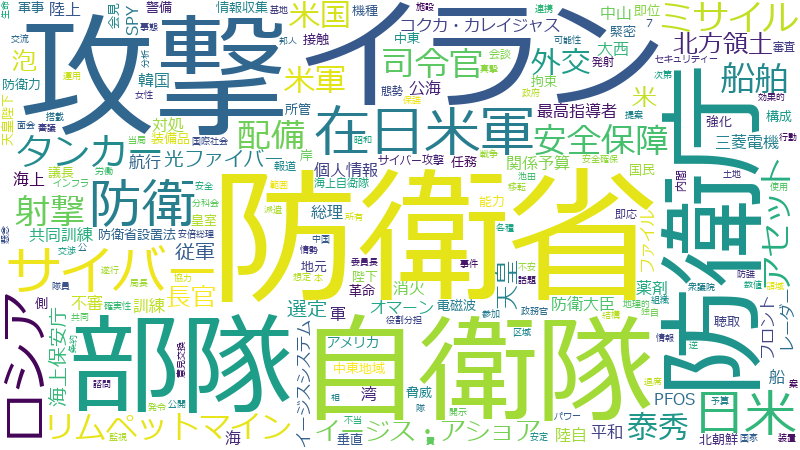

中山泰秀

兼内閣府副大臣
防衛省、国民、攻撃、強化、自衛隊、政府、情報、側、安全保障、日米、米国、対処、防衛、サイバー、イラン、部隊、ロシア、外交、米、能力、選定、協力、在日米軍、地元、総理、長官、アメリカ、船舶、配備、報道、審査、所管、連携、韓国、ミサイル、分析、構成、米軍、船、使用、タンカー、個人情報、整備、海、訓練、中国、予算、可能性、国家、平成、懸念、施設、海上保安庁、環境、観点、防衛庁、イージス・アショア、司令官、平和、想定、海上、聴取、規定、不安、保護、内閣、北方領土、天皇、安全、射撃、情報収集、接触、提案、次第、組織、緊密、行動、議長、退席、運用、アセット、世界、事件、事態、交渉、公表、北朝鮮、参加、各種、地域、女性、安定、派遣、範囲、結構、調査、負担、軍、防衛大臣、陸上
防衛省、攻撃、イラン、自衛隊、部隊、防衛庁、在日米軍、防衛、サイバー、日米、ロシア、タンカー、ミサイル、射撃、安全保障、司令官、配備、船舶、アセット、リムペットマイン、米国、泰秀、米軍、外交、イージス・アショア、米、長官、天皇、北方領土、泡、光ファイバー、海上保安庁、従軍、選定、コクカ・カレイジャス、SPY、対処、消火、フロント、陸自、船、海上、共同訓練、最高指導者、陸上、不審、中山、三菱電機、韓国、公海、オマーン、総理、軍、イージスシステム、個人情報、湾、レーダー、防衛大臣、訓練、海、薬剤、航行、PFOS、平和、関係予算、ファイル、大西、防衛省設置法、防衛力、軍事、強化、国民、中東地域、側、北朝鮮、中東、拘束、陛下、電磁波、アメリカ、地元、皇室、機種、任務、垂直、聴取、接触、能力、所管、情報収集、岸、構成、脅威、会見、議長、即位、緊密、装備品、革命、警備
防衛省
| 言及回数 | 56回 |
| 言及発言者数（参考人を含む） | 379人 |
2019-02-13 account_balance
…ております。特にロシアは、次のページ、六ページ、七ページをごらんいただいたらありがたいと思いますが、これは防衛省の資料ですが、極東、北方領土におけるロシア軍の動向というのは、北方領土、千島列島における軍備の強化、それか…
…言われています。私ども、北方領土周辺も、ある意味、そういった電磁波攻撃やハイブリッド攻撃という問題を、当然防衛省も想定しながら行っていると思いますが、何といっても、これから世界的な大規模イベントが、この日本には来年の東…
2019-02-27 account_balance
…どうぞよろしくお願いを申し上げます。本分科会は、皇室費、国会、裁判所、会計検査院、内閣、内閣府、復興庁及び防衛省所管並びに他の分科会の所管以外の事項についての審査を行うことになっております。平成三十一年度一般会計予算…
次に、防衛省所管について審査を進めます。政府から説明を聴取いたします。岩屋防衛大臣。
…この際、お諮りいたします。ただいま岩屋防衛大臣から申出がありましたとおり、防衛省所管関係予算の概要につきましては、その詳細は説明を省略し、本日の会議録に掲載したいと存じますが、御異議ありませんか。〔「異議なし」…
次に、防衛省所管について審査を進めます。質疑の申出がありますので、順次これを許します。宮川伸君。
次に、防衛省所管について審査を進めます。質疑の申出がありますので、これを許します。遠山清彦君。
2019-02-28 account_balance
…京一極集中を是正するために自治体の取組を支援する必要性、ＡＩ関連予算強化の必要性、印鑑のデジタル化、次に、防衛省所管については、イージス・アショア導入の問題点、専守防衛における防衛装備品の運用のあり方等であります。以…
2019-10-23 account_balance
…・エル・マンデブ海峡の東側の公海を中心に検討していきます。一つ、今回の派遣の目的は情報収集態勢の強化であり、防衛省設置法上の「所掌事務の遂行に必要な調査及び研究」として実施することを考えます。一つ、現在、直ちに自衛隊アセ…
…す。今後、この方針に基づき、政府一体となって取組を進めていくとともに、検討を進めてまいります。以上、詳細は防衛省を始めとする関係各省にお尋ねをいただきたいと思いますと、冒頭、その官房長官会見で読み上げられた後、記者の人…
…、現在の活動区域はソマリア沖・アデン湾とされています。他方で、政府が今後検討を進める新たな自衛隊の活動は、防衛省設置法の調査研究に基づく情報収集活動とされており、活動場所も海賊対処を行っているソマリア沖とは別の海域を想…
2020-11-10 account_balance
…防衛副大臣を拝命いたしました中山泰秀です。厳しさと不確実性を増す安全保障環境の中にあっても、防衛省・自衛隊の隊員と一丸となって、国民の生命と平和な暮らしを守り抜く所存です。大西政務官、松川政務官とともに、全力で岸大臣…
2020-11-12 account_balance
…ざいます。防衛副大臣を拝命いたしました中山泰秀です。厳しさと不確実性を増す安全保障環境の中にありましても、防衛省・自衛隊の隊員と一丸となりまして国民の生命と平和な暮らしを守り抜く所存です。大西政務官、松川政務官ととも…
2020-11-18 account_balance
…おはようございます。防衛省・自衛隊といたしましては、防衛大綱のもと、日米同盟の強化を図りつつ、自由で開かれたインド太平洋というビジョンを踏まえ、米国以外の国々とも多角的、多層的な安全保障協力を戦略的に推進してまいります…
…平和と安定にとっても極めて重要であり、我が国にとって望ましい安全保障環境の創出に大いに資するものであります。防衛省・自衛隊としては、こうした観点から、今後とも日英の防衛協力を一層深化させてまいりたいと思います。また、後…
2021-03-05 account_balance
…委員の皆様におかれましては、御指導、御鞭撻を賜りますよう、何とぞよろしくお願いを申し上げます。令和三年度の防衛省関係予算につきまして、その概要を御説明申し上げます。令和三年度予算においては、我が国を取り巻く安全保障環…
…展を踏まえた技術基盤の強化、日米同盟の強化、諸外国との安全保障協力の強化にも配意したものとなっております。防衛省所管の一般会計歳出予算額は五兆三千二百三十五億四千六百万円となり、前年度の当初予算額に比べ、百二億百万円の…
…とする地元の負担軽減を図るための在日米軍の兵力態勢見直し等についての具体的措置等を着実に実施します。以上、防衛省所管予算のほかに内閣官房及びデジタル庁所管予算百八十七億二百万円が防衛省関係の一般会計歳出予算額として計上…
…的措置等を着実に実施します。以上、防衛省所管予算のほかに内閣官房及びデジタル庁所管予算百八十七億二百万円が防衛省関係の一般会計歳出予算額として計上されております。これをもちまして、令和三年度の防衛省関係予算の概要の説…
…省所管予算のほかに内閣官房及びデジタル庁所管予算百八十七億二百万円が防衛省関係の一般会計歳出予算額として計上されております。これをもちまして、令和三年度の防衛省関係予算の概要の説明を終わります。ありがとうございます。…
2021-03-10 account_balance
…指摘いただきました資料は、二〇一八年のイージス・アショアのレーダー等の構成品の選定におきまして、七月十七日、防衛省において実施されました陸上配備型イージス構成品選定諮問会議で使用された資料でございます。具体的に申し上げ…
…ーチン社、代理人たる三菱商事、そういったものではないかということでございますけれども、機種選定に当たりまして防衛省のどのような職員がどのような相手方とどのような時期にどのような理由により接触したかを公表することは、今後の…
…防衛省といたしましては、特定の企業を優遇したり、それから排除したりするということは一切していないということ。それから、一般的に、機種選定に際し、提案者それから関係企業から必要な情報の収集を行う場合など、職務上必要と認め…
…広田先生、ありがとうございます。防衛省・自衛隊においては、海上自衛隊の哨戒機によって、尖閣諸島周辺海域を含む我が国周辺海域を航行する船舶等の状況を毎日監視するとともに、必要に応じまして護衛艦等を柔軟に運用して、警戒監視…
…共同訓練を通じて得られた共同対処能力は、各種事態に対処するに当たって応用し得るものであると考えております。防衛省・自衛隊としましては、我が国の領土、領海、領空を断固として守り抜くため、引き続き、海上保安庁などの関係機関…
…どうもありがとうございます。海自と海保の連携を進める根拠でございますけれども、防衛省・自衛隊としましては、海上保安庁との連携の強化に努めております。例えば、不審船に関わる共同対処マニュアルの策定に当たりましては、防衛…
…海上保安庁との連携の強化に努めております。例えば、不審船に関わる共同対処マニュアルの策定に当たりましては、防衛省設置法第四条第一項第二号「自衛隊の行動に関すること。」それから、海上保安庁が行う共同訓練につきましては、防…
…衛省設置法第四条第一項第二号「自衛隊の行動に関すること。」それから、海上保安庁が行う共同訓練につきましては、防衛省設置法第四条第一項第九号の規定、「所掌事務の遂行に必要な教育訓練に関すること。」を根拠といたしております。…
…りますが、いずれも不審船の対処における海上警備行動の円滑かつ的確な実施を目的とすることから、その策定根拠は、防衛省設置法第四条第一項第二号「自衛隊の行動に関すること。」が該当するということになってございます。以上でござ…
…、大変御心配をいただいておりますことを心から恐縮に存じますと同時に、二度とこういった事故が起こらないように、防衛省・自衛隊、徹底していきたい、かように考えてございます。御質問につきましては、本事故について、海上幕僚監部…
…あることを踏まえまして、可能な限り早急に調査結果をまとめて公表したい、かように考えてございます。その上で、防衛省・自衛隊といたしましては、自衛隊の訓練の実施に当たり、関係各自治体を始めとする地元の皆様方、そしてその皆様…
2021-03-17 account_balance
…まず、防衛省・自衛隊といたしまして、個人情報の取扱いにつきましてこのような事案が発生したことは、誠に申し訳なく考えておる次第でございます。本件は、平成二十八年三月、海上幕僚部の二等海曹が、女性隊員約二千七百名の個人情報…
…個人情報の保護に関する教育を改めて実施をしております。また、再発防止のための措置を講じたところであります。防衛省としては、これまでも、関連法令に基づく適切な管理の実施のために、職員に対して各種教育を実施してきたところで…
…方で、警務隊の捜査というものにつきましては、事柄の性質上、お答えは差し控えさせていただきたい、かように思います。いずれにしても、防衛省内で処分すべきは五日間の停職処分という形で、処分は行っているということでございます。…
2021-03-19 account_balance
…軍事力の強化を急速に進める中、中台の軍事バランスは全体として中国側に有利な方向に変化し、その差に関しては年々拡大する傾向が見られるところ、防衛省としましても引き続き関連動向を注視してまいりたい、そのように考えております。…
…、このミッションエッセンシャルに一部の在日米軍従業員が指定され、不安を抱いておられる方もいることについては、防衛省としても重く受け止めております。現在、考え方等について在日米軍と協議を行っているところでございます。なお…
…京都内における米軍機と思われる航空機の飛行に伴う苦情等につきましては、例えば、昨年七月から十二月までの間に、防衛省に対して合計二十五件寄せられております。防衛省といたしましては、これらの苦情等について、自衛隊機に該当が…
…苦情等につきましては、例えば、昨年七月から十二月までの間に、防衛省に対して合計二十五件寄せられております。防衛省といたしましては、これらの苦情等について、自衛隊機に該当がないことを確認した上で、その内容を米側に伝え、地…
…ありがとうございます。防衛省としましては、ＰＦＯＳ処理実行計画に基づきまして、泡消火薬剤を順次ＰＦＯＳを含まないものに交換をしている最中でありますが、二月二十六日に航空自衛隊那覇基地の外に出た泡消火薬剤は、ＰＦＯＳを含…
…ありがとうございます。今回の件につきましては、那覇基地から様々な報告を受け、防衛省本省、航空幕僚監部共に協力してその対応を検討し、逐次様々な助言を行っているところでございます。また、先般回収した泡消火薬剤につきまして…
…を行う際にも、労働関係法令等の趣旨を踏まえた適正なものとなりますように、日米間で不断に協議をしております。防衛省といたしましては、引き続き、御指摘を踏まえ、米側や労働組合と緊密に連携をしつつ、雇用主の立場から、雇用の安…
…ております。米軍人の人数に関する情報についていかなる情報が公表可能かについては、米側が判断をするものであり、防衛省といたしましては、その判断の是非についてコメントすることは差し控えさせていただきたいと存じます。その上で…
…あるとして、懸念が示され、政府に対して情報の提供がなされていないというのは委員御指摘のとおりでございます。防衛省といたしましても、米側の懸念について一定の配慮が必要と考えますが、在日米軍施設・区域の安定的な使用を確保す…
…が、在日米軍施設・区域の安定的な使用を確保する観点からは、こうした情報を得ることが重要だと考えております。防衛省としましては、米軍人等の人数に関わる情報の適切な取扱い等につきまして、関係省庁と緊密に連携しつつ、引き続き…
…地特措法の規定によりまして使用権原を取得することといたしております。その上で、土地の使用権原取得に関して、防衛省といたしましては、引き続き、この方針の下、米軍に対して安定的に施設・区域を提供するため、今後とも、土地所有…
…の、先生から御指摘のあった新法をこの通常国会に提出するため検討が行われているものと承知をいたしております。防衛省といたしましては、防衛施設周辺における土地の利用、管理の在り方は、国家安全保障に関わる重要な問題と認識して…
…いずれにしましても、引き続き、安全保障上の懸念が生じないよう、米軍に対して安定的な施設・区域を提供するとともに、先生から御指摘のあった防衛省・自衛隊の有する土地についてもしっかりと守り抜いていきたい、そのように思います。…
2021-03-23 account_balance
…防衛省としましては、石垣島への、特に陸上自衛隊、陸自部隊配備について、住民に向けた説明会を計七回実施してきております。また、部隊配置案、それから施設配置案、それから建設工事などについて、これまでも丁寧に御説明を申し上げて…
…ございます。基本的には地元の住民の方から自治体に対して要望をなさっていただいて、そして自治体の方から私ども防衛省、お話をいただいて、自治体と一緒に協議をし、そして必要に応じて説明会をこれからもやらせていただくという、そ…
…まず、防衛省といたしましては、南西地域の陸自部隊の空白状況をしっかりと解消すること、それから島嶼防衛の能力を強化していくということ、こういったことをしっかりと進めていきたいと思っております。特に、宮古島に宮古島駐屯地を…
…摘の国民保護計画につきましても、地域情勢の変化に応じて不断に見直すことでその実効性が高まるものと考えており、防衛省・自衛隊として、宮古島市、石垣市との協力を一層強化し、宮古島市や石垣市における国民保護に関する各種検討にし…
…層強化し、宮古島市や石垣市における国民保護に関する各種検討にしっかりと対応していくと。いずれにしましても、防衛省としては、国民の生命と財産を守り、我が国を防衛するため、着実な陸自部隊配備、これは国民保護への対応を含めま…
…防衛省・自衛隊に関しましては、東日本大震災の対応なども含めまして、事前に計画を有していない事態に直面しても、国民の皆様の生命、それから財産、しっかり守るということが使命であります。また、全力を挙げて対応もしてまいりました…
2021-04-06 account_balance
…いただいたことは、先生御指摘いただいたとおりでございます。これを受けまして、日米間で協議を行ってきた中で、防衛省から地元の理解を得ることの重要性を説明し、在日米軍の即応性の維持について意見交換をした結果、我が国を取り巻…
…事の方からは、訓練の必要性については御理解をいただいた上で、引き続き射撃時間の短縮などについて御要望を賜り、防衛省としても、そのように米側に要請していくことなど、地元の皆様への影響を軽減すべく、引き続き努力をしてまいる所…
…防衛省と地元自治体の間での確認書におきましては、冬季における射撃時間に関して、九州防衛局は、事前調整会議等、機会のあるごとに地元の理解を得ることの重要性について米軍に説明をする、それから、移転射撃の準備期間中におきまして…
…、これは真っ暗な中で撃つ練習をするということでありますが、これは必要不可欠であるという旨を述べております。防衛省といたしましては、確認書に基づき、可能な限り射撃時間が短縮されるように、先生の御指摘も真摯に受け止めながら…
…し、抑止力をしっかりと高める必要性から、我が国の防衛にとって非常に大事な訓練であるという認識でございます。防衛省としましては、可能な限り射撃時間が短縮されるよう米側に引き続き要請していくことなど、お地元の皆様への影響を…
2021-05-11 account_balance
…まずは、石橋先生から自衛隊病院関係者に対して配慮のあるお言葉をいただいたこと、防衛省を代表して感謝を申し上げたいと思います。先生の御推察どおり、現場の方は、今日も衛生監、隣におりますが、皆一生懸命、国民の命を守る、その…
…うに思っております。その上で、今の御質問でございますけれども、四月二十七日、総理からの御指示を受けまして、防衛省・自衛隊においては、東京と大阪に設置する大規模接種センターの運営に向け、必要な準備を加速させているところで…
…を活用させていただくことが効率的ではないかと、そのように考えてございます。センターの運営という観点からは、防衛省・自衛隊の能力を可能な限り活用をさせていただきたいと考えておりますとともに、民間に委託することができる業務…
攻撃
| 言及回数 | 39回 |
| 言及発言者数（参考人を含む） | 279人 |
2019-02-13 account_balance
…に整備した光ファイバーネットワーク網のようなものが、軍事的とかそういった部分でロシア側が何らかの利用や活用、攻撃のインフラとする可能性はないのかということ、これが私は一番の心配になっております。特にロシアは、次のページ…
…。このいわゆる紙面によれば、そしてまた、こういったサイバーに詳しい方から伺うと、これはロシアによるサイバー攻撃が疑われているということをお話をされておられました。これがもし事実であれば、スタックスネットに先立つサイバー…
…が疑われているということをお話をされておられました。これがもし事実であれば、スタックスネットに先立つサイバー攻撃かもしれないということで、当時話題になりました。また、次の九ページ。これは、ウクライナにおけるサイバー戦争…
…、アメリカのサンフランシスコをベースにしているメディアですけれども、それの日本語版。平昌五輪を狙ったサイバー攻撃、ロシアが北朝鮮を装い報復かという、何とも、昔、それこそ冷戦時代にＫＧＢとＣＩＡがある意味繰り広げていた、そ…
…かったんですけれども、ちょっと時間の関係で、ここを踏まえながら、次の質問に移りたいと思います。実は今、まず攻撃をする、他国を技術を持った国が攻撃をするという中で考えられるのは、具体的ないわゆる軍事的な侵攻というのもあり…
…の関係で、ここを踏まえながら、次の質問に移りたいと思います。実は今、まず攻撃をする、他国を技術を持った国が攻撃をするという中で考えられるのは、具体的ないわゆる軍事的な侵攻というのもありますけれども、この間のウクライナ等…
…いわゆる軍事的な侵攻というのもありますけれども、この間のウクライナ等々でも実際行われていたのは、ハイブリッド攻撃、いわゆる電磁波による、相手のステルス機能を奪ったり、ＧＰＳ機能を奪ったりという、そういったこともありました…
…さんからいただいた資料ですけれども、ロシアによるクリミア・セバストポリ、ウクライナの編入におけるハイブリッド攻撃というものが、実際、住民投票結果の情報改ざんが行われた可能性までを指摘しているということがございます。そうい…
…ということがございます。そういった問題。それから、次、十四ページ。これは、二〇一七年後半、ロシアの電磁波的攻撃による重要インフラ機能障害ということがあって、ノボロシースクという港を、航行中の船舶の船長が、搭載しているＧ…
…はロシアの主要な軍港があったということが言われています。私ども、北方領土周辺も、ある意味、そういった電磁波攻撃やハイブリッド攻撃という問題を、当然防衛省も想定しながら行っていると思いますが、何といっても、これから世界的…
…港があったということが言われています。私ども、北方領土周辺も、ある意味、そういった電磁波攻撃やハイブリッド攻撃という問題を、当然防衛省も想定しながら行っていると思いますが、何といっても、これから世界的な大規模イベントが…
…ページの資料をごらんいただきたいと思うんですが、これは、実は今ネット上には、アポフィスコードという、ＤＤｏＳ攻撃を請け負う企業というかグループというか、組織が存在をしています。ＤＤｏＳ攻撃を請け負った後、自分たちが、まる…
…アポフィスコードという、ＤＤｏＳ攻撃を請け負う企業というかグループというか、組織が存在をしています。ＤＤｏＳ攻撃を請け負った後、自分たちが、まるで領収書を発行するように、ツイッターで、私たちがやったというのをわざわざ宣伝…
…ーで、私たちがやったというのをわざわざ宣伝をするということが行われておりますが、今後想定しておくべきサイバー攻撃のパターンとして一つ考えられるのが、いわゆるオンラインゲーマー。このオンラインゲーマーの中から、もしかすると…
2019-10-23 account_balance
…回も見せていただきました。そもそも、このような対応が求められるようになる要因の一つは、ホルムズ海峡タンカー攻撃事件があるのではないかということは、これは国民の皆様方の等しい共通した認識だと私は思います。このホルムズ海…
…ではないかということは、これは国民の皆様方の等しい共通した認識だと私は思います。このホルムズ海峡のタンカー攻撃事件というのは、二〇一九年の六月十三日の現地時間早朝に、中東のホルムズ海峡付近で日本とノルウェーの海運会社が…
…トライン社所有のタンカー、フロント・アルタイルが、リムペットマイン、いわゆる吸着型水雷、若しくは飛来物による攻撃を受け、両船で火災が発生したということが起きています。アメリカとイランの軍関係者は、攻撃後、各船から乗組員を…
…若しくは飛来物による攻撃を受け、両船で火災が発生したということが起きています。アメリカとイランの軍関係者は、攻撃後、各船から乗組員を救出するなどの対応を行ってくださいました。この襲撃事件は、二〇一九年五月のオマーン湾で…
…認識をいたしております。イランとアメリカの間の関係が非常に緊張が高まる中で発生した事件であり、アメリカは、攻撃の責任はイランにあると非難をしております。サウジアラビアとイギリスはアメリカを支持いたしましたが、日本とドイ…
…イランはこの疑惑を否定し、米国が虚偽の情報を広め戦争を挑発していると、逆にアメリカを非難するようなことになっております。日本の国華産業所有のタンカー、コクカ・カレイジャスが攻撃を受けたのは、何年何月何日何時でしょうか。…
ノルウェーのフロントライン社所有のタンカー、フロント・アルタイルが攻撃を受けたのは、何月何日何時でしょうか。
…は、先ほども申し上げておりますように、安倍総理とハメネイ師が会談をした、まさにその同じときに日本のタンカーが攻撃を受けるということが起きていることが、もう皆様にも御理解をいただけたと思います。ちなみに、アメリカのポンペ…
…会見の後ろ側にディスプレーを置いて、そこに日本に関係する船舶が炎上している映像を出されながら、イランが行った攻撃だと厳しく非難をしたということであります。安倍総理大臣がイランに歴史的な訪問を行って、事態をエスカレートさせ…
…歴史的な訪問を行って、事態をエスカレートさせず対話に応じるよう求めたのに、イランは拒絶をし、日本のタンカーを攻撃して乗組員の生命を脅かし、日本を侮辱した、そしてイランが対話の席に戻るよう、経済的、外交的な努力を続けると。…
…込みをしております。日本の総理大臣がイランの最高指導者と面会するのと時を同じくして、日本に関連するタンカーが攻撃されるという怪しい事件に懸念を表明するというふうに書き込んでおります。また、国連のグテーレス事務総長は、民…
…懸念を表明するというふうに書き込んでおります。また、国連のグテーレス事務総長は、民間の船舶に対するいかなる攻撃も強く非難する、事実関係と攻撃の責任を明らかにしなければいけない、国際社会が対応できなければ、これは中東地域…
…込んでおります。また、国連のグテーレス事務総長は、民間の船舶に対するいかなる攻撃も強く非難する、事実関係と攻撃の責任を明らかにしなければいけない、国際社会が対応できなければ、これは中東地域の本格的な衝突になるというふう…
…この地図をごらんいただくと御理解をいただけますように、今回のフロント・アルタイル、またコクカ・カレイジャスが攻撃を受けた場所というのは、このオマーン湾になるわけであります。ホルムズ海峡のすぐ東側ということであり、今回、菅…
…アラビア海北部の公海及びバブ・エル・マンデブ海峡東側の公海を中心に検討していくと言った、まさにそのエリア内で攻撃を受けるという事態が二件続けて、近接した時間で起きているということであります。こういったことを考えますと、…
…念もあるわけです。次に、二枚目をごらんいただけたらと思うんですが、二枚目は、毎日新聞に六月十八日、ちょうど攻撃のあった数日後に掲載された資料でありますが、実は、皆様方も御存じのように、最初にポンペオ国務長官がエビデンス…
…のサウジアラビアの西側、十月十一日のイラン石油タンカー爆発事案、ペケをつけているところで実は発生をしている、攻撃を受けたというものなんですけれども、こういった部分も、要するにエリアに入るのかなと思うような言及が長官からさ…
…うな言及が長官からされておられます。本来は日本に関係する船舶の安全確保ということであると思うのですが、テロ攻撃情報全般についても情報収集の取組をされるという意味で私は理解をいたしております。将来的にどのような任務、オペ…
…米国とも連携をされ、日本関係船舶の安全を守り抜いてほしいと思います。ちなみに、米軍は、イランの革命防衛隊が攻撃した若しくは関与した可能性が高いと、先ほども指摘したように明言をしていますが、日本は、政府は、それについてど…
日本の国華産業所有のタンカー、コクカ・カレイジャスとノルウェーのフロントライン社所有のフロント・アルタイルを攻撃した者は一体何者なのか。日本政府は、原因究明そして犯人特定ができていますか。
…という指摘を、証左に基づいて指摘をしている。その中でこういったことが議論されていて、日本の関係する船が実際に攻撃を受けている中で、どうやって守るための、安全を確保するための調査研究をやるかということが主題だと思います。…
…す。いずれにしても、リスクというのは二つぐらい最低でも可能性があると私は考えています。一つは自衛隊に対する攻撃があった場合、もう一つは日本のタンカーに攻撃が生じた場合ということであります。この二つの場合、どのような対応…
…らい最低でも可能性があると私は考えています。一つは自衛隊に対する攻撃があった場合、もう一つは日本のタンカーに攻撃が生じた場合ということであります。この二つの場合、どのような対応、対処ができるのか、またその法的根拠について…
2020-01-31 account_balance
…ういった世界的な、また日本の中でも不安がある中で、国民が不安を抱いている中で、こういった非常に悪質なサイバー攻撃、こういったものが行われていることという問題は、非常に私、厳しく処罰されるべき問題ではないかなというふうに考…
…、けさのＮＨＫニュースを拝見をしましても、このサイバーに関しては、ＮＥＣさん含めて、いろいろなまさにサイバー攻撃があったというような報道も目にいたしております。この問題に関して、ちょっと私、自分自身の意見を申し上げてお…
…関して、ちょっと私、自分自身の意見を申し上げておきたいと思うんですけれども、このＮＥＣさんのいわゆるサイバー攻撃の報道が流れる前には、三菱電機への不正アクセスに関する問題というものが報道されていました。報道されている限り…
…対する匿名による情報共有及びことし一月の政府機関への報告といったように、長い時間がかかったとしても、想定外の攻撃を検知し対処できたこと、そして原因究明ができていることに対して一定の評価を私は与えるべきではないかと考えてい…
…。国内外で活躍しているサイバーセキュリティーの専門家の方々とお話をしておりますと、三菱電機と同様なサイバー攻撃を受けている可能性のある企業や団体が実は複数存在をしているという情報がございます。経営層で事実が伏せられてい…
…たところに注意喚起をしっかりと行わなければならないというふうに思います。また、一企業が国家レベルのサイバー攻撃への対処はどうあるべきかなどの議論は別にして、国家が強い意思を持って、想定外のサイバー脅威を早期に発見、分析…
2021-03-05 account_balance
…を獲得、強化します。また、従来の領域における能力を強化します。具体的には、航空機、艦艇、ミサイル等による攻撃に効果的に対処するため、海空領域における能力、スタンドオフ防衛能力、総合ミサイル防空能力、機動・展開能力を強…
2021-03-19 account_balance
…ありがとうございます。まず、専守防衛といいますのは、相手から武力攻撃を受けたときに初めて防衛力を行使し、その態様も自衛のための必要最小限にとどめ、また、保持する防衛力も自衛のための必要最小限のものに限るなど、憲法の精神…
…的な方針であることは委員も御案内のとおりでございます。また、政府といたしましては、これまで、いわゆる敵基地攻撃について、日米の役割分担の中で米国の打撃力に依存をしており、今後とも、こうした日米間の基本的な役割分担を変更…
2021-03-23 account_balance
…衛期間中に配備が実現できるように取り組んでいきたいと思っています。また、南西地域への部隊配備は、島嶼部への攻撃に対する抑止力、それから対処力を高めるものであり、むしろ国民の安全、安心につながるものであるというふうに考え…
…、それから財産、しっかり守るということが使命であります。また、全力を挙げて対応もしてまいりました。万が一武力攻撃事態等が起きた場合の国民保護についても同様であります。また、南西諸島における着実な陸自部隊配備と国民保護への…
イラン
| 言及回数 | 23回 |
| 言及発言者数（参考人を含む） | 123人 |
2019-10-23 account_balance
…際社会の平和と繁栄にとって極めて重要であります。中東における緊張緩和と情勢の安定化に向けて、安倍総理が六月のイラン訪問や九月の国連総会時の日米首脳会談、日・イラン首脳会談を行うなど、政府として外交的な取組をしっかり進めて…
…中東における緊張緩和と情勢の安定化に向けて、安倍総理が六月のイラン訪問や九月の国連総会時の日米首脳会談、日・イラン首脳会談を行うなど、政府として外交的な取組をしっかり進めてまいりました。二、同時に、世界における主要なエ…
…いわゆる吸着型水雷、若しくは飛来物による攻撃を受け、両船で火災が発生したということが起きています。アメリカとイランの軍関係者は、攻撃後、各船から乗組員を救出するなどの対応を行ってくださいました。この襲撃事件は、二〇一九…
…は、二〇一九年五月のオマーン湾での事件の一カ月後、そして、アメリカのトランプ大統領の仲介をすべく、安倍首相がイランの最高指導者アリー・ハメネイ師と会談したこの同日に発生したと認識をいたしております。イランとアメリカの間…
…べく、安倍首相がイランの最高指導者アリー・ハメネイ師と会談したこの同日に発生したと認識をいたしております。イランとアメリカの間の関係が非常に緊張が高まる中で発生した事件であり、アメリカは、攻撃の責任はイランにあると非難…
…ております。イランとアメリカの間の関係が非常に緊張が高まる中で発生した事件であり、アメリカは、攻撃の責任はイランにあると非難をしております。サウジアラビアとイギリスはアメリカを支持いたしましたが、日本とドイツはイランに…
…任はイランにあると非難をしております。サウジアラビアとイギリスはアメリカを支持いたしましたが、日本とドイツはイランに責任があることの証拠についてさらなる調査を求めておりまして、イランはこの疑惑を否定し、米国が虚偽の情報を…
…リカを支持いたしましたが、日本とドイツはイランに責任があることの証拠についてさらなる調査を求めておりまして、イランはこの疑惑を否定し、米国が虚偽の情報を広め戦争を挑発していると、逆にアメリカを非難するようなことになってお…
安倍総理とイランのハメネイ最高指導者が会談をしたのは、何年何月何日何時ですか。
…して、わざわざ会見の後ろ側にディスプレーを置いて、そこに日本に関係する船舶が炎上している映像を出されながら、イランが行った攻撃だと厳しく非難をしたということであります。安倍総理大臣がイランに歴史的な訪問を行って、事態をエ…
…が炎上している映像を出されながら、イランが行った攻撃だと厳しく非難をしたということであります。安倍総理大臣がイランに歴史的な訪問を行って、事態をエスカレートさせず対話に応じるよう求めたのに、イランは拒絶をし、日本のタンカ…
…であります。安倍総理大臣がイランに歴史的な訪問を行って、事態をエスカレートさせず対話に応じるよう求めたのに、イランは拒絶をし、日本のタンカーを攻撃して乗組員の生命を脅かし、日本を侮辱した、そしてイランが対話の席に戻るよう…
…応じるよう求めたのに、イランは拒絶をし、日本のタンカーを攻撃して乗組員の生命を脅かし、日本を侮辱した、そしてイランが対話の席に戻るよう、経済的、外交的な努力を続けると。あくまでも経済的な圧力をてこにイランに対話を迫る考え…
…を侮辱した、そしてイランが対話の席に戻るよう、経済的、外交的な努力を続けると。あくまでも経済的な圧力をてこにイランに対話を迫る考えをアメリカのポンペオ国務長官は示しているわけであります。イラン外務省の報道官は、ツイッタ…
…くまでも経済的な圧力をてこにイランに対話を迫る考えをアメリカのポンペオ国務長官は示しているわけであります。イラン外務省の報道官は、ツイッターにこんな書き込みをしております。日本の総理大臣がイランの最高指導者と面会するの…
…しているわけであります。イラン外務省の報道官は、ツイッターにこんな書き込みをしております。日本の総理大臣がイランの最高指導者と面会するのと時を同じくして、日本に関連するタンカーが攻撃されるという怪しい事件に懸念を表明す…
…発表した、ペンタゴンの方から発表されたのが、この二枚の写真になるわけであります。上は、革命ガード、いわゆるイランの革命防衛隊という組織でございますが、革命防衛隊がリムペットマインを仕掛ける若しくは剥がすというような行為…
…と思われる者の指紋等がまさに証拠として現場から拾われている、収集されているということでございます。ここで、イランの革命ガード、よく聞くんですけれども、この革命防衛隊という組織はどんな組織かといいますと、イランというのは…
…。ここで、イランの革命ガード、よく聞くんですけれども、この革命防衛隊という組織はどんな組織かといいますと、イランというのは、そもそも正規軍が約四十万人おります。非常に大きな組織であります。主に四つの柱の部隊から成ってい…
…回答の中で、まず、現時点において、直ちに我が国に関係する船舶の防護を実施する状況にはないものの、十月十一日のイラン石油タンカー爆発事案などに見られるような昨今の情勢に鑑み、我が国として情報収集の取組を更に強化する必要があ…
…なりましたということです、このように長官が答えていらっしゃいます。回答の中で言及しておられます十月十一日のイラン石油タンカー爆発事案でありますが、この事件は、サウジアラビア西岸の港湾都市ジッダ沖の紅海、すなわち、先ほど…
…西岸の港湾都市ジッダ沖の紅海、すなわち、先ほど私がお配りをした資料の、このサウジアラビアの西側、十月十一日のイラン石油タンカー爆発事案、ペケをつけているところで実は発生をしている、攻撃を受けたというものなんですけれども、…
…ますので、しっかりと米国とも連携をされ、日本関係船舶の安全を守り抜いてほしいと思います。ちなみに、米軍は、イランの革命防衛隊が攻撃した若しくは関与した可能性が高いと、先ほども指摘したように明言をしていますが、日本は、政…
…資料でもお示ししたように、米国という日本と安全保障上切り離せない関係のある国が、ここまでおかしい、怪しいぞ、イランはこんなことをやっているんじゃないかという指摘を、証左に基づいて指摘をしている。その中でこういったことが議…
自衛隊
| 言及回数 | 38回 |
| 言及発言者数（参考人を含む） | 444人 |
2019-02-13 account_balance
…まさに、世界三番目の大国として、逆に、二・五兆だけで実質、防衛をつかさどっているというのは、非常に厳しい中、自衛隊の皆さん方、災害派遣も含めて頑張って、御苦労いただいているなということで、国民は大きな期待を抱いていると思…
2019-10-23 account_balance
…なる外交努力。一つ、関係業界との綿密な情報共有を始めとする航行安全対策の徹底。一つ、情報収集態勢強化のための自衛隊アセットの活用に係る具体的な検討の開始。四、以上の三つの方針のうち、自衛隊アセットの活用については、以下…
…。一つ、情報収集態勢強化のための自衛隊アセットの活用に係る具体的な検討の開始。四、以上の三つの方針のうち、自衛隊アセットの活用については、以下の考え方を基本として、今後具体的に検討していきますとおっしゃっています。一つ…
…は参加せず、日本独自の取組を適切に行っていきますが、引き続き米国とは緊密に連携していく考えであります。一つ、自衛隊のアセットについては、新規アセットとの艦艇派遣や既存の海賊対処部隊の活用の可能性について、今後、検討をして…
…あり、防衛省設置法上の「所掌事務の遂行に必要な調査及び研究」として実施することを考えます。一つ、現在、直ちに自衛隊アセットによる我が国に関係する船舶の防護の実施を要する状況にはありませんが、いずれにせよ、我が国に関係する…
…を更に強化する必要があると判断をし、政府として航行安全対策や外交努力を継続しつつ、情報収集態勢の強化のため、自衛隊のアセットの活用について具体的な検討を開始することにしましたと。また、米国とでありますけれども、米国とは…
…来事というのは、原因があって結果があるということだと思います。今回、日本に関係する船舶を防護するため中東に自衛隊を派遣することも、まさに原因があって結果ということであります。これは一つの序章にしかすぎない可能性をはらん…
自衛隊を派遣するに当たっての法的根拠、それからこのオペレーション、すなわち任務、一体、任務の目的は何なんでしょうか。念のため、明確にお答えください。
…アフリカ、ソマリア沖で海上自衛隊が行っている民間船舶の護衛や警戒監視は、海賊対処法に基づいて行われています。この法律では防衛大臣が部隊の活動する区域や期間を定めることとされていて、現在の活動区域はソマリア沖・アデン湾とさ…
…こととされていて、現在の活動区域はソマリア沖・アデン湾とされています。他方で、政府が今後検討を進める新たな自衛隊の活動は、防衛省設置法の調査研究に基づく情報収集活動とされており、活動場所も海賊対処を行っているソマリア沖…
…主題だと思います。いずれにしても、リスクというのは二つぐらい最低でも可能性があると私は考えています。一つは自衛隊に対する攻撃があった場合、もう一つは日本のタンカーに攻撃が生じた場合ということであります。この二つの場合、…
…自衛隊のアセット若しくは自衛隊アセットの活用という表現で会見ではおさまっていますが、どのようなコンビネーションでアセットを動かすのか、相当考え、準備をし、また計画を前進させる必要性があると私は思います。手のうちを明かす…
2020-11-10 account_balance
…防衛副大臣を拝命いたしました中山泰秀です。厳しさと不確実性を増す安全保障環境の中にあっても、防衛省・自衛隊の隊員と一丸となって、国民の生命と平和な暮らしを守り抜く所存です。大西政務官、松川政務官とともに、全力で岸大臣…
2020-11-12 account_balance
…。防衛副大臣を拝命いたしました中山泰秀です。厳しさと不確実性を増す安全保障環境の中にありましても、防衛省・自衛隊の隊員と一丸となりまして国民の生命と平和な暮らしを守り抜く所存です。大西政務官、松川政務官とともに全力で…
2020-11-18 account_balance
…おはようございます。防衛省・自衛隊といたしましては、防衛大綱のもと、日米同盟の強化を図りつつ、自由で開かれたインド太平洋というビジョンを踏まえ、米国以外の国々とも多角的、多層的な安全保障協力を戦略的に推進してまいります…
…定にとっても極めて重要であり、我が国にとって望ましい安全保障環境の創出に大いに資するものであります。防衛省・自衛隊としては、こうした観点から、今後とも日英の防衛協力を一層深化させてまいりたいと思います。また、後段御質問…
2021-03-10 account_balance
…は意思決定の中立性が不当に損なわれるおそれがあるとともに、不当に国民の間に混乱を生じさせるおそれがあること、自衛隊の装備品等の機能、性能等に関する情報であり、これを公にすることにより、装備品等の質的能力が推察され、自衛隊…
…、自衛隊の装備品等の機能、性能等に関する情報であり、これを公にすることにより、装備品等の質的能力が推察され、自衛隊の任務の効果的な遂行に支障を及ぼして、ひいては我が国の安全を害するおそれがあることから、開示することを差し…
…広田先生、ありがとうございます。防衛省・自衛隊においては、海上自衛隊の哨戒機によって、尖閣諸島周辺海域を含む我が国周辺海域を航行する船舶等の状況を毎日監視するとともに、必要に応じまして護衛艦等を柔軟に運用して、警戒監視…
…生かして緊密に連携をしているところです。武力攻撃に至らない侵害への対処については、海上保安庁等の警察機関と自衛隊との連携が極めて重要であるとの認識の下、平成二十七年、海上警備行動などの発令手続の迅速化のための閣議決定を…
…九州西方海空域において、不審船対処に関わる海上保安庁との共同訓練を実施したところでございます。本訓練は、海上自衛隊の技量向上や海上保安庁との共同対処能力の強化を目的といたしておりまして、艦艇間の情報共有、共同追跡、それか…
…を通じて得られた共同対処能力は、各種事態に対処するに当たって応用し得るものであると考えております。防衛省・自衛隊としましては、我が国の領土、領海、領空を断固として守り抜くため、引き続き、海上保安庁などの関係機関との更な…
…どうもありがとうございます。海自と海保の連携を進める根拠でございますけれども、防衛省・自衛隊としましては、海上保安庁との連携の強化に努めております。例えば、不審船に関わる共同対処マニュアルの策定に当たりましては、防衛…
…おります。例えば、不審船に関わる共同対処マニュアルの策定に当たりましては、防衛省設置法第四条第一項第二号「自衛隊の行動に関すること。」それから、海上保安庁が行う共同訓練につきましては、防衛省設置法第四条第一項第九号の規…
…、いずれも不審船の対処における海上警備行動の円滑かつ的確な実施を目的とすることから、その策定根拠は、防衛省設置法第四条第一項第二号「自衛隊の行動に関すること。」が該当するということになってございます。以上でございます。…
…心配をいただいておりますことを心から恐縮に存じますと同時に、二度とこういった事故が起こらないように、防衛省・自衛隊、徹底していきたい、かように考えてございます。御質問につきましては、本事故について、海上幕僚監部の事故調…
…を踏まえまして、可能な限り早急に調査結果をまとめて公表したい、かように考えてございます。その上で、防衛省・自衛隊といたしましては、自衛隊の訓練の実施に当たり、関係各自治体を始めとする地元の皆様方、そしてその皆様方の御理…
…り早急に調査結果をまとめて公表したい、かように考えてございます。その上で、防衛省・自衛隊といたしましては、自衛隊の訓練の実施に当たり、関係各自治体を始めとする地元の皆様方、そしてその皆様方の御理解、御協力を得ていくこと…
2021-03-17 account_balance
…まず、防衛省・自衛隊といたしまして、個人情報の取扱いにつきましてこのような事案が発生したことは、誠に申し訳なく考えておる次第でございます。本件は、平成二十八年三月、海上幕僚部の二等海曹が、女性隊員約二千七百名の個人情報…
…が、女性隊員約二千七百名の個人情報ファイルを私的に使用する目的で業務用パソコンに保存し、平成三十年三月、海上自衛隊補給本部に転出する際に、同僚に依頼して個人情報を異動先の業務用パソコンへ送信させ、許可を得ずに個人情報ファ…
…いて事案が発生しておることは、本当に申し訳ない次第であります。今般の事案を受けまして、海上幕僚監部及び海上自衛隊補給本部におきまして、個人情報の保護に関する教育を改めて実施をしております。また、再発防止のための措置を講…
2021-03-19 account_balance
…までの間に、防衛省に対して合計二十五件寄せられております。防衛省といたしましては、これらの苦情等について、自衛隊機に該当がないことを確認した上で、その内容を米側に伝え、地元の皆様の生活に与える影響を最小限にとどめるよう…
…画に基づきまして、泡消火薬剤を順次ＰＦＯＳを含まないものに交換をしている最中でありますが、二月二十六日に航空自衛隊那覇基地の外に出た泡消火薬剤は、ＰＦＯＳを含まない泡消火薬剤であるとの報告を受けておりました。三月十日の…
…いずれにしましても、引き続き、安全保障上の懸念が生じないよう、米軍に対して安定的な施設・区域を提供するとともに、先生から御指摘のあった防衛省・自衛隊の有する土地についてもしっかりと守り抜いていきたい、そのように思います。…
2021-03-23 account_balance
…関連する宮古島、そしてまた石垣島に対する自衛隊の駐屯地、あとミサイル基地、それから弾薬庫、こういったものの建設について、その都度地元の皆様方と丁寧に御説明をする機会を過去に設けさせていただいております。今後、またそうい…
…防衛省としましては、石垣島への、特に陸上自衛隊、陸自部隊配備について、住民に向けた説明会を計七回実施してきております。また、部隊配置案、それから施設配置案、それから建設工事などについて、これまでも丁寧に御説明を申し上げて…
…保護計画につきましても、地域情勢の変化に応じて不断に見直すことでその実効性が高まるものと考えており、防衛省・自衛隊として、宮古島市、石垣市との協力を一層強化し、宮古島市や石垣市における国民保護に関する各種検討にしっかりと…
…防衛省・自衛隊に関しましては、東日本大震災の対応なども含めまして、事前に計画を有していない事態に直面しても、国民の皆様の生命、それから財産、しっかり守るということが使命であります。また、全力を挙げて対応もしてまいりました…
2021-04-06 account_balance
…の理解を得ることの重要性について米軍に説明をする、それから、移転射撃の準備期間中におきましても、米軍に対し、自衛隊と同様の射撃をすることの重要性について継続的に説明をするといった取組などを実施することにより、可能な限り射…
2021-05-11 account_balance
…まずは、石橋先生から自衛隊病院関係者に対して配慮のあるお言葉をいただいたこと、防衛省を代表して感謝を申し上げたいと思います。先生の御推察どおり、現場の方は、今日も衛生監、隣におりますが、皆一生懸命、国民の命を守る、その…
…ております。その上で、今の御質問でございますけれども、四月二十七日、総理からの御指示を受けまして、防衛省・自衛隊においては、東京と大阪に設置する大規模接種センターの運営に向け、必要な準備を加速させているところでございま…
…せているところでございます。国として、新型コロナウイルスワクチンの国民の皆様への接種を速やかに進めるため、自衛隊はワクチン接種に専念をし、ワクチン接種を支える受付、それから案内、予約や接種記録の管理などの周辺業務につい…
…せていただくことが効率的ではないかと、そのように考えてございます。センターの運営という観点からは、防衛省・自衛隊の能力を可能な限り活用をさせていただきたいと考えておりますとともに、民間に委託することができる業務について…
部隊
| 言及回数 | 23回 |
| 言及発言者数（参考人を含む） | 209人 |
2019-02-13 account_balance
…ございますが、これはイギリスのインディペンデントというメディアですけれども、ロシアは情報戦にフォーカスした新部隊を創設したという報道が二〇一七年二月の二十二日にされています。十一ページは、これはＣＮＥＴといいまして、ア…
2019-10-23 account_balance
…緊密に連携していく考えであります。一つ、自衛隊のアセットについては、新規アセットとの艦艇派遣や既存の海賊対処部隊の活用の可能性について、今後、検討をしていきます。一つ、活動の地理的範囲については、オマーン湾、アラビア海の…
…いいますと、イランというのは、そもそも正規軍が約四十万人おります。非常に大きな組織であります。主に四つの柱の部隊から成っていますが、陸軍司令官、海軍司令官、空軍司令官、そして防空軍司令官という形。一方、ハメネイ師という…
…これも四つの柱、一つが陸軍司令官、もう一つが海軍司令官、そしてもう一つが航空宇宙軍司令官、そして最後がコッズ部隊司令官という、ある意味サイバー戦争に備えるような形、若しくは、各国の、今、先進国のトレンドである宇宙軍という…
…イバー戦争に備えるような形、若しくは、各国の、今、先進国のトレンドである宇宙軍というキーワードまでが出てくる部隊が、最高指導者ハメネイ師という宗教リーダーから直接組織として直轄になっている。そして、コッズ部隊司令官という…
…でが出てくる部隊が、最高指導者ハメネイ師という宗教リーダーから直接組織として直轄になっている。そして、コッズ部隊司令官という形、これは、実はある意味の特殊部隊、ある意味、親衛隊と言っても過言ではないような形で構成をされて…
…宗教リーダーから直接組織として直轄になっている。そして、コッズ部隊司令官という形、これは、実はある意味の特殊部隊、ある意味、親衛隊と言っても過言ではないような形で構成をされているということであります。こういったことを考…
…海上自衛隊が行っている民間船舶の護衛や警戒監視は、海賊対処法に基づいて行われています。この法律では防衛大臣が部隊の活動する区域や期間を定めることとされていて、現在の活動区域はソマリア沖・アデン湾とされています。他方で、…
2021-03-05 account_balance
…ミサイル防空能力、機動・展開能力を強化します。さらに、防衛力の持続性、強靱性を強化します。特に、継続的な部隊運用に必要な各種弾薬を取得するとともに、装備品の維持整備に係る取組を推進します。第二に、防衛力の中心的な構…
…チェーンの強化や、防衛装備移転三原則の下での装備品の適切な海外移転の取組等を推進します。さらに、政策判断や部隊運用に資する情報支援を適切に実施するため、情報の収集、分析の各段階における情報機能を強化します。第三に、大…
…析の各段階における情報機能を強化します。第三に、大規模災害への対応です。各種の災害に際して、十分な規模の部隊を迅速に展開して初動対応に万全を期すとともに、対処能力を強化します。第四に、安全保障協力の強化です。自由…
2021-03-23 account_balance
…防衛省としましては、石垣島への、特に陸上自衛隊、陸自部隊配備について、住民に向けた説明会を計七回実施してきております。また、部隊配置案、それから施設配置案、それから建設工事などについて、これまでも丁寧に御説明を申し上げて…
…は、石垣島への、特に陸上自衛隊、陸自部隊配備について、住民に向けた説明会を計七回実施してきております。また、部隊配置案、それから施設配置案、それから建設工事などについて、これまでも丁寧に御説明を申し上げております。しっ…
…まず、防衛省といたしましては、南西地域の陸自部隊の空白状況をしっかりと解消すること、それから島嶼防衛の能力を強化していくということ、こういったことをしっかりと進めていきたいと思っております。特に、宮古島に宮古島駐屯地を…
…っかりと進めていきたいと思っております。特に、宮古島に宮古島駐屯地を開設し、また警備隊、中距離地対空誘導弾部隊及び地対艦誘導弾部隊などの配備を進めてまいりました。また、奄美大島にも奄美駐屯地及び瀬戸内分屯地、こういった…
…いと思っております。特に、宮古島に宮古島駐屯地を開設し、また警備隊、中距離地対空誘導弾部隊及び地対艦誘導弾部隊などの配備を進めてまいりました。また、奄美大島にも奄美駐屯地及び瀬戸内分屯地、こういったものを進めております…
…した。また、奄美大島にも奄美駐屯地及び瀬戸内分屯地、こういったものを進めております。引き続き、石垣島への陸自部隊の配備を進めており、現時点で配備時期は未定でございますけれども、今中期防衛期間中に配備が実現できるように取り…
…ますけれども、今中期防衛期間中に配備が実現できるように取り組んでいきたいと思っています。また、南西地域への部隊配備は、島嶼部への攻撃に対する抑止力、それから対処力を高めるものであり、むしろ国民の安全、安心につながるもの…
…応していくと。いずれにしましても、防衛省としては、国民の生命と財産を守り、我が国を防衛するため、着実な陸自部隊配備、これは国民保護への対応を含めまして、島嶼防衛のための取組に万全を期してまいりたいと、かように考えてござ…
…ました。万が一武力攻撃事態等が起きた場合の国民保護についても同様であります。また、南西諸島における着実な陸自部隊配備と国民保護への対応は共に国民の皆様の生命、財産を守る取組でありまして、双方ともしっかりと進めるべき課題で…
…て、双方ともしっかりと進めるべき課題であるというふうに思います。その上で、国民保護への対応については、陸自部隊の配備によりまして、部隊と地元自治体との更なる連携の強化、それから部隊による現地の状況の一層的確な把握といっ…
…めるべき課題であるというふうに思います。その上で、国民保護への対応については、陸自部隊の配備によりまして、部隊と地元自治体との更なる連携の強化、それから部隊による現地の状況の一層的確な把握といったことが効果的に見込まれ…
…上で、国民保護への対応については、陸自部隊の配備によりまして、部隊と地元自治体との更なる連携の強化、それから部隊による現地の状況の一層的確な把握といったことが効果的に見込まれるというふうに考えてございます。こうした点も踏…
防衛庁
| 言及回数 | 12回 |
| 言及発言者数（参考人を含む） | 24人 |
2021-03-10 account_balance
…米国ミサイル防衛庁、ＭＤＡとは、平素から様々な意見交換等を行い、緊密に連携をしており、その一環として、二〇一八年七月二十三日に、当時のグリーブス米国ミサイル防衛庁長官が来日をされ、当時の整備局長らと面会をしたということで…
…見交換等を行い、緊密に連携をしており、その一環として、二〇一八年七月二十三日に、当時のグリーブス米国ミサイル防衛庁長官が来日をされ、当時の整備局長らと面会をしたということでございます。この面会におきましては、日米の弾道…
…アメリカのミサイル防衛庁とは、平素から様々な意見交換等を行い、緊密に連携をしておりまして、二〇一八年のグリーブス当時長官の来日もその一環であります。また、先日の二月十七日、整備計画局長から現在の米国ミサイル防衛庁長官で…
…のグリーブス当時長官の来日もその一環であります。また、先日の二月十七日、整備計画局長から現在の米国ミサイル防衛庁長官であるヒル長官にも確認をいたしましたが、米国ミサイル防衛庁は誠実な仲介者としての役割を担っており、ＳＰ…
…二月十七日、整備計画局長から現在の米国ミサイル防衛庁長官であるヒル長官にも確認をいたしましたが、米国ミサイル防衛庁は誠実な仲介者としての役割を担っており、ＳＰＹ７を推すなど、いろいろな疑念が今湧き起こっておるようでござい…
…二〇一八年七月二十三日、当時のグリーブス米国ミサイル防衛庁長官が来日をし、当時の整備計画局長ら事務方と面会し、日米の弾道ミサイル防衛に係る意見交換を実施をした。この訪日の際、大臣、副大臣、政務官含めて面会もしておりません…
…のであったため、当時公表はしておりませんでした。なぜ公表しなかったのかということも含めますと、米国ミサイル防衛庁とは、先ほど来申し上げているように、平素から様々な意見交換を行っているということでございます。また、緊密な…
…まず前提としまして、ＳＰＹ７それからＳＰＹ６、これはどちらの提案にも米国のミサイル防衛庁が関わっているところでありまして、ＭＤＡがどちらか一方のみを有利にする必然性というのはないというふうに思います。その上で、特にロッ…
…ン社それからＭＤＡが癒着していたのではないかというような御指摘に関しては、整備計画局長から現在の米国ミサイル防衛庁長官であるヒル長官にも確認をいたしておりますが、米国ミサイル防衛庁は誠実な仲介者としての役割を担っており、…
…しては、整備計画局長から現在の米国ミサイル防衛庁長官であるヒル長官にも確認をいたしておりますが、米国ミサイル防衛庁は誠実な仲介者としての役割を担っており、ＳＰＹ７を推すようなことは一切なく、公平公正に業務を遂行したという…
…接触報告にある接触相手方、これは、米国ミサイル防衛庁、それからロッキード・マーチン社、代理人たる三菱商事、そういったものではないかということでございますけれども、機種選定に当たりまして防衛省のどのような職員がどのような相…
2021-03-19 account_balance
…考えていないという説明をしてきてございます。御指摘の、平成十五年一月二十四日の衆議院予算委員会における石破防衛庁長官の答弁は、これらの考え方について申し述べたものであると考えておりまして、政府としましては、今後とも、専…
在日米軍
| 言及回数 | 19回 |
| 言及発言者数（参考人を含む） | 128人 |
2021-03-19 account_balance
…ありがとうございます。在日米軍駐留経費の米側負担額及び日米の負担割合につきましては、米軍の駐留に伴い必要となる経費の範囲の捉え方が日米間で異なることなどから、一概に算定し得るものではないということでございます。その上…
…の上で、御指摘の数値八六・四％は、二〇一六年、平成二十八年当時に要求のあった議員のお考えに沿って機械的に、在日米軍関係費として日本側が負担している経費項目のみを捉えて、日本側の負担割合を日本側が把握している範囲で、単に試…
…が把握している範囲で、単に試算として数値化したものであるというふうに考えます。当該数値は、防衛予算である在日米軍関係経費の項目のみを基にその内訳を出したものであり、その他の米側のみが支払っている経費を含めた、在日米軍の…
…る在日米軍関係経費の項目のみを基にその内訳を出したものであり、その他の米側のみが支払っている経費を含めた、在日米軍の駐留に伴い必要となる経費全体の日米の負担割合や項目を示すものではないということでございます。いずれにし…
…項目を示すものではないということでございます。いずれにしましても、ＨＮＳの適切な負担規模につきましては、在日米軍の円滑かつ効果的な運用を支えるＨＮＳは引き続き重要である点を踏まえた上で、我が国の厳しい財政状況、我が国を…
…ありがとうございます。在日米軍において、御指摘のミッションエッセンシャルというのは、自然災害発生時やコロナ禍なども含めた緊急時等においても、在日米軍の即応性維持のために必要不可欠な要員として位置づけられているものと承知…
…いて、御指摘のミッションエッセンシャルというのは、自然災害発生時やコロナ禍なども含めた緊急時等においても、在日米軍の即応性維持のために必要不可欠な要員として位置づけられているものと承知をいたしております。その上で、この…
…要員として位置づけられているものと承知をいたしております。その上で、このミッションエッセンシャルに一部の在日米軍従業員が指定され、不安を抱いておられる方もいることについては、防衛省としても重く受け止めております。現在、…
…、不安を抱いておられる方もいることについては、防衛省としても重く受け止めております。現在、考え方等について在日米軍と協議を行っているところでございます。なお、在日米軍からは、在日米軍従業員が戦闘行動に関わることはない旨…
…しても重く受け止めております。現在、考え方等について在日米軍と協議を行っているところでございます。なお、在日米軍からは、在日米軍従業員が戦闘行動に関わることはない旨、説明を受けております。いずれにしましても、本件につ…
…めております。現在、考え方等について在日米軍と協議を行っているところでございます。なお、在日米軍からは、在日米軍従業員が戦闘行動に関わることはない旨、説明を受けております。いずれにしましても、本件につきましては、在日…
…米軍従業員が戦闘行動に関わることはない旨、説明を受けております。いずれにしましても、本件につきましては、在日米軍従業員の方々の御不安を解消することが、御指摘のとおり重要であると考えております。緊急時等における勤務の在り…
…業員の方々の御不安を解消することが、御指摘のとおり重要であると考えております。緊急時等における勤務の在り方についても、今後も在日米軍との調整、確認を行うなど、引き続き真摯に取り組んでまいりたい、このように考えております。…
…ありがとうございます。在日米軍従業員の労働条件につきましては、日米地位協定第十二条５の規定に基づき、雇用及び労働の条件、労働者の保護のための条件並びに労働関係に関する労働者の権利は、別段の合意をする場合を除き、我が国の…
…メントすることは差し控えさせていただきたいと存じます。その上で、過去、政府が米側から入手し、公表していた在日米軍施設・区域内外に居住する地方公共団体別の米軍人等の人数については、二〇一四年以降、米側から、国際社会におけ…
…委員御指摘のとおりでございます。防衛省といたしましても、米側の懸念について一定の配慮が必要と考えますが、在日米軍施設・区域の安定的な使用を確保する観点からは、こうした情報を得ることが重要だと考えております。防衛省とし…
…にもございます。そんな意味を踏まえて、今回のこの米側の懸念について一定の配慮が必要だという考え、そして、在日米軍施設・区域の安定的な使用を確保する観点からは、こうした情報を得ることは重要だと政府も考えてございますが、引…
…ありがとうございます。在日米軍施設・区域として米側に提供する土地のうち、民有地及び公有地につきましては、賃貸借契約により使用権原を取得することを基本としており、必要に応じて買収により使用権原を取得をしております。さら…
2021-04-06 account_balance
…います。これを受けまして、日米間で協議を行ってきた中で、防衛省から地元の理解を得ることの重要性を説明し、在日米軍の即応性の維持について意見交換をした結果、我が国を取り巻く厳しい安全保障環境の中、在日米軍の即応性を維持す…
…重要性を説明し、在日米軍の即応性の維持について意見交換をした結果、我が国を取り巻く厳しい安全保障環境の中、在日米軍の即応性を維持するための訓練の実施は必要不可欠であり、二十一時までの訓練が必要であること、それから、予定訓…
防衛
| 言及回数 | 26回 |
| 言及発言者数（参考人を含む） | 328人 |
2019-02-13 account_balance
…力、特に強くなってきているというふうに思います。また、ソフトパワーもしかりでありますし、軍事力に関しても、防衛予算が五兆円を超えたといって、いろいろな厳しい指摘もありますが、よく国民の皆様方にお考えいただきたいのは、こ…
…算が五兆円を超えたといって、いろいろな厳しい指摘もありますが、よく国民の皆様方にお考えいただきたいのは、この防衛予算の約五〇％は自衛官の給与である、いわゆるサラリーであるということ。すなわち、実質、装備調達という部分に関…
…いう部分に関して言えば、約二・五兆円で補っている。まさに、世界三番目の大国として、逆に、二・五兆だけで実質、防衛をつかさどっているというのは、非常に厳しい中、自衛隊の皆さん方、災害派遣も含めて頑張って、御苦労いただいてい…
…ております。特にロシアは、次のページ、六ページ、七ページをごらんいただいたらありがたいと思いますが、これは防衛省の資料ですが、極東、北方領土におけるロシア軍の動向というのは、北方領土、千島列島における軍備の強化、それか…
…言われています。私ども、北方領土周辺も、ある意味、そういった電磁波攻撃やハイブリッド攻撃という問題を、当然防衛省も想定しながら行っていると思いますが、何といっても、これから世界的な大規模イベントが、この日本には来年の東…
2019-10-23 account_balance
…・エル・マンデブ海峡の東側の公海を中心に検討していきます。一つ、今回の派遣の目的は情報収集態勢の強化であり、防衛省設置法上の「所掌事務の遂行に必要な調査及び研究」として実施することを考えます。一つ、現在、直ちに自衛隊アセ…
…す。今後、この方針に基づき、政府一体となって取組を進めていくとともに、検討を進めてまいります。以上、詳細は防衛省を始めとする関係各省にお尋ねをいただきたいと思いますと、冒頭、その官房長官会見で読み上げられた後、記者の人…
…ンタゴンの方から発表されたのが、この二枚の写真になるわけであります。上は、革命ガード、いわゆるイランの革命防衛隊という組織でございますが、革命防衛隊がリムペットマインを仕掛ける若しくは剥がすというような行為、これは米国…
…二枚の写真になるわけであります。上は、革命ガード、いわゆるイランの革命防衛隊という組織でございますが、革命防衛隊がリムペットマインを仕掛ける若しくは剥がすというような行為、これは米国が指摘している行為、これを行った船と…
…ている、収集されているということでございます。ここで、イランの革命ガード、よく聞くんですけれども、この革命防衛隊という組織はどんな組織かといいますと、イランというのは、そもそも正規軍が約四十万人おります。非常に大きな組…
…っかりと米国とも連携をされ、日本関係船舶の安全を守り抜いてほしいと思います。ちなみに、米軍は、イランの革命防衛隊が攻撃した若しくは関与した可能性が高いと、先ほども指摘したように明言をしていますが、日本は、政府は、それに…
…マリア沖で海上自衛隊が行っている民間船舶の護衛や警戒監視は、海賊対処法に基づいて行われています。この法律では防衛大臣が部隊の活動する区域や期間を定めることとされていて、現在の活動区域はソマリア沖・アデン湾とされています。…
…、現在の活動区域はソマリア沖・アデン湾とされています。他方で、政府が今後検討を進める新たな自衛隊の活動は、防衛省設置法の調査研究に基づく情報収集活動とされており、活動場所も海賊対処を行っているソマリア沖とは別の海域を想…
2020-11-10 account_balance
…防衛副大臣を拝命いたしました中山泰秀です。厳しさと不確実性を増す安全保障環境の中にあっても、防衛省・自衛隊の隊員と一丸となって、国民の生命と平和な暮らしを守り抜く所存です。大西政務官、松川政務官とともに、全力で岸大臣…
2020-11-12 account_balance
…おはようございます。防衛副大臣を拝命いたしました中山泰秀です。厳しさと不確実性を増す安全保障環境の中にありましても、防衛省・自衛隊の隊員と一丸となりまして国民の生命と平和な暮らしを守り抜く所存です。大西政務官、松川政…
…ざいます。防衛副大臣を拝命いたしました中山泰秀です。厳しさと不確実性を増す安全保障環境の中にありましても、防衛省・自衛隊の隊員と一丸となりまして国民の生命と平和な暮らしを守り抜く所存です。大西政務官、松川政務官ととも…
2020-11-18 account_balance
…おはようございます。防衛省・自衛隊といたしましては、防衛大綱のもと、日米同盟の強化を図りつつ、自由で開かれたインド太平洋というビジョンを踏まえ、米国以外の国々とも多角的、多層的な安全保障協力を戦略的に推進してまいります…
…含む違法な海上活動に対する警戒監視活動といった、実質的な協力が着実に進んでいるところであります。安全保障、防衛分野における日英協力の深化は、両国のみならず地域の平和と安定にとっても極めて重要であり、我が国にとって望まし…
…平和と安定にとっても極めて重要であり、我が国にとって望ましい安全保障環境の創出に大いに資するものであります。防衛省・自衛隊としては、こうした観点から、今後とも日英の防衛協力を一層深化させてまいりたいと思います。また、後…
…しい安全保障環境の創出に大いに資するものであります。防衛省・自衛隊としては、こうした観点から、今後とも日英の防衛協力を一層深化させてまいりたいと思います。また、後段御質問のありました次期戦闘機につきましては、現中期防で…
2021-03-05 account_balance
…防衛副大臣の中山泰秀でございます。先ほど岸防衛大臣が申し上げましたとおり、我が国を取り巻く安全保障環境が厳しさと不確実性を増しておりますが、防衛副大臣として、大西政務官、松川政務官とともに岸防衛大臣をしっかりお支えし、…
…先ほど岸防衛大臣が申し上げましたとおり、我が国を取り巻く安全保障環境が厳しさと不確実性を増しておりますが、防衛副大臣として、大西政務官、松川政務官とともに岸防衛大臣をしっかりお支えし、我が国自身の防衛体制の強化、日米同…
…取り巻く安全保障環境が厳しさと不確実性を増しておりますが、防衛副大臣として、大西政務官、松川政務官とともに岸防衛大臣をしっかりお支えし、我が国自身の防衛体制の強化、日米同盟の強化、安全保障協力の強化といった、我が国の防衛…
…増しておりますが、防衛副大臣として、大西政務官、松川政務官とともに岸防衛大臣をしっかりお支えし、我が国自身の防衛体制の強化、日米同盟の強化、安全保障協力の強化といった、我が国の防衛を全うするための取組を進めてまいりたいと…
…防衛大臣をしっかりお支えし、我が国自身の防衛体制の強化、日米同盟の強化、安全保障協力の強化といった、我が国の防衛を全うするための取組を進めてまいりたいと存じます。若宮委員長を始め、理事、委員の皆様におかれましては、御指…
…委員の皆様におかれましては、御指導、御鞭撻を賜りますよう、何とぞよろしくお願いを申し上げます。令和三年度の防衛省関係予算につきまして、その概要を御説明申し上げます。令和三年度予算においては、我が国を取り巻く安全保障環…
…算においては、我が国を取り巻く安全保障環境が厳しさと不確実性を増す中、国民の命と平和な暮らしを守り抜くため、防衛力整備を着実に実施することとしております。具体的には、宇宙、サイバー、電磁波といった新たな領域における能力…
…得、強化するほか、各種事態に効果的に対処するため、従来の領域における能力を強化するとともに、後方分野も含めた防衛力の持続性、強靱性の強化に必要な事業を計上しております。また、人的基盤の強化や、軍事技術の進展を踏まえた技…
…展を踏まえた技術基盤の強化、日米同盟の強化、諸外国との安全保障協力の強化にも配意したものとなっております。防衛省所管の一般会計歳出予算額は五兆三千二百三十五億四千六百万円となり、前年度の当初予算額に比べ、百二億百万円の…
…。具体的には、航空機、艦艇、ミサイル等による攻撃に効果的に対処するため、海空領域における能力、スタンドオフ防衛能力、総合ミサイル防空能力、機動・展開能力を強化します。さらに、防衛力の持続性、強靱性を強化します。特に…
…め、海空領域における能力、スタンドオフ防衛能力、総合ミサイル防空能力、機動・展開能力を強化します。さらに、防衛力の持続性、強靱性を強化します。特に、継続的な部隊運用に必要な各種弾薬を取得するとともに、装備品の維持整備…
…特に、継続的な部隊運用に必要な各種弾薬を取得するとともに、装備品の維持整備に係る取組を推進します。第二に、防衛力の中心的な構成要素の強化です。人的基盤を強化するため、より幅広い層から多様かつ優秀な人材の確保を図るとと…
…化するため、重要技術に対して重点的な投資を行うとともに、産業基盤を強靱化するため、サプライチェーンの強化や、防衛装備移転三原則の下での装備品の適切な海外移転の取組等を推進します。さらに、政策判断や部隊運用に資する情報支…
…力の強化です。自由で開かれたインド太平洋というビジョンの下、安全保障協力を戦略的に推進するため、共同訓練、防衛装備・技術協力、能力構築支援、軍種間交流といった取組を推進します。第五に、地元の基地負担軽減への取組です。…
…とする地元の負担軽減を図るための在日米軍の兵力態勢見直し等についての具体的措置等を着実に実施します。以上、防衛省所管予算のほかに内閣官房及びデジタル庁所管予算百八十七億二百万円が防衛省関係の一般会計歳出予算額として計上…
…的措置等を着実に実施します。以上、防衛省所管予算のほかに内閣官房及びデジタル庁所管予算百八十七億二百万円が防衛省関係の一般会計歳出予算額として計上されております。これをもちまして、令和三年度の防衛省関係予算の概要の説…
…省所管予算のほかに内閣官房及びデジタル庁所管予算百八十七億二百万円が防衛省関係の一般会計歳出予算額として計上されております。これをもちまして、令和三年度の防衛省関係予算の概要の説明を終わります。ありがとうございます。…
2021-03-10 account_balance
…ては、陸上幕僚監部の担当者のみならず、長年のイージスシステムの運用経験を有する海上自衛官や技術的知見を有する防衛装備庁の技官等が参加するプロジェクトチームを組んだ上で実施をいたしました。このチームによる分析作業につきま…
…指摘いただきました資料は、二〇一八年のイージス・アショアのレーダー等の構成品の選定におきまして、七月十七日、防衛省において実施されました陸上配備型イージス構成品選定諮問会議で使用された資料でございます。具体的に申し上げ…
…こういった形でしっかりと、国民の間に混乱を生じさせない、また、若しくは手のうちを明かさないということも含めて、我が国の安全保障に資する防衛の観点からこういった形になっているということに御理解を賜りたい、かように思います。…
…米国ミサイル防衛庁、ＭＤＡとは、平素から様々な意見交換等を行い、緊密に連携をしており、その一環として、二〇一八年七月二十三日に、当時のグリーブス米国ミサイル防衛庁長官が来日をされ、当時の整備局長らと面会をしたということで…
…見交換等を行い、緊密に連携をしており、その一環として、二〇一八年七月二十三日に、当時のグリーブス米国ミサイル防衛庁長官が来日をされ、当時の整備局長らと面会をしたということでございます。この面会におきましては、日米の弾道…
…来日をされ、当時の整備局長らと面会をしたということでございます。この面会におきましては、日米の弾道ミサイル防衛に係る意見交換を実施をいたしましたが、これ以上の詳細については、相手方との関係もあり、お答えすることは差し控…
…ては、陸上幕僚監部の担当者のみならず、長年のイージスシステムの運用経験を有する海上自衛官や技術的知見を有する防衛装備庁の技官等が参加するプロジェクトチームを組んだ上で実施をいたしました。このチームにおきまして、アメリカ側…
…アメリカのミサイル防衛庁とは、平素から様々な意見交換等を行い、緊密に連携をしておりまして、二〇一八年のグリーブス当時長官の来日もその一環であります。また、先日の二月十七日、整備計画局長から現在の米国ミサイル防衛庁長官で…
…のグリーブス当時長官の来日もその一環であります。また、先日の二月十七日、整備計画局長から現在の米国ミサイル防衛庁長官であるヒル長官にも確認をいたしましたが、米国ミサイル防衛庁は誠実な仲介者としての役割を担っており、ＳＰ…
…二月十七日、整備計画局長から現在の米国ミサイル防衛庁長官であるヒル長官にも確認をいたしましたが、米国ミサイル防衛庁は誠実な仲介者としての役割を担っており、ＳＰＹ７を推すなど、いろいろな疑念が今湧き起こっておるようでござい…
…二〇一八年七月二十三日、当時のグリーブス米国ミサイル防衛庁長官が来日をし、当時の整備計画局長ら事務方と面会し、日米の弾道ミサイル防衛に係る意見交換を実施をした。この訪日の際、大臣、副大臣、政務官含めて面会もしておりません…
…日、当時のグリーブス米国ミサイル防衛庁長官が来日をし、当時の整備計画局長ら事務方と面会し、日米の弾道ミサイル防衛に係る意見交換を実施をした。この訪日の際、大臣、副大臣、政務官含めて面会もしておりません。そしてまた同時に、…
…のであったため、当時公表はしておりませんでした。なぜ公表しなかったのかということも含めますと、米国ミサイル防衛庁とは、先ほど来申し上げているように、平素から様々な意見交換を行っているということでございます。また、緊密な…
…まず前提としまして、ＳＰＹ７それからＳＰＹ６、これはどちらの提案にも米国のミサイル防衛庁が関わっているところでありまして、ＭＤＡがどちらか一方のみを有利にする必然性というのはないというふうに思います。その上で、特にロッ…
…ン社それからＭＤＡが癒着していたのではないかというような御指摘に関しては、整備計画局長から現在の米国ミサイル防衛庁長官であるヒル長官にも確認をいたしておりますが、米国ミサイル防衛庁は誠実な仲介者としての役割を担っており、…
…しては、整備計画局長から現在の米国ミサイル防衛庁長官であるヒル長官にも確認をいたしておりますが、米国ミサイル防衛庁は誠実な仲介者としての役割を担っており、ＳＰＹ７を推すようなことは一切なく、公平公正に業務を遂行したという…
…接触報告にある接触相手方、これは、米国ミサイル防衛庁、それからロッキード・マーチン社、代理人たる三菱商事、そういったものではないかということでございますけれども、機種選定に当たりまして防衛省のどのような職員がどのような相…
…ーチン社、代理人たる三菱商事、そういったものではないかということでございますけれども、機種選定に当たりまして防衛省のどのような職員がどのような相手方とどのような時期にどのような理由により接触したかを公表することは、今後の…
…防衛省といたしましては、特定の企業を優遇したり、それから排除したりするということは一切していないということ。それから、一般的に、機種選定に際し、提案者それから関係企業から必要な情報の収集を行う場合など、職務上必要と認め…
…、まず私の方から補足答弁をさせていただきたいと思いますが、二月二十二日の衆議院の予算委員会における菅総理と岸防衛大臣の答弁につきましては、尖閣諸島周辺の我が国領海で独自の主張をする海警船舶の活動は、中国のいかなる国内法に…
…広田先生、ありがとうございます。防衛省・自衛隊においては、海上自衛隊の哨戒機によって、尖閣諸島周辺海域を含む我が国周辺海域を航行する船舶等の状況を毎日監視するとともに、必要に応じまして護衛艦等を柔軟に運用して、警戒監視…
…共同訓練を通じて得られた共同対処能力は、各種事態に対処するに当たって応用し得るものであると考えております。防衛省・自衛隊としましては、我が国の領土、領海、領空を断固として守り抜くため、引き続き、海上保安庁などの関係機関…
…どうもありがとうございます。海自と海保の連携を進める根拠でございますけれども、防衛省・自衛隊としましては、海上保安庁との連携の強化に努めております。例えば、不審船に関わる共同対処マニュアルの策定に当たりましては、防衛…
…海上保安庁との連携の強化に努めております。例えば、不審船に関わる共同対処マニュアルの策定に当たりましては、防衛省設置法第四条第一項第二号「自衛隊の行動に関すること。」それから、海上保安庁が行う共同訓練につきましては、防…
…衛省設置法第四条第一項第二号「自衛隊の行動に関すること。」それから、海上保安庁が行う共同訓練につきましては、防衛省設置法第四条第一項第九号の規定、「所掌事務の遂行に必要な教育訓練に関すること。」を根拠といたしております。…
…的に対処をいたしておりますが、海上保安庁では対処することが不可能、又は著しく困難と認められる場合については、防衛大臣が海上警備行動を発令し、対処することとなります。このような考え方の下、平成十一年十二月に、海上警備行動の…
…りますが、いずれも不審船の対処における海上警備行動の円滑かつ的確な実施を目的とすることから、その策定根拠は、防衛省設置法第四条第一項第二号「自衛隊の行動に関すること。」が該当するということになってございます。以上でござ…
…、大変御心配をいただいておりますことを心から恐縮に存じますと同時に、二度とこういった事故が起こらないように、防衛省・自衛隊、徹底していきたい、かように考えてございます。御質問につきましては、本事故について、海上幕僚監部…
…あることを踏まえまして、可能な限り早急に調査結果をまとめて公表したい、かように考えてございます。その上で、防衛省・自衛隊といたしましては、自衛隊の訓練の実施に当たり、関係各自治体を始めとする地元の皆様方、そしてその皆様…
元防衛政務官の先生からの御指摘でございます。県民の皆様方、そして全国含めて、国民の皆様に御心配をかけた事案でございますので、御指摘を踏まえまして、しっかりと省内でも検討させたい、かように思います。よろしくお願いします。
2021-03-19 account_balance
…軍事力の強化を急速に進める中、中台の軍事バランスは全体として中国側に有利な方向に変化し、その差に関しては年々拡大する傾向が見られるところ、防衛省としましても引き続き関連動向を注視してまいりたい、そのように考えております。…
…ありがとうございます。まず、専守防衛といいますのは、相手から武力攻撃を受けたときに初めて防衛力を行使し、その態様も自衛のための必要最小限にとどめ、また、保持する防衛力も自衛のための必要最小限のものに限るなど、憲法の精神…
…相手から武力攻撃を受けたときに初めて防衛力を行使し、その態様も自衛のための必要最小限にとどめ、また、保持する防衛力も自衛のための必要最小限のものに限るなど、憲法の精神にのっとった受動的な防衛戦略の姿勢というものでありまし…
…最小限にとどめ、また、保持する防衛力も自衛のための必要最小限のものに限るなど、憲法の精神にのっとった受動的な防衛戦略の姿勢というものでありまして、我が国の防衛の基本的な方針であることは委員も御案内のとおりでございます。…
…めの必要最小限のものに限るなど、憲法の精神にのっとった受動的な防衛戦略の姿勢というものでありまして、我が国の防衛の基本的な方針であることは委員も御案内のとおりでございます。また、政府といたしましては、これまで、いわゆる…
…考えていないという説明をしてきてございます。御指摘の、平成十五年一月二十四日の衆議院予算委員会における石破防衛庁長官の答弁は、これらの考え方について申し述べたものであると考えておりまして、政府としましては、今後とも、専…
…における石破防衛庁長官の答弁は、これらの考え方について申し述べたものであると考えておりまして、政府としましては、今後とも、専守防衛の考え方、それから日米間の基本的な役割分担といったものを変更することは考えてはおりません。…
…負担割合を日本側が把握している範囲で、単に試算として数値化したものであるというふうに考えます。当該数値は、防衛予算である在日米軍関係経費の項目のみを基にその内訳を出したものであり、その他の米側のみが支払っている経費を含…
…、このミッションエッセンシャルに一部の在日米軍従業員が指定され、不安を抱いておられる方もいることについては、防衛省としても重く受け止めております。現在、考え方等について在日米軍と協議を行っているところでございます。なお…
…京都内における米軍機と思われる航空機の飛行に伴う苦情等につきましては、例えば、昨年七月から十二月までの間に、防衛省に対して合計二十五件寄せられております。防衛省といたしましては、これらの苦情等について、自衛隊機に該当が…
…苦情等につきましては、例えば、昨年七月から十二月までの間に、防衛省に対して合計二十五件寄せられております。防衛省といたしましては、これらの苦情等について、自衛隊機に該当がないことを確認した上で、その内容を米側に伝え、地…
…ありがとうございます。防衛省としましては、ＰＦＯＳ処理実行計画に基づきまして、泡消火薬剤を順次ＰＦＯＳを含まないものに交換をしている最中でありますが、二月二十六日に航空自衛隊那覇基地の外に出た泡消火薬剤は、ＰＦＯＳを含…
…ありがとうございます。今回の件につきましては、那覇基地から様々な報告を受け、防衛省本省、航空幕僚監部共に協力してその対応を検討し、逐次様々な助言を行っているところでございます。また、先般回収した泡消火薬剤につきまして…
…を行う際にも、労働関係法令等の趣旨を踏まえた適正なものとなりますように、日米間で不断に協議をしております。防衛省といたしましては、引き続き、御指摘を踏まえ、米側や労働組合と緊密に連携をしつつ、雇用主の立場から、雇用の安…
…ております。米軍人の人数に関する情報についていかなる情報が公表可能かについては、米側が判断をするものであり、防衛省といたしましては、その判断の是非についてコメントすることは差し控えさせていただきたいと存じます。その上で…
…あるとして、懸念が示され、政府に対して情報の提供がなされていないというのは委員御指摘のとおりでございます。防衛省といたしましても、米側の懸念について一定の配慮が必要と考えますが、在日米軍施設・区域の安定的な使用を確保す…
…が、在日米軍施設・区域の安定的な使用を確保する観点からは、こうした情報を得ることが重要だと考えております。防衛省としましては、米軍人等の人数に関わる情報の適切な取扱い等につきまして、関係省庁と緊密に連携しつつ、引き続き…
…地特措法の規定によりまして使用権原を取得することといたしております。その上で、土地の使用権原取得に関して、防衛省といたしましては、引き続き、この方針の下、米軍に対して安定的に施設・区域を提供するため、今後とも、土地所有…
…勘案し、適切に対応してまいりたいと考えております。なお、内閣官房におきましては、現在、安全保障上重要である防衛施設周辺や国境離島等を対象とし、土地等の調査や規制を行うための、先生から御指摘のあった新法をこの通常国会に提…
…の、先生から御指摘のあった新法をこの通常国会に提出するため検討が行われているものと承知をいたしております。防衛省といたしましては、防衛施設周辺における土地の利用、管理の在り方は、国家安全保障に関わる重要な問題と認識して…
…た新法をこの通常国会に提出するため検討が行われているものと承知をいたしております。防衛省といたしましては、防衛施設周辺における土地の利用、管理の在り方は、国家安全保障に関わる重要な問題と認識しているところでありまして、…
…地の利用、管理の在り方は、国家安全保障に関わる重要な問題と認識しているところでありまして、国防上の基盤である防衛施設の機能発揮を万全なものとするため、内閣官房の検討に協力するなど、しっかりと連携の上対応してまいりたいと思…
…いずれにしましても、引き続き、安全保障上の懸念が生じないよう、米軍に対して安定的な施設・区域を提供するとともに、先生から御指摘のあった防衛省・自衛隊の有する土地についてもしっかりと守り抜いていきたい、そのように思います。…
2021-03-23 account_balance
…防衛省としましては、石垣島への、特に陸上自衛隊、陸自部隊配備について、住民に向けた説明会を計七回実施してきております。また、部隊配置案、それから施設配置案、それから建設工事などについて、これまでも丁寧に御説明を申し上げて…
…ございます。基本的には地元の住民の方から自治体に対して要望をなさっていただいて、そして自治体の方から私ども防衛省、お話をいただいて、自治体と一緒に協議をし、そして必要に応じて説明会をこれからもやらせていただくという、そ…
…まず、防衛省といたしましては、南西地域の陸自部隊の空白状況をしっかりと解消すること、それから島嶼防衛の能力を強化していくということ、こういったことをしっかりと進めていきたいと思っております。特に、宮古島に宮古島駐屯地を…
…おります。引き続き、石垣島への陸自部隊の配備を進めており、現時点で配備時期は未定でございますけれども、今中期防衛期間中に配備が実現できるように取り組んでいきたいと思っています。また、南西地域への部隊配備は、島嶼部への攻…
…摘の国民保護計画につきましても、地域情勢の変化に応じて不断に見直すことでその実効性が高まるものと考えており、防衛省・自衛隊として、宮古島市、石垣市との協力を一層強化し、宮古島市や石垣市における国民保護に関する各種検討にし…
…層強化し、宮古島市や石垣市における国民保護に関する各種検討にしっかりと対応していくと。いずれにしましても、防衛省としては、国民の生命と財産を守り、我が国を防衛するため、着実な陸自部隊配備、これは国民保護への対応を含めま…
…る各種検討にしっかりと対応していくと。いずれにしましても、防衛省としては、国民の生命と財産を守り、我が国を防衛するため、着実な陸自部隊配備、これは国民保護への対応を含めまして、島嶼防衛のための取組に万全を期してまいりた…
…くと。いずれにしましても、防衛省としては、国民の生命と財産を守り、我が国を防衛するため、着実な陸自部隊配備、これは国民保護への対応を含めまして、島嶼防衛のための取組に万全を期してまいりたいと、かように考えてございます。…
…防衛省・自衛隊に関しましては、東日本大震災の対応なども含めまして、事前に計画を有していない事態に直面しても、国民の皆様の生命、それから財産、しっかり守るということが使命であります。また、全力を挙げて対応もしてまいりました…
2021-04-06 account_balance
…われた沖縄県道一〇四号線越え実弾射撃移転訓練を受けまして、同年、令和二年三月二日、広瀬大分県知事から前の河野防衛大臣に対し、一つ、二十時以降の射撃自粛の実効性の確保、二つ、実弾射撃訓練日数の遵守の二点について御要望をいた…
…いただいたことは、先生御指摘いただいたとおりでございます。これを受けまして、日米間で協議を行ってきた中で、防衛省から地元の理解を得ることの重要性を説明し、在日米軍の即応性の維持について意見交換をした結果、我が国を取り巻…
…とは訓練日数の合意の範囲内であることなどを確認をいたしました。その後、本年、令和三年三月十八日、その旨を岸防衛大臣から広瀬大分県知事に御説明を申し上げさせていただいた次第です。知事の方からは、訓練の必要性については御…
…事の方からは、訓練の必要性については御理解をいただいた上で、引き続き射撃時間の短縮などについて御要望を賜り、防衛省としても、そのように米側に要請していくことなど、地元の皆様への影響を軽減すべく、引き続き努力をしてまいる所…
…防衛省と地元自治体の間での確認書におきましては、冬季における射撃時間に関して、九州防衛局は、事前調整会議等、機会のあるごとに地元の理解を得ることの重要性について米軍に説明をする、それから、移転射撃の準備期間中におきまして…
…可能な限り射撃時間を短縮されるように努めることとされております。昨年、令和二年の訓練時におきましても、九州防衛局はこうした取組を誠実に実施をし、米側としても、日米合同委員会などにおける累次の協議の際に、地元の懸念は理解…
…、これは真っ暗な中で撃つ練習をするということでありますが、これは必要不可欠であるという旨を述べております。防衛省といたしましては、確認書に基づき、可能な限り射撃時間が短縮されるように、先生の御指摘も真摯に受け止めながら…
…ては、沖縄の負担軽減という観点のみならず、米軍の即応性を維持し、抑止力をしっかりと高める必要性から、我が国の防衛にとって非常に大事な訓練であるという認識でございます。防衛省としましては、可能な限り射撃時間が短縮されるよ…
…し、抑止力をしっかりと高める必要性から、我が国の防衛にとって非常に大事な訓練であるという認識でございます。防衛省としましては、可能な限り射撃時間が短縮されるよう米側に引き続き要請していくことなど、お地元の皆様への影響を…
サイバー
| 言及回数 | 25回 |
| 言及発言者数（参考人を含む） | 307人 |
2019-02-13 account_balance
…月、トルコのパイプラインが謎の爆発、炎上をしております。このいわゆる紙面によれば、そしてまた、こういったサイバーに詳しい方から伺うと、これはロシアによるサイバー攻撃が疑われているということをお話をされておられました。こ…
…ります。このいわゆる紙面によれば、そしてまた、こういったサイバーに詳しい方から伺うと、これはロシアによるサイバー攻撃が疑われているということをお話をされておられました。これがもし事実であれば、スタックスネットに先立つサ…
…ー攻撃が疑われているということをお話をされておられました。これがもし事実であれば、スタックスネットに先立つサイバー攻撃かもしれないということで、当時話題になりました。また、次の九ページ。これは、ウクライナにおけるサイバ…
…イバー攻撃かもしれないということで、当時話題になりました。また、次の九ページ。これは、ウクライナにおけるサイバー戦争ということで、これも同じく伊東さんから頂戴した資料でございますけれども、ウクライナにおける紛争の陰で、…
…まして、アメリカのサンフランシスコをベースにしているメディアですけれども、それの日本語版。平昌五輪を狙ったサイバー攻撃、ロシアが北朝鮮を装い報復かという、何とも、昔、それこそ冷戦時代にＫＧＢとＣＩＡがある意味繰り広げてい…
…、二十一世紀、現代版の技術を駆使しながら、いわゆる、人間が、エージェントが移動することなく、逆にこういったサイバー上で、既にスパイ活動や工作活動が行われているやの指摘がされています。そういったことを考えますと、この北方…
…、そういったこともありました。それが、今、十三ページをごらんいただいたらわかりやすいと思いますが、これはサイバーディフェンス研究所の専務理事の上席分析官名和利男さんからいただいた資料ですけれども、ロシアによるクリミア・…
…イッターで、私たちがやったというのをわざわざ宣伝をするということが行われておりますが、今後想定しておくべきサイバー攻撃のパターンとして一つ考えられるのが、いわゆるオンラインゲーマー。このオンラインゲーマーの中から、もしか…
…かすると、ＩＳ等いろいろなテロリスト集団から勧誘を受けて、反応していく可能性があるというふうに思います。ぜひ、そういったサイバーセキュリティーに関して、櫻田大臣、どのようにごらんになられているか、御答弁をお願いします。…
…政府のサイバーセキュリティー、横断的に予算を全部合計すると、約七百十二・九億円という状態です。私、これは一桁足りないんじゃないかなと思いますので、ぜひ頑張って、このサイバーセキュリティー、しっかりと、電子政府を目指す中で…
…、約七百十二・九億円という状態です。私、これは一桁足りないんじゃないかなと思いますので、ぜひ頑張って、このサイバーセキュリティー、しっかりと、電子政府を目指す中で頑張っていっていただきたいと思います。きょうは本当にあり…
2019-10-23 account_balance
…令官、もう一つが海軍司令官、そしてもう一つが航空宇宙軍司令官、そして最後がコッズ部隊司令官という、ある意味サイバー戦争に備えるような形、若しくは、各国の、今、先進国のトレンドである宇宙軍というキーワードまでが出てくる部隊…
2020-01-31 account_balance
…。こういった世界的な、また日本の中でも不安がある中で、国民が不安を抱いている中で、こういった非常に悪質なサイバー攻撃、こういったものが行われていることという問題は、非常に私、厳しく処罰されるべき問題ではないかなというふ…
…れるべき問題ではないかなというふうに考えてございます。特に、けさのＮＨＫニュースを拝見をしましても、このサイバーに関しては、ＮＥＣさん含めて、いろいろなまさにサイバー攻撃があったというような報道も目にいたしております。…
…特に、けさのＮＨＫニュースを拝見をしましても、このサイバーに関しては、ＮＥＣさん含めて、いろいろなまさにサイバー攻撃があったというような報道も目にいたしております。この問題に関して、ちょっと私、自分自身の意見を申し上…
…問題に関して、ちょっと私、自分自身の意見を申し上げておきたいと思うんですけれども、このＮＥＣさんのいわゆるサイバー攻撃の報道が流れる前には、三菱電機への不正アクセスに関する問題というものが報道されていました。報道されてい…
…報道されていました。報道されている限りの情報では、三菱電機への不正アクセスは、日本国内で多く想定されていたサイバー脅威と比較しますと、非常に高度かつ巧妙で、想定外であったと見ることができると思います。想定外であったと仮…
…。想定外であったと仮定すると、今回の三菱電機は、昨年六月に不審なファイルを発見してから、昨年十一月時点でサイバーセキュリティ協議会に対する匿名による情報共有及びことし一月の政府機関への報告といったように、長い時間がかか…
…原因究明ができていることに対して一定の評価を私は与えるべきではないかと考えています。国内外で活躍しているサイバーセキュリティーの専門家の方々とお話をしておりますと、三菱電機と同様なサイバー攻撃を受けている可能性のある企…
…います。国内外で活躍しているサイバーセキュリティーの専門家の方々とお話をしておりますと、三菱電機と同様なサイバー攻撃を受けている可能性のある企業や団体が実は複数存在をしているという情報がございます。経営層で事実が伏せら…
…ういったところに注意喚起をしっかりと行わなければならないというふうに思います。また、一企業が国家レベルのサイバー攻撃への対処はどうあるべきかなどの議論は別にして、国家が強い意思を持って、想定外のサイバー脅威を早期に発見…
…業が国家レベルのサイバー攻撃への対処はどうあるべきかなどの議論は別にして、国家が強い意思を持って、想定外のサイバー脅威を早期に発見、分析し、企業や団体を守るということが必要だ、そのように思っています。そのため、事案発生前…
…っております。特に、安倍総理におかれましては、平成二十九年四月の二十八日に、イギリスのＮＣＳＣ、英国国家サイバーセキュリティーセンターに御訪問をされておられます。このイギリスのＮＣＳＣの場合は、いろいろと国家の中で起き…
…対応能力というものを、非常に速やかに行う、そういった備えをやっております。アメリカでは、ＣＩＳＡという、サイバーセキュリティー・インフラセキュリティー庁、これが、重要インフラリスクに対してセキュリティーを確保すること、…
…果、知見、それからテクニカルアシスタンスをすることが法的任務として与えられております。ところが、日本は、サイバー脅威から国民や主体的に重要インフラを守る法的任務を与えられた国家機関がまだ未整備であるというふうに私は考え…
…た歳出予算の中、求められる最適化、これをしっかりと検討していかなければならないというふうに思います。内閣サイバーセキュリティセンター、その設置規定である内閣官房組織令第四条二においては、行政各部を対象とした所掌事務が中…
…よりも逆に、世界の中でもしっかりとした対応を今回の新型コロナバイラスでやっていらっしゃるように、こういったサイバーの世界においても先手先手の対応を、そして備えを行っていただきたい、そのように思います。話はかわりますけれ…
…（発言する者あり）ありがとうございます。いずれにしましても、しっかりと、こういった状況があって、ロシアがサイバーのインフラを仕掛けている、その中で領土問題を交渉する、非常に緊張感のある二国間関係でありますが、主体的な外…
2021-03-05 account_balance
…、国民の命と平和な暮らしを守り抜くため、防衛力整備を着実に実施することとしております。具体的には、宇宙、サイバー、電磁波といった新たな領域における能力を獲得、強化するほか、各種事態に効果的に対処するため、従来の領域にお…
…第一に、領域横断作戦に必要な能力の強化です。優先的な資源配分や我が国の優れた科学技術の活用により、宇宙、サイバー、電磁波といった新たな領域における能力を獲得、強化します。また、従来の領域における能力を強化します。具…
日米
| 言及回数 | 27回 |
| 言及発言者数（参考人を含む） | 407人 |
2019-02-13 account_balance
…た方、西側諸国の仲間で、米国とのアライアンスがある関係でいったら、ここにいるのは日本と韓国だと。しっかりと、日米安全保障もそうですけれども、北東アジア地域を含めた、やはり民主主義が何たるやということ、共産主義、社会主義は…
…そんな中、米ロの外交を見ていますと、ＩＮＦ条約というものが崩壊をしつつあるという現状が見てとれます。そして、日米ロ、また中国とのパワーバランスというのがどのように変化していくのかというものを、私ども日本も、地政学上、米ロ…
2019-10-23 account_balance
…られる茂木外務大臣に敬意を表したい、かように思います。また、各協定の署名に先立ちまして、九月二十五日には、日米両国首脳間で合意内容を確認する共同声明に署名をしており、十月七日には、日本の杉山駐米大使、それからライトハイ…
…ならぬ御尽力、そしてまた、お人柄とも言えるフェアな交渉姿勢が、絶妙なタイミングという環境も味方につけられて、日米双方にとってウイン・ウインで、双方ともに満足のいく交渉結果を導き出せたことに、近年まれに見るよい貿易交渉であ…
…て重要であります。中東における緊張緩和と情勢の安定化に向けて、安倍総理が六月のイラン訪問や九月の国連総会時の日米首脳会談、日・イラン首脳会談を行うなど、政府として外交的な取組をしっかり進めてまいりました。二、同時に、世…
…とにしましたと。また、米国とでありますけれども、米国とはこれまでにも緊密に連携をしてきておりまして、九月の日米首脳会談においても、中東における緊張の緩和と情勢の安定化に向け、引き続き日米両国で協力していく、このことで一…
…連携をしてきておりまして、九月の日米首脳会談においても、中東における緊張の緩和と情勢の安定化に向け、引き続き日米両国で協力していく、このことで一致をしております、その上で、中東における我が国に関する船舶の航行安全を確保す…
…うということもあると思いますので。私は、今後、アメリカとも真剣にある意味連携をするということ、これはもう、日米安全保障条約の中で、平時から日本とアメリカの関係というのは緊密であるのがもう当たり前であるというふうに思いま…
2020-01-31 account_balance
…ように思います。話はかわりますけれども、外交、安全保障について御質問を申し上げたいと思います。ことしは、日米安保条約の署名から六十周年ということで、日米安全保障条約が還暦を迎えるという、そういった節目の年であります。…
…交、安全保障について御質問を申し上げたいと思います。ことしは、日米安保条約の署名から六十周年ということで、日米安全保障条約が還暦を迎えるという、そういった節目の年であります。安保条約の歴史を俯瞰し、安保条約に対する思い…
…から、るる、いろいろな思い出話も含めてお聞かせをいただきました。今回のこの六十年の節目に、総理が、改めて、日米関係含めて安全保障条約、どのように今後未来に向けて発展をさせていきたいか、ちょっと思いをお聞かせいただければ…
…。その中で、この部屋の中には、我々自由民主党の元総裁で、そしてなおかつ、政治家としての大先輩であって、この日米安保の後に、まさにサンフランシスコで行われたいわゆる平和条約、講和条約、このときにリーダーシップをとられた吉…
…約、このときにリーダーシップをとられた吉田茂元首相のお孫さんに当たられる麻生太郎財務大臣もおられますが、この日米安保の今後、そしてまた、今のＦＯＩＰ含めて、地球儀を俯瞰する外交を、今現在、財務大臣の立場として、いろいろな…
…ＩＰ含めて、地球儀を俯瞰する外交を、今現在、財務大臣の立場として、いろいろな思いがあるというふうに思います。ぜひ、財務大臣からも、この問題に関して、今後の日米関係に関してお話をいただければと思います。（発言する者あり）…
2020-11-18 account_balance
…おはようございます。防衛省・自衛隊といたしましては、防衛大綱のもと、日米同盟の強化を図りつつ、自由で開かれたインド太平洋というビジョンを踏まえ、米国以外の国々とも多角的、多層的な安全保障協力を戦略的に推進してまいります…
2021-03-05 account_balance
…、防衛副大臣として、大西政務官、松川政務官とともに岸防衛大臣をしっかりお支えし、我が国自身の防衛体制の強化、日米同盟の強化、安全保障協力の強化といった、我が国の防衛を全うするための取組を進めてまいりたいと存じます。若宮…
…靱性の強化に必要な事業を計上しております。また、人的基盤の強化や、軍事技術の進展を踏まえた技術基盤の強化、日米同盟の強化、諸外国との安全保障協力の強化にも配意したものとなっております。防衛省所管の一般会計歳出予算額は…
…地周辺地域との調和に係る各種施策にしっかりと取り組むとともに、沖縄県を始めとする地元の負担軽減を図るための在日米軍の兵力態勢見直し等についての具体的措置等を着実に実施します。以上、防衛省所管予算のほかに内閣官房及びデジ…
2021-03-10 account_balance
…サイル防衛庁長官が来日をされ、当時の整備局長らと面会をしたということでございます。この面会におきましては、日米の弾道ミサイル防衛に係る意見交換を実施をいたしましたが、これ以上の詳細については、相手方との関係もあり、お答…
…〇一八年七月二十三日、当時のグリーブス米国ミサイル防衛庁長官が来日をし、当時の整備計画局長ら事務方と面会し、日米の弾道ミサイル防衛に係る意見交換を実施をした。この訪日の際、大臣、副大臣、政務官含めて面会もしておりません。…
2021-03-19 account_balance
…ことは委員も御案内のとおりでございます。また、政府といたしましては、これまで、いわゆる敵基地攻撃について、日米の役割分担の中で米国の打撃力に依存をしており、今後とも、こうした日米間の基本的な役割分担を変更することは考え…
…、これまで、いわゆる敵基地攻撃について、日米の役割分担の中で米国の打撃力に依存をしており、今後とも、こうした日米間の基本的な役割分担を変更することは考えていないという説明をしてきてございます。御指摘の、平成十五年一月二…
…における石破防衛庁長官の答弁は、これらの考え方について申し述べたものであると考えておりまして、政府としましては、今後とも、専守防衛の考え方、それから日米間の基本的な役割分担といったものを変更することは考えてはおりません。…
…ありがとうございます。在日米軍駐留経費の米側負担額及び日米の負担割合につきましては、米軍の駐留に伴い必要となる経費の範囲の捉え方が日米間で異なることなどから、一概に算定し得るものではないということでございます。その上…
…在日米軍駐留経費の米側負担額及び日米の負担割合につきましては、米軍の駐留に伴い必要となる経費の範囲の捉え方が日米間で異なることなどから、一概に算定し得るものではないということでございます。その上で、御指摘の数値八六・四…
…の上で、御指摘の数値八六・四％は、二〇一六年、平成二十八年当時に要求のあった議員のお考えに沿って機械的に、在日米軍関係費として日本側が負担している経費項目のみを捉えて、日本側の負担割合を日本側が把握している範囲で、単に試…
…が把握している範囲で、単に試算として数値化したものであるというふうに考えます。当該数値は、防衛予算である在日米軍関係経費の項目のみを基にその内訳を出したものであり、その他の米側のみが支払っている経費を含めた、在日米軍の…
…る在日米軍関係経費の項目のみを基にその内訳を出したものであり、その他の米側のみが支払っている経費を含めた、在日米軍の駐留に伴い必要となる経費全体の日米の負担割合や項目を示すものではないということでございます。いずれにし…
…内訳を出したものであり、その他の米側のみが支払っている経費を含めた、在日米軍の駐留に伴い必要となる経費全体の日米の負担割合や項目を示すものではないということでございます。いずれにしましても、ＨＮＳの適切な負担規模につき…
…項目を示すものではないということでございます。いずれにしましても、ＨＮＳの適切な負担規模につきましては、在日米軍の円滑かつ効果的な運用を支えるＨＮＳは引き続き重要である点を踏まえた上で、我が国の厳しい財政状況、我が国を…
…ありがとうございます。在日米軍において、御指摘のミッションエッセンシャルというのは、自然災害発生時やコロナ禍なども含めた緊急時等においても、在日米軍の即応性維持のために必要不可欠な要員として位置づけられているものと承知…
…いて、御指摘のミッションエッセンシャルというのは、自然災害発生時やコロナ禍なども含めた緊急時等においても、在日米軍の即応性維持のために必要不可欠な要員として位置づけられているものと承知をいたしております。その上で、この…
…要員として位置づけられているものと承知をいたしております。その上で、このミッションエッセンシャルに一部の在日米軍従業員が指定され、不安を抱いておられる方もいることについては、防衛省としても重く受け止めております。現在、…
…、不安を抱いておられる方もいることについては、防衛省としても重く受け止めております。現在、考え方等について在日米軍と協議を行っているところでございます。なお、在日米軍からは、在日米軍従業員が戦闘行動に関わることはない旨…
…しても重く受け止めております。現在、考え方等について在日米軍と協議を行っているところでございます。なお、在日米軍からは、在日米軍従業員が戦闘行動に関わることはない旨、説明を受けております。いずれにしましても、本件につ…
…めております。現在、考え方等について在日米軍と協議を行っているところでございます。なお、在日米軍からは、在日米軍従業員が戦闘行動に関わることはない旨、説明を受けております。いずれにしましても、本件につきましては、在日…
…米軍従業員が戦闘行動に関わることはない旨、説明を受けております。いずれにしましても、本件につきましては、在日米軍従業員の方々の御不安を解消することが、御指摘のとおり重要であると考えております。緊急時等における勤務の在り…
…業員の方々の御不安を解消することが、御指摘のとおり重要であると考えております。緊急時等における勤務の在り方についても、今後も在日米軍との調整、確認を行うなど、引き続き真摯に取り組んでまいりたい、このように考えております。…
…ありがとうございます。在日米軍従業員の労働条件につきましては、日米地位協定第十二条５の規定に基づき、雇用及び労働の条件、労働者の保護のための条件並びに労働関係に関する労働者の権利は、別段の合意をする場合を除き、我が国の…
…の合意をする場合を除き、我が国の法令で定めるところによることとされております。その上で、具体的な労働条件は日米間で締結している労務提供契約において規定しており、その内容については、その時々の労働関係法令や労働環境等を踏…
…に基づきまして、実際に米側が労務管理を行う際にも、労働関係法令等の趣旨を踏まえた適正なものとなりますように、日米間で不断に協議をしております。防衛省といたしましては、引き続き、御指摘を踏まえ、米側や労働組合と緊密に連携…
…メントすることは差し控えさせていただきたいと存じます。その上で、過去、政府が米側から入手し、公表していた在日米軍施設・区域内外に居住する地方公共団体別の米軍人等の人数については、二〇一四年以降、米側から、国際社会におけ…
…委員御指摘のとおりでございます。防衛省といたしましても、米側の懸念について一定の配慮が必要と考えますが、在日米軍施設・区域の安定的な使用を確保する観点からは、こうした情報を得ることが重要だと考えております。防衛省とし…
…にもございます。そんな意味を踏まえて、今回のこの米側の懸念について一定の配慮が必要だという考え、そして、在日米軍施設・区域の安定的な使用を確保する観点からは、こうした情報を得ることは重要だと政府も考えてございますが、引…
…ありがとうございます。在日米軍施設・区域として米側に提供する土地のうち、民有地及び公有地につきましては、賃貸借契約により使用権原を取得することを基本としており、必要に応じて買収により使用権原を取得をしております。さら…
2021-04-06 account_balance
…数の遵守の二点について御要望をいただいたことは、先生御指摘いただいたとおりでございます。これを受けまして、日米間で協議を行ってきた中で、防衛省から地元の理解を得ることの重要性を説明し、在日米軍の即応性の維持について意見…
…います。これを受けまして、日米間で協議を行ってきた中で、防衛省から地元の理解を得ることの重要性を説明し、在日米軍の即応性の維持について意見交換をした結果、我が国を取り巻く厳しい安全保障環境の中、在日米軍の即応性を維持す…
…重要性を説明し、在日米軍の即応性の維持について意見交換をした結果、我が国を取り巻く厳しい安全保障環境の中、在日米軍の即応性を維持するための訓練の実施は必要不可欠であり、二十一時までの訓練が必要であること、それから、予定訓…
…ております。昨年、令和二年の訓練時におきましても、九州防衛局はこうした取組を誠実に実施をし、米側としても、日米合同委員会などにおける累次の協議の際に、地元の懸念は理解しているとしつつ、厳しい安全保障環境の中、即応性を維…
…昨年、令和二年の三月の二日の広瀬大分県知事からの御要請以降、日米間で諸々の要素を検討の考慮に入れた上で協議を行ってまいりました。その上で、我が国を取り巻く安全保障環境は、国際社会のパワーバランスが大きく変化しつつある中、…
…境は、国際社会のパワーバランスが大きく変化しつつある中、厳しさと不確実性を増しているということでありまして、日米同盟の抑止力、それから対処力、これを一層強化していく必要があるとの認識にあります。一〇四移転訓練に関しては…
ロシア
| 言及回数 | 22回 |
| 言及発言者数（参考人を含む） | 292人 |
2019-02-13 account_balance
…ました。そのとき、実は、その議事を取り仕切っていたのがこの文喜相さんだったんです。韓国の国会議長、そして何とロシアの国会議長、そしてトルコの国会議長、この三人が三本の柱となって、一対になって、そして、私ども、冷戦時代でい…
…議論がある中だったと思うので、そんなことになっているんだと思いますが、しかし同時に、私は、韓国が旧ソビエト、ロシアと一緒になって歩調を合わせている姿を非常に不思議に思ったんです。思わず、いわゆる原稿につけ足しまして、あ…
…ュアンスで、実は指摘をさせていただきました。私の演説がちょっと、五分オーバーしたんですけれども、そのとき、ロシアの議長が三回、演説をやめろと言ってきたんですけれども、ロシア語だったからわからなかったんですね。そのまま話…
…っと、五分オーバーしたんですけれども、そのとき、ロシアの議長が三回、演説をやめろと言ってきたんですけれども、ロシア語だったからわからなかったんですね。そのまま話を続けまして、十分話をしたら、隣のインドネシアの代表が、ロシ…
…ロシア語だったからわからなかったんですね。そのまま話を続けまして、十分話をしたら、隣のインドネシアの代表が、ロシアのプレッシャーの中でよく頑張ったな、さすが日本だと言ってくれたのが非常に印象に残った次第であります。外交と…
…口県民の皆さん、本当に楽しみにお迎えをされようと、やはり総理の地元までプーチンさんが来てくれるから、日の丸とロシアの国旗を持って待とうよという気持ちで沿道で待っていらっしゃった方が、本当にもう冷え切ったお体でプーチンさん…
…料をごらんいただきたいと思います。これは、二〇一八年六月十日の午前五時、産経新聞が配信した記事でありますが、ロシアが光回線を整備をしているという、そんな記事が載っていました。これがとうとうでき上がりまして、五ページ目、…
…がこれをつくっているわけなんですね。ノキアが同時に入札に参加していたそうですが、ノキアを蹴ってファーウェイをロシアが選んでいる。なぜ選んだかというのは、いろいろなまさに考え方がロシア側にもあったんだろうとは思いますけれど…
…そうですが、ノキアを蹴ってファーウェイをロシアが選んでいる。なぜ選んだかというのは、いろいろなまさに考え方がロシア側にもあったんだろうとは思いますけれども、こういった光ファイバーネットワークの整備というもの、これからまさ…
…交渉に及ぶ中で、こういった新たに整備した光ファイバーネットワーク網のようなものが、軍事的とかそういった部分でロシア側が何らかの利用や活用、攻撃のインフラとする可能性はないのかということ、これが私は一番の心配になっておりま…
…かの利用や活用、攻撃のインフラとする可能性はないのかということ、これが私は一番の心配になっております。特にロシアは、次のページ、六ページ、七ページをごらんいただいたらありがたいと思いますが、これは防衛省の資料ですが、極…
…ページ、七ページをごらんいただいたらありがたいと思いますが、これは防衛省の資料ですが、極東、北方領土におけるロシア軍の動向というのは、北方領土、千島列島における軍備の強化、それから軍事活動を活発化させる傾向にあるというこ…
…うのは、北方領土、千島列島における軍備の強化、それから軍事活動を活発化させる傾向にあるということ。それから、ロシア軍機に対する緊急発進回数は増加の傾向にあり、また、長距離爆撃機の日本周回飛行も毎年実施をされている。特に…
…航海したこと、そういったことが非常に、私、思い起こされてならないわけであります。そういった意味からすると、ロシアのこういった動き、光ファイバーだからといって安心ができないんじゃないかなというのが私の思いであります。ま…
…、炎上をしております。このいわゆる紙面によれば、そしてまた、こういったサイバーに詳しい方から伺うと、これはロシアによるサイバー攻撃が疑われているということをお話をされておられました。これがもし事実であれば、スタックスネ…
…います。そしてまた、十ページでございますが、これはイギリスのインディペンデントというメディアですけれども、ロシアは情報戦にフォーカスした新部隊を創設したという報道が二〇一七年二月の二十二日にされています。十一ページは…
…リカのサンフランシスコをベースにしているメディアですけれども、それの日本語版。平昌五輪を狙ったサイバー攻撃、ロシアが北朝鮮を装い報復かという、何とも、昔、それこそ冷戦時代にＫＧＢとＣＩＡがある意味繰り広げていた、そういっ…
…いますが、これはサイバーディフェンス研究所の専務理事の上席分析官名和利男さんからいただいた資料ですけれども、ロシアによるクリミア・セバストポリ、ウクライナの編入におけるハイブリッド攻撃というものが、実際、住民投票結果の情…
…でを指摘しているということがございます。そういった問題。それから、次、十四ページ。これは、二〇一七年後半、ロシアの電磁波的攻撃による重要インフラ機能障害ということがあって、ノボロシースクという港を、航行中の船舶の船長が…
…、搭載しているＧＰＳ機器が間違った位置データを表示している、そういったことが起きている。まさに、このそばにはロシアの主要な軍港があったということが言われています。私ども、北方領土周辺も、ある意味、そういった電磁波攻撃や…
2020-01-31 account_balance
…とごらんをいただきたいと思います。まず、一番の資料は、これは産経新聞なんですけれども、二〇一八年六月十日、ロシア、光回線敷設を通告、北方領土で十日にも着工、日本政府抗議という、そういった資料です。そして二枚目、これは…
…かったものですから、私が外務省と打合せをして、昨年の一月、実はつくった資料であります。これを見ますと、実は、ロシアは、おととしからつくり始めたこの光ファイバー、北方領土に対して光ファイバーを整備をし、そして、去年の一月か…
…をし始めているという実態があります。そして、三番目の紙を見ていただきたいと思いますが、これはいわゆる38ノースのホームページに載っているものですが、上の方の赤い線がついたものは、ロシアが整備している光ファイバー網です。…
…思います。（発言する者あり）ありがとうございます。いずれにしましても、しっかりと、こういった状況があって、ロシアがサイバーのインフラを仕掛けている、その中で領土問題を交渉する、非常に緊張感のある二国間関係でありますが、…
タンカー
| 言及回数 | 13回 |
| 言及発言者数（参考人を含む） | 78人 |
2019-10-23 account_balance
…昨晩何回も見せていただきました。そもそも、このような対応が求められるようになる要因の一つは、ホルムズ海峡タンカー攻撃事件があるのではないかということは、これは国民の皆様方の等しい共通した認識だと私は思います。このホル…
…あるのではないかということは、これは国民の皆様方の等しい共通した認識だと私は思います。このホルムズ海峡のタンカー攻撃事件というのは、二〇一九年の六月十三日の現地時間早朝に、中東のホルムズ海峡付近で日本とノルウェーの海運…
…のは、二〇一九年の六月十三日の現地時間早朝に、中東のホルムズ海峡付近で日本とノルウェーの海運会社が運航するタンカーが襲撃を受けた事件でありまして、日本の国華産業所有のタンカー、コクカ・カレイジャスと、ノルウェーのフロント…
…海峡付近で日本とノルウェーの海運会社が運航するタンカーが襲撃を受けた事件でありまして、日本の国華産業所有のタンカー、コクカ・カレイジャスと、ノルウェーのフロントライン社所有のタンカー、フロント・アルタイルが、リムペットマ…
…事件でありまして、日本の国華産業所有のタンカー、コクカ・カレイジャスと、ノルウェーのフロントライン社所有のタンカー、フロント・アルタイルが、リムペットマイン、いわゆる吸着型水雷、若しくは飛来物による攻撃を受け、両船で火災…
…イランはこの疑惑を否定し、米国が虚偽の情報を広め戦争を挑発していると、逆にアメリカを非難するようなことになっております。日本の国華産業所有のタンカー、コクカ・カレイジャスが攻撃を受けたのは、何年何月何日何時でしょうか。…
ノルウェーのフロントライン社所有のタンカー、フロント・アルタイルが攻撃を受けたのは、何月何日何時でしょうか。
…いうことは、先ほども申し上げておりますように、安倍総理とハメネイ師が会談をした、まさにその同じときに日本のタンカーが攻撃を受けるということが起きていることが、もう皆様にも御理解をいただけたと思います。ちなみに、アメリカ…
…イランに歴史的な訪問を行って、事態をエスカレートさせず対話に応じるよう求めたのに、イランは拒絶をし、日本のタンカーを攻撃して乗組員の生命を脅かし、日本を侮辱した、そしてイランが対話の席に戻るよう、経済的、外交的な努力を続…
…んな書き込みをしております。日本の総理大臣がイランの最高指導者と面会するのと時を同じくして、日本に関連するタンカーが攻撃されるという怪しい事件に懸念を表明するというふうに書き込んでおります。また、国連のグテーレス事務総…
…まず、現時点において、直ちに我が国に関係する船舶の防護を実施する状況にはないものの、十月十一日のイラン石油タンカー爆発事案などに見られるような昨今の情勢に鑑み、我が国として情報収集の取組を更に強化する必要があると判断をし…
…いうことです、このように長官が答えていらっしゃいます。回答の中で言及しておられます十月十一日のイラン石油タンカー爆発事案でありますが、この事件は、サウジアラビア西岸の港湾都市ジッダ沖の紅海、すなわち、先ほど私がお配りを…
…市ジッダ沖の紅海、すなわち、先ほど私がお配りをした資料の、このサウジアラビアの西側、十月十一日のイラン石油タンカー爆発事案、ペケをつけているところで実は発生をしている、攻撃を受けたというものなんですけれども、こういった部…
日本の国華産業所有のタンカー、コクカ・カレイジャスとノルウェーのフロントライン社所有のフロント・アルタイルを攻撃した者は一体何者なのか。日本政府は、原因究明そして犯人特定ができていますか。
…は二つぐらい最低でも可能性があると私は考えています。一つは自衛隊に対する攻撃があった場合、もう一つは日本のタンカーに攻撃が生じた場合ということであります。この二つの場合、どのような対応、対処ができるのか、またその法的根拠…
ミサイル
| 言及回数 | 16回 |
| 言及発言者数（参考人を含む） | 167人 |
2019-02-13 account_balance
…には見えます。総理が二年前に掲げられた国難突破解散、国難というのは、まさに対北朝鮮問題であり、拉致、核、ミサイルの問題、そして同時にこの人口減少社会とどう闘っていくのかという大きな目標をぜひ国家戦略としてなし遂げていた…
2021-03-05 account_balance
…域における能力を獲得、強化します。また、従来の領域における能力を強化します。具体的には、航空機、艦艇、ミサイル等による攻撃に効果的に対処するため、海空領域における能力、スタンドオフ防衛能力、総合ミサイル防空能力、機動…
…航空機、艦艇、ミサイル等による攻撃に効果的に対処するため、海空領域における能力、スタンドオフ防衛能力、総合ミサイル防空能力、機動・展開能力を強化します。さらに、防衛力の持続性、強靱性を強化します。特に、継続的な部隊運…
2021-03-10 account_balance
…米国ミサイル防衛庁、ＭＤＡとは、平素から様々な意見交換等を行い、緊密に連携をしており、その一環として、二〇一八年七月二十三日に、当時のグリーブス米国ミサイル防衛庁長官が来日をされ、当時の整備局長らと面会をしたということで…
…々な意見交換等を行い、緊密に連携をしており、その一環として、二〇一八年七月二十三日に、当時のグリーブス米国ミサイル防衛庁長官が来日をされ、当時の整備局長らと面会をしたということでございます。この面会におきましては、日米…
…長官が来日をされ、当時の整備局長らと面会をしたということでございます。この面会におきましては、日米の弾道ミサイル防衛に係る意見交換を実施をいたしましたが、これ以上の詳細については、相手方との関係もあり、お答えすることは…
…アメリカのミサイル防衛庁とは、平素から様々な意見交換等を行い、緊密に連携をしておりまして、二〇一八年のグリーブス当時長官の来日もその一環であります。また、先日の二月十七日、整備計画局長から現在の米国ミサイル防衛庁長官で…
…一八年のグリーブス当時長官の来日もその一環であります。また、先日の二月十七日、整備計画局長から現在の米国ミサイル防衛庁長官であるヒル長官にも確認をいたしましたが、米国ミサイル防衛庁は誠実な仲介者としての役割を担っており…
…先日の二月十七日、整備計画局長から現在の米国ミサイル防衛庁長官であるヒル長官にも確認をいたしましたが、米国ミサイル防衛庁は誠実な仲介者としての役割を担っており、ＳＰＹ７を推すなど、いろいろな疑念が今湧き起こっておるようで…
…二〇一八年七月二十三日、当時のグリーブス米国ミサイル防衛庁長官が来日をし、当時の整備計画局長ら事務方と面会し、日米の弾道ミサイル防衛に係る意見交換を実施をした。この訪日の際、大臣、副大臣、政務官含めて面会もしておりません…
…二十三日、当時のグリーブス米国ミサイル防衛庁長官が来日をし、当時の整備計画局長ら事務方と面会し、日米の弾道ミサイル防衛に係る意見交換を実施をした。この訪日の際、大臣、副大臣、政務官含めて面会もしておりません。そしてまた同…
…的なものであったため、当時公表はしておりませんでした。なぜ公表しなかったのかということも含めますと、米国ミサイル防衛庁とは、先ほど来申し上げているように、平素から様々な意見交換を行っているということでございます。また、…
…まず前提としまして、ＳＰＹ７それからＳＰＹ６、これはどちらの提案にも米国のミサイル防衛庁が関わっているところでありまして、ＭＤＡがどちらか一方のみを有利にする必然性というのはないというふうに思います。その上で、特にロッ…
…マーチン社それからＭＤＡが癒着していたのではないかというような御指摘に関しては、整備計画局長から現在の米国ミサイル防衛庁長官であるヒル長官にも確認をいたしておりますが、米国ミサイル防衛庁は誠実な仲介者としての役割を担って…
…摘に関しては、整備計画局長から現在の米国ミサイル防衛庁長官であるヒル長官にも確認をいたしておりますが、米国ミサイル防衛庁は誠実な仲介者としての役割を担っており、ＳＰＹ７を推すようなことは一切なく、公平公正に業務を遂行した…
…接触報告にある接触相手方、これは、米国ミサイル防衛庁、それからロッキード・マーチン社、代理人たる三菱商事、そういったものではないかということでございますけれども、機種選定に当たりまして防衛省のどのような職員がどのような相…
2021-03-19 account_balance
…落下させるとの観点から、レーダー、ＳＰＹ７でございますけれども、及び指揮通信システムを陸上に、それから迎撃ミサイル垂直発射装置、いわゆるＶＬＳ、これを洋上等に配備する陸上案についても、御指摘のとおり検討を行わせていただき…
2021-03-23 account_balance
…関連する宮古島、そしてまた石垣島に対する自衛隊の駐屯地、あとミサイル基地、それから弾薬庫、こういったものの建設について、その都度地元の皆様方と丁寧に御説明をする機会を過去に設けさせていただいております。今後、またそうい…
射撃
| 言及回数 | 10回 |
| 言及発言者数（参考人を含む） | 38人 |
2021-04-06 account_balance
…吉川先生、ありがとうございます。昨年二月、日出生台演習場にて行われた沖縄県道一〇四号線越え実弾射撃移転訓練を受けまして、同年、令和二年三月二日、広瀬大分県知事から前の河野防衛大臣に対し、一つ、二十時以降の射撃自粛の実効…
…撃移転訓練を受けまして、同年、令和二年三月二日、広瀬大分県知事から前の河野防衛大臣に対し、一つ、二十時以降の射撃自粛の実効性の確保、二つ、実弾射撃訓練日数の遵守の二点について御要望をいただいたことは、先生御指摘いただいた…
…二年三月二日、広瀬大分県知事から前の河野防衛大臣に対し、一つ、二十時以降の射撃自粛の実効性の確保、二つ、実弾射撃訓練日数の遵守の二点について御要望をいただいたことは、先生御指摘いただいたとおりでございます。これを受けま…
…を申し上げさせていただいた次第です。知事の方からは、訓練の必要性については御理解をいただいた上で、引き続き射撃時間の短縮などについて御要望を賜り、防衛省としても、そのように米側に要請していくことなど、地元の皆様への影響…
…防衛省と地元自治体の間での確認書におきましては、冬季における射撃時間に関して、九州防衛局は、事前調整会議等、機会のあるごとに地元の理解を得ることの重要性について米軍に説明をする、それから、移転射撃の準備期間中におきまして…
…衛局は、事前調整会議等、機会のあるごとに地元の理解を得ることの重要性について米軍に説明をする、それから、移転射撃の準備期間中におきましても、米軍に対し、自衛隊と同様の射撃をすることの重要性について継続的に説明をするといっ…
…との重要性について米軍に説明をする、それから、移転射撃の準備期間中におきましても、米軍に対し、自衛隊と同様の射撃をすることの重要性について継続的に説明をするといった取組などを実施することにより、可能な限り射撃時間を短縮さ…
…衛隊と同様の射撃をすることの重要性について継続的に説明をするといった取組などを実施することにより、可能な限り射撃時間を短縮されるように努めることとされております。昨年、令和二年の訓練時におきましても、九州防衛局はこうし…
…ますが、これは必要不可欠であるという旨を述べております。防衛省といたしましては、確認書に基づき、可能な限り射撃時間が短縮されるように、先生の御指摘も真摯に受け止めながら、米側に要請するなど、適切に対応を引き続きさせてい…
…要性から、我が国の防衛にとって非常に大事な訓練であるという認識でございます。防衛省としましては、可能な限り射撃時間が短縮されるよう米側に引き続き要請していくことなど、お地元の皆様への影響を軽減すべく引き続き努力をしてま…
安全保障
| 言及回数 | 27回 |
| 言及発言者数（参考人を含む） | 504人 |
2019-02-13 account_balance
…西側諸国の仲間で、米国とのアライアンスがある関係でいったら、ここにいるのは日本と韓国だと。しっかりと、日米安全保障もそうですけれども、北東アジア地域を含めた、やはり民主主義が何たるやということ、共産主義、社会主義は何だっ…
2019-10-23 account_balance
…供給源である中東地域において、航行の安全を確保することは非常に重要であります。こうした観点から、米国が海洋安全保障イニシアチブを提案しているほか、フランスは欧州のイニシアチブを検討すると承知しており、インドも独自の艦船を…
…独自の艦船を派遣しています。我が国としても、これまで航行安全対策を講じてきました。三、このような中、国家安全保障会議などにおいて、総理を含む関係閣僚の間で行った議論を踏まえ、我が国として中東地域における平和と安定及び我…
…ては、以下の考え方を基本として、今後具体的に検討していきますとおっしゃっています。一つ、米国が提案する海洋安全保障イニシアチブは参加せず、日本独自の取組を適切に行っていきますが、引き続き米国とは緊密に連携していく考えであ…
…航行安全を確保するためにどのような対応が効果的であるかについて総合的に検討した結果、米国で提案している海洋安全保障イニシアチブには参加せずに、日本独自の取組を適切に行っていくこととなりましたということです、このように長官…
…うこともあると思いますので。私は、今後、アメリカとも真剣にある意味連携をするということ、これはもう、日米安全保障条約の中で、平時から日本とアメリカの関係というのは緊密であるのがもう当たり前であるというふうに思いますし、…
…そうはいっても、私の資料でもお示ししたように、米国という日本と安全保障上切り離せない関係のある国が、ここまでおかしい、怪しいぞ、イランはこんなことをやっているんじゃないかという指摘を、証左に基づいて指摘をしている。その中…
2020-01-31 account_balance
…ても先手先手の対応を、そして備えを行っていただきたい、そのように思います。話はかわりますけれども、外交、安全保障について御質問を申し上げたいと思います。ことしは、日米安保条約の署名から六十周年ということで、日米安全保…
…全保障について御質問を申し上げたいと思います。ことしは、日米安保条約の署名から六十周年ということで、日米安全保障条約が還暦を迎えるという、そういった節目の年であります。安保条約の歴史を俯瞰し、安保条約に対する思いについ…
…いろいろな思い出話も含めてお聞かせをいただきました。今回のこの六十年の節目に、総理が、改めて、日米関係含めて安全保障条約、どのように今後未来に向けて発展をさせていきたいか、ちょっと思いをお聞かせいただければと思います。…
2020-11-10 account_balance
…防衛副大臣を拝命いたしました中山泰秀です。厳しさと不確実性を増す安全保障環境の中にあっても、防衛省・自衛隊の隊員と一丸となって、国民の生命と平和な暮らしを守り抜く所存です。大西政務官、松川政務官とともに、全力で岸大臣…
2020-11-12 account_balance
…おはようございます。防衛副大臣を拝命いたしました中山泰秀です。厳しさと不確実性を増す安全保障環境の中にありましても、防衛省・自衛隊の隊員と一丸となりまして国民の生命と平和な暮らしを守り抜く所存です。大西政務官、松川政…
2020-11-18 account_balance
…同盟の強化を図りつつ、自由で開かれたインド太平洋というビジョンを踏まえ、米国以外の国々とも多角的、多層的な安全保障協力を戦略的に推進してまいります。とりわけ英国については、欧州のみならず世界に影響力を持つ国であり、我が…
…わけ英国については、欧州のみならず世界に影響力を持つ国であり、我が国と歴史的にも深い関係があるのみならず、安全保障面でも我が国とともに米国の同盟国として戦略的利益を共有いたしております。具体的には、二〇一七年の日英安全保…
…全保障面でも我が国とともに米国の同盟国として戦略的利益を共有いたしております。具体的には、二〇一七年の日英安全保障共同宣言を踏まえまして、幅広い分野で多層的な交流を実施しており、近年では、自由で開かれたインド太平洋の実現…
…瀬取りを含む違法な海上活動に対する警戒監視活動といった、実質的な協力が着実に進んでいるところであります。安全保障、防衛分野における日英協力の深化は、両国のみならず地域の平和と安定にとっても極めて重要であり、我が国にとっ…
…における日英協力の深化は、両国のみならず地域の平和と安定にとっても極めて重要であり、我が国にとって望ましい安全保障環境の創出に大いに資するものであります。防衛省・自衛隊としては、こうした観点から、今後とも日英の防衛協力を…
2021-03-05 account_balance
…防衛副大臣の中山泰秀でございます。先ほど岸防衛大臣が申し上げましたとおり、我が国を取り巻く安全保障環境が厳しさと不確実性を増しておりますが、防衛副大臣として、大西政務官、松川政務官とともに岸防衛大臣をしっかりお支えし、…
…、大西政務官、松川政務官とともに岸防衛大臣をしっかりお支えし、我が国自身の防衛体制の強化、日米同盟の強化、安全保障協力の強化といった、我が国の防衛を全うするための取組を進めてまいりたいと存じます。若宮委員長を始め、理事…
…度の防衛省関係予算につきまして、その概要を御説明申し上げます。令和三年度予算においては、我が国を取り巻く安全保障環境が厳しさと不確実性を増す中、国民の命と平和な暮らしを守り抜くため、防衛力整備を着実に実施することとして…
…しております。また、人的基盤の強化や、軍事技術の進展を踏まえた技術基盤の強化、日米同盟の強化、諸外国との安全保障協力の強化にも配意したものとなっております。防衛省所管の一般会計歳出予算額は五兆三千二百三十五億四千六百…
…害に際して、十分な規模の部隊を迅速に展開して初動対応に万全を期すとともに、対処能力を強化します。第四に、安全保障協力の強化です。自由で開かれたインド太平洋というビジョンの下、安全保障協力を戦略的に推進するため、共同訓…
…、対処能力を強化します。第四に、安全保障協力の強化です。自由で開かれたインド太平洋というビジョンの下、安全保障協力を戦略的に推進するため、共同訓練、防衛装備・技術協力、能力構築支援、軍種間交流といった取組を推進します…
2021-03-10 account_balance
…こういった形でしっかりと、国民の間に混乱を生じさせない、また、若しくは手のうちを明かさないということも含めて、我が国の安全保障に資する防衛の観点からこういった形になっているということに御理解を賜りたい、かように思います。…
2021-03-19 account_balance
…な負担規模につきましては、在日米軍の円滑かつ効果的な運用を支えるＨＮＳは引き続き重要である点を踏まえた上で、我が国の厳しい財政状況、我が国を取り巻く安全保障環境等の各種要素を考慮する必要がある、このように考えております。…
…事情や財政状況等を勘案し、適切に対応してまいりたいと考えております。なお、内閣官房におきましては、現在、安全保障上重要である防衛施設周辺や国境離島等を対象とし、土地等の調査や規制を行うための、先生から御指摘のあった新法…
…のと承知をいたしております。防衛省といたしましては、防衛施設周辺における土地の利用、管理の在り方は、国家安全保障に関わる重要な問題と認識しているところでありまして、国防上の基盤である防衛施設の機能発揮を万全なものとする…
…検討に協力するなど、しっかりと連携の上対応してまいりたいと思っております。いずれにしましても、引き続き、安全保障上の懸念が生じないよう、米軍に対して安定的な施設・区域を提供するとともに、先生から御指摘のあった防衛省・自…
2021-04-06 account_balance
…の理解を得ることの重要性を説明し、在日米軍の即応性の維持について意見交換をした結果、我が国を取り巻く厳しい安全保障環境の中、在日米軍の即応性を維持するための訓練の実施は必要不可欠であり、二十一時までの訓練が必要であること…
…施をし、米側としても、日米合同委員会などにおける累次の協議の際に、地元の懸念は理解しているとしつつ、厳しい安全保障環境の中、即応性を維持するといった訓練目的を達成するための二十一時までの夜間演習、これは真っ暗な中で撃つ練…
…御要請以降、日米間で諸々の要素を検討の考慮に入れた上で協議を行ってまいりました。その上で、我が国を取り巻く安全保障環境は、国際社会のパワーバランスが大きく変化しつつある中、厳しさと不確実性を増しているということでありまし…
司令官
| 言及回数 | 11回 |
| 言及発言者数（参考人を含む） | 65人 |
2019-10-23 account_balance
…、そもそも正規軍が約四十万人おります。非常に大きな組織であります。主に四つの柱の部隊から成っていますが、陸軍司令官、海軍司令官、空軍司令官、そして防空軍司令官という形。一方、ハメネイ師という最高指導者直属の革命ガードと…
…規軍が約四十万人おります。非常に大きな組織であります。主に四つの柱の部隊から成っていますが、陸軍司令官、海軍司令官、空軍司令官、そして防空軍司令官という形。一方、ハメネイ師という最高指導者直属の革命ガードというのが、同…
…万人おります。非常に大きな組織であります。主に四つの柱の部隊から成っていますが、陸軍司令官、海軍司令官、空軍司令官、そして防空軍司令官という形。一方、ハメネイ師という最高指導者直属の革命ガードというのが、同じく十二・五…
…大きな組織であります。主に四つの柱の部隊から成っていますが、陸軍司令官、海軍司令官、空軍司令官、そして防空軍司令官という形。一方、ハメネイ師という最高指導者直属の革命ガードというのが、同じく十二・五万人の組織をなしてい…
…高指導者直属の革命ガードというのが、同じく十二・五万人の組織をなしています。主に、これも四つの柱、一つが陸軍司令官、もう一つが海軍司令官、そしてもう一つが航空宇宙軍司令官、そして最後がコッズ部隊司令官という、ある意味サイ…
…ドというのが、同じく十二・五万人の組織をなしています。主に、これも四つの柱、一つが陸軍司令官、もう一つが海軍司令官、そしてもう一つが航空宇宙軍司令官、そして最後がコッズ部隊司令官という、ある意味サイバー戦争に備えるような…
…組織をなしています。主に、これも四つの柱、一つが陸軍司令官、もう一つが海軍司令官、そしてもう一つが航空宇宙軍司令官、そして最後がコッズ部隊司令官という、ある意味サイバー戦争に備えるような形、若しくは、各国の、今、先進国の…
…も四つの柱、一つが陸軍司令官、もう一つが海軍司令官、そしてもう一つが航空宇宙軍司令官、そして最後がコッズ部隊司令官という、ある意味サイバー戦争に備えるような形、若しくは、各国の、今、先進国のトレンドである宇宙軍というキー…
…出てくる部隊が、最高指導者ハメネイ師という宗教リーダーから直接組織として直轄になっている。そして、コッズ部隊司令官という形、これは、実はある意味の特殊部隊、ある意味、親衛隊と言っても過言ではないような形で構成をされている…
2021-03-19 account_balance
…ありがとうございます。デービッドソン米インド太平洋司令官が、三月九日の上院軍事委員会の公聴会で、先生御指摘のとおり、中国にとって台湾は野心の一つであり、その脅威は、この十年間、実際には今後六年以内に明らかになる旨発言し…
…の一つであり、その脅威は、この十年間、実際には今後六年以内に明らかになる旨発言したことは承知しております。司令官の発言の一つ一つにコメントすることは差し控えさせていただきたいと存じますが、台湾をめぐる問題につきましては…
配備
| 言及回数 | 18回 |
| 言及発言者数（参考人を含む） | 267人 |
2021-03-10 account_balance
…八年のイージス・アショアのレーダー等の構成品の選定におきまして、七月十七日、防衛省において実施されました陸上配備型イージス構成品選定諮問会議で使用された資料でございます。具体的に申し上げましたら、同資料は、イージス・ア…
…めたものであり、陸上幕僚長から大臣に上申された後、事務次官をヘッドとし、内局の担当局長、装備庁長官、各幕僚長なども参加する陸上配備型イージス・システム構成品選定諮問会議における審議の際に使用されたということでございます。…
…二〇一八年のイージス・アショアのレーダー等の構成品の選定における陸上配備型イージス・システム構成品選定諮問会議で使用された御指摘の資料の記載内容につきましては、情報公開法の規定にのっとり、国の機関の内部における審議、検討…
2021-03-19 account_balance
…ますけれども、及び指揮通信システムを陸上に、それから迎撃ミサイル垂直発射装置、いわゆるＶＬＳ、これを洋上等に配備する陸上案についても、御指摘のとおり検討を行わせていただきました。他方で、陸上案につきましては、昨年六月、…
…、御指摘のとおり検討を行わせていただきました。他方で、陸上案につきましては、昨年六月、イージス・アショアの配備に適している代替地を見つけることは困難な見通しである旨発表をさせていただき、それ以降、更に省内において調査を…
…替地はないという結論に至った次第です。また、陸上レーダーを設置し洋上プラットホームに垂直発射装置を搭載して配備する案についても検討を進めましたけれども、迎撃の成否はイージスウェポンシステム、垂直発射装置間の通信に左右さ…
…めましたけれども、迎撃の成否はイージスウェポンシステム、垂直発射装置間の通信に左右されるとの課題があるほか、配備地により垂直発射装置側に追加で装置が必要となる、結果、全体経費が増加する可能性、加えて、洋上に垂直発射装置を…
…地により垂直発射装置側に追加で装置が必要となる、結果、全体経費が増加する可能性、加えて、洋上に垂直発射装置を配備する場合、常時持続的な防護体制は定期整備そして気象、海象の影響を受けることになり、海上案と同様の問題を包含す…
…品を移動式の洋上プラットホームに搭載する方向で検討を行わせていただき、その結果、昨年十二月の閣議決定におきまして、陸上配備型イージスシステムに代えてイージスシステム搭載艦二隻を整備するということになりました。以上です。…
2021-03-23 account_balance
…防衛省としましては、石垣島への、特に陸上自衛隊、陸自部隊配備について、住民に向けた説明会を計七回実施してきております。また、部隊配置案、それから施設配置案、それから建設工事などについて、これまでも丁寧に御説明を申し上げて…
…おります。特に、宮古島に宮古島駐屯地を開設し、また警備隊、中距離地対空誘導弾部隊及び地対艦誘導弾部隊などの配備を進めてまいりました。また、奄美大島にも奄美駐屯地及び瀬戸内分屯地、こういったものを進めております。引き続き…
…また、奄美大島にも奄美駐屯地及び瀬戸内分屯地、こういったものを進めております。引き続き、石垣島への陸自部隊の配備を進めており、現時点で配備時期は未定でございますけれども、今中期防衛期間中に配備が実現できるように取り組んで…
…地及び瀬戸内分屯地、こういったものを進めております。引き続き、石垣島への陸自部隊の配備を進めており、現時点で配備時期は未定でございますけれども、今中期防衛期間中に配備が実現できるように取り組んでいきたいと思っています。…
…き続き、石垣島への陸自部隊の配備を進めており、現時点で配備時期は未定でございますけれども、今中期防衛期間中に配備が実現できるように取り組んでいきたいと思っています。また、南西地域への部隊配備は、島嶼部への攻撃に対する抑…
…けれども、今中期防衛期間中に配備が実現できるように取り組んでいきたいと思っています。また、南西地域への部隊配備は、島嶼部への攻撃に対する抑止力、それから対処力を高めるものであり、むしろ国民の安全、安心につながるものであ…
…ていくと。いずれにしましても、防衛省としては、国民の生命と財産を守り、我が国を防衛するため、着実な陸自部隊配備、これは国民保護への対応を含めまして、島嶼防衛のための取組に万全を期してまいりたいと、かように考えてございま…
…た。万が一武力攻撃事態等が起きた場合の国民保護についても同様であります。また、南西諸島における着実な陸自部隊配備と国民保護への対応は共に国民の皆様の生命、財産を守る取組でありまして、双方ともしっかりと進めるべき課題である…
…方ともしっかりと進めるべき課題であるというふうに思います。その上で、国民保護への対応については、陸自部隊の配備によりまして、部隊と地元自治体との更なる連携の強化、それから部隊による現地の状況の一層的確な把握といったこと…
船舶
| 言及回数 | 18回 |
| 言及発言者数（参考人を含む） | 271人 |
2019-02-13 account_balance
…年後半、ロシアの電磁波的攻撃による重要インフラ機能障害ということがあって、ノボロシースクという港を、航行中の船舶の船長が、搭載しているＧＰＳ機器が間違った位置データを表示している、そういったことが起きている。まさに、この…
2019-10-23 account_balance
…信が政府から多かったというふうに思います。特に、きょうの私が質問をしようと思っております、我が国に関係する船舶の安全確保のための取組についてということに関する官房長官からの記者会見がございました。そしてまた同時に、大和…
…したいのは、先ほども申し上げましたように、官房長官からも既に会見において発表がございました、我が国に関係する船舶の安全確保のための取組についてお伺いをしていきたいと思います。「中東地域の平和と安定について」という会見の…
…いて、総理を含む関係閣僚の間で行った議論を踏まえ、我が国として中東地域における平和と安定及び我が国に関係する船舶の安全確保のために、独自の取組を行っていくこととし、政府として、以下の方針を確認しました。一つ、中東の緊張緩…
…行に必要な調査及び研究」として実施することを考えます。一つ、現在、直ちに自衛隊アセットによる我が国に関係する船舶の防護の実施を要する状況にはありませんが、いずれにせよ、我が国に関係する船舶の安全確保のために必要なさらなる…
…隊アセットによる我が国に関係する船舶の防護の実施を要する状況にはありませんが、いずれにせよ、我が国に関係する船舶の安全確保のために必要なさらなる措置について検討していきます。今後、この方針に基づき、政府一体となって取組を…
…カのポンペオ国務長官は、会見を行い、そして、わざわざ会見の後ろ側にディスプレーを置いて、そこに日本に関係する船舶が炎上している映像を出されながら、イランが行った攻撃だと厳しく非難をしたということであります。安倍総理大臣が…
…るという怪しい事件に懸念を表明するというふうに書き込んでおります。また、国連のグテーレス事務総長は、民間の船舶に対するいかなる攻撃も強く非難する、事実関係と攻撃の責任を明らかにしなければいけない、国際社会が対応できなけ…
…であります。ホルムズ海峡のすぐ東側ということであり、今回、菅官房長官が週末に会見をなさった、我が国に関係する船舶の安全確保のための取組についてという会見の中で、四のエリア指定の中に、活動の地理的範囲については、オマーン湾…
…に対して、記者会見で共同通信の記者からの質問に対する回答の中で、まず、現時点において、直ちに我が国に関係する船舶の防護を実施する状況にはないものの、十月十一日のイラン石油タンカー爆発事案などに見られるような昨今の情勢に鑑…
…化に向け、引き続き日米両国で協力していく、このことで一致をしております、その上で、中東における我が国に関する船舶の航行安全を確保するためにどのような対応が効果的であるかについて総合的に検討した結果、米国で提案している海洋…
…ういった部分も、要するにエリアに入るのかなと思うような言及が長官からされておられます。本来は日本に関係する船舶の安全確保ということであると思うのですが、テロ攻撃情報全般についても情報収集の取組をされるという意味で私は理…
…せられようとも、情報収集、精査、分析にまさるものはないと思いますので、しっかりと米国とも連携をされ、日本関係船舶の安全を守り抜いてほしいと思います。ちなみに、米軍は、イランの革命防衛隊が攻撃した若しくは関与した可能性が…
…なと思います。世の中の出来事というのは、原因があって結果があるということだと思います。今回、日本に関係する船舶を防護するため中東に自衛隊を派遣することも、まさに原因があって結果ということであります。これは一つの序章にし…
…にしかすぎない可能性をはらんでいるということを考えておかなければならないわけであります。自分の国に関係する船舶を自分の国で守るというのは当たり前のことだと私は思います。その意味において、ＮＳＣの方で議論がなされ、今回の…
…アフリカ、ソマリア沖で海上自衛隊が行っている民間船舶の護衛や警戒監視は、海賊対処法に基づいて行われています。この法律では防衛大臣が部隊の活動する区域や期間を定めることとされていて、現在の活動区域はソマリア沖・アデン湾とさ…
…かすようなことを伺いたくはないという思いを念頭に持ちながら、しっかりとリスク回避のできる状態、かつ、日本関係船舶が被害、損害を受けることが一切ない形での任務遂行を前進させていただきたいと思いますし、現場で自衛官が憂えるこ…
2021-03-10 account_balance
…院の予算委員会における菅総理と岸防衛大臣の答弁につきましては、尖閣諸島周辺の我が国領海で独自の主張をする海警船舶の活動は、中国のいかなる国内法に基づこうと、そもそも国際法違反であるとの趣旨で述べられたものと承知しておりま…
…ます。防衛省・自衛隊においては、海上自衛隊の哨戒機によって、尖閣諸島周辺海域を含む我が国周辺海域を航行する船舶等の状況を毎日監視するとともに、必要に応じまして護衛艦等を柔軟に運用して、警戒監視、情報収集活動を実施をいた…
アセット
| 言及回数 | 9回 |
| 言及発言者数（参考人を含む） | 42人 |
2019-10-23 account_balance
…努力。一つ、関係業界との綿密な情報共有を始めとする航行安全対策の徹底。一つ、情報収集態勢強化のための自衛隊アセットの活用に係る具体的な検討の開始。四、以上の三つの方針のうち、自衛隊アセットの活用については、以下の考え方…
…情報収集態勢強化のための自衛隊アセットの活用に係る具体的な検討の開始。四、以上の三つの方針のうち、自衛隊アセットの活用については、以下の考え方を基本として、今後具体的に検討していきますとおっしゃっています。一つ、米国が…
…、日本独自の取組を適切に行っていきますが、引き続き米国とは緊密に連携していく考えであります。一つ、自衛隊のアセットについては、新規アセットとの艦艇派遣や既存の海賊対処部隊の活用の可能性について、今後、検討をしていきます。…
…行っていきますが、引き続き米国とは緊密に連携していく考えであります。一つ、自衛隊のアセットについては、新規アセットとの艦艇派遣や既存の海賊対処部隊の活用の可能性について、今後、検討をしていきます。一つ、活動の地理的範囲に…
…衛省設置法上の「所掌事務の遂行に必要な調査及び研究」として実施することを考えます。一つ、現在、直ちに自衛隊アセットによる我が国に関係する船舶の防護の実施を要する状況にはありませんが、いずれにせよ、我が国に関係する船舶の安…
…する必要があると判断をし、政府として航行安全対策や外交努力を継続しつつ、情報収集態勢の強化のため、自衛隊のアセットの活用について具体的な検討を開始することにしましたと。また、米国とでありますけれども、米国とはこれまでに…
…自衛隊のアセット若しくは自衛隊アセットの活用という表現で会見ではおさまっていますが、どのようなコンビネーションでアセットを動かすのか、相当考え、準備をし、また計画を前進させる必要性があると私は思います。手のうちを明かす…
…のアセット若しくは自衛隊アセットの活用という表現で会見ではおさまっていますが、どのようなコンビネーションでアセットを動かすのか、相当考え、準備をし、また計画を前進させる必要性があると私は思います。手のうちを明かすような…
リムペットマイン
| 言及回数 | 5回 |
| 言及発言者数（参考人を含む） | 2人 |
2019-10-23 account_balance
…タンカー、コクカ・カレイジャスと、ノルウェーのフロントライン社所有のタンカー、フロント・アルタイルが、リムペットマイン、いわゆる吸着型水雷、若しくは飛来物による攻撃を受け、両船で火災が発生したということが起きています。ア…
…るわけであります。上は、革命ガード、いわゆるイランの革命防衛隊という組織でございますが、革命防衛隊がリムペットマインを仕掛ける若しくは剥がすというような行為、これは米国が指摘している行為、これを行った船と思われるものを…
…ように、次はニューヨーク・タイムズの動画からスクリーンショットでいただいたものですが、十七・五インチのリムペットマインの底に、こうやって右側の方にぽつぽつぽつぽつと丸が数珠つなぎのように並んでいますが、このうちの一つの、…
…ものが船の、まさにコクカ・カレイジャスの側壁に張りつけてあるところでありまして、右肩の上の図柄は、このリムペットマインを真上から撮影するとこういう形、下段の写真は、リムペットマインの吸着側の方を見るとこんな形になっている…
…ころでありまして、右肩の上の図柄は、このリムペットマインを真上から撮影するとこういう形、下段の写真は、リムペットマインの吸着側の方を見るとこんな形になっていると。まさにこれが動かぬ証拠であるということと同時に、剥がすとき…
米国
| 言及回数 | 27回 |
| 言及発言者数（参考人を含む） | 614人 |
2019-02-13 account_balance
…せている姿を非常に不思議に思ったんです。思わず、いわゆる原稿につけ足しまして、あなた方、西側諸国の仲間で、米国とのアライアンスがある関係でいったら、ここにいるのは日本と韓国だと。しっかりと、日米安全保障もそうですけれど…
2019-10-23 account_balance
…首脳間で合意内容を確認する共同声明に署名をしており、十月七日には、日本の杉山駐米大使、それからライトハイザー米国通商代表部、ＵＳＴＲ代表との間で署名を行われました。日本国とアメリカ合衆国との間の貿易協定、デジタル貿易に関…
…エネルギーの供給源である中東地域において、航行の安全を確保することは非常に重要であります。こうした観点から、米国が海洋安全保障イニシアチブを提案しているほか、フランスは欧州のイニシアチブを検討すると承知しており、インドも…
…アセットの活用については、以下の考え方を基本として、今後具体的に検討していきますとおっしゃっています。一つ、米国が提案する海洋安全保障イニシアチブは参加せず、日本独自の取組を適切に行っていきますが、引き続き米国とは緊密に…
…す。一つ、米国が提案する海洋安全保障イニシアチブは参加せず、日本独自の取組を適切に行っていきますが、引き続き米国とは緊密に連携していく考えであります。一つ、自衛隊のアセットについては、新規アセットとの艦艇派遣や既存の海賊…
…日本とドイツはイランに責任があることの証拠についてさらなる調査を求めておりまして、イランはこの疑惑を否定し、米国が虚偽の情報を広め戦争を挑発していると、逆にアメリカを非難するようなことになっております。日本の国華産業所…
…防衛隊という組織でございますが、革命防衛隊がリムペットマインを仕掛ける若しくは剥がすというような行為、これは米国が指摘している行為、これを行った船と思われるものを上空から撮影した模様です。そして、下のこの緑の破片のよう…
…つ、情報収集態勢の強化のため、自衛隊のアセットの活用について具体的な検討を開始することにしましたと。また、米国とでありますけれども、米国とはこれまでにも緊密に連携をしてきておりまして、九月の日米首脳会談においても、中東…
…め、自衛隊のアセットの活用について具体的な検討を開始することにしましたと。また、米国とでありますけれども、米国とはこれまでにも緊密に連携をしてきておりまして、九月の日米首脳会談においても、中東における緊張の緩和と情勢の…
…ける我が国に関する船舶の航行安全を確保するためにどのような対応が効果的であるかについて総合的に検討した結果、米国で提案している海洋安全保障イニシアチブには参加せずに、日本独自の取組を適切に行っていくこととなりましたという…
…うな任務、オペレーションが発せられようとも、情報収集、精査、分析にまさるものはないと思いますので、しっかりと米国とも連携をされ、日本関係船舶の安全を守り抜いてほしいと思います。ちなみに、米軍は、イランの革命防衛隊が攻撃…
…そうはいっても、私の資料でもお示ししたように、米国という日本と安全保障上切り離せない関係のある国が、ここまでおかしい、怪しいぞ、イランはこんなことをやっているんじゃないかという指摘を、証左に基づいて指摘をしている。その中…
2020-11-18 account_balance
…いたしましては、防衛大綱のもと、日米同盟の強化を図りつつ、自由で開かれたインド太平洋というビジョンを踏まえ、米国以外の国々とも多角的、多層的な安全保障協力を戦略的に推進してまいります。とりわけ英国については、欧州のみな…
…みならず世界に影響力を持つ国であり、我が国と歴史的にも深い関係があるのみならず、安全保障面でも我が国とともに米国の同盟国として戦略的利益を共有いたしております。具体的には、二〇一七年の日英安全保障共同宣言を踏まえまして、…
…期戦闘機につきましては、現中期防で、国際協力を視野に、我が国主導の開発に早期に着手することとしており、現在、米国及び英国との間で協議を進めておりますことは、委員も御指摘のとおりでございます。また、御承知のとおりです。次…
…は、委員も御指摘のとおりでございます。また、御承知のとおりです。次期戦闘機の開発に当たっては、同盟国である米国とのインターオペラビリティーの確保、向上が重要と考えておりますが、いずれにしましても、現在、協力の潜在的な可…
2021-03-10 account_balance
…米国ミサイル防衛庁、ＭＤＡとは、平素から様々な意見交換等を行い、緊密に連携をしており、その一環として、二〇一八年七月二十三日に、当時のグリーブス米国ミサイル防衛庁長官が来日をされ、当時の整備局長らと面会をしたということで…
…から様々な意見交換等を行い、緊密に連携をしており、その一環として、二〇一八年七月二十三日に、当時のグリーブス米国ミサイル防衛庁長官が来日をされ、当時の整備局長らと面会をしたということでございます。この面会におきましては…
…におきまして、アメリカ側からの提案について、独自の数理的分析により裏づけを取ったほか、また、問題点については米国政府に直接確認をするなどの作業も行ってまいりました。こうした分析作業について、隔離された作業所で実施され、…
…、二〇一八年のグリーブス当時長官の来日もその一環であります。また、先日の二月十七日、整備計画局長から現在の米国ミサイル防衛庁長官であるヒル長官にも確認をいたしましたが、米国ミサイル防衛庁は誠実な仲介者としての役割を担っ…
…また、先日の二月十七日、整備計画局長から現在の米国ミサイル防衛庁長官であるヒル長官にも確認をいたしましたが、米国ミサイル防衛庁は誠実な仲介者としての役割を担っており、ＳＰＹ７を推すなど、いろいろな疑念が今湧き起こっておる…
…二〇一八年七月二十三日、当時のグリーブス米国ミサイル防衛庁長官が来日をし、当時の整備計画局長ら事務方と面会し、日米の弾道ミサイル防衛に係る意見交換を実施をした。この訪日の際、大臣、副大臣、政務官含めて面会もしておりません…
…は事務的なものであったため、当時公表はしておりませんでした。なぜ公表しなかったのかということも含めますと、米国ミサイル防衛庁とは、先ほど来申し上げているように、平素から様々な意見交換を行っているということでございます。…
…まず前提としまして、ＳＰＹ７それからＳＰＹ６、これはどちらの提案にも米国のミサイル防衛庁が関わっているところでありまして、ＭＤＡがどちらか一方のみを有利にする必然性というのはないというふうに思います。その上で、特にロッ…
…ード・マーチン社それからＭＤＡが癒着していたのではないかというような御指摘に関しては、整備計画局長から現在の米国ミサイル防衛庁長官であるヒル長官にも確認をいたしておりますが、米国ミサイル防衛庁は誠実な仲介者としての役割を…
…な御指摘に関しては、整備計画局長から現在の米国ミサイル防衛庁長官であるヒル長官にも確認をいたしておりますが、米国ミサイル防衛庁は誠実な仲介者としての役割を担っており、ＳＰＹ７を推すようなことは一切なく、公平公正に業務を遂…
…接触報告にある接触相手方、これは、米国ミサイル防衛庁、それからロッキード・マーチン社、代理人たる三菱商事、そういったものではないかということでございますけれども、機種選定に当たりまして防衛省のどのような職員がどのような相…
2021-03-19 account_balance
…とおりでございます。また、政府といたしましては、これまで、いわゆる敵基地攻撃について、日米の役割分担の中で米国の打撃力に依存をしており、今後とも、こうした日米間の基本的な役割分担を変更することは考えていないという説明を…
泰秀
| 言及回数 | 6回 |
| 言及発言者数（参考人を含む） | 7人 |
2019-02-27 account_balance
…これより予算委員会第一分科会を開会いたします。私が本分科会の主査を務めることになりました中山泰秀です。どうぞよろしくお願いを申し上げます。本分科会は、皇室費、国会、裁判所、会計検査院、内閣、内閣府、復興庁及び防衛省所…
2019-10-23 account_balance
…おはようございます。自由民主党の中山泰秀でございます。本日は貴重なお時間を賜りましたことを、与野党理事各位、そして委員長に感謝を申し上げたいと思います。それでは、早速質疑に入りたいと思いますが、その前に一言、議会人の…
2020-01-31 account_balance
…おはようございます。自由民主党・無所属の会、衆議院議員の中山泰秀でございます。きょうはよろしくお願いいたします。早速ではございますが、質疑に移らせていただきたいと思います。まず、けさ、朝起きまして、ＷＨＯがＰＨＥＩＣ…
2020-11-10 account_balance
…防衛副大臣を拝命いたしました中山泰秀です。厳しさと不確実性を増す安全保障環境の中にあっても、防衛省・自衛隊の隊員と一丸となって、国民の生命と平和な暮らしを守り抜く所存です。大西政務官、松川政務官とともに、全力で岸大臣…
2020-11-12 account_balance
…おはようございます。防衛副大臣を拝命いたしました中山泰秀です。厳しさと不確実性を増す安全保障環境の中にありましても、防衛省・自衛隊の隊員と一丸となりまして国民の生命と平和な暮らしを守り抜く所存です。大西政務官、松川政…
2021-03-05 account_balance
…防衛副大臣の中山泰秀でございます。先ほど岸防衛大臣が申し上げましたとおり、我が国を取り巻く安全保障環境が厳しさと不確実性を増しておりますが、防衛副大臣として、大西政務官、松川政務官とともに岸防衛大臣をしっかりお支えし、…
米軍
| 言及回数 | 15回 |
| 言及発言者数（参考人を含む） | 222人 |
2019-02-13 account_balance
…た極東の位置に我々はおります。また、隣には朝鮮半島、三十八度線から以北をソビエトに武装解除し、以南をいわゆる米軍に武装解除されたという、いまだに地球で唯一冷戦構造が色濃く残っている場所、それが地政学から、私どものすぐそば…
2019-10-23 account_balance
…いと思いますので、しっかりと米国とも連携をされ、日本関係船舶の安全を守り抜いてほしいと思います。ちなみに、米軍は、イランの革命防衛隊が攻撃した若しくは関与した可能性が高いと、先ほども指摘したように明言をしていますが、日…
2021-03-05 account_balance
…周辺地域との調和に係る各種施策にしっかりと取り組むとともに、沖縄県を始めとする地元の負担軽減を図るための在日米軍の兵力態勢見直し等についての具体的措置等を着実に実施します。以上、防衛省所管予算のほかに内閣官房及びデジタ…
2021-03-19 account_balance
…ありがとうございます。在日米軍駐留経費の米側負担額及び日米の負担割合につきましては、米軍の駐留に伴い必要となる経費の範囲の捉え方が日米間で異なることなどから、一概に算定し得るものではないということでございます。その上…
…上で、御指摘の数値八六・四％は、二〇一六年、平成二十八年当時に要求のあった議員のお考えに沿って機械的に、在日米軍関係費として日本側が負担している経費項目のみを捉えて、日本側の負担割合を日本側が把握している範囲で、単に試算…
…把握している範囲で、単に試算として数値化したものであるというふうに考えます。当該数値は、防衛予算である在日米軍関係経費の項目のみを基にその内訳を出したものであり、その他の米側のみが支払っている経費を含めた、在日米軍の駐…
…在日米軍関係経費の項目のみを基にその内訳を出したものであり、その他の米側のみが支払っている経費を含めた、在日米軍の駐留に伴い必要となる経費全体の日米の負担割合や項目を示すものではないということでございます。いずれにしま…
…目を示すものではないということでございます。いずれにしましても、ＨＮＳの適切な負担規模につきましては、在日米軍の円滑かつ効果的な運用を支えるＨＮＳは引き続き重要である点を踏まえた上で、我が国の厳しい財政状況、我が国を取…
…ありがとうございます。在日米軍において、御指摘のミッションエッセンシャルというのは、自然災害発生時やコロナ禍なども含めた緊急時等においても、在日米軍の即応性維持のために必要不可欠な要員として位置づけられているものと承知…
…て、御指摘のミッションエッセンシャルというのは、自然災害発生時やコロナ禍なども含めた緊急時等においても、在日米軍の即応性維持のために必要不可欠な要員として位置づけられているものと承知をいたしております。その上で、このミ…
…員として位置づけられているものと承知をいたしております。その上で、このミッションエッセンシャルに一部の在日米軍従業員が指定され、不安を抱いておられる方もいることについては、防衛省としても重く受け止めております。現在、考…
…不安を抱いておられる方もいることについては、防衛省としても重く受け止めております。現在、考え方等について在日米軍と協議を行っているところでございます。なお、在日米軍からは、在日米軍従業員が戦闘行動に関わることはない旨、…
…ても重く受け止めております。現在、考え方等について在日米軍と協議を行っているところでございます。なお、在日米軍からは、在日米軍従業員が戦闘行動に関わることはない旨、説明を受けております。いずれにしましても、本件につき…
…ております。現在、考え方等について在日米軍と協議を行っているところでございます。なお、在日米軍からは、在日米軍従業員が戦闘行動に関わることはない旨、説明を受けております。いずれにしましても、本件につきましては、在日米…
…軍従業員が戦闘行動に関わることはない旨、説明を受けております。いずれにしましても、本件につきましては、在日米軍従業員の方々の御不安を解消することが、御指摘のとおり重要であると考えております。緊急時等における勤務の在り方…
…業員の方々の御不安を解消することが、御指摘のとおり重要であると考えております。緊急時等における勤務の在り方についても、今後も在日米軍との調整、確認を行うなど、引き続き真摯に取り組んでまいりたい、このように考えております。…
…ありがとうございます。御指摘の東京都内における米軍機と思われる航空機の飛行に伴う苦情等につきましては、例えば、昨年七月から十二月までの間に、防衛省に対して合計二十五件寄せられております。防衛省といたしましては、これら…
…ありがとうございます。在日米軍従業員の労働条件につきましては、日米地位協定第十二条５の規定に基づき、雇用及び労働の条件、労働者の保護のための条件並びに労働関係に関する労働者の権利は、別段の合意をする場合を除き、我が国の…
…ありがとうございます。まずは、御指摘の記述について承知をいたしております。米軍人の人数に関する情報についていかなる情報が公表可能かについては、米側が判断をするものであり、防衛省といたしましては、その判断の是非についてコ…
…ントすることは差し控えさせていただきたいと存じます。その上で、過去、政府が米側から入手し、公表していた在日米軍施設・区域内外に居住する地方公共団体別の米軍人等の人数については、二〇一四年以降、米側から、国際社会における…
…じます。その上で、過去、政府が米側から入手し、公表していた在日米軍施設・区域内外に居住する地方公共団体別の米軍人等の人数については、二〇一四年以降、米側から、国際社会における米軍に対する脅威により、より厳しい考慮が必要…
…施設・区域内外に居住する地方公共団体別の米軍人等の人数については、二〇一四年以降、米側から、国際社会における米軍に対する脅威により、より厳しい考慮が必要であるとして、懸念が示され、政府に対して情報の提供がなされていないと…
…員御指摘のとおりでございます。防衛省といたしましても、米側の懸念について一定の配慮が必要と考えますが、在日米軍施設・区域の安定的な使用を確保する観点からは、こうした情報を得ることが重要だと考えております。防衛省としま…
…域の安定的な使用を確保する観点からは、こうした情報を得ることが重要だと考えております。防衛省としましては、米軍人等の人数に関わる情報の適切な取扱い等につきまして、関係省庁と緊密に連携しつつ、引き続き米側と協議をしていき…
…先ほど来申し上げておりますけれども、先生御指摘の米軍に対する脅威というのは、ちょうど私が外務副大臣を仰せつかっていたとき、いわゆるＩＳＩＬのテロリストの者たちが、当時の連合軍、いわゆる空爆に参加をしたパイロットの住居、氏…
…もございます。そんな意味を踏まえて、今回のこの米側の懸念について一定の配慮が必要だという考え、そして、在日米軍施設・区域の安定的な使用を確保する観点からは、こうした情報を得ることは重要だと政府も考えてございますが、引き…
…ありがとうございます。在日米軍施設・区域として米側に提供する土地のうち、民有地及び公有地につきましては、賃貸借契約により使用権原を取得することを基本としており、必要に応じて買収により使用権原を取得をしております。さら…
…といたしております。その上で、土地の使用権原取得に関して、防衛省といたしましては、引き続き、この方針の下、米軍に対して安定的に施設・区域を提供するため、今後とも、土地所有者の御事情や財政状況等を勘案し、適切に対応してま…
…連携の上対応してまいりたいと思っております。いずれにしましても、引き続き、安全保障上の懸念が生じないよう、米軍に対して安定的な施設・区域を提供するとともに、先生から御指摘のあった防衛省・自衛隊の有する土地についてもしっ…
2021-04-06 account_balance
…ます。これを受けまして、日米間で協議を行ってきた中で、防衛省から地元の理解を得ることの重要性を説明し、在日米軍の即応性の維持について意見交換をした結果、我が国を取り巻く厳しい安全保障環境の中、在日米軍の即応性を維持する…
…要性を説明し、在日米軍の即応性の維持について意見交換をした結果、我が国を取り巻く厳しい安全保障環境の中、在日米軍の即応性を維持するための訓練の実施は必要不可欠であり、二十一時までの訓練が必要であること、それから、予定訓練…
…における射撃時間に関して、九州防衛局は、事前調整会議等、機会のあるごとに地元の理解を得ることの重要性について米軍に説明をする、それから、移転射撃の準備期間中におきましても、米軍に対し、自衛隊と同様の射撃をすることの重要性…
…るごとに地元の理解を得ることの重要性について米軍に説明をする、それから、移転射撃の準備期間中におきましても、米軍に対し、自衛隊と同様の射撃をすることの重要性について継続的に説明をするといった取組などを実施することにより、…
…層強化していく必要があるとの認識にあります。一〇四移転訓練に関しては、沖縄の負担軽減という観点のみならず、米軍の即応性を維持し、抑止力をしっかりと高める必要性から、我が国の防衛にとって非常に大事な訓練であるという認識で…
外交
| 言及回数 | 21回 |
| 言及発言者数（参考人を含む） | 457人 |
2019-02-13 account_balance
…務大臣とお答えいただいたとおりだと思いますし、今現在、北朝鮮に対して世界がしっかりと歩調を合わせて、対北朝鮮外交というものを繰り広げなければならない、まさにそんなときに、お隣、北朝鮮の隣国である地続きの国、韓国が足並みを…
…本の柱となって、一対になって、そして、私ども、冷戦時代でいう西側諸国は、アメリカは影も形もない。今、マルチ外交に対していろいろ、アメリカの内政でも、外交をどうするかという、そんな議論がある中だったと思うので、そんなこと…
…も、冷戦時代でいう西側諸国は、アメリカは影も形もない。今、マルチ外交に対していろいろ、アメリカの内政でも、外交をどうするかという、そんな議論がある中だったと思うので、そんなことになっているんだと思いますが、しかし同時に…
…主義、社会主義は何だったんだという、あの冷戦時代の政治的イデオロギーをしっかりと、二十一世紀にも背景に持って外交をやるべきだというようなニュアンスで、実は指摘をさせていただきました。私の演説がちょっと、五分オーバーした…
…、ロシアのプレッシャーの中でよく頑張ったな、さすが日本だと言ってくれたのが非常に印象に残った次第であります。外交というのは楽しくやるというのが重要かなと思います。そんなことはさておきまして、もう一つ言うならば、先ほど総…
…渉だろうとは思いますけれども、思いを携えて、ぜひ頑張っていただきたいというふうに思います。そんな中、米ロの外交を見ていますと、ＩＮＦ条約というものが崩壊をしつつあるという現状が見てとれます。そして、日米ロ、また中国との…
2019-10-23 account_balance
…立場として、一点だけ思うところを申し述べさせていただきたいと思います。先週末は、いろいろな意味で、金曜日、外交が、すごく情報発信が政府から多かったというふうに思います。特に、きょうの私が質問をしようと思っております、…
…、マイク・ポンペオ・アメリカ国務長官と茂木外務大臣との会談の報道というのがございました。これだけたくさんの外交に関する報道が出ていて、そして、なおかつ、即位の礼にかかわって各国要人が来て会談を繰り広げている。そんな中で…
…います。他方で、前日が祝祭日だったりする場合は、そのまた一日繰り上がっての手前の夕方ということになります。外交というのは、地球が動いていますので時差もございます。また、その時差の間に、いろいろと世界で変化が外交上起きて…
…ます。外交というのは、地球が動いていますので時差もございます。また、その時差の間に、いろいろと世界で変化が外交上起きてくるということもございます。そういった意味では、ぎりぎりまで質疑者の立場、気持ちとしては質問を考えて…
…のお地元がこのような状況の中にあっても、昼夜を分かたず、地元の災害復旧対策対応はもちろんのこと、日本の主体的外交の展開に獅子奮迅の御努力をされておられる茂木外務大臣に敬意を表したい、かように思います。また、各協定の署名…
…向けて、安倍総理が六月のイラン訪問や九月の国連総会時の日米首脳会談、日・イラン首脳会談を行うなど、政府として外交的な取組をしっかり進めてまいりました。二、同時に、世界における主要なエネルギーの供給源である中東地域におい…
…を行っていくこととし、政府として、以下の方針を確認しました。一つ、中東の緊張緩和と情勢の安定化に向けさらなる外交努力。一つ、関係業界との綿密な情報共有を始めとする航行安全対策の徹底。一つ、情報収集態勢強化のための自衛隊ア…
…し、日本のタンカーを攻撃して乗組員の生命を脅かし、日本を侮辱した、そしてイランが対話の席に戻るよう、経済的、外交的な努力を続けると。あくまでも経済的な圧力をてこにイランに対話を迫る考えをアメリカのポンペオ国務長官は示して…
…うな昨今の情勢に鑑み、我が国として情報収集の取組を更に強化する必要があると判断をし、政府として航行安全対策や外交努力を継続しつつ、情報収集態勢の強化のため、自衛隊のアセットの活用について具体的な検討を開始することにしまし…
2020-01-31 account_balance
…界においても先手先手の対応を、そして備えを行っていただきたい、そのように思います。話はかわりますけれども、外交、安全保障について御質問を申し上げたいと思います。ことしは、日米安保条約の署名から六十周年ということで、日…
…総理は、かねてから地球儀を俯瞰する外交というのを一つのキャッチフレーズになさって、ずっと強い外交をつくり上げてこられている。歴代の総理の中で、在籍日数ももちろんでありますが、世界じゅうを歩かれた、そして各国の首脳といろい…
…、世界じゅうを歩かれた、そして各国の首脳といろいろなお話をされてこられたという意味でも、非常にしっかりとした外交をなさっているというふうに国民の皆様も信じていらっしゃるというふうに思います。その中で、この部屋の中には、…
…たられる麻生太郎財務大臣もおられますが、この日米安保の今後、そしてまた、今のＦＯＩＰ含めて、地球儀を俯瞰する外交を、今現在、財務大臣の立場として、いろいろな思いがあるというふうに思います。ぜひ、財務大臣からも、この問題…
…ぜひ、やはり、予算というのも当然大事になってくる。外交は、決して、効率的にそして合理的にやらなければいけない部分もありますけれども、隣の韓国、特に韓国は、例えば、東京五輪に対しても余りにもひどいプロパガンダを、ネガティブ…
…アがサイバーのインフラを仕掛けている、その中で領土問題を交渉する、非常に緊張感のある二国間関係でありますが、主体的な外交を展開していただきたい、そのように安倍内閣に期待をして、終わります。どうもありがとうございました。…
イージス・アショア
| 言及回数 | 11回 |
| 言及発言者数（参考人を含む） | 112人 |
2019-02-28 account_balance
…に自治体の取組を支援する必要性、ＡＩ関連予算強化の必要性、印鑑のデジタル化、次に、防衛省所管については、イージス・アショア導入の問題点、専守防衛における防衛装備品の運用のあり方等であります。以上、御報告申し上げます。…
2021-03-10 account_balance
…とうございます。イージスシステム搭載艦の検討に当たりましては、二〇一八年七月に選定したＳＰＹ７を含むイージス・アショアの構成品を利活用する方向で考えております。その上で、二〇一八年のイージス・アショアのレーダー等の構…
…したＳＰＹ７を含むイージス・アショアの構成品を利活用する方向で考えております。その上で、二〇一八年のイージス・アショアのレーダー等の構成品の選定に際して、提案書の提出後の具体的な分析、評価につきましては、陸上幕僚監部の…
…今委員から御指摘いただきました資料は、二〇一八年のイージス・アショアのレーダー等の構成品の選定におきまして、七月十七日、防衛省において実施されました陸上配備型イージス構成品選定諮問会議で使用された資料でございます。具体…
…上配備型イージス構成品選定諮問会議で使用された資料でございます。具体的に申し上げましたら、同資料は、イージス・アショアのレーダー等の構成品の選定に係る提案書の提出後に実施された組織横断的なプロジェクトチームの分析、評価…
…二〇一八年のイージス・アショアのレーダー等の構成品の選定における陸上配備型イージス・システム構成品選定諮問会議で使用された御指摘の資料の記載内容につきましては、情報公開法の規定にのっとり、国の機関の内部における審議、検討…
…関係もあり、お答えすることは差し控えたいと存じます。同時に、先ほど委員から御指摘のあった二〇一八年のイージス・アショアのレーダー等の構成品の選定に係る提案書の提出後の具体的な分析、評価につきましては、陸上幕僚監部の担当…
…実際にイージス・アショアの構成品の選定に係る五百二十九件の接触の中に、特定の者と頻繁に接触しているなど不自然な兆候は見られなかったことから、本件選定事務が公平かつ公正に行われたものと考えております。また、特にいわゆる供…
2021-03-19 account_balance
…ありがとうございます。イージス・アショアの代替案としましては、ブースターを海に落下させるとの観点から、レーダー、ＳＰＹ７でございますけれども、及び指揮通信システムを陸上に、それから迎撃ミサイル垂直発射装置、いわゆるＶＬ…
…上案についても、御指摘のとおり検討を行わせていただきました。他方で、陸上案につきましては、昨年六月、イージス・アショアの配備に適している代替地を見つけることは困難な見通しである旨発表をさせていただき、それ以降、更に省内…
…た論点が存在することを確認することに至りました。このため、陸上案は困難性が高いものであると考えられ、イージス・アショアの構成品を移動式の洋上プラットホームに搭載する方向で検討を行わせていただき、その結果、昨年十二月の閣…
米
| 言及回数 | 20回 |
| 言及発言者数（参考人を含む） | 432人 |
2019-02-13 account_balance
…わせている姿を非常に不思議に思ったんです。思わず、いわゆる原稿につけ足しまして、あなた方、西側諸国の仲間で、米国とのアライアンスがある関係でいったら、ここにいるのは日本と韓国だと。しっかりと、日米安全保障もそうですけれ…
…た方、西側諸国の仲間で、米国とのアライアンスがある関係でいったら、ここにいるのは日本と韓国だと。しっかりと、日米安全保障もそうですけれども、北東アジア地域を含めた、やはり民主主義が何たるやということ、共産主義、社会主義は…
…厳しい交渉だろうとは思いますけれども、思いを携えて、ぜひ頑張っていただきたいというふうに思います。そんな中、米ロの外交を見ていますと、ＩＮＦ条約というものが崩壊をしつつあるという現状が見てとれます。そして、日米ロ、また…
…そんな中、米ロの外交を見ていますと、ＩＮＦ条約というものが崩壊をしつつあるという現状が見てとれます。そして、日米ロ、また中国とのパワーバランスというのがどのように変化していくのかというものを、私ども日本も、地政学上、米ロ…
…、日米ロ、また中国とのパワーバランスというのがどのように変化していくのかというものを、私ども日本も、地政学上、米ロに挟まれた極東の位置に我々はおります。また、隣には朝鮮半島、三十八度線から以北をソビエトに武装解除し、以南…
…れた極東の位置に我々はおります。また、隣には朝鮮半島、三十八度線から以北をソビエトに武装解除し、以南をいわゆる米軍に武装解除されたという、いまだに地球で唯一冷戦構造が色濃く残っている場所、それが地政学から、私どものすぐそ…
2021-03-19 account_balance
…ありがとうございます。デービッドソン米インド太平洋司令官が、三月九日の上院軍事委員会の公聴会で、先生御指摘のとおり、中国にとって台湾は野心の一つであり、その脅威は、この十年間、実際には今後六年以内に明らかになる旨発言し…
…ことは委員も御案内のとおりでございます。また、政府といたしましては、これまで、いわゆる敵基地攻撃について、日米の役割分担の中で米国の打撃力に依存をしており、今後とも、こうした日米間の基本的な役割分担を変更することは考え…
…のとおりでございます。また、政府といたしましては、これまで、いわゆる敵基地攻撃について、日米の役割分担の中で米国の打撃力に依存をしており、今後とも、こうした日米間の基本的な役割分担を変更することは考えていないという説明…
…、これまで、いわゆる敵基地攻撃について、日米の役割分担の中で米国の打撃力に依存をしており、今後とも、こうした日米間の基本的な役割分担を変更することは考えていないという説明をしてきてございます。御指摘の、平成十五年一月二…
…における石破防衛庁長官の答弁は、これらの考え方について申し述べたものであると考えておりまして、政府としましては、今後とも、専守防衛の考え方、それから日米間の基本的な役割分担といったものを変更することは考えてはおりません。…
…ありがとうございます。在日米軍駐留経費の米側負担額及び日米の負担割合につきましては、米軍の駐留に伴い必要となる経費の範囲の捉え方が日米間で異なることなどから、一概に算定し得るものではないということでございます。その上…
…在日米軍駐留経費の米側負担額及び日米の負担割合につきましては、米軍の駐留に伴い必要となる経費の範囲の捉え方が日米間で異なることなどから、一概に算定し得るものではないということでございます。その上で、御指摘の数値八六・四…
…の上で、御指摘の数値八六・四％は、二〇一六年、平成二十八年当時に要求のあった議員のお考えに沿って機械的に、在日米軍関係費として日本側が負担している経費項目のみを捉えて、日本側の負担割合を日本側が把握している範囲で、単に試…
…が把握している範囲で、単に試算として数値化したものであるというふうに考えます。当該数値は、防衛予算である在日米軍関係経費の項目のみを基にその内訳を出したものであり、その他の米側のみが支払っている経費を含めた、在日米軍の…
…うに考えます。当該数値は、防衛予算である在日米軍関係経費の項目のみを基にその内訳を出したものであり、その他の米側のみが支払っている経費を含めた、在日米軍の駐留に伴い必要となる経費全体の日米の負担割合や項目を示すものでは…
…る在日米軍関係経費の項目のみを基にその内訳を出したものであり、その他の米側のみが支払っている経費を含めた、在日米軍の駐留に伴い必要となる経費全体の日米の負担割合や項目を示すものではないということでございます。いずれにし…
…内訳を出したものであり、その他の米側のみが支払っている経費を含めた、在日米軍の駐留に伴い必要となる経費全体の日米の負担割合や項目を示すものではないということでございます。いずれにしましても、ＨＮＳの適切な負担規模につき…
…項目を示すものではないということでございます。いずれにしましても、ＨＮＳの適切な負担規模につきましては、在日米軍の円滑かつ効果的な運用を支えるＨＮＳは引き続き重要である点を踏まえた上で、我が国の厳しい財政状況、我が国を…
…ありがとうございます。在日米軍において、御指摘のミッションエッセンシャルというのは、自然災害発生時やコロナ禍なども含めた緊急時等においても、在日米軍の即応性維持のために必要不可欠な要員として位置づけられているものと承知…
…いて、御指摘のミッションエッセンシャルというのは、自然災害発生時やコロナ禍なども含めた緊急時等においても、在日米軍の即応性維持のために必要不可欠な要員として位置づけられているものと承知をいたしております。その上で、この…
…要員として位置づけられているものと承知をいたしております。その上で、このミッションエッセンシャルに一部の在日米軍従業員が指定され、不安を抱いておられる方もいることについては、防衛省としても重く受け止めております。現在、…
…、不安を抱いておられる方もいることについては、防衛省としても重く受け止めております。現在、考え方等について在日米軍と協議を行っているところでございます。なお、在日米軍からは、在日米軍従業員が戦闘行動に関わることはない旨…
…しても重く受け止めております。現在、考え方等について在日米軍と協議を行っているところでございます。なお、在日米軍からは、在日米軍従業員が戦闘行動に関わることはない旨、説明を受けております。いずれにしましても、本件につ…
…めております。現在、考え方等について在日米軍と協議を行っているところでございます。なお、在日米軍からは、在日米軍従業員が戦闘行動に関わることはない旨、説明を受けております。いずれにしましても、本件につきましては、在日…
…米軍従業員が戦闘行動に関わることはない旨、説明を受けております。いずれにしましても、本件につきましては、在日米軍従業員の方々の御不安を解消することが、御指摘のとおり重要であると考えております。緊急時等における勤務の在り…
…業員の方々の御不安を解消することが、御指摘のとおり重要であると考えております。緊急時等における勤務の在り方についても、今後も在日米軍との調整、確認を行うなど、引き続き真摯に取り組んでまいりたい、このように考えております。…
…ありがとうございます。御指摘の東京都内における米軍機と思われる航空機の飛行に伴う苦情等につきましては、例えば、昨年七月から十二月までの間に、防衛省に対して合計二十五件寄せられております。防衛省といたしましては、これら…
…て合計二十五件寄せられております。防衛省といたしましては、これらの苦情等について、自衛隊機に該当がないことを確認した上で、その内容を米側に伝え、地元の皆様の生活に与える影響を最小限にとどめるように配慮を求めております。…
…ありがとうございます。在日米軍従業員の労働条件につきましては、日米地位協定第十二条５の規定に基づき、雇用及び労働の条件、労働者の保護のための条件並びに労働関係に関する労働者の権利は、別段の合意をする場合を除き、我が国の…
…の合意をする場合を除き、我が国の法令で定めるところによることとされております。その上で、具体的な労働条件は日米間で締結している労務提供契約において規定しており、その内容については、その時々の労働関係法令や労働環境等を踏…
…よう、労働組合の同意を得た上で、改正を積み重ねてまいっております。さらに、労務提供契約に基づきまして、実際に米側が労務管理を行う際にも、労働関係法令等の趣旨を踏まえた適正なものとなりますように、日米間で不断に協議をして…
…に基づきまして、実際に米側が労務管理を行う際にも、労働関係法令等の趣旨を踏まえた適正なものとなりますように、日米間で不断に協議をしております。防衛省といたしましては、引き続き、御指摘を踏まえ、米側や労働組合と緊密に連携…
…なものとなりますように、日米間で不断に協議をしております。防衛省といたしましては、引き続き、御指摘を踏まえ、米側や労働組合と緊密に連携をしつつ、雇用主の立場から、雇用の安定や適切な労働環境の確保に全力を尽くしてまいりた…
…ありがとうございます。まずは、御指摘の記述について承知をいたしております。米軍人の人数に関する情報についていかなる情報が公表可能かについては、米側が判断をするものであり、防衛省といたしましては、その判断の是非についてコ…
…指摘の記述について承知をいたしております。米軍人の人数に関する情報についていかなる情報が公表可能かについては、米側が判断をするものであり、防衛省といたしましては、その判断の是非についてコメントすることは差し控えさせていた…
…しては、その判断の是非についてコメントすることは差し控えさせていただきたいと存じます。その上で、過去、政府が米側から入手し、公表していた在日米軍施設・区域内外に居住する地方公共団体別の米軍人等の人数については、二〇一四…
…メントすることは差し控えさせていただきたいと存じます。その上で、過去、政府が米側から入手し、公表していた在日米軍施設・区域内外に居住する地方公共団体別の米軍人等の人数については、二〇一四年以降、米側から、国際社会におけ…
…存じます。その上で、過去、政府が米側から入手し、公表していた在日米軍施設・区域内外に居住する地方公共団体別の米軍人等の人数については、二〇一四年以降、米側から、国際社会における米軍に対する脅威により、より厳しい考慮が必…
…入手し、公表していた在日米軍施設・区域内外に居住する地方公共団体別の米軍人等の人数については、二〇一四年以降、米側から、国際社会における米軍に対する脅威により、より厳しい考慮が必要であるとして、懸念が示され、政府に対して…
…軍施設・区域内外に居住する地方公共団体別の米軍人等の人数については、二〇一四年以降、米側から、国際社会における米軍に対する脅威により、より厳しい考慮が必要であるとして、懸念が示され、政府に対して情報の提供がなされていない…
…れ、政府に対して情報の提供がなされていないというのは委員御指摘のとおりでございます。防衛省といたしましても、米側の懸念について一定の配慮が必要と考えますが、在日米軍施設・区域の安定的な使用を確保する観点からは、こうした…
…委員御指摘のとおりでございます。防衛省といたしましても、米側の懸念について一定の配慮が必要と考えますが、在日米軍施設・区域の安定的な使用を確保する観点からは、こうした情報を得ることが重要だと考えております。防衛省とし…
…区域の安定的な使用を確保する観点からは、こうした情報を得ることが重要だと考えております。防衛省としましては、米軍人等の人数に関わる情報の適切な取扱い等につきまして、関係省庁と緊密に連携しつつ、引き続き米側と協議をしてい…
…は、こうした情報を得ることが重要だと考えております。防衛省としましては、米軍人等の人数に関わる情報の適切な取扱い等につきまして、関係省庁と緊密に連携しつつ、引き続き米側と協議をしていきたい、そのように考えてございます。…
…先ほど来申し上げておりますけれども、先生御指摘の米軍に対する脅威というのは、ちょうど私が外務副大臣を仰せつかっていたとき、いわゆるＩＳＩＬのテロリストの者たちが、当時の連合軍、いわゆる空爆に参加をしたパイロットの住居、氏…
…というのはいまだに継続をしているものであるという認識が私自身にもございます。そんな意味を踏まえて、今回のこの米側の懸念について一定の配慮が必要だという考え、そして、在日米軍施設・区域の安定的な使用を確保する観点からは、…
…にもございます。そんな意味を踏まえて、今回のこの米側の懸念について一定の配慮が必要だという考え、そして、在日米軍施設・区域の安定的な使用を確保する観点からは、こうした情報を得ることは重要だと政府も考えてございますが、引…
…米軍施設・区域の安定的な使用を確保する観点からは、こうした情報を得ることは重要だと政府も考えてございますが、引き続き、先ほど答えたように、関係省庁と緊密に連携しつつ、米側と協議をしていきたい、そのように考えてございます。…
…ありがとうございます。在日米軍施設・区域として米側に提供する土地のうち、民有地及び公有地につきましては、賃貸借契約により使用権原を取得することを基本としており、必要に応じて買収により使用権原を取得をしております。さら…
…とといたしております。その上で、土地の使用権原取得に関して、防衛省といたしましては、引き続き、この方針の下、米軍に対して安定的に施設・区域を提供するため、今後とも、土地所有者の御事情や財政状況等を勘案し、適切に対応して…
…と連携の上対応してまいりたいと思っております。いずれにしましても、引き続き、安全保障上の懸念が生じないよう、米軍に対して安定的な施設・区域を提供するとともに、先生から御指摘のあった防衛省・自衛隊の有する土地についてもし…
2021-04-06 account_balance
…数の遵守の二点について御要望をいただいたことは、先生御指摘いただいたとおりでございます。これを受けまして、日米間で協議を行ってきた中で、防衛省から地元の理解を得ることの重要性を説明し、在日米軍の即応性の維持について意見…
…います。これを受けまして、日米間で協議を行ってきた中で、防衛省から地元の理解を得ることの重要性を説明し、在日米軍の即応性の維持について意見交換をした結果、我が国を取り巻く厳しい安全保障環境の中、在日米軍の即応性を維持す…
…重要性を説明し、在日米軍の即応性の維持について意見交換をした結果、我が国を取り巻く厳しい安全保障環境の中、在日米軍の即応性を維持するための訓練の実施は必要不可欠であり、二十一時までの訓練が必要であること、それから、予定訓…
…練の必要性については御理解をいただいた上で、引き続き射撃時間の短縮などについて御要望を賜り、防衛省としても、そのように米側に要請していくことなど、地元の皆様への影響を軽減すべく、引き続き努力をしてまいる所存でございます。…
…季における射撃時間に関して、九州防衛局は、事前調整会議等、機会のあるごとに地元の理解を得ることの重要性について米軍に説明をする、それから、移転射撃の準備期間中におきましても、米軍に対し、自衛隊と同様の射撃をすることの重要…
…あるごとに地元の理解を得ることの重要性について米軍に説明をする、それから、移転射撃の準備期間中におきましても、米軍に対し、自衛隊と同様の射撃をすることの重要性について継続的に説明をするといった取組などを実施することにより…
…努めることとされております。昨年、令和二年の訓練時におきましても、九州防衛局はこうした取組を誠実に実施をし、米側としても、日米合同委員会などにおける累次の協議の際に、地元の懸念は理解しているとしつつ、厳しい安全保障環境…
…ております。昨年、令和二年の訓練時におきましても、九州防衛局はこうした取組を誠実に実施をし、米側としても、日米合同委員会などにおける累次の協議の際に、地元の懸念は理解しているとしつつ、厳しい安全保障環境の中、即応性を維…
…述べております。防衛省といたしましては、確認書に基づき、可能な限り射撃時間が短縮されるように、先生の御指摘も真摯に受け止めながら、米側に要請するなど、適切に対応を引き続きさせていただきたい、そのように考えてございます。…
…昨年、令和二年の三月の二日の広瀬大分県知事からの御要請以降、日米間で諸々の要素を検討の考慮に入れた上で協議を行ってまいりました。その上で、我が国を取り巻く安全保障環境は、国際社会のパワーバランスが大きく変化しつつある中、…
…境は、国際社会のパワーバランスが大きく変化しつつある中、厳しさと不確実性を増しているということでありまして、日米同盟の抑止力、それから対処力、これを一層強化していく必要があるとの認識にあります。一〇四移転訓練に関しては…
…一層強化していく必要があるとの認識にあります。一〇四移転訓練に関しては、沖縄の負担軽減という観点のみならず、米軍の即応性を維持し、抑止力をしっかりと高める必要性から、我が国の防衛にとって非常に大事な訓練であるという認識…
…にとって非常に大事な訓練であるという認識でございます。防衛省としましては、可能な限り射撃時間が短縮されるよう米側に引き続き要請していくことなど、お地元の皆様への影響を軽減すべく引き続き努力をしてまいりたい、かように考え…
長官
| 言及回数 | 19回 |
| 言及発言者数（参考人を含む） | 422人 |
2019-02-13 account_balance
…私たちの国は三権分立を確立していると言っていましたけれども、その三権分立の一角をなす裁判長、日本でいう最高裁長官が逮捕されるということがあった。まさに三権分立というのは韓国で成立しているのか否かというのを、本当に不思議に…
2019-02-27 account_balance
次に、内閣及び内閣府所管について審査を進めます。政府から説明を聴取いたします。菅内閣官房長官。
どうぞ、長官、御退席いただいて結構でございます。
2019-10-23 account_balance
…の私が質問をしようと思っております、我が国に関係する船舶の安全確保のための取組についてということに関する官房長官からの記者会見がございました。そしてまた同時に、大和堆を荒らしている北朝鮮の船、こういった船が日本の水産庁の…
…まして、昨日のお祝いをまたいで、けさ、ＮＨＫなんかでは、朝五時台のニュースで、マイク・ポンペオ・アメリカ国務長官と茂木外務大臣との会談の報道というのがございました。これだけたくさんの外交に関する報道が出ていて、そして、…
…います。それでは、早速でございますけれども、まず最初にお伺いしたいのは、先ほども申し上げましたように、官房長官からも既に会見において発表がございました、我が国に関係する船舶の安全確保のための取組についてお伺いをしていき…
…進めてまいります。以上、詳細は防衛省を始めとする関係各省にお尋ねをいただきたいと思いますと、冒頭、その官房長官会見で読み上げられた後、記者の人たちから質問があったというふうに、内閣の方の発信しているビデオで、私、昨晩何…
…るということが起きていることが、もう皆様にも御理解をいただけたと思います。ちなみに、アメリカのポンペオ国務長官は、会見を行い、そして、わざわざ会見の後ろ側にディスプレーを置いて、そこに日本に関係する船舶が炎上している映…
…経済的、外交的な努力を続けると。あくまでも経済的な圧力をてこにイランに対話を迫る考えをアメリカのポンペオ国務長官は示しているわけであります。イラン外務省の報道官は、ツイッターにこんな書き込みをしております。日本の総理大…
…けた場所というのは、このオマーン湾になるわけであります。ホルムズ海峡のすぐ東側ということであり、今回、菅官房長官が週末に会見をなさった、我が国に関係する船舶の安全確保のための取組についてという会見の中で、四のエリア指定の…
…日、ちょうど攻撃のあった数日後に掲載された資料でありますが、実は、皆様方も御存じのように、最初にポンペオ国務長官がエビデンスとして示した、軍の方が撮っているという望遠レンズの動画のビデオが公開をされていますが、画像が鮮明…
…ということも、私自身は個人的に想像しました。これはなぜかといいますと、話はちょっと戻りますけれども、菅官房長官の先ほど御紹介した読み上げに対して、記者会見で共同通信の記者からの質問に対する回答の中で、まず、現時点におい…
…全保障イニシアチブには参加せずに、日本独自の取組を適切に行っていくこととなりましたということです、このように長官が答えていらっしゃいます。回答の中で言及しておられます十月十一日のイラン石油タンカー爆発事案でありますが、…
…いる、攻撃を受けたというものなんですけれども、こういった部分も、要するにエリアに入るのかなと思うような言及が長官からされておられます。本来は日本に関係する船舶の安全確保ということであると思うのですが、テロ攻撃情報全般に…
2021-03-10 account_balance
…ております。同チームの作業の結果については、陸上幕僚長から大臣に上申された後、事務次官をヘッドとし、内局の担当局長、装備庁長官、各幕僚長なども参加する構成品選定諮問会議で審議し、妥当な結論であるとの答申を得ております。…
…結果を取りまとめたものであり、陸上幕僚長から大臣に上申された後、事務次官をヘッドとし、内局の担当局長、装備庁長官、各幕僚長なども参加する陸上配備型イージス・システム構成品選定諮問会議における審議の際に使用されたということ…
…等を行い、緊密に連携をしており、その一環として、二〇一八年七月二十三日に、当時のグリーブス米国ミサイル防衛庁長官が来日をされ、当時の整備局長らと面会をしたということでございます。この面会におきましては、日米の弾道ミサイ…
…性が担保されるよう十分に留意して実施をしてきております。また、事務次官をヘッドとし、内局の担当局長、装備庁長官、各幕僚長等も参加する構成品選定諮問会議で審議をし、妥当な結論を得ている、そういった答申であるということをつ…
…のミサイル防衛庁とは、平素から様々な意見交換等を行い、緊密に連携をしておりまして、二〇一八年のグリーブス当時長官の来日もその一環であります。また、先日の二月十七日、整備計画局長から現在の米国ミサイル防衛庁長官であるヒル…
…ーブス当時長官の来日もその一環であります。また、先日の二月十七日、整備計画局長から現在の米国ミサイル防衛庁長官であるヒル長官にも確認をいたしましたが、米国ミサイル防衛庁は誠実な仲介者としての役割を担っており、ＳＰＹ７を…
…の来日もその一環であります。また、先日の二月十七日、整備計画局長から現在の米国ミサイル防衛庁長官であるヒル長官にも確認をいたしましたが、米国ミサイル防衛庁は誠実な仲介者としての役割を担っており、ＳＰＹ７を推すなど、いろ…
…二〇一八年七月二十三日、当時のグリーブス米国ミサイル防衛庁長官が来日をし、当時の整備計画局長ら事務方と面会し、日米の弾道ミサイル防衛に係る意見交換を実施をした。この訪日の際、大臣、副大臣、政務官含めて面会もしておりません…
…れからＭＤＡが癒着していたのではないかというような御指摘に関しては、整備計画局長から現在の米国ミサイル防衛庁長官であるヒル長官にも確認をいたしておりますが、米国ミサイル防衛庁は誠実な仲介者としての役割を担っており、ＳＰＹ…
…癒着していたのではないかというような御指摘に関しては、整備計画局長から現在の米国ミサイル防衛庁長官であるヒル長官にも確認をいたしておりますが、米国ミサイル防衛庁は誠実な仲介者としての役割を担っており、ＳＰＹ７を推すような…
2021-03-19 account_balance
…いないという説明をしてきてございます。御指摘の、平成十五年一月二十四日の衆議院予算委員会における石破防衛庁長官の答弁は、これらの考え方について申し述べたものであると考えておりまして、政府としましては、今後とも、専守防衛…
天皇
| 言及回数 | 10回 |
| 言及発言者数（参考人を含む） | 102人 |
2019-02-13 account_balance
…おります資料、二ページをごらんいただきたいと思います。これは、先日来話題になっております、従軍慰安婦問題は天皇の謝罪の一言で解決されると、韓国国会議長、この文喜相という韓国の国会議長がまさにこういったどうしようもない発…
…ージ、お手元の資料三ページには、衆議院のホームページから日本国憲法をコピーしてお配りをしておりますが、第一章天皇の第四条、ここにはこう書いてございます。日本国憲法第一章天皇、第四条、天皇は、この憲法の定める国事に関する行…
…国憲法をコピーしてお配りをしておりますが、第一章天皇の第四条、ここにはこう書いてございます。日本国憲法第一章天皇、第四条、天皇は、この憲法の定める国事に関する行為のみを行い、国政に関する機能を有しないと。すなわち、文喜相…
…してお配りをしておりますが、第一章天皇の第四条、ここにはこう書いてございます。日本国憲法第一章天皇、第四条、天皇は、この憲法の定める国事に関する行為のみを行い、国政に関する機能を有しないと。すなわち、文喜相氏がおっしゃっ…
…喜相氏がおっしゃった発言というのが事実だとするならば、この韓国の国会議長は、私どもの憲法では象徴とされている天皇を政治に改めて引っ張り込もうというふうに画策をしていらっしゃるのかというふうにも思うということでございます。…
…いらっしゃるのかというふうにも思うということでございます。私どものおやじの世代は大体昭和一桁生まれですが、天皇陛下が、昭和天皇が御発言、昭和天皇のお声を聞いたというのは玉音放送までなかったというふうに言っています。それ…
…というふうにも思うということでございます。私どものおやじの世代は大体昭和一桁生まれですが、天皇陛下が、昭和天皇が御発言、昭和天皇のお声を聞いたというのは玉音放送までなかったというふうに言っています。それまで天皇陛下のお…
…ということでございます。私どものおやじの世代は大体昭和一桁生まれですが、天皇陛下が、昭和天皇が御発言、昭和天皇のお声を聞いたというのは玉音放送までなかったというふうに言っています。それまで天皇陛下のお声を直接聞くことは…
…が、昭和天皇が御発言、昭和天皇のお声を聞いたというのは玉音放送までなかったというふうに言っています。それまで天皇陛下のお声を直接聞くことはなかったと。すなわち、戦争を終わらせるために陛下は御苦労をされたということ。それが…
…はなかったと。すなわち、戦争を終わらせるために陛下は御苦労をされたということ。それが今回は、逆に、まるで昭和天皇が戦争犯罪者だと。何を根拠にそういうことを言うのかということに、本当に大きな疑義を唱えたいと思います。また…
…に、本当に大きな疑義を唱えたいと思います。また、いわゆるゆかり発言、平成十三年十二月十八日の記者会見では、天皇陛下が、世界的なイベントであるサッカーのワールドカップが来年日本と韓国の共同開催で行われます、開催が近づくに…
…っておられる関心、思いなどをお聞かせくださいというので、陛下からお答えがございました。私自身としては、桓武天皇の生母が百済の武寧王の子孫であると続日本紀に記されていることに韓国とのゆかりを感じています。武寧王は日本との…
…の交流はこのような交流ばかりではありませんでした。このことを私どもは忘れてはならないと思いますという、まさに天皇陛下が韓国に対して非常に配慮された発言をされている中で、文喜相氏がこういった心ない発言を、そして日本人の心を…
2019-10-23 account_balance
…ず冒頭申し上げたいと思います。そして、昨日は、何と申しましても、即位礼正殿の儀が厳かにとり行われました。天皇陛下におかせられましては、即位礼正殿の儀を挙行され、即位を内外に宣明されました。心から国民の一人としてお喜び…
…した次第であります。この場をおかりして、謹んで即位礼正殿の儀のお祝いと、令和の時代が平安でありますように、天皇皇后両陛下、皇室のいやさかをお祈り申し上げたい、かように思います。さて、本日は、第二百回国会、最初の外務委…
北方領土
| 言及回数 | 10回 |
| 言及発言者数（参考人を含む） | 110人 |
2019-02-13 account_balance
…どう闘っていくのかという大きな目標をぜひ国家戦略としてなし遂げていただきたい、そのように思います。次に、北方領土の問題に対しても御質問申し上げたいと思います。ずっとこの予算委員会でも、各与野党問わず、議員の皆様方から…
…ージ目、これは外務省にお願いをして、公開情報をもとに作成をしていただいた資料でありますけれども、サハリン―北方領土間の光ファイバーがとうとうでき上がって、二〇一九年の一月、北方領土における光ファイバーの運用が開始されたと…
…だいた資料でありますけれども、サハリン―北方領土間の光ファイバーがとうとうでき上がって、二〇一九年の一月、北方領土における光ファイバーの運用が開始されたということが、私ども把握をするわけであります。ところが、実は、今話…
…うとは思いますけれども、こういった光ファイバーネットワークの整備というもの、これからまさに日ロ交渉で、この北方領土、北方四島に対する交渉に及ぶ中で、こういった新たに整備した光ファイバーネットワーク網のようなものが、軍事的…
…次のページ、六ページ、七ページをごらんいただいたらありがたいと思いますが、これは防衛省の資料ですが、極東、北方領土におけるロシア軍の動向というのは、北方領土、千島列島における軍備の強化、それから軍事活動を活発化させる傾向…
…だいたらありがたいと思いますが、これは防衛省の資料ですが、極東、北方領土におけるロシア軍の動向というのは、北方領土、千島列島における軍備の強化、それから軍事活動を活発化させる傾向にあるということ。それから、ロシア軍機に対…
…バー上で、既にスパイ活動や工作活動が行われているやの指摘がされています。そういったことを考えますと、この北方領土の問題を含めて、今後の日ロ交渉を踏まえまして、今現在どのように、こういった状況を踏まえて、ごらんになられて…
…ったことが起きている。まさに、このそばにはロシアの主要な軍港があったということが言われています。私ども、北方領土周辺も、ある意味、そういった電磁波攻撃やハイブリッド攻撃という問題を、当然防衛省も想定しながら行っていると…
2020-01-31 account_balance
…ます。まず、一番の資料は、これは産経新聞なんですけれども、二〇一八年六月十日、ロシア、光回線敷設を通告、北方領土で十日にも着工、日本政府抗議という、そういった資料です。そして二枚目、これは、その後産経新聞から報道がな…
…月、実はつくった資料であります。これを見ますと、実は、ロシアは、おととしからつくり始めたこの光ファイバー、北方領土に対して光ファイバーを整備をし、そして、去年の一月からは運用をし始めているという実態があります。そして、…
泡
| 言及回数 | 7回 |
| 言及発言者数（参考人を含む） | 31人 |
2021-03-19 account_balance
…に関しまして、近隣住民の皆様に御不安を与えており、誠に申し訳なく思っております。近隣の保育園においては、仮に泡消火薬剤が皮膚に付着した場合には水で洗い流すように注意喚起をしたところでありますが、県や市に対しても同様の説…
…ありがとうございます。防衛省としましては、ＰＦＯＳ処理実行計画に基づきまして、泡消火薬剤を順次ＰＦＯＳを含まないものに交換をしている最中でありますが、二月二十六日に航空自衛隊那覇基地の外に出た泡消火薬剤は、ＰＦＯＳを含…
…火薬剤を順次ＰＦＯＳを含まないものに交換をしている最中でありますが、二月二十六日に航空自衛隊那覇基地の外に出た泡消火薬剤は、ＰＦＯＳを含まない泡消火薬剤であるとの報告を受けておりました。三月十日の飛散した泡消火薬剤から…
…のに交換をしている最中でありますが、二月二十六日に航空自衛隊那覇基地の外に出た泡消火薬剤は、ＰＦＯＳを含まない泡消火薬剤であるとの報告を受けておりました。三月十日の飛散した泡消火薬剤からＰＦＯＳが検出されたとの報道を受…
…基地の外に出た泡消火薬剤は、ＰＦＯＳを含まない泡消火薬剤であるとの報告を受けておりました。三月十日の飛散した泡消火薬剤からＰＦＯＳが検出されたとの報道を受けまして、翌十一日には回収した泡消火薬剤の分析についての契約を締…
…ておりました。三月十日の飛散した泡消火薬剤からＰＦＯＳが検出されたとの報道を受けまして、翌十一日には回収した泡消火薬剤の分析についての契約を締結したところでございます。速やかに御指摘の内容の分析を行い、ＰＦＯＳの含有…
…、航空幕僚監部共に協力してその対応を検討し、逐次様々な助言を行っているところでございます。また、先般回収した泡消火薬剤につきましても、速やかにその内容を分析、その上で、その後の調査体制についても検討してまいりたい、この…
光ファイバー
| 言及回数 | 8回 |
| 言及発言者数（参考人を含む） | 58人 |
2019-02-13 account_balance
…外務省にお願いをして、公開情報をもとに作成をしていただいた資料でありますけれども、サハリン―北方領土間の光ファイバーがとうとうでき上がって、二〇一九年の一月、北方領土における光ファイバーの運用が開始されたということが、私…
…すけれども、サハリン―北方領土間の光ファイバーがとうとうでき上がって、二〇一九年の一月、北方領土における光ファイバーの運用が開始されたということが、私ども把握をするわけであります。ところが、実は、今話題のファーウェイが…
…ぜ選んだかというのは、いろいろなまさに考え方がロシア側にもあったんだろうとは思いますけれども、こういった光ファイバーネットワークの整備というもの、これからまさに日ロ交渉で、この北方領土、北方四島に対する交渉に及ぶ中で、こ…
…うもの、これからまさに日ロ交渉で、この北方領土、北方四島に対する交渉に及ぶ中で、こういった新たに整備した光ファイバーネットワーク網のようなものが、軍事的とかそういった部分でロシア側が何らかの利用や活用、攻撃のインフラとす…
…が非常に、私、思い起こされてならないわけであります。そういった意味からすると、ロシアのこういった動き、光ファイバーだからといって安心ができないんじゃないかなというのが私の思いであります。また、八ページを見ていただきま…
2020-01-31 account_balance
…て、昨年の一月、実はつくった資料であります。これを見ますと、実は、ロシアは、おととしからつくり始めたこの光ファイバー、北方領土に対して光ファイバーを整備をし、そして、去年の一月からは運用をし始めているという実態があります…
…料であります。これを見ますと、実は、ロシアは、おととしからつくり始めたこの光ファイバー、北方領土に対して光ファイバーを整備をし、そして、去年の一月からは運用をし始めているという実態があります。そして、三番目の紙を見てい…
…をし始めているという実態があります。そして、三番目の紙を見ていただきたいと思いますが、これはいわゆる38ノースのホームページに載っているものですが、上の方の赤い線がついたものは、ロシアが整備している光ファイバー網です。…
海上保安庁
| 言及回数 | 12回 |
| 言及発言者数（参考人を含む） | 199人 |
2021-03-10 account_balance
…じまして護衛艦等を柔軟に運用して、警戒監視、情報収集活動を実施をいたしております。これにより得られた情報を海上保安庁に適時適切に提供するなど、平素からのその能力を生かして緊密に連携をしているところです。武力攻撃に至らな…
…、平素からのその能力を生かして緊密に連携をしているところです。武力攻撃に至らない侵害への対処については、海上保安庁等の警察機関と自衛隊との連携が極めて重要であるとの認識の下、平成二十七年、海上警備行動などの発令手続の迅…
…行いました。また、あらゆる事態に対処するため、例えば、海上警備行動命令が発令される事態を想定いたしました海上保安庁との共同訓練を積み重ねてきており、海上保安庁との連携は、これまでと比較しまして格段に向上をいたしておりま…
…め、例えば、海上警備行動命令が発令される事態を想定いたしました海上保安庁との共同訓練を積み重ねてきており、海上保安庁との連携は、これまでと比較しまして格段に向上をいたしております。また、直近では、今月三日、九州西方海空…
…まして格段に向上をいたしております。また、直近では、今月三日、九州西方海空域において、不審船対処に関わる海上保安庁との共同訓練を実施したところでございます。本訓練は、海上自衛隊の技量向上や海上保安庁との共同対処能力の強…
…て、不審船対処に関わる海上保安庁との共同訓練を実施したところでございます。本訓練は、海上自衛隊の技量向上や海上保安庁との共同対処能力の強化を目的といたしておりまして、艦艇間の情報共有、共同追跡、それから監視、原子力発電所…
…し得るものであると考えております。防衛省・自衛隊としましては、我が国の領土、領海、領空を断固として守り抜くため、引き続き、海上保安庁などの関係機関との更なる連携強化に努めてまいりたいと思います。ありがとうございます。…
…うもありがとうございます。海自と海保の連携を進める根拠でございますけれども、防衛省・自衛隊としましては、海上保安庁との連携の強化に努めております。例えば、不審船に関わる共同対処マニュアルの策定に当たりましては、防衛省…
…処マニュアルの策定に当たりましては、防衛省設置法第四条第一項第二号「自衛隊の行動に関すること。」それから、海上保安庁が行う共同訓練につきましては、防衛省設置法第四条第一項第九号の規定、「所掌事務の遂行に必要な教育訓練に関…
…務の遂行に必要な教育訓練に関すること。」を根拠といたしております。不審船への対処に関しては、警察機関たる海上保安庁が一義的に対処をいたしておりますが、海上保安庁では対処することが不可能、又は著しく困難と認められる場合に…
…といたしております。不審船への対処に関しては、警察機関たる海上保安庁が一義的に対処をいたしておりますが、海上保安庁では対処することが不可能、又は著しく困難と認められる場合については、防衛大臣が海上警備行動を発令し、対処…
…きたい、かように考えてございます。御質問につきましては、本事故について、海上幕僚監部の事故調査委員会が、海上保安庁の捜査に支障のない範囲で事故原因の調査を行っているところ、本件は安全に関わる事案であることを踏まえまして…
従軍
| 言及回数 | 5回 |
| 言及発言者数（参考人を含む） | 7人 |
2019-02-13 account_balance
…元にお配りをしております資料、二ページをごらんいただきたいと思います。これは、先日来話題になっております、従軍慰安婦問題は天皇の謝罪の一言で解決されると、韓国国会議長、この文喜相という韓国の国会議長がまさにこういったど…
…が重要かなと思います。そんなことはさておきまして、もう一つ言うならば、先ほど総理がお答えになった、いわゆる従軍のついた慰安婦という話をされました。まさに、従軍のついた慰安婦というのは、戦後つくられた言葉だと私は思いま…
…、もう一つ言うならば、先ほど総理がお答えになった、いわゆる従軍のついた慰安婦という話をされました。まさに、従軍のついた慰安婦というのは、戦後つくられた言葉だと私は思います。当時は、従軍記者、従軍看護婦という言葉はあって…
…婦という話をされました。まさに、従軍のついた慰安婦というのは、戦後つくられた言葉だと私は思います。当時は、従軍記者、従軍看護婦という言葉はあっても、従軍のついた慰安婦というのはなかったということをはっきりと、この場でも…
…をされました。まさに、従軍のついた慰安婦というのは、戦後つくられた言葉だと私は思います。当時は、従軍記者、従軍看護婦という言葉はあっても、従軍のついた慰安婦というのはなかったということをはっきりと、この場でも議事録に残…
…いた慰安婦というのは、戦後つくられた言葉だと私は思います。当時は、従軍記者、従軍看護婦という言葉はあっても、従軍のついた慰安婦というのはなかったということをはっきりと、この場でも議事録に残しておきたい、そのように思います…
選定
| 言及回数 | 20回 |
| 言及発言者数（参考人を含む） | 545人 |
2019-02-28 account_balance
…仁徳天皇陵保全のための掘削調査の結果、次に、内閣所管については、統合型リゾート施設の経済効果及び民間事業者選定プロセスの透明性、安定的な皇位継承のあり方、政府認定の北朝鮮による拉致被害者の範囲、次に、内閣府所管につい…
2021-03-10 account_balance
…ありがとうございます。イージスシステム搭載艦の検討に当たりましては、二〇一八年七月に選定したＳＰＹ７を含むイージス・アショアの構成品を利活用する方向で考えております。その上で、二〇一八年のイージス・アショアのレーダー…
…アの構成品を利活用する方向で考えております。その上で、二〇一八年のイージス・アショアのレーダー等の構成品の選定に際して、提案書の提出後の具体的な分析、評価につきましては、陸上幕僚監部の担当者のみならず、長年のイージスシ…
…ております。同チームの作業の結果については、陸上幕僚長から大臣に上申された後、事務次官をヘッドとし、内局の担当局長、装備庁長官、各幕僚長なども参加する構成品選定諮問会議で審議し、妥当な結論であるとの答申を得ております。…
…今委員から御指摘いただきました資料は、二〇一八年のイージス・アショアのレーダー等の構成品の選定におきまして、七月十七日、防衛省において実施されました陸上配備型イージス構成品選定諮問会議で使用された資料でございます。具体…
…ョアのレーダー等の構成品の選定におきまして、七月十七日、防衛省において実施されました陸上配備型イージス構成品選定諮問会議で使用された資料でございます。具体的に申し上げましたら、同資料は、イージス・アショアのレーダー等の…
…で使用された資料でございます。具体的に申し上げましたら、同資料は、イージス・アショアのレーダー等の構成品の選定に係る提案書の提出後に実施された組織横断的なプロジェクトチームの分析、評価の結果を取りまとめたものであり、陸…
…めたものであり、陸上幕僚長から大臣に上申された後、事務次官をヘッドとし、内局の担当局長、装備庁長官、各幕僚長なども参加する陸上配備型イージス・システム構成品選定諮問会議における審議の際に使用されたということでございます。…
…二〇一八年のイージス・アショアのレーダー等の構成品の選定における陸上配備型イージス・システム構成品選定諮問会議で使用された御指摘の資料の記載内容につきましては、情報公開法の規定にのっとり、国の機関の内部における審議、検討…
…えたいと存じます。同時に、先ほど委員から御指摘のあった二〇一八年のイージス・アショアのレーダー等の構成品の選定に係る提案書の提出後の具体的な分析、評価につきましては、陸上幕僚監部の担当者のみならず、長年のイージスシステ…
…実施をしてきております。また、事務次官をヘッドとし、内局の担当局長、装備庁長官、各幕僚長等も参加する構成品選定諮問会議で審議をし、妥当な結論を得ている、そういった答申であるということをつけ加えて補足をさせていただきます…
…からロッキード・マーチン社、代理人たる三菱商事、そういったものではないかということでございますけれども、機種選定に当たりまして防衛省のどのような職員がどのような相手方とどのような時期にどのような理由により接触したかを公表…
…どのような職員がどのような相手方とどのような時期にどのような理由により接触したかを公表することは、今後の機種選定業務を適正に行う上で支障となるおそれがあり、また国の安全を害することになるおそれがあることなどから、お答えを…
…あることなどから、お答えを差し控えさせていただきたいと思います。接触報告の開示によりまして、例えば今後の機種選定を行う上で不当な働きかけが行われた場合に、選定プロセスがゆがめられ、また国の安全に関わる情報が流出するおそれ…
…きたいと思います。接触報告の開示によりまして、例えば今後の機種選定を行う上で不当な働きかけが行われた場合に、選定プロセスがゆがめられ、また国の安全に関わる情報が流出するおそれがあるといったことが懸念されるからであります。…
…実際にイージス・アショアの構成品の選定に係る五百二十九件の接触の中に、特定の者と頻繁に接触しているなど不自然な兆候は見られなかったことから、本件選定事務が公平かつ公正に行われたものと考えております。また、特にいわゆる供…
…定に係る五百二十九件の接触の中に、特定の者と頻繁に接触しているなど不自然な兆候は見られなかったことから、本件選定事務が公平かつ公正に行われたものと考えております。また、特にいわゆる供応接待という言葉が先ほど委員からも御…
…定の企業を優遇したり、それから排除したりするということは一切していないということ。それから、一般的に、機種選定に際し、提案者それから関係企業から必要な情報の収集を行う場合など、職務上必要と認められる接触に該当する場合は…
…必要と認められる接触に該当する場合は可能ですが、その際においても、公正性それから透明性を担保するために、機種選定などに当たり利害関係者を含む業界関係者と会う際には、原則として二名以上で会うこと、それから都度接触報告を作成…
コクカ・カレイジャス
| 言及回数 | 5回 |
| 言及発言者数（参考人を含む） | 9人 |
2019-10-23 account_balance
…ノルウェーの海運会社が運航するタンカーが襲撃を受けた事件でありまして、日本の国華産業所有のタンカー、コクカ・カレイジャスと、ノルウェーのフロントライン社所有のタンカー、フロント・アルタイルが、リムペットマイン、いわゆる吸…
…イランはこの疑惑を否定し、米国が虚偽の情報を広め戦争を挑発していると、逆にアメリカを非難するようなことになっております。日本の国華産業所有のタンカー、コクカ・カレイジャスが攻撃を受けたのは、何年何月何日何時でしょうか。…
…ております。この地図をごらんいただくと御理解をいただけますように、今回のフロント・アルタイル、またコクカ・カレイジャスが攻撃を受けた場所というのは、このオマーン湾になるわけであります。ホルムズ海峡のすぐ東側ということで…
…着盤というんでしょうか、磁石というんでしょうか、くぎというんでしょうか、そういったものが船の、まさにコクカ・カレイジャスの側壁に張りつけてあるところでありまして、右肩の上の図柄は、このリムペットマインを真上から撮影すると…
日本の国華産業所有のタンカー、コクカ・カレイジャスとノルウェーのフロントライン社所有のフロント・アルタイルを攻撃した者は一体何者なのか。日本政府は、原因究明そして犯人特定ができていますか。
SPY
| 言及回数 | 6回 |
| 言及発言者数（参考人を含む） | 23人 |
2021-03-10 account_balance
…ありがとうございます。イージスシステム搭載艦の検討に当たりましては、二〇一八年七月に選定したＳＰＹ７を含むイージス・アショアの構成品を利活用する方向で考えております。その上で、二〇一八年のイージス・アショアのレーダー…
…防衛庁長官であるヒル長官にも確認をいたしましたが、米国ミサイル防衛庁は誠実な仲介者としての役割を担っており、ＳＰＹ７を推すなど、いろいろな疑念が今湧き起こっておるようでございますけれども、そういったことは一切なく、公平公…
…まず前提としまして、ＳＰＹ７それからＳＰＹ６、これはどちらの提案にも米国のミサイル防衛庁が関わっているところでありまして、ＭＤＡがどちらか一方のみを有利にする必然性というのはないというふうに思います。その上で、特にロッ…
…から現在の米国ミサイル防衛庁長官であるヒル長官にも確認をいたしておりますが、米国ミサイル防衛庁は誠実な仲介者としての役割を担っており、ＳＰＹ７を推すようなことは一切なく、公平公正に業務を遂行したという回答を得ております。…
2021-03-19 account_balance
…とうございます。イージス・アショアの代替案としましては、ブースターを海に落下させるとの観点から、レーダー、ＳＰＹ７でございますけれども、及び指揮通信システムを陸上に、それから迎撃ミサイル垂直発射装置、いわゆるＶＬＳ、こ…
対処
| 言及回数 | 26回 |
| 言及発言者数（参考人を含む） | 776人 |
2019-10-23 account_balance
…とは緊密に連携していく考えであります。一つ、自衛隊のアセットについては、新規アセットとの艦艇派遣や既存の海賊対処部隊の活用の可能性について、今後、検討をしていきます。一つ、活動の地理的範囲については、オマーン湾、アラビア…
…アフリカ、ソマリア沖で海上自衛隊が行っている民間船舶の護衛や警戒監視は、海賊対処法に基づいて行われています。この法律では防衛大臣が部隊の活動する区域や期間を定めることとされていて、現在の活動区域はソマリア沖・アデン湾とさ…
…今後検討を進める新たな自衛隊の活動は、防衛省設置法の調査研究に基づく情報収集活動とされており、活動場所も海賊対処を行っているソマリア沖とは別の海域を想定されています。海賊対処法に基づき派遣された艦艇や哨戒機にそのまま新…
…づく情報収集活動とされており、活動場所も海賊対処を行っているソマリア沖とは別の海域を想定されています。海賊対処法に基づき派遣された艦艇や哨戒機にそのまま新たな任務を担わせることはできるのですか。それとも、改めて別の命令…
…あった場合、もう一つは日本のタンカーに攻撃が生じた場合ということであります。この二つの場合、どのような対応、対処ができるのか、またその法的根拠について教えていただきたいと思います。いずれにしましても、やはり、日本のいろ…
2020-01-31 account_balance
…よる情報共有及びことし一月の政府機関への報告といったように、長い時間がかかったとしても、想定外の攻撃を検知し対処できたこと、そして原因究明ができていることに対して一定の評価を私は与えるべきではないかと考えています。国内…
…に注意喚起をしっかりと行わなければならないというふうに思います。また、一企業が国家レベルのサイバー攻撃への対処はどうあるべきかなどの議論は別にして、国家が強い意思を持って、想定外のサイバー脅威を早期に発見、分析し、企業…
2021-03-05 account_balance
…。具体的には、宇宙、サイバー、電磁波といった新たな領域における能力を獲得、強化するほか、各種事態に効果的に対処するため、従来の領域における能力を強化するとともに、後方分野も含めた防衛力の持続性、強靱性の強化に必要な事業…
…ます。また、従来の領域における能力を強化します。具体的には、航空機、艦艇、ミサイル等による攻撃に効果的に対処するため、海空領域における能力、スタンドオフ防衛能力、総合ミサイル防空能力、機動・展開能力を強化します。さ…
…大規模災害への対応です。各種の災害に際して、十分な規模の部隊を迅速に展開して初動対応に万全を期すとともに、対処能力を強化します。第四に、安全保障協力の強化です。自由で開かれたインド太平洋というビジョンの下、安全保障…
2021-03-10 account_balance
…適切に提供するなど、平素からのその能力を生かして緊密に連携をしているところです。武力攻撃に至らない侵害への対処については、海上保安庁等の警察機関と自衛隊との連携が極めて重要であるとの認識の下、平成二十七年、海上警備行動…
…識の下、平成二十七年、海上警備行動などの発令手続の迅速化のための閣議決定を行いました。また、あらゆる事態に対処するため、例えば、海上警備行動命令が発令される事態を想定いたしました海上保安庁との共同訓練を積み重ねてきてお…
…れまでと比較しまして格段に向上をいたしております。また、直近では、今月三日、九州西方海空域において、不審船対処に関わる海上保安庁との共同訓練を実施したところでございます。本訓練は、海上自衛隊の技量向上や海上保安庁との共…
…関わる海上保安庁との共同訓練を実施したところでございます。本訓練は、海上自衛隊の技量向上や海上保安庁との共同対処能力の強化を目的といたしておりまして、艦艇間の情報共有、共同追跡、それから監視、原子力発電所といった重要な施…
…いたしておりまして、艦艇間の情報共有、共同追跡、それから監視、原子力発電所といった重要な施設へ向かう不審船の対処要領を演習するものであり、このような共同訓練を通じて得られた共同対処能力は、各種事態に対処するに当たって応用…
…発電所といった重要な施設へ向かう不審船の対処要領を演習するものであり、このような共同訓練を通じて得られた共同対処能力は、各種事態に対処するに当たって応用し得るものであると考えております。防衛省・自衛隊としましては、我が…
…設へ向かう不審船の対処要領を演習するものであり、このような共同訓練を通じて得られた共同対処能力は、各種事態に対処するに当たって応用し得るものであると考えております。防衛省・自衛隊としましては、我が国の領土、領海、領空を…
…けれども、防衛省・自衛隊としましては、海上保安庁との連携の強化に努めております。例えば、不審船に関わる共同対処マニュアルの策定に当たりましては、防衛省設置法第四条第一項第二号「自衛隊の行動に関すること。」それから、海上…
…条第一項第九号の規定、「所掌事務の遂行に必要な教育訓練に関すること。」を根拠といたしております。不審船への対処に関しては、警察機関たる海上保安庁が一義的に対処をいたしておりますが、海上保安庁では対処することが不可能、又…
…育訓練に関すること。」を根拠といたしております。不審船への対処に関しては、警察機関たる海上保安庁が一義的に対処をいたしておりますが、海上保安庁では対処することが不可能、又は著しく困難と認められる場合については、防衛大臣…
…ります。不審船への対処に関しては、警察機関たる海上保安庁が一義的に対処をいたしておりますが、海上保安庁では対処することが不可能、又は著しく困難と認められる場合については、防衛大臣が海上警備行動を発令し、対処することとな…
…上保安庁では対処することが不可能、又は著しく困難と認められる場合については、防衛大臣が海上警備行動を発令し、対処することとなります。このような考え方の下、平成十一年十二月に、海上警備行動の発令前後における相互間の役割分担…
…下、平成十一年十二月に、海上警備行動の発令前後における相互間の役割分担などについて規定する不審船に関わる共同対処マニュアルを策定いたしました。本マニュアルには、相互の情報連絡体制や海上警備行動の発令前後における役割分担…
…上警備行動の発令前後における役割分担、それから共同訓練など、様々なものが含まれておりますが、いずれも不審船の対処における海上警備行動の円滑かつ的確な実施を目的とすることから、その策定根拠は、防衛省設置法第四条第一項第二号…
2021-03-23 account_balance
…うに取り組んでいきたいと思っています。また、南西地域への部隊配備は、島嶼部への攻撃に対する抑止力、それから対処力を高めるものであり、むしろ国民の安全、安心につながるものであるというふうに考えております。先生から御指摘…
2021-04-06 account_balance
…ンスが大きく変化しつつある中、厳しさと不確実性を増しているということでありまして、日米同盟の抑止力、それから対処力、これを一層強化していく必要があるとの認識にあります。一〇四移転訓練に関しては、沖縄の負担軽減という観点…
消火
| 言及回数 | 7回 |
| 言及発言者数（参考人を含む） | 55人 |
2021-03-19 account_balance
…しまして、近隣住民の皆様に御不安を与えており、誠に申し訳なく思っております。近隣の保育園においては、仮に泡消火薬剤が皮膚に付着した場合には水で洗い流すように注意喚起をしたところでありますが、県や市に対しても同様の説明を…
…ありがとうございます。防衛省としましては、ＰＦＯＳ処理実行計画に基づきまして、泡消火薬剤を順次ＰＦＯＳを含まないものに交換をしている最中でありますが、二月二十六日に航空自衛隊那覇基地の外に出た泡消火薬剤は、ＰＦＯＳを含…
…剤を順次ＰＦＯＳを含まないものに交換をしている最中でありますが、二月二十六日に航空自衛隊那覇基地の外に出た泡消火薬剤は、ＰＦＯＳを含まない泡消火薬剤であるとの報告を受けておりました。三月十日の飛散した泡消火薬剤からＰＦ…
…交換をしている最中でありますが、二月二十六日に航空自衛隊那覇基地の外に出た泡消火薬剤は、ＰＦＯＳを含まない泡消火薬剤であるとの報告を受けておりました。三月十日の飛散した泡消火薬剤からＰＦＯＳが検出されたとの報道を受けま…
…の外に出た泡消火薬剤は、ＰＦＯＳを含まない泡消火薬剤であるとの報告を受けておりました。三月十日の飛散した泡消火薬剤からＰＦＯＳが検出されたとの報道を受けまして、翌十一日には回収した泡消火薬剤の分析についての契約を締結し…
…りました。三月十日の飛散した泡消火薬剤からＰＦＯＳが検出されたとの報道を受けまして、翌十一日には回収した泡消火薬剤の分析についての契約を締結したところでございます。速やかに御指摘の内容の分析を行い、ＰＦＯＳの含有の有…
…空幕僚監部共に協力してその対応を検討し、逐次様々な助言を行っているところでございます。また、先般回収した泡消火薬剤につきましても、速やかにその内容を分析、その上で、その後の調査体制についても検討してまいりたい、このよう…
フロント
| 言及回数 | 7回 |
| 言及発言者数（参考人を含む） | 57人 |
2019-10-23 account_balance
…タンカーが襲撃を受けた事件でありまして、日本の国華産業所有のタンカー、コクカ・カレイジャスと、ノルウェーのフロントライン社所有のタンカー、フロント・アルタイルが、リムペットマイン、いわゆる吸着型水雷、若しくは飛来物による…
…まして、日本の国華産業所有のタンカー、コクカ・カレイジャスと、ノルウェーのフロントライン社所有のタンカー、フロント・アルタイルが、リムペットマイン、いわゆる吸着型水雷、若しくは飛来物による攻撃を受け、両船で火災が発生した…
ノルウェーのフロントライン社所有のタンカー、フロント・アルタイルが攻撃を受けたのは、何月何日何時でしょうか。
…いますが、まず一番上に地図が載っております。この地図をごらんいただくと御理解をいただけますように、今回のフロント・アルタイル、またコクカ・カレイジャスが攻撃を受けた場所というのは、このオマーン湾になるわけであります。ホ…
日本の国華産業所有のタンカー、コクカ・カレイジャスとノルウェーのフロントライン社所有のフロント・アルタイルを攻撃した者は一体何者なのか。日本政府は、原因究明そして犯人特定ができていますか。
陸自
| 言及回数 | 6回 |
| 言及発言者数（参考人を含む） | 31人 |
2021-03-23 account_balance
…防衛省としましては、石垣島への、特に陸上自衛隊、陸自部隊配備について、住民に向けた説明会を計七回実施してきております。また、部隊配置案、それから施設配置案、それから建設工事などについて、これまでも丁寧に御説明を申し上げて…
…まず、防衛省といたしましては、南西地域の陸自部隊の空白状況をしっかりと解消すること、それから島嶼防衛の能力を強化していくということ、こういったことをしっかりと進めていきたいと思っております。特に、宮古島に宮古島駐屯地を…
…りました。また、奄美大島にも奄美駐屯地及び瀬戸内分屯地、こういったものを進めております。引き続き、石垣島への陸自部隊の配備を進めており、現時点で配備時期は未定でございますけれども、今中期防衛期間中に配備が実現できるように…
…と対応していくと。いずれにしましても、防衛省としては、国民の生命と財産を守り、我が国を防衛するため、着実な陸自部隊配備、これは国民保護への対応を含めまして、島嶼防衛のための取組に万全を期してまいりたいと、かように考えて…
…いりました。万が一武力攻撃事態等が起きた場合の国民保護についても同様であります。また、南西諸島における着実な陸自部隊配備と国民保護への対応は共に国民の皆様の生命、財産を守る取組でありまして、双方ともしっかりと進めるべき課…
…まして、双方ともしっかりと進めるべき課題であるというふうに思います。その上で、国民保護への対応については、陸自部隊の配備によりまして、部隊と地元自治体との更なる連携の強化、それから部隊による現地の状況の一層的確な把握と…
船
| 言及回数 | 15回 |
| 言及発言者数（参考人を含む） | 402人 |
2019-10-23 account_balance
…発信が政府から多かったというふうに思います。特に、きょうの私が質問をしようと思っております、我が国に関係する船舶の安全確保のための取組についてということに関する官房長官からの記者会見がございました。そしてまた同時に、大…
…についてということに関する官房長官からの記者会見がございました。そしてまた同時に、大和堆を荒らしている北朝鮮の船、こういった船が日本の水産庁の船に体当たりをする、そういった映像が公開された、そんな日でもありました。そし…
…ことに関する官房長官からの記者会見がございました。そしてまた同時に、大和堆を荒らしている北朝鮮の船、こういった船が日本の水産庁の船に体当たりをする、そういった映像が公開された、そんな日でもありました。そしてまた、翌朝の…
…官からの記者会見がございました。そしてまた同時に、大和堆を荒らしている北朝鮮の船、こういった船が日本の水産庁の船に体当たりをする、そういった映像が公開された、そんな日でもありました。そしてまた、翌朝の朝刊、土曜日であり…
…いしたいのは、先ほども申し上げましたように、官房長官からも既に会見において発表がございました、我が国に関係する船舶の安全確保のための取組についてお伺いをしていきたいと思います。「中東地域の平和と安定について」という会見…
…安全保障イニシアチブを提案しているほか、フランスは欧州のイニシアチブを検討すると承知しており、インドも独自の艦船を派遣しています。我が国としても、これまで航行安全対策を講じてきました。三、このような中、国家安全保障会議…
…おいて、総理を含む関係閣僚の間で行った議論を踏まえ、我が国として中東地域における平和と安定及び我が国に関係する船舶の安全確保のために、独自の取組を行っていくこととし、政府として、以下の方針を確認しました。一つ、中東の緊張…
…遂行に必要な調査及び研究」として実施することを考えます。一つ、現在、直ちに自衛隊アセットによる我が国に関係する船舶の防護の実施を要する状況にはありませんが、いずれにせよ、我が国に関係する船舶の安全確保のために必要なさらな…
…衛隊アセットによる我が国に関係する船舶の防護の実施を要する状況にはありませんが、いずれにせよ、我が国に関係する船舶の安全確保のために必要なさらなる措置について検討していきます。今後、この方針に基づき、政府一体となって取組…
…有のタンカー、フロント・アルタイルが、リムペットマイン、いわゆる吸着型水雷、若しくは飛来物による攻撃を受け、両船で火災が発生したということが起きています。アメリカとイランの軍関係者は、攻撃後、各船から乗組員を救出するなど…
…飛来物による攻撃を受け、両船で火災が発生したということが起きています。アメリカとイランの軍関係者は、攻撃後、各船から乗組員を救出するなどの対応を行ってくださいました。この襲撃事件は、二〇一九年五月のオマーン湾での事件の…
…リカのポンペオ国務長官は、会見を行い、そして、わざわざ会見の後ろ側にディスプレーを置いて、そこに日本に関係する船舶が炎上している映像を出されながら、イランが行った攻撃だと厳しく非難をしたということであります。安倍総理大臣…
…れるという怪しい事件に懸念を表明するというふうに書き込んでおります。また、国連のグテーレス事務総長は、民間の船舶に対するいかなる攻撃も強く非難する、事実関係と攻撃の責任を明らかにしなければいけない、国際社会が対応できな…
…けであります。ホルムズ海峡のすぐ東側ということであり、今回、菅官房長官が週末に会見をなさった、我が国に関係する船舶の安全確保のための取組についてという会見の中で、四のエリア指定の中に、活動の地理的範囲については、オマーン…
…命防衛隊がリムペットマインを仕掛ける若しくは剥がすというような行為、これは米国が指摘している行為、これを行った船と思われるものを上空から撮影した模様です。そして、下のこの緑の破片のようなもの、これは、次のページをおめく…
…、このうちの一つの、吸着盤というんでしょうか、磁石というんでしょうか、くぎというんでしょうか、そういったものが船の、まさにコクカ・カレイジャスの側壁に張りつけてあるところでありまして、右肩の上の図柄は、このリムペットマイ…
…で構成をされているということであります。こういったことを考えますと、今回、いろいろな意味で、いわゆる我が国の船、関係する船を守るという意味において、活動の地理的範囲については、オマーン湾、アラビア海の北部の公海及びバブ…
…ているということであります。こういったことを考えますと、今回、いろいろな意味で、いわゆる我が国の船、関係する船を守るという意味において、活動の地理的範囲については、オマーン湾、アラビア海の北部の公海及びバブ・エル・マン…
…げに対して、記者会見で共同通信の記者からの質問に対する回答の中で、まず、現時点において、直ちに我が国に関係する船舶の防護を実施する状況にはないものの、十月十一日のイラン石油タンカー爆発事案などに見られるような昨今の情勢に…
…定化に向け、引き続き日米両国で協力していく、このことで一致をしております、その上で、中東における我が国に関する船舶の航行安全を確保するためにどのような対応が効果的であるかについて総合的に検討した結果、米国で提案している海…
…こういった部分も、要するにエリアに入るのかなと思うような言及が長官からされておられます。本来は日本に関係する船舶の安全確保ということであると思うのですが、テロ攻撃情報全般についても情報収集の取組をされるという意味で私は…
…発せられようとも、情報収集、精査、分析にまさるものはないと思いますので、しっかりと米国とも連携をされ、日本関係船舶の安全を守り抜いてほしいと思います。ちなみに、米軍は、イランの革命防衛隊が攻撃した若しくは関与した可能性…
…かなと思います。世の中の出来事というのは、原因があって結果があるということだと思います。今回、日本に関係する船舶を防護するため中東に自衛隊を派遣することも、まさに原因があって結果ということであります。これは一つの序章に…
…章にしかすぎない可能性をはらんでいるということを考えておかなければならないわけであります。自分の国に関係する船舶を自分の国で守るというのは当たり前のことだと私は思います。その意味において、ＮＳＣの方で議論がなされ、今回…
…アフリカ、ソマリア沖で海上自衛隊が行っている民間船舶の護衛や警戒監視は、海賊対処法に基づいて行われています。この法律では防衛大臣が部隊の活動する区域や期間を定めることとされていて、現在の活動区域はソマリア沖・アデン湾とさ…
…んじゃないかという指摘を、証左に基づいて指摘をしている。その中でこういったことが議論されていて、日本の関係する船が実際に攻撃を受けている中で、どうやって守るための、安全を確保するための調査研究をやるかということが主題だと…
…明かすようなことを伺いたくはないという思いを念頭に持ちながら、しっかりとリスク回避のできる状態、かつ、日本関係船舶が被害、損害を受けることが一切ない形での任務遂行を前進させていただきたいと思いますし、現場で自衛官が憂える…
2021-03-10 account_balance
…議院の予算委員会における菅総理と岸防衛大臣の答弁につきましては、尖閣諸島周辺の我が国領海で独自の主張をする海警船舶の活動は、中国のいかなる国内法に基づこうと、そもそも国際法違反であるとの趣旨で述べられたものと承知しており…
…います。防衛省・自衛隊においては、海上自衛隊の哨戒機によって、尖閣諸島周辺海域を含む我が国周辺海域を航行する船舶等の状況を毎日監視するとともに、必要に応じまして護衛艦等を柔軟に運用して、警戒監視、情報収集活動を実施をい…
…、これまでと比較しまして格段に向上をいたしております。また、直近では、今月三日、九州西方海空域において、不審船対処に関わる海上保安庁との共同訓練を実施したところでございます。本訓練は、海上自衛隊の技量向上や海上保安庁と…
…目的といたしておりまして、艦艇間の情報共有、共同追跡、それから監視、原子力発電所といった重要な施設へ向かう不審船の対処要領を演習するものであり、このような共同訓練を通じて得られた共同対処能力は、各種事態に対処するに当たっ…
…根拠でございますけれども、防衛省・自衛隊としましては、海上保安庁との連携の強化に努めております。例えば、不審船に関わる共同対処マニュアルの策定に当たりましては、防衛省設置法第四条第一項第二号「自衛隊の行動に関すること。…
…置法第四条第一項第九号の規定、「所掌事務の遂行に必要な教育訓練に関すること。」を根拠といたしております。不審船への対処に関しては、警察機関たる海上保安庁が一義的に対処をいたしておりますが、海上保安庁では対処することが不…
…のような考え方の下、平成十一年十二月に、海上警備行動の発令前後における相互間の役割分担などについて規定する不審船に関わる共同対処マニュアルを策定いたしました。本マニュアルには、相互の情報連絡体制や海上警備行動の発令前後…
…制や海上警備行動の発令前後における役割分担、それから共同訓練など、様々なものが含まれておりますが、いずれも不審船の対処における海上警備行動の円滑かつ的確な実施を目的とすることから、その策定根拠は、防衛省設置法第四条第一項…
海上
| 言及回数 | 11回 |
| 言及発言者数（参考人を含む） | 224人 |
2020-11-18 account_balance
…たインド太平洋の実現に向けて協力するパートナーとして、より実践的な共同訓練や、北朝鮮による瀬取りを含む違法な海上活動に対する警戒監視活動といった、実質的な協力が着実に進んでいるところであります。安全保障、防衛分野におけ…
2021-03-10 account_balance
…の具体的な分析、評価につきましては、陸上幕僚監部の担当者のみならず、長年のイージスシステムの運用経験を有する海上自衛官や技術的知見を有する防衛装備庁の技官等が参加するプロジェクトチームを組んだ上で実施をいたしました。こ…
…の具体的な分析、評価につきましては、陸上幕僚監部の担当者のみならず、長年のイージスシステムの運用経験を有する海上自衛官や技術的知見を有する防衛装備庁の技官等が参加するプロジェクトチームを組んだ上で実施をいたしました。この…
…広田先生、ありがとうございます。防衛省・自衛隊においては、海上自衛隊の哨戒機によって、尖閣諸島周辺海域を含む我が国周辺海域を航行する船舶等の状況を毎日監視するとともに、必要に応じまして護衛艦等を柔軟に運用して、警戒監視…
…応じまして護衛艦等を柔軟に運用して、警戒監視、情報収集活動を実施をいたしております。これにより得られた情報を海上保安庁に適時適切に提供するなど、平素からのその能力を生かして緊密に連携をしているところです。武力攻撃に至ら…
…ど、平素からのその能力を生かして緊密に連携をしているところです。武力攻撃に至らない侵害への対処については、海上保安庁等の警察機関と自衛隊との連携が極めて重要であるとの認識の下、平成二十七年、海上警備行動などの発令手続の…
…侵害への対処については、海上保安庁等の警察機関と自衛隊との連携が極めて重要であるとの認識の下、平成二十七年、海上警備行動などの発令手続の迅速化のための閣議決定を行いました。また、あらゆる事態に対処するため、例えば、海上…
…海上警備行動などの発令手続の迅速化のための閣議決定を行いました。また、あらゆる事態に対処するため、例えば、海上警備行動命令が発令される事態を想定いたしました海上保安庁との共同訓練を積み重ねてきており、海上保安庁との連携…
…を行いました。また、あらゆる事態に対処するため、例えば、海上警備行動命令が発令される事態を想定いたしました海上保安庁との共同訓練を積み重ねてきており、海上保安庁との連携は、これまでと比較しまして格段に向上をいたしており…
…ため、例えば、海上警備行動命令が発令される事態を想定いたしました海上保安庁との共同訓練を積み重ねてきており、海上保安庁との連携は、これまでと比較しまして格段に向上をいたしております。また、直近では、今月三日、九州西方海…
…しまして格段に向上をいたしております。また、直近では、今月三日、九州西方海空域において、不審船対処に関わる海上保安庁との共同訓練を実施したところでございます。本訓練は、海上自衛隊の技量向上や海上保安庁との共同対処能力の…
…日、九州西方海空域において、不審船対処に関わる海上保安庁との共同訓練を実施したところでございます。本訓練は、海上自衛隊の技量向上や海上保安庁との共同対処能力の強化を目的といたしておりまして、艦艇間の情報共有、共同追跡、そ…
…いて、不審船対処に関わる海上保安庁との共同訓練を実施したところでございます。本訓練は、海上自衛隊の技量向上や海上保安庁との共同対処能力の強化を目的といたしておりまして、艦艇間の情報共有、共同追跡、それから監視、原子力発電…
…し得るものであると考えております。防衛省・自衛隊としましては、我が国の領土、領海、領空を断固として守り抜くため、引き続き、海上保安庁などの関係機関との更なる連携強化に努めてまいりたいと思います。ありがとうございます。…
…どうもありがとうございます。海自と海保の連携を進める根拠でございますけれども、防衛省・自衛隊としましては、海上保安庁との連携の強化に努めております。例えば、不審船に関わる共同対処マニュアルの策定に当たりましては、防衛…
…対処マニュアルの策定に当たりましては、防衛省設置法第四条第一項第二号「自衛隊の行動に関すること。」それから、海上保安庁が行う共同訓練につきましては、防衛省設置法第四条第一項第九号の規定、「所掌事務の遂行に必要な教育訓練に…
…事務の遂行に必要な教育訓練に関すること。」を根拠といたしております。不審船への対処に関しては、警察機関たる海上保安庁が一義的に対処をいたしておりますが、海上保安庁では対処することが不可能、又は著しく困難と認められる場合…
…拠といたしております。不審船への対処に関しては、警察機関たる海上保安庁が一義的に対処をいたしておりますが、海上保安庁では対処することが不可能、又は著しく困難と認められる場合については、防衛大臣が海上警備行動を発令し、対…
…いたしておりますが、海上保安庁では対処することが不可能、又は著しく困難と認められる場合については、防衛大臣が海上警備行動を発令し、対処することとなります。このような考え方の下、平成十一年十二月に、海上警備行動の発令前後に…
…ついては、防衛大臣が海上警備行動を発令し、対処することとなります。このような考え方の下、平成十一年十二月に、海上警備行動の発令前後における相互間の役割分担などについて規定する不審船に関わる共同対処マニュアルを策定いたしま…
…について規定する不審船に関わる共同対処マニュアルを策定いたしました。本マニュアルには、相互の情報連絡体制や海上警備行動の発令前後における役割分担、それから共同訓練など、様々なものが含まれておりますが、いずれも不審船の対…
…発令前後における役割分担、それから共同訓練など、様々なものが含まれておりますが、いずれも不審船の対処における海上警備行動の円滑かつ的確な実施を目的とすることから、その策定根拠は、防衛省設置法第四条第一項第二号「自衛隊の行…
…ように、防衛省・自衛隊、徹底していきたい、かように考えてございます。御質問につきましては、本事故について、海上幕僚監部の事故調査委員会が、海上保安庁の捜査に支障のない範囲で事故原因の調査を行っているところ、本件は安全に…
…いきたい、かように考えてございます。御質問につきましては、本事故について、海上幕僚監部の事故調査委員会が、海上保安庁の捜査に支障のない範囲で事故原因の調査を行っているところ、本件は安全に関わる事案であることを踏まえまし…
2021-03-17 account_balance
…ましてこのような事案が発生したことは、誠に申し訳なく考えておる次第でございます。本件は、平成二十八年三月、海上幕僚部の二等海曹が、女性隊員約二千七百名の個人情報ファイルを私的に使用する目的で業務用パソコンに保存し、平成…
…海曹が、女性隊員約二千七百名の個人情報ファイルを私的に使用する目的で業務用パソコンに保存し、平成三十年三月、海上自衛隊補給本部に転出する際に、同僚に依頼して個人情報を異動先の業務用パソコンへ送信させ、許可を得ずに個人情報…
…個人情報の取扱いについて事案が発生しておることは、本当に申し訳ない次第であります。今般の事案を受けまして、海上幕僚監部及び海上自衛隊補給本部におきまして、個人情報の保護に関する教育を改めて実施をしております。また、再発…
…について事案が発生しておることは、本当に申し訳ない次第であります。今般の事案を受けまして、海上幕僚監部及び海上自衛隊補給本部におきまして、個人情報の保護に関する教育を改めて実施をしております。また、再発防止のための措置…
2021-03-19 account_balance
…、洋上に垂直発射装置を配備する場合、常時持続的な防護体制は定期整備そして気象、海象の影響を受けることになり、海上案と同様の問題を包含するといった論点が存在することを確認することに至りました。このため、陸上案は困難性が高…
共同訓練
| 言及回数 | 7回 |
| 言及発言者数（参考人を含む） | 62人 |
2020-11-18 account_balance
…流を実施しており、近年では、自由で開かれたインド太平洋の実現に向けて協力するパートナーとして、より実践的な共同訓練や、北朝鮮による瀬取りを含む違法な海上活動に対する警戒監視活動といった、実質的な協力が着実に進んでいるとこ…
2021-03-05 account_balance
…全保障協力の強化です。自由で開かれたインド太平洋というビジョンの下、安全保障協力を戦略的に推進するため、共同訓練、防衛装備・技術協力、能力構築支援、軍種間交流といった取組を推進します。第五に、地元の基地負担軽減への取…
2021-03-10 account_balance
…また、あらゆる事態に対処するため、例えば、海上警備行動命令が発令される事態を想定いたしました海上保安庁との共同訓練を積み重ねてきており、海上保安庁との連携は、これまでと比較しまして格段に向上をいたしております。また、直…
…上をいたしております。また、直近では、今月三日、九州西方海空域において、不審船対処に関わる海上保安庁との共同訓練を実施したところでございます。本訓練は、海上自衛隊の技量向上や海上保安庁との共同対処能力の強化を目的といた…
…追跡、それから監視、原子力発電所といった重要な施設へ向かう不審船の対処要領を演習するものであり、このような共同訓練を通じて得られた共同対処能力は、各種事態に対処するに当たって応用し得るものであると考えております。防衛省…
…定に当たりましては、防衛省設置法第四条第一項第二号「自衛隊の行動に関すること。」それから、海上保安庁が行う共同訓練につきましては、防衛省設置法第四条第一項第九号の規定、「所掌事務の遂行に必要な教育訓練に関すること。」を根…
…策定いたしました。本マニュアルには、相互の情報連絡体制や海上警備行動の発令前後における役割分担、それから共同訓練など、様々なものが含まれておりますが、いずれも不審船の対処における海上警備行動の円滑かつ的確な実施を目的と…
最高指導者
| 言及回数 | 5回 |
| 言及発言者数（参考人を含む） | 18人 |
2019-10-23 account_balance
…九年五月のオマーン湾での事件の一カ月後、そして、アメリカのトランプ大統領の仲介をすべく、安倍首相がイランの最高指導者アリー・ハメネイ師と会談したこの同日に発生したと認識をいたしております。イランとアメリカの間の関係が非…
安倍総理とイランのハメネイ最高指導者が会談をしたのは、何年何月何日何時ですか。
…けであります。イラン外務省の報道官は、ツイッターにこんな書き込みをしております。日本の総理大臣がイランの最高指導者と面会するのと時を同じくして、日本に関連するタンカーが攻撃されるという怪しい事件に懸念を表明するというふ…
…ら成っていますが、陸軍司令官、海軍司令官、空軍司令官、そして防空軍司令官という形。一方、ハメネイ師という最高指導者直属の革命ガードというのが、同じく十二・五万人の組織をなしています。主に、これも四つの柱、一つが陸軍司令…
…に備えるような形、若しくは、各国の、今、先進国のトレンドである宇宙軍というキーワードまでが出てくる部隊が、最高指導者ハメネイ師という宗教リーダーから直接組織として直轄になっている。そして、コッズ部隊司令官という形、これは…
陸上
| 言及回数 | 9回 |
| 言及発言者数（参考人を含む） | 166人 |
2021-03-10 account_balance
…年のイージス・アショアのレーダー等の構成品の選定に際して、提案書の提出後の具体的な分析、評価につきましては、陸上幕僚監部の担当者のみならず、長年のイージスシステムの運用経験を有する海上自衛官や技術的知見を有する防衛装備庁…
…が担保されるよう十分に留意をし、実施が行われたものと承知いたしております。同チームの作業の結果については、陸上幕僚長から大臣に上申された後、事務次官をヘッドとし、内局の担当局長、装備庁長官、各幕僚長なども参加する構成品…
…〇一八年のイージス・アショアのレーダー等の構成品の選定におきまして、七月十七日、防衛省において実施されました陸上配備型イージス構成品選定諮問会議で使用された資料でございます。具体的に申し上げましたら、同資料は、イージス…
…定に係る提案書の提出後に実施された組織横断的なプロジェクトチームの分析、評価の結果を取りまとめたものであり、陸上幕僚長から大臣に上申された後、事務次官をヘッドとし、内局の担当局長、装備庁長官、各幕僚長なども参加する陸上配…
…めたものであり、陸上幕僚長から大臣に上申された後、事務次官をヘッドとし、内局の担当局長、装備庁長官、各幕僚長なども参加する陸上配備型イージス・システム構成品選定諮問会議における審議の際に使用されたということでございます。…
…二〇一八年のイージス・アショアのレーダー等の構成品の選定における陸上配備型イージス・システム構成品選定諮問会議で使用された御指摘の資料の記載内容につきましては、情報公開法の規定にのっとり、国の機関の内部における審議、検討…
…一八年のイージス・アショアのレーダー等の構成品の選定に係る提案書の提出後の具体的な分析、評価につきましては、陸上幕僚監部の担当者のみならず、長年のイージスシステムの運用経験を有する海上自衛官や技術的知見を有する防衛装備庁…
2021-03-19 account_balance
…ては、ブースターを海に落下させるとの観点から、レーダー、ＳＰＹ７でございますけれども、及び指揮通信システムを陸上に、それから迎撃ミサイル垂直発射装置、いわゆるＶＬＳ、これを洋上等に配備する陸上案についても、御指摘のとおり…
…ども、及び指揮通信システムを陸上に、それから迎撃ミサイル垂直発射装置、いわゆるＶＬＳ、これを洋上等に配備する陸上案についても、御指摘のとおり検討を行わせていただきました。他方で、陸上案につきましては、昨年六月、イージス…
…わゆるＶＬＳ、これを洋上等に配備する陸上案についても、御指摘のとおり検討を行わせていただきました。他方で、陸上案につきましては、昨年六月、イージス・アショアの配備に適している代替地を見つけることは困難な見通しである旨発…
…いただき、それ以降、更に省内において調査を継続するも、適当な代替地はないという結論に至った次第です。また、陸上レーダーを設置し洋上プラットホームに垂直発射装置を搭載して配備する案についても検討を進めましたけれども、迎撃…
…ることになり、海上案と同様の問題を包含するといった論点が存在することを確認することに至りました。このため、陸上案は困難性が高いものであると考えられ、イージス・アショアの構成品を移動式の洋上プラットホームに搭載する方向で…
…品を移動式の洋上プラットホームに搭載する方向で検討を行わせていただき、その結果、昨年十二月の閣議決定におきまして、陸上配備型イージスシステムに代えてイージスシステム搭載艦二隻を整備するということになりました。以上です。…
不審
| 言及回数 | 7回 |
| 言及発言者数（参考人を含む） | 81人 |
2020-01-31 account_balance
…妙で、想定外であったと見ることができると思います。想定外であったと仮定すると、今回の三菱電機は、昨年六月に不審なファイルを発見してから、昨年十一月時点でサイバーセキュリティ協議会に対する匿名による情報共有及びことし一月…
2021-03-10 account_balance
…は、これまでと比較しまして格段に向上をいたしております。また、直近では、今月三日、九州西方海空域において、不審船対処に関わる海上保安庁との共同訓練を実施したところでございます。本訓練は、海上自衛隊の技量向上や海上保安庁…
…を目的といたしておりまして、艦艇間の情報共有、共同追跡、それから監視、原子力発電所といった重要な施設へ向かう不審船の対処要領を演習するものであり、このような共同訓練を通じて得られた共同対処能力は、各種事態に対処するに当た…
…る根拠でございますけれども、防衛省・自衛隊としましては、海上保安庁との連携の強化に努めております。例えば、不審船に関わる共同対処マニュアルの策定に当たりましては、防衛省設置法第四条第一項第二号「自衛隊の行動に関すること…
…設置法第四条第一項第九号の規定、「所掌事務の遂行に必要な教育訓練に関すること。」を根拠といたしております。不審船への対処に関しては、警察機関たる海上保安庁が一義的に対処をいたしておりますが、海上保安庁では対処することが…
…このような考え方の下、平成十一年十二月に、海上警備行動の発令前後における相互間の役割分担などについて規定する不審船に関わる共同対処マニュアルを策定いたしました。本マニュアルには、相互の情報連絡体制や海上警備行動の発令前…
…体制や海上警備行動の発令前後における役割分担、それから共同訓練など、様々なものが含まれておりますが、いずれも不審船の対処における海上警備行動の円滑かつ的確な実施を目的とすることから、その策定根拠は、防衛省設置法第四条第一…
中山
| 言及回数 | 7回 |
| 言及発言者数（参考人を含む） | 91人 |
2019-02-13 account_balance
…おはようございます。大阪四区選出をいただいております自民党の中山です。きょうは、お時間を頂戴しましたこと、心から感謝を申し上げ、三十分という限られた時間でございますので、早速質疑の方に入らせていただきたいと思います。よ…
2019-02-27 account_balance
…これより予算委員会第一分科会を開会いたします。私が本分科会の主査を務めることになりました中山泰秀です。どうぞよろしくお願いを申し上げます。本分科会は、皇室費、国会、裁判所、会計検査院、内閣、内閣府、復興庁及び防衛省所…
2019-10-23 account_balance
…おはようございます。自由民主党の中山泰秀でございます。本日は貴重なお時間を賜りましたことを、与野党理事各位、そして委員長に感謝を申し上げたいと思います。それでは、早速質疑に入りたいと思いますが、その前に一言、議会人の…
2020-01-31 account_balance
…おはようございます。自由民主党・無所属の会、衆議院議員の中山泰秀でございます。きょうはよろしくお願いいたします。早速ではございますが、質疑に移らせていただきたいと思います。まず、けさ、朝起きまして、ＷＨＯがＰＨＥＩＣ…
2020-11-10 account_balance
…防衛副大臣を拝命いたしました中山泰秀です。厳しさと不確実性を増す安全保障環境の中にあっても、防衛省・自衛隊の隊員と一丸となって、国民の生命と平和な暮らしを守り抜く所存です。大西政務官、松川政務官とともに、全力で岸大臣…
2020-11-12 account_balance
…おはようございます。防衛副大臣を拝命いたしました中山泰秀です。厳しさと不確実性を増す安全保障環境の中にありましても、防衛省・自衛隊の隊員と一丸となりまして国民の生命と平和な暮らしを守り抜く所存です。大西政務官、松川政…
2021-03-05 account_balance
…防衛副大臣の中山泰秀でございます。先ほど岸防衛大臣が申し上げましたとおり、我が国を取り巻く安全保障環境が厳しさと不確実性を増しておりますが、防衛副大臣として、大西政務官、松川政務官とともに岸防衛大臣をしっかりお支えし、…
三菱電機
| 言及回数 | 5回 |
| 言及発言者数（参考人を含む） | 27人 |
2020-01-31 account_balance
…の意見を申し上げておきたいと思うんですけれども、このＮＥＣさんのいわゆるサイバー攻撃の報道が流れる前には、三菱電機への不正アクセスに関する問題というものが報道されていました。報道されている限りの情報では、三菱電機への不正…
…前には、三菱電機への不正アクセスに関する問題というものが報道されていました。報道されている限りの情報では、三菱電機への不正アクセスは、日本国内で多く想定されていたサイバー脅威と比較しますと、非常に高度かつ巧妙で、想定外で…
…と、非常に高度かつ巧妙で、想定外であったと見ることができると思います。想定外であったと仮定すると、今回の三菱電機は、昨年六月に不審なファイルを発見してから、昨年十一月時点でサイバーセキュリティ協議会に対する匿名による情…
…はないかと考えています。国内外で活躍しているサイバーセキュリティーの専門家の方々とお話をしておりますと、三菱電機と同様なサイバー攻撃を受けている可能性のある企業や団体が実は複数存在をしているという情報がございます。経営…
…だ検知すらされていない事案が複数あることを確認しているということでありました。責められるべき対象は、実は三菱電機じゃないんじゃないかなと。いまだ公になっていない事実を抱えている組織や団体、こういったところに注意喚起をし…
韓国
| 言及回数 | 17回 |
| 言及発言者数（参考人を含む） | 608人 |
2019-02-13 account_balance
…ただきたいと思います。これは、先日来話題になっております、従軍慰安婦問題は天皇の謝罪の一言で解決されると、韓国国会議長、この文喜相という韓国の国会議長がまさにこういったどうしようもない発言をしているということであります…
…、先日来話題になっております、従軍慰安婦問題は天皇の謝罪の一言で解決されると、韓国国会議長、この文喜相という韓国の国会議長がまさにこういったどうしようもない発言をしているということであります。報道が、もしこれが真実なので…
…す。私は、常日ごろから、日本に生まれて本当によかった、日本人でよかったというふうに思っています。特に、もし韓国で政治家なんかになって、まかり間違って大統領にでもなったら、必ずその末路は死刑か逮捕か自殺かみたいな、常に裁…
…その三権分立の一角をなす裁判長、日本でいう最高裁長官が逮捕されるということがあった。まさに三権分立というのは韓国で成立しているのか否かというのを、本当に不思議に思う次第であります。この韓国の国会議長の発言に関してきょう…
…った。まさに三権分立というのは韓国で成立しているのか否かというのを、本当に不思議に思う次第であります。この韓国の国会議長の発言に関してきょう申し上げたいのは、次の三ページ、お手元の資料三ページには、衆議院のホームページ…
…を行い、国政に関する機能を有しないと。すなわち、文喜相氏がおっしゃった発言というのが事実だとするならば、この韓国の国会議長は、私どもの憲法では象徴とされている天皇を政治に改めて引っ張り込もうというふうに画策をしていらっし…
…平成十三年十二月十八日の記者会見では、天皇陛下が、世界的なイベントであるサッカーのワールドカップが来年日本と韓国の共同開催で行われます、開催が近づくにつれ、両国の市民レベルの交流も活発化していますが、歴史的、地理的にも近…
…で行われます、開催が近づくにつれ、両国の市民レベルの交流も活発化していますが、歴史的、地理的にも近い国である韓国に対し、陛下が持っておられる関心、思いなどをお聞かせくださいというので、陛下からお答えがございました。私自…
…答えがございました。私自身としては、桓武天皇の生母が百済の武寧王の子孫であると続日本紀に記されていることに韓国とのゆかりを感じています。武寧王は日本との関係が深く、このとき以来、日本に五経博士が代々招聘されるようになり…
…ようになりました。また、武寧王の子、聖明王は、日本に仏教を伝えたことで知られています。しかし、残念なことに、韓国との交流はこのような交流ばかりではありませんでした。このことを私どもは忘れてはならないと思いますという、まさ…
…のような交流ばかりではありませんでした。このことを私どもは忘れてはならないと思いますという、まさに天皇陛下が韓国に対して非常に配慮された発言をされている中で、文喜相氏がこういった心ない発言を、そして日本人の心を、魂を傷つ…
…、対北朝鮮外交というものを繰り広げなければならない、まさにそんなときに、お隣、北朝鮮の隣国である地続きの国、韓国が足並みを乱しているということを、本当に遺憾に思う次第であります。また、この文喜相さんというのは、昨年、大…
…会議というのに行ってまいりました。そのとき、実は、その議事を取り仕切っていたのがこの文喜相さんだったんです。韓国の国会議長、そして何とロシアの国会議長、そしてトルコの国会議長、この三人が三本の柱となって、一対になって、そ…
…るかという、そんな議論がある中だったと思うので、そんなことになっているんだと思いますが、しかし同時に、私は、韓国が旧ソビエト、ロシアと一緒になって歩調を合わせている姿を非常に不思議に思ったんです。思わず、いわゆる原稿に…
…につけ足しまして、あなた方、西側諸国の仲間で、米国とのアライアンスがある関係でいったら、ここにいるのは日本と韓国だと。しっかりと、日米安全保障もそうですけれども、北東アジア地域を含めた、やはり民主主義が何たるやということ…
2020-01-31 account_balance
…当然大事になってくる。外交は、決して、効率的にそして合理的にやらなければいけない部分もありますけれども、隣の韓国、特に韓国は、例えば、東京五輪に対しても余りにもひどいプロパガンダを、ネガティブキャンペーンをやっている。あ…
…なってくる。外交は、決して、効率的にそして合理的にやらなければいけない部分もありますけれども、隣の韓国、特に韓国は、例えば、東京五輪に対しても余りにもひどいプロパガンダを、ネガティブキャンペーンをやっている。ああいう様子…
公海
| 言及回数 | 6回 |
| 言及発言者数（参考人を含む） | 58人 |
2019-10-23 account_balance
…の可能性について、今後、検討をしていきます。一つ、活動の地理的範囲については、オマーン湾、アラビア海の北部の公海及びバブ・エル・マンデブ海峡の東側の公海を中心に検討していきます。一つ、今回の派遣の目的は情報収集態勢の強化…
…す。一つ、活動の地理的範囲については、オマーン湾、アラビア海の北部の公海及びバブ・エル・マンデブ海峡の東側の公海を中心に検討していきます。一つ、今回の派遣の目的は情報収集態勢の強化であり、防衛省設置法上の「所掌事務の遂行…
…取組についてという会見の中で、四のエリア指定の中に、活動の地理的範囲については、オマーン湾、アラビア海北部の公海及びバブ・エル・マンデブ海峡東側の公海を中心に検討していくと言った、まさにそのエリア内で攻撃を受けるという事…
…ア指定の中に、活動の地理的範囲については、オマーン湾、アラビア海北部の公海及びバブ・エル・マンデブ海峡東側の公海を中心に検討していくと言った、まさにそのエリア内で攻撃を受けるという事態が二件続けて、近接した時間で起きてい…
…る我が国の船、関係する船を守るという意味において、活動の地理的範囲については、オマーン湾、アラビア海の北部の公海及びバブ・エル・マンデブ海峡の東側の公海を中心に検討しますとの発表が行われましたが、この発表にはなかった紅海…
…において、活動の地理的範囲については、オマーン湾、アラビア海の北部の公海及びバブ・エル・マンデブ海峡の東側の公海を中心に検討しますとの発表が行われましたが、この発表にはなかった紅海の中心付近の海域に位置するエリアに関して…
オマーン
| 言及回数 | 5回 |
| 言及発言者数（参考人を含む） | 29人 |
2019-10-23 account_balance
…遣や既存の海賊対処部隊の活用の可能性について、今後、検討をしていきます。一つ、活動の地理的範囲については、オマーン湾、アラビア海の北部の公海及びバブ・エル・マンデブ海峡の東側の公海を中心に検討していきます。一つ、今回の派…
…者は、攻撃後、各船から乗組員を救出するなどの対応を行ってくださいました。この襲撃事件は、二〇一九年五月のオマーン湾での事件の一カ月後、そして、アメリカのトランプ大統領の仲介をすべく、安倍首相がイランの最高指導者アリー・…
…いただけますように、今回のフロント・アルタイル、またコクカ・カレイジャスが攻撃を受けた場所というのは、このオマーン湾になるわけであります。ホルムズ海峡のすぐ東側ということであり、今回、菅官房長官が週末に会見をなさった、我…
…する船舶の安全確保のための取組についてという会見の中で、四のエリア指定の中に、活動の地理的範囲については、オマーン湾、アラビア海北部の公海及びバブ・エル・マンデブ海峡東側の公海を中心に検討していくと言った、まさにそのエリ…
…回、いろいろな意味で、いわゆる我が国の船、関係する船を守るという意味において、活動の地理的範囲については、オマーン湾、アラビア海の北部の公海及びバブ・エル・マンデブ海峡の東側の公海を中心に検討しますとの発表が行われました…
総理
| 言及回数 | 19回 |
| 言及発言者数（参考人を含む） | 709人 |
2019-02-13 account_balance
…常に配慮された発言をされている中で、文喜相氏がこういった心ない発言を、そして日本人の心を、魂を傷つけていることに対して、ぜひ総理、どのように今回の件をお考えになられますでしょうか、お答えいただければありがたいと思います。…
…まさに、総理、外務大臣とお答えいただいたとおりだと思いますし、今現在、北朝鮮に対して世界がしっかりと歩調を合わせて、対北朝鮮外交というものを繰り広げなければならない、まさにそんなときに、お隣、北朝鮮の隣国である地続きの国…
…交というのは楽しくやるというのが重要かなと思います。そんなことはさておきまして、もう一つ言うならば、先ほど総理がお答えになった、いわゆる従軍のついた慰安婦という話をされました。まさに、従軍のついた慰安婦というのは、戦…
…て、御苦労いただいているなということで、国民は大きな期待を抱いていると思います。そこで、お伺いしたいのは、総理、このＰｐを出す方程式というのは、掛け算のいわゆる右側、ＳとＷの部分がゼロになってしまうと、Ｃ、Ｅ、Ｍ、Ｎに…
…であります。すなわち、基本国力、経済力、軍事力、ソフトパワー掛ける国家としての戦略目標、ぜひ、そのＳの部分を総理がいかようにお考えになられているのか、総理大臣として、この日本の国家戦略目標を明確にお答えをいただければあり…
…力、経済力、軍事力、ソフトパワー掛ける国家としての戦略目標、ぜひ、そのＳの部分を総理がいかようにお考えになられているのか、総理大臣として、この日本の国家戦略目標を明確にお答えをいただければありがたい、そのように思います。…
…総理、ありがとうございます。まさに、私の祖母が池田内閣で厚生大臣を命ぜられたとき、あの当時は、本当に、祖母は、母子家庭に対して手を差し伸べなきゃいけないということを池田勇人総理に進言をさせていただいたというふうに記憶し…
…を命ぜられたとき、あの当時は、本当に、祖母は、母子家庭に対して手を差し伸べなきゃいけないということを池田勇人総理に進言をさせていただいたというふうに記憶しております。といいますのも、日本の戦後復興を支えたというのは、男…
…目指すとの目標、それから女性の活用、活力を盛り上げるという、それがサブリミナルをするように私には見えます。総理が二年前に掲げられた国難突破解散、国難というのは、まさに対北朝鮮問題であり、拉致、核、ミサイルの問題、そして…
…ら日ロ問題に対するいろいろな御意見、御指摘が出ている。全ての意見に耳を傾けなきゃいけないなという思いの中で、総理が二十五回、プーチン大統領と会談に及ばれました。二十五回の会談と口では軽く言いますけれども、相当いろいろなこ…
…構プーチンさんは遅刻されると聞きます。山口県のときも、一番気の毒だなと思ったのは、旅館でお待ちになられている総理はまだ暖房があったかもしれませんが、沿道で旗を振っていた山口県民の皆さん、本当に楽しみにお迎えをされようと、…
…暖房があったかもしれませんが、沿道で旗を振っていた山口県民の皆さん、本当に楽しみにお迎えをされようと、やはり総理の地元までプーチンさんが来てくれるから、日の丸とロシアの国旗を持って待とうよという気持ちで沿道で待っていらっ…
2019-10-23 account_balance
…が国を含む国際社会の平和と繁栄にとって極めて重要であります。中東における緊張緩和と情勢の安定化に向けて、安倍総理が六月のイラン訪問や九月の国連総会時の日米首脳会談、日・イラン首脳会談を行うなど、政府として外交的な取組をし…
…す。我が国としても、これまで航行安全対策を講じてきました。三、このような中、国家安全保障会議などにおいて、総理を含む関係閣僚の間で行った議論を踏まえ、我が国として中東地域における平和と安定及び我が国に関係する船舶の安全…
安倍総理とイランのハメネイ最高指導者が会談をしたのは、何年何月何日何時ですか。
…ということは、先ほども申し上げておりますように、安倍総理とハメネイ師が会談をした、まさにその同じときに日本のタンカーが攻撃を受けるということが起きていることが、もう皆様にも御理解をいただけたと思います。ちなみに、アメリ…
…係する船舶が炎上している映像を出されながら、イランが行った攻撃だと厳しく非難をしたということであります。安倍総理大臣がイランに歴史的な訪問を行って、事態をエスカレートさせず対話に応じるよう求めたのに、イランは拒絶をし、日…
…務長官は示しているわけであります。イラン外務省の報道官は、ツイッターにこんな書き込みをしております。日本の総理大臣がイランの最高指導者と面会するのと時を同じくして、日本に関連するタンカーが攻撃されるという怪しい事件に懸…
2020-01-31 account_balance
…段強い措置も検討すべきではないか。さらに、今般の事態はまさに緊急事態であり、武漢に派遣したチャーター便の費用は政府負担とされるべきではないか。丁寧に説明をしていただきたい、そのように思いますが、総理、いかがでしょうか。…
…えた主体性のある国家機関がしっかりと確立されていくということも重要ではないかなと思っております。特に、安倍総理におかれましては、平成二十九年四月の二十八日に、イギリスのＮＣＳＣ、英国国家サイバーセキュリティーセンターに…
…。安保条約の歴史を俯瞰し、安保条約に対する思いについて、せんだって、飯倉公館そしてまた自由民主党の事始めで、総理から、るる、いろいろな思い出話も含めてお聞かせをいただきました。今回のこの六十年の節目に、総理が、改めて、…
…の事始めで、総理から、るる、いろいろな思い出話も含めてお聞かせをいただきました。今回のこの六十年の節目に、総理が、改めて、日米関係含めて安全保障条約、どのように今後未来に向けて発展をさせていきたいか、ちょっと思いをお聞…
…総理は、かねてから地球儀を俯瞰する外交というのを一つのキャッチフレーズになさって、ずっと強い外交をつくり上げてこられている。歴代の総理の中で、在籍日数ももちろんでありますが、世界じゅうを歩かれた、そして各国の首脳といろい…
…儀を俯瞰する外交というのを一つのキャッチフレーズになさって、ずっと強い外交をつくり上げてこられている。歴代の総理の中で、在籍日数ももちろんでありますが、世界じゅうを歩かれた、そして各国の首脳といろいろなお話をされてこられ…
…きちっと発信するための対外情報発信の予算、こういった情報戦に勝つ、そういったための予算を、これからもぜひ、元総理、そして現財務大臣としての立場から、大所高所から御指導いただきたい、そのように思います。お手元の資料、配付…
2021-05-11 account_balance
…願いをしていきたい、そういうふうに思っております。その上で、今の御質問でございますけれども、四月二十七日、総理からの御指示を受けまして、防衛省・自衛隊においては、東京と大阪に設置する大規模接種センターの運営に向け、必要…
軍
| 言及回数 | 9回 |
| 言及発言者数（参考人を含む） | 201人 |
2019-10-23 account_balance
…る吸着型水雷、若しくは飛来物による攻撃を受け、両船で火災が発生したということが起きています。アメリカとイランの軍関係者は、攻撃後、各船から乗組員を救出するなどの対応を行ってくださいました。この襲撃事件は、二〇一九年五月…
…後に掲載された資料でありますが、実は、皆様方も御存じのように、最初にポンペオ国務長官がエビデンスとして示した、軍の方が撮っているという望遠レンズの動画のビデオが公開をされていますが、画像が鮮明ではないといういろいろな指摘…
…ド、よく聞くんですけれども、この革命防衛隊という組織はどんな組織かといいますと、イランというのは、そもそも正規軍が約四十万人おります。非常に大きな組織であります。主に四つの柱の部隊から成っていますが、陸軍司令官、海軍司令…
…のは、そもそも正規軍が約四十万人おります。非常に大きな組織であります。主に四つの柱の部隊から成っていますが、陸軍司令官、海軍司令官、空軍司令官、そして防空軍司令官という形。一方、ハメネイ師という最高指導者直属の革命ガー…
…も正規軍が約四十万人おります。非常に大きな組織であります。主に四つの柱の部隊から成っていますが、陸軍司令官、海軍司令官、空軍司令官、そして防空軍司令官という形。一方、ハメネイ師という最高指導者直属の革命ガードというのが…
…四十万人おります。非常に大きな組織であります。主に四つの柱の部隊から成っていますが、陸軍司令官、海軍司令官、空軍司令官、そして防空軍司令官という形。一方、ハメネイ師という最高指導者直属の革命ガードというのが、同じく十二…
…常に大きな組織であります。主に四つの柱の部隊から成っていますが、陸軍司令官、海軍司令官、空軍司令官、そして防空軍司令官という形。一方、ハメネイ師という最高指導者直属の革命ガードというのが、同じく十二・五万人の組織をなし…
…う最高指導者直属の革命ガードというのが、同じく十二・五万人の組織をなしています。主に、これも四つの柱、一つが陸軍司令官、もう一つが海軍司令官、そしてもう一つが航空宇宙軍司令官、そして最後がコッズ部隊司令官という、ある意味…
…ガードというのが、同じく十二・五万人の組織をなしています。主に、これも四つの柱、一つが陸軍司令官、もう一つが海軍司令官、そしてもう一つが航空宇宙軍司令官、そして最後がコッズ部隊司令官という、ある意味サイバー戦争に備えるよ…
…人の組織をなしています。主に、これも四つの柱、一つが陸軍司令官、もう一つが海軍司令官、そしてもう一つが航空宇宙軍司令官、そして最後がコッズ部隊司令官という、ある意味サイバー戦争に備えるような形、若しくは、各国の、今、先進…
…コッズ部隊司令官という、ある意味サイバー戦争に備えるような形、若しくは、各国の、今、先進国のトレンドである宇宙軍というキーワードまでが出てくる部隊が、最高指導者ハメネイ師という宗教リーダーから直接組織として直轄になってい…
…いと思いますので、しっかりと米国とも連携をされ、日本関係船舶の安全を守り抜いてほしいと思います。ちなみに、米軍は、イランの革命防衛隊が攻撃した若しくは関与した可能性が高いと、先ほども指摘したように明言をしていますが、日…
2021-03-05 account_balance
…ともに、後方分野も含めた防衛力の持続性、強靱性の強化に必要な事業を計上しております。また、人的基盤の強化や、軍事技術の進展を踏まえた技術基盤の強化、日米同盟の強化、諸外国との安全保障協力の強化にも配意したものとなってお…
…ンド太平洋というビジョンの下、安全保障協力を戦略的に推進するため、共同訓練、防衛装備・技術協力、能力構築支援、軍種間交流といった取組を推進します。第五に、地元の基地負担軽減への取組です。基地周辺地域との調和に係る各種…
…周辺地域との調和に係る各種施策にしっかりと取り組むとともに、沖縄県を始めとする地元の負担軽減を図るための在日米軍の兵力態勢見直し等についての具体的措置等を着実に実施します。以上、防衛省所管予算のほかに内閣官房及びデジタ…
2021-03-19 account_balance
…ありがとうございます。デービッドソン米インド太平洋司令官が、三月九日の上院軍事委員会の公聴会で、先生御指摘のとおり、中国にとって台湾は野心の一つであり、その脅威は、この十年間、実際には今後六年以内に明らかになる旨発言し…
…より平和的に解決されること、また地域の安定に寄与することを期待するとの立場であります。その上で、近年、中国が軍事力の強化を急速に進める中、中台の軍事バランスは全体として中国側に有利な方向に変化し、その差に関しては年々拡…
…の安定に寄与することを期待するとの立場であります。その上で、近年、中国が軍事力の強化を急速に進める中、中台の軍事バランスは全体として中国側に有利な方向に変化し、その差に関しては年々拡大する傾向が見られるところ、防衛省と…
…ありがとうございます。在日米軍駐留経費の米側負担額及び日米の負担割合につきましては、米軍の駐留に伴い必要となる経費の範囲の捉え方が日米間で異なることなどから、一概に算定し得るものではないということでございます。その上…
…上で、御指摘の数値八六・四％は、二〇一六年、平成二十八年当時に要求のあった議員のお考えに沿って機械的に、在日米軍関係費として日本側が負担している経費項目のみを捉えて、日本側の負担割合を日本側が把握している範囲で、単に試算…
…把握している範囲で、単に試算として数値化したものであるというふうに考えます。当該数値は、防衛予算である在日米軍関係経費の項目のみを基にその内訳を出したものであり、その他の米側のみが支払っている経費を含めた、在日米軍の駐…
…在日米軍関係経費の項目のみを基にその内訳を出したものであり、その他の米側のみが支払っている経費を含めた、在日米軍の駐留に伴い必要となる経費全体の日米の負担割合や項目を示すものではないということでございます。いずれにしま…
…目を示すものではないということでございます。いずれにしましても、ＨＮＳの適切な負担規模につきましては、在日米軍の円滑かつ効果的な運用を支えるＨＮＳは引き続き重要である点を踏まえた上で、我が国の厳しい財政状況、我が国を取…
…ありがとうございます。在日米軍において、御指摘のミッションエッセンシャルというのは、自然災害発生時やコロナ禍なども含めた緊急時等においても、在日米軍の即応性維持のために必要不可欠な要員として位置づけられているものと承知…
…て、御指摘のミッションエッセンシャルというのは、自然災害発生時やコロナ禍なども含めた緊急時等においても、在日米軍の即応性維持のために必要不可欠な要員として位置づけられているものと承知をいたしております。その上で、このミ…
…員として位置づけられているものと承知をいたしております。その上で、このミッションエッセンシャルに一部の在日米軍従業員が指定され、不安を抱いておられる方もいることについては、防衛省としても重く受け止めております。現在、考…
…不安を抱いておられる方もいることについては、防衛省としても重く受け止めております。現在、考え方等について在日米軍と協議を行っているところでございます。なお、在日米軍からは、在日米軍従業員が戦闘行動に関わることはない旨、…
…ても重く受け止めております。現在、考え方等について在日米軍と協議を行っているところでございます。なお、在日米軍からは、在日米軍従業員が戦闘行動に関わることはない旨、説明を受けております。いずれにしましても、本件につき…
…ております。現在、考え方等について在日米軍と協議を行っているところでございます。なお、在日米軍からは、在日米軍従業員が戦闘行動に関わることはない旨、説明を受けております。いずれにしましても、本件につきましては、在日米…
…軍従業員が戦闘行動に関わることはない旨、説明を受けております。いずれにしましても、本件につきましては、在日米軍従業員の方々の御不安を解消することが、御指摘のとおり重要であると考えております。緊急時等における勤務の在り方…
…業員の方々の御不安を解消することが、御指摘のとおり重要であると考えております。緊急時等における勤務の在り方についても、今後も在日米軍との調整、確認を行うなど、引き続き真摯に取り組んでまいりたい、このように考えております。…
…ありがとうございます。御指摘の東京都内における米軍機と思われる航空機の飛行に伴う苦情等につきましては、例えば、昨年七月から十二月までの間に、防衛省に対して合計二十五件寄せられております。防衛省といたしましては、これら…
…ありがとうございます。在日米軍従業員の労働条件につきましては、日米地位協定第十二条５の規定に基づき、雇用及び労働の条件、労働者の保護のための条件並びに労働関係に関する労働者の権利は、別段の合意をする場合を除き、我が国の…
…ありがとうございます。まずは、御指摘の記述について承知をいたしております。米軍人の人数に関する情報についていかなる情報が公表可能かについては、米側が判断をするものであり、防衛省といたしましては、その判断の是非についてコ…
…ントすることは差し控えさせていただきたいと存じます。その上で、過去、政府が米側から入手し、公表していた在日米軍施設・区域内外に居住する地方公共団体別の米軍人等の人数については、二〇一四年以降、米側から、国際社会における…
…じます。その上で、過去、政府が米側から入手し、公表していた在日米軍施設・区域内外に居住する地方公共団体別の米軍人等の人数については、二〇一四年以降、米側から、国際社会における米軍に対する脅威により、より厳しい考慮が必要…
…施設・区域内外に居住する地方公共団体別の米軍人等の人数については、二〇一四年以降、米側から、国際社会における米軍に対する脅威により、より厳しい考慮が必要であるとして、懸念が示され、政府に対して情報の提供がなされていないと…
…員御指摘のとおりでございます。防衛省といたしましても、米側の懸念について一定の配慮が必要と考えますが、在日米軍施設・区域の安定的な使用を確保する観点からは、こうした情報を得ることが重要だと考えております。防衛省としま…
…域の安定的な使用を確保する観点からは、こうした情報を得ることが重要だと考えております。防衛省としましては、米軍人等の人数に関わる情報の適切な取扱い等につきまして、関係省庁と緊密に連携しつつ、引き続き米側と協議をしていき…
…先ほど来申し上げておりますけれども、先生御指摘の米軍に対する脅威というのは、ちょうど私が外務副大臣を仰せつかっていたとき、いわゆるＩＳＩＬのテロリストの者たちが、当時の連合軍、いわゆる空爆に参加をしたパイロットの住居、氏…
…威というのは、ちょうど私が外務副大臣を仰せつかっていたとき、いわゆるＩＳＩＬのテロリストの者たちが、当時の連合軍、いわゆる空爆に参加をしたパイロットの住居、氏名、生年月日、そういったものを細かく詳細までインターネット上に…
…もございます。そんな意味を踏まえて、今回のこの米側の懸念について一定の配慮が必要だという考え、そして、在日米軍施設・区域の安定的な使用を確保する観点からは、こうした情報を得ることは重要だと政府も考えてございますが、引き…
…ありがとうございます。在日米軍施設・区域として米側に提供する土地のうち、民有地及び公有地につきましては、賃貸借契約により使用権原を取得することを基本としており、必要に応じて買収により使用権原を取得をしております。さら…
…に応じて買収により使用権原を取得をしております。さらに、合意の得られない土地につきましては、やむを得ず、駐留軍用地特措法の規定によりまして使用権原を取得することといたしております。その上で、土地の使用権原取得に関して…
…といたしております。その上で、土地の使用権原取得に関して、防衛省といたしましては、引き続き、この方針の下、米軍に対して安定的に施設・区域を提供するため、今後とも、土地所有者の御事情や財政状況等を勘案し、適切に対応してま…
…連携の上対応してまいりたいと思っております。いずれにしましても、引き続き、安全保障上の懸念が生じないよう、米軍に対して安定的な施設・区域を提供するとともに、先生から御指摘のあった防衛省・自衛隊の有する土地についてもしっ…
イージスシステム
| 言及回数 | 5回 |
| 言及発言者数（参考人を含む） | 31人 |
2021-03-10 account_balance
…ありがとうございます。イージスシステム搭載艦の検討に当たりましては、二〇一八年七月に選定したＳＰＹ７を含むイージス・アショアの構成品を利活用する方向で考えております。その上で、二〇一八年のイージス・アショアのレーダー…
…選定に際して、提案書の提出後の具体的な分析、評価につきましては、陸上幕僚監部の担当者のみならず、長年のイージスシステムの運用経験を有する海上自衛官や技術的知見を有する防衛装備庁の技官等が参加するプロジェクトチームを組んだ…
…品の選定に係る提案書の提出後の具体的な分析、評価につきましては、陸上幕僚監部の担当者のみならず、長年のイージスシステムの運用経験を有する海上自衛官や技術的知見を有する防衛装備庁の技官等が参加するプロジェクトチームを組んだ…
2021-03-19 account_balance
…品を移動式の洋上プラットホームに搭載する方向で検討を行わせていただき、その結果、昨年十二月の閣議決定におきまして、陸上配備型イージスシステムに代えてイージスシステム搭載艦二隻を整備するということになりました。以上です。…
個人情報
| 言及回数 | 13回 |
| 言及発言者数（参考人を含む） | 430人 |
2021-03-17 account_balance
…まず、防衛省・自衛隊といたしまして、個人情報の取扱いにつきましてこのような事案が発生したことは、誠に申し訳なく考えておる次第でございます。本件は、平成二十八年三月、海上幕僚部の二等海曹が、女性隊員約二千七百名の個人情報…
…なく考えておる次第でございます。本件は、平成二十八年三月、海上幕僚部の二等海曹が、女性隊員約二千七百名の個人情報ファイルを私的に使用する目的で業務用パソコンに保存し、平成三十年三月、海上自衛隊補給本部に転出する際に、同…
…的に使用する目的で業務用パソコンに保存し、平成三十年三月、海上自衛隊補給本部に転出する際に、同僚に依頼して個人情報を異動先の業務用パソコンへ送信させ、許可を得ずに個人情報ファイルを持ち出したというものであります。そして、…
…、海上自衛隊補給本部に転出する際に、同僚に依頼して個人情報を異動先の業務用パソコンへ送信させ、許可を得ずに個人情報ファイルを持ち出したというものであります。そして、平成三十年八月以降、子供の状況などの個人情報の内容を女性…
…許可を得ずに個人情報ファイルを持ち出したというものであります。そして、平成三十年八月以降、子供の状況などの個人情報の内容を女性隊員との会話の話題として私的目的で使用したということであります。調査の結果、電磁的記録媒体へ…
…外ネットワークへのファイル移動等による情報の流出は確認はされておりません。また、当該ファイルに記載された個人情報の流出被害に関する報告、通報がないことから、部外流出はないという形で判断をしたところでございます。また、…
…通報がないことから、部外流出はないという形で判断をしたところでございます。また、当該二等海曹の私的目的で個人情報を収集した行為や、個人情報ファイルを無許可で持ち出し女性隊員との会話で個人情報を使用したことは、職務上の注…
…出はないという形で判断をしたところでございます。また、当該二等海曹の私的目的で個人情報を収集した行為や、個人情報ファイルを無許可で持ち出し女性隊員との会話で個人情報を使用したことは、職務上の注意義務違反及び情報保全義務…
…た、当該二等海曹の私的目的で個人情報を収集した行為や、個人情報ファイルを無許可で持ち出し女性隊員との会話で個人情報を使用したことは、職務上の注意義務違反及び情報保全義務違反に当たるものであり、極めて不適切であったと考えて…
…改めまして、今般、こういった個人情報の取扱いについて事案が発生しておることは、本当に申し訳ない次第であります。今般の事案を受けまして、海上幕僚監部及び海上自衛隊補給本部におきまして、個人情報の保護に関する教育を改めて実…
…本当に申し訳ない次第であります。今般の事案を受けまして、海上幕僚監部及び海上自衛隊補給本部におきまして、個人情報の保護に関する教育を改めて実施をしております。また、再発防止のための措置を講じたところであります。防衛省…
…めに、職員に対して各種教育を実施してきたところでありますが、先生御指摘の今般の事案も踏まえまして、改めて、個人情報の保護に関する意識の更なる向上に向けた様々な取組や各種教育を通じて、保有個人情報の適切な管理により一層努め…
…ところでありますが、先生御指摘の今般の事案も踏まえまして、改めて、個人情報の保護に関する意識の更なる向上に向けた様々な取組や各種教育を通じて、保有個人情報の適切な管理により一層努めてまいりたい、かように考えてございます。…
湾
| 言及回数 | 6回 |
| 言及発言者数（参考人を含む） | 65人 |
2019-10-23 account_balance
…既存の海賊対処部隊の活用の可能性について、今後、検討をしていきます。一つ、活動の地理的範囲については、オマーン湾、アラビア海の北部の公海及びバブ・エル・マンデブ海峡の東側の公海を中心に検討していきます。一つ、今回の派遣の…
…、攻撃後、各船から乗組員を救出するなどの対応を行ってくださいました。この襲撃事件は、二〇一九年五月のオマーン湾での事件の一カ月後、そして、アメリカのトランプ大統領の仲介をすべく、安倍首相がイランの最高指導者アリー・ハメ…
…だけますように、今回のフロント・アルタイル、またコクカ・カレイジャスが攻撃を受けた場所というのは、このオマーン湾になるわけであります。ホルムズ海峡のすぐ東側ということであり、今回、菅官房長官が週末に会見をなさった、我が国…
…船舶の安全確保のための取組についてという会見の中で、四のエリア指定の中に、活動の地理的範囲については、オマーン湾、アラビア海北部の公海及びバブ・エル・マンデブ海峡東側の公海を中心に検討していくと言った、まさにそのエリア内…
…いろいろな意味で、いわゆる我が国の船、関係する船を守るという意味において、活動の地理的範囲については、オマーン湾、アラビア海の北部の公海及びバブ・エル・マンデブ海峡の東側の公海を中心に検討しますとの発表が行われましたが、…
…の中で言及しておられます十月十一日のイラン石油タンカー爆発事案でありますが、この事件は、サウジアラビア西岸の港湾都市ジッダ沖の紅海、すなわち、先ほど私がお配りをした資料の、このサウジアラビアの西側、十月十一日のイラン石油…
…す。この法律では防衛大臣が部隊の活動する区域や期間を定めることとされていて、現在の活動区域はソマリア沖・アデン湾とされています。他方で、政府が今後検討を進める新たな自衛隊の活動は、防衛省設置法の調査研究に基づく情報収集…
レーダー
| 言及回数 | 7回 |
| 言及発言者数（参考人を含む） | 111人 |
2021-03-10 account_balance
…むイージス・アショアの構成品を利活用する方向で考えております。その上で、二〇一八年のイージス・アショアのレーダー等の構成品の選定に際して、提案書の提出後の具体的な分析、評価につきましては、陸上幕僚監部の担当者のみならず…
…今委員から御指摘いただきました資料は、二〇一八年のイージス・アショアのレーダー等の構成品の選定におきまして、七月十七日、防衛省において実施されました陸上配備型イージス構成品選定諮問会議で使用された資料でございます。具体…
…構成品選定諮問会議で使用された資料でございます。具体的に申し上げましたら、同資料は、イージス・アショアのレーダー等の構成品の選定に係る提案書の提出後に実施された組織横断的なプロジェクトチームの分析、評価の結果を取りまと…
…二〇一八年のイージス・アショアのレーダー等の構成品の選定における陸上配備型イージス・システム構成品選定諮問会議で使用された御指摘の資料の記載内容につきましては、情報公開法の規定にのっとり、国の機関の内部における審議、検討…
…えすることは差し控えたいと存じます。同時に、先ほど委員から御指摘のあった二〇一八年のイージス・アショアのレーダー等の構成品の選定に係る提案書の提出後の具体的な分析、評価につきましては、陸上幕僚監部の担当者のみならず、長…
2021-03-19 account_balance
…ありがとうございます。イージス・アショアの代替案としましては、ブースターを海に落下させるとの観点から、レーダー、ＳＰＹ７でございますけれども、及び指揮通信システムを陸上に、それから迎撃ミサイル垂直発射装置、いわゆるＶＬ…
…き、それ以降、更に省内において調査を継続するも、適当な代替地はないという結論に至った次第です。また、陸上レーダーを設置し洋上プラットホームに垂直発射装置を搭載して配備する案についても検討を進めましたけれども、迎撃の成否…
防衛大臣
| 言及回数 | 9回 |
| 言及発言者数（参考人を含む） | 217人 |
2019-02-27 account_balance
次に、防衛省所管について審査を進めます。政府から説明を聴取いたします。岩屋防衛大臣。
…この際、お諮りいたします。ただいま岩屋防衛大臣から申出がありましたとおり、防衛省所管関係予算の概要につきましては、その詳細は説明を省略し、本日の会議録に掲載したいと存じますが、御異議ありませんか。〔「異議なし」…
2019-10-23 account_balance
…リア沖で海上自衛隊が行っている民間船舶の護衛や警戒監視は、海賊対処法に基づいて行われています。この法律では防衛大臣が部隊の活動する区域や期間を定めることとされていて、現在の活動区域はソマリア沖・アデン湾とされています。…
2021-03-05 account_balance
…防衛副大臣の中山泰秀でございます。先ほど岸防衛大臣が申し上げましたとおり、我が国を取り巻く安全保障環境が厳しさと不確実性を増しておりますが、防衛副大臣として、大西政務官、松川政務官とともに岸防衛大臣をしっかりお支えし、…
…り巻く安全保障環境が厳しさと不確実性を増しておりますが、防衛副大臣として、大西政務官、松川政務官とともに岸防衛大臣をしっかりお支えし、我が国自身の防衛体制の強化、日米同盟の強化、安全保障協力の強化といった、我が国の防衛を…
2021-03-10 account_balance
…まず私の方から補足答弁をさせていただきたいと思いますが、二月二十二日の衆議院の予算委員会における菅総理と岸防衛大臣の答弁につきましては、尖閣諸島周辺の我が国領海で独自の主張をする海警船舶の活動は、中国のいかなる国内法に基…
…に対処をいたしておりますが、海上保安庁では対処することが不可能、又は著しく困難と認められる場合については、防衛大臣が海上警備行動を発令し、対処することとなります。このような考え方の下、平成十一年十二月に、海上警備行動の発…
2021-04-06 account_balance
…れた沖縄県道一〇四号線越え実弾射撃移転訓練を受けまして、同年、令和二年三月二日、広瀬大分県知事から前の河野防衛大臣に対し、一つ、二十時以降の射撃自粛の実効性の確保、二つ、実弾射撃訓練日数の遵守の二点について御要望をいただ…
…は訓練日数の合意の範囲内であることなどを確認をいたしました。その後、本年、令和三年三月十八日、その旨を岸防衛大臣から広瀬大分県知事に御説明を申し上げさせていただいた次第です。知事の方からは、訓練の必要性については御理…
訓練
| 言及回数 | 13回 |
| 言及発言者数（参考人を含む） | 450人 |
2021-03-10 account_balance
…た、あらゆる事態に対処するため、例えば、海上警備行動命令が発令される事態を想定いたしました海上保安庁との共同訓練を積み重ねてきており、海上保安庁との連携は、これまでと比較しまして格段に向上をいたしております。また、直近…
…をいたしております。また、直近では、今月三日、九州西方海空域において、不審船対処に関わる海上保安庁との共同訓練を実施したところでございます。本訓練は、海上自衛隊の技量向上や海上保安庁との共同対処能力の強化を目的といたし…
…、今月三日、九州西方海空域において、不審船対処に関わる海上保安庁との共同訓練を実施したところでございます。本訓練は、海上自衛隊の技量向上や海上保安庁との共同対処能力の強化を目的といたしておりまして、艦艇間の情報共有、共同…
…跡、それから監視、原子力発電所といった重要な施設へ向かう不審船の対処要領を演習するものであり、このような共同訓練を通じて得られた共同対処能力は、各種事態に対処するに当たって応用し得るものであると考えております。防衛省・…
…に当たりましては、防衛省設置法第四条第一項第二号「自衛隊の行動に関すること。」それから、海上保安庁が行う共同訓練につきましては、防衛省設置法第四条第一項第九号の規定、「所掌事務の遂行に必要な教育訓練に関すること。」を根拠…
…、海上保安庁が行う共同訓練につきましては、防衛省設置法第四条第一項第九号の規定、「所掌事務の遂行に必要な教育訓練に関すること。」を根拠といたしております。不審船への対処に関しては、警察機関たる海上保安庁が一義的に対処を…
…定いたしました。本マニュアルには、相互の情報連絡体制や海上警備行動の発令前後における役割分担、それから共同訓練など、様々なものが含まれておりますが、いずれも不審船の対処における海上警備行動の円滑かつ的確な実施を目的とす…
…調査結果をまとめて公表したい、かように考えてございます。その上で、防衛省・自衛隊といたしましては、自衛隊の訓練の実施に当たり、関係各自治体を始めとする地元の皆様方、そしてその皆様方の御理解、御協力を得ていくことが、御指…
2021-04-06 account_balance
…吉川先生、ありがとうございます。昨年二月、日出生台演習場にて行われた沖縄県道一〇四号線越え実弾射撃移転訓練を受けまして、同年、令和二年三月二日、広瀬大分県知事から前の河野防衛大臣に対し、一つ、二十時以降の射撃自粛の実効…
…三月二日、広瀬大分県知事から前の河野防衛大臣に対し、一つ、二十時以降の射撃自粛の実効性の確保、二つ、実弾射撃訓練日数の遵守の二点について御要望をいただいたことは、先生御指摘いただいたとおりでございます。これを受けまして…
…性の維持について意見交換をした結果、我が国を取り巻く厳しい安全保障環境の中、在日米軍の即応性を維持するための訓練の実施は必要不可欠であり、二十一時までの訓練が必要であること、それから、予定訓練の全てが実施できなかった場合…
…取り巻く厳しい安全保障環境の中、在日米軍の即応性を維持するための訓練の実施は必要不可欠であり、二十一時までの訓練が必要であること、それから、予定訓練の全てが実施できなかった場合、その代替日としての予備日を使用せざるを得ず…
…米軍の即応性を維持するための訓練の実施は必要不可欠であり、二十一時までの訓練が必要であること、それから、予定訓練の全てが実施できなかった場合、その代替日としての予備日を使用せざるを得ず、このことは訓練日数の合意の範囲内で…
…こと、それから、予定訓練の全てが実施できなかった場合、その代替日としての予備日を使用せざるを得ず、このことは訓練日数の合意の範囲内であることなどを確認をいたしました。その後、本年、令和三年三月十八日、その旨を岸防衛大臣…
…月十八日、その旨を岸防衛大臣から広瀬大分県知事に御説明を申し上げさせていただいた次第です。知事の方からは、訓練の必要性については御理解をいただいた上で、引き続き射撃時間の短縮などについて御要望を賜り、防衛省としても、そ…
…などを実施することにより、可能な限り射撃時間を短縮されるように努めることとされております。昨年、令和二年の訓練時におきましても、九州防衛局はこうした取組を誠実に実施をし、米側としても、日米合同委員会などにおける累次の協…
…における累次の協議の際に、地元の懸念は理解しているとしつつ、厳しい安全保障環境の中、即応性を維持するといった訓練目的を達成するための二十一時までの夜間演習、これは真っ暗な中で撃つ練習をするということでありますが、これは必…
…りまして、日米同盟の抑止力、それから対処力、これを一層強化していく必要があるとの認識にあります。一〇四移転訓練に関しては、沖縄の負担軽減という観点のみならず、米軍の即応性を維持し、抑止力をしっかりと高める必要性から、我…
…う観点のみならず、米軍の即応性を維持し、抑止力をしっかりと高める必要性から、我が国の防衛にとって非常に大事な訓練であるという認識でございます。防衛省としましては、可能な限り射撃時間が短縮されるよう米側に引き続き要請して…
海
| 言及回数 | 13回 |
| 言及発言者数（参考人を含む） | 455人 |
2019-02-13 account_balance
…本周回飛行も毎年実施をされている。特に、東日本大震災の後にこの爆撃機が日本を一周したこと、それからオホーツク海を二十隻以上の艦船が航海したこと、そういったことが非常に、私、思い起こされてならないわけであります。そうい…
…れている。特に、東日本大震災の後にこの爆撃機が日本を一周したこと、それからオホーツク海を二十隻以上の艦船が航海したこと、そういったことが非常に、私、思い起こされてならないわけであります。そういった意味からすると、ロシ…
2019-10-23 account_balance
…ルギーの供給源である中東地域において、航行の安全を確保することは非常に重要であります。こうした観点から、米国が海洋安全保障イニシアチブを提案しているほか、フランスは欧州のイニシアチブを検討すると承知しており、インドも独自…
…用については、以下の考え方を基本として、今後具体的に検討していきますとおっしゃっています。一つ、米国が提案する海洋安全保障イニシアチブは参加せず、日本独自の取組を適切に行っていきますが、引き続き米国とは緊密に連携していく…
…き米国とは緊密に連携していく考えであります。一つ、自衛隊のアセットについては、新規アセットとの艦艇派遣や既存の海賊対処部隊の活用の可能性について、今後、検討をしていきます。一つ、活動の地理的範囲については、オマーン湾、ア…
…処部隊の活用の可能性について、今後、検討をしていきます。一つ、活動の地理的範囲については、オマーン湾、アラビア海の北部の公海及びバブ・エル・マンデブ海峡の東側の公海を中心に検討していきます。一つ、今回の派遣の目的は情報収…
…の可能性について、今後、検討をしていきます。一つ、活動の地理的範囲については、オマーン湾、アラビア海の北部の公海及びバブ・エル・マンデブ海峡の東側の公海を中心に検討していきます。一つ、今回の派遣の目的は情報収集態勢の強化…
…討をしていきます。一つ、活動の地理的範囲については、オマーン湾、アラビア海の北部の公海及びバブ・エル・マンデブ海峡の東側の公海を中心に検討していきます。一つ、今回の派遣の目的は情報収集態勢の強化であり、防衛省設置法上の「…
…す。一つ、活動の地理的範囲については、オマーン湾、アラビア海の北部の公海及びバブ・エル・マンデブ海峡の東側の公海を中心に検討していきます。一つ、今回の派遣の目的は情報収集態勢の強化であり、防衛省設置法上の「所掌事務の遂行…
…で、私、昨晩何回も見せていただきました。そもそも、このような対応が求められるようになる要因の一つは、ホルムズ海峡タンカー攻撃事件があるのではないかということは、これは国民の皆様方の等しい共通した認識だと私は思います。…
…攻撃事件があるのではないかということは、これは国民の皆様方の等しい共通した認識だと私は思います。このホルムズ海峡のタンカー攻撃事件というのは、二〇一九年の六月十三日の現地時間早朝に、中東のホルムズ海峡付近で日本とノルウ…
…います。このホルムズ海峡のタンカー攻撃事件というのは、二〇一九年の六月十三日の現地時間早朝に、中東のホルムズ海峡付近で日本とノルウェーの海運会社が運航するタンカーが襲撃を受けた事件でありまして、日本の国華産業所有のタン…
…タンカー攻撃事件というのは、二〇一九年の六月十三日の現地時間早朝に、中東のホルムズ海峡付近で日本とノルウェーの海運会社が運航するタンカーが襲撃を受けた事件でありまして、日本の国華産業所有のタンカー、コクカ・カレイジャスと…
…アルタイル、またコクカ・カレイジャスが攻撃を受けた場所というのは、このオマーン湾になるわけであります。ホルムズ海峡のすぐ東側ということであり、今回、菅官房長官が週末に会見をなさった、我が国に関係する船舶の安全確保のための…
…保のための取組についてという会見の中で、四のエリア指定の中に、活動の地理的範囲については、オマーン湾、アラビア海北部の公海及びバブ・エル・マンデブ海峡東側の公海を中心に検討していくと言った、まさにそのエリア内で攻撃を受け…
…取組についてという会見の中で、四のエリア指定の中に、活動の地理的範囲については、オマーン湾、アラビア海北部の公海及びバブ・エル・マンデブ海峡東側の公海を中心に検討していくと言った、まさにそのエリア内で攻撃を受けるという事…
…で、四のエリア指定の中に、活動の地理的範囲については、オマーン湾、アラビア海北部の公海及びバブ・エル・マンデブ海峡東側の公海を中心に検討していくと言った、まさにそのエリア内で攻撃を受けるという事態が二件続けて、近接した時…
…ア指定の中に、活動の地理的範囲については、オマーン湾、アラビア海北部の公海及びバブ・エル・マンデブ海峡東側の公海を中心に検討していくと言った、まさにそのエリア内で攻撃を受けるという事態が二件続けて、近接した時間で起きてい…
…そも正規軍が約四十万人おります。非常に大きな組織であります。主に四つの柱の部隊から成っていますが、陸軍司令官、海軍司令官、空軍司令官、そして防空軍司令官という形。一方、ハメネイ師という最高指導者直属の革命ガードというの…
…命ガードというのが、同じく十二・五万人の組織をなしています。主に、これも四つの柱、一つが陸軍司令官、もう一つが海軍司令官、そしてもう一つが航空宇宙軍司令官、そして最後がコッズ部隊司令官という、ある意味サイバー戦争に備える…
…味で、いわゆる我が国の船、関係する船を守るという意味において、活動の地理的範囲については、オマーン湾、アラビア海の北部の公海及びバブ・エル・マンデブ海峡の東側の公海を中心に検討しますとの発表が行われましたが、この発表には…
…る我が国の船、関係する船を守るという意味において、活動の地理的範囲については、オマーン湾、アラビア海の北部の公海及びバブ・エル・マンデブ海峡の東側の公海を中心に検討しますとの発表が行われましたが、この発表にはなかった紅海…
…守るという意味において、活動の地理的範囲については、オマーン湾、アラビア海の北部の公海及びバブ・エル・マンデブ海峡の東側の公海を中心に検討しますとの発表が行われましたが、この発表にはなかった紅海の中心付近の海域に位置する…
…において、活動の地理的範囲については、オマーン湾、アラビア海の北部の公海及びバブ・エル・マンデブ海峡の東側の公海を中心に検討しますとの発表が行われましたが、この発表にはなかった紅海の中心付近の海域に位置するエリアに関して…
…公海及びバブ・エル・マンデブ海峡の東側の公海を中心に検討しますとの発表が行われましたが、この発表にはなかった紅海の中心付近の海域に位置するエリアに関しても活動の地理的範囲に含まれるということになるのかなということも、私自…
…エル・マンデブ海峡の東側の公海を中心に検討しますとの発表が行われましたが、この発表にはなかった紅海の中心付近の海域に位置するエリアに関しても活動の地理的範囲に含まれるということになるのかなということも、私自身は個人的に想…
…る船舶の航行安全を確保するためにどのような対応が効果的であるかについて総合的に検討した結果、米国で提案している海洋安全保障イニシアチブには参加せずに、日本独自の取組を適切に行っていくこととなりましたということです、このよ…
…れます十月十一日のイラン石油タンカー爆発事案でありますが、この事件は、サウジアラビア西岸の港湾都市ジッダ沖の紅海、すなわち、先ほど私がお配りをした資料の、このサウジアラビアの西側、十月十一日のイラン石油タンカー爆発事案、…
…アフリカ、ソマリア沖で海上自衛隊が行っている民間船舶の護衛や警戒監視は、海賊対処法に基づいて行われています。この法律では防衛大臣が部隊の活動する区域や期間を定めることとされていて、現在の活動区域はソマリア沖・アデン湾とさ…
…政府が今後検討を進める新たな自衛隊の活動は、防衛省設置法の調査研究に基づく情報収集活動とされており、活動場所も海賊対処を行っているソマリア沖とは別の海域を想定されています。海賊対処法に基づき派遣された艦艇や哨戒機にその…
…動は、防衛省設置法の調査研究に基づく情報収集活動とされており、活動場所も海賊対処を行っているソマリア沖とは別の海域を想定されています。海賊対処法に基づき派遣された艦艇や哨戒機にそのまま新たな任務を担わせることはできるの…
…究に基づく情報収集活動とされており、活動場所も海賊対処を行っているソマリア沖とは別の海域を想定されています。海賊対処法に基づき派遣された艦艇や哨戒機にそのまま新たな任務を担わせることはできるのですか。それとも、改めて別…
2021-03-05 account_balance
…、従来の領域における能力を強化します。具体的には、航空機、艦艇、ミサイル等による攻撃に効果的に対処するため、海空領域における能力、スタンドオフ防衛能力、総合ミサイル防空能力、機動・展開能力を強化します。さらに、防衛力…
…資を行うとともに、産業基盤を強靱化するため、サプライチェーンの強化や、防衛装備移転三原則の下での装備品の適切な海外移転の取組等を推進します。さらに、政策判断や部隊運用に資する情報支援を適切に実施するため、情報の収集、分…
2021-03-10 account_balance
…後の具体的な分析、評価につきましては、陸上幕僚監部の担当者のみならず、長年のイージスシステムの運用経験を有する海上自衛官や技術的知見を有する防衛装備庁の技官等が参加するプロジェクトチームを組んだ上で実施をいたしました。…
…後の具体的な分析、評価につきましては、陸上幕僚監部の担当者のみならず、長年のイージスシステムの運用経験を有する海上自衛官や技術的知見を有する防衛装備庁の技官等が参加するプロジェクトチームを組んだ上で実施をいたしました。こ…
…ますが、二月二十二日の衆議院の予算委員会における菅総理と岸防衛大臣の答弁につきましては、尖閣諸島周辺の我が国領海で独自の主張をする海警船舶の活動は、中国のいかなる国内法に基づこうと、そもそも国際法違反であるとの趣旨で述べ…
…の衆議院の予算委員会における菅総理と岸防衛大臣の答弁につきましては、尖閣諸島周辺の我が国領海で独自の主張をする海警船舶の活動は、中国のいかなる国内法に基づこうと、そもそも国際法違反であるとの趣旨で述べられたものと承知して…
…国際法違反であるとの趣旨で述べられたものと承知しております。その認識にそごはないと考えております。その上で、海警法につきましては、曖昧な適用海域や武器使用権限など、国際法との整合性の観点から問題がある規定を含むと考えて…
…れたものと承知しております。その認識にそごはないと考えております。その上で、海警法につきましては、曖昧な適用海域や武器使用権限など、国際法との整合性の観点から問題がある規定を含むと考えております。これらの規定は、実際に…
…広田先生、ありがとうございます。防衛省・自衛隊においては、海上自衛隊の哨戒機によって、尖閣諸島周辺海域を含む我が国周辺海域を航行する船舶等の状況を毎日監視するとともに、必要に応じまして護衛艦等を柔軟に運用して、警戒監視…
…ありがとうございます。防衛省・自衛隊においては、海上自衛隊の哨戒機によって、尖閣諸島周辺海域を含む我が国周辺海域を航行する船舶等の状況を毎日監視するとともに、必要に応じまして護衛艦等を柔軟に運用して、警戒監視、情報収集…
…に応じまして護衛艦等を柔軟に運用して、警戒監視、情報収集活動を実施をいたしております。これにより得られた情報を海上保安庁に適時適切に提供するなど、平素からのその能力を生かして緊密に連携をしているところです。武力攻撃に至…
…など、平素からのその能力を生かして緊密に連携をしているところです。武力攻撃に至らない侵害への対処については、海上保安庁等の警察機関と自衛隊との連携が極めて重要であるとの認識の下、平成二十七年、海上警備行動などの発令手続…
…い侵害への対処については、海上保安庁等の警察機関と自衛隊との連携が極めて重要であるとの認識の下、平成二十七年、海上警備行動などの発令手続の迅速化のための閣議決定を行いました。また、あらゆる事態に対処するため、例えば、海…
…、海上警備行動などの発令手続の迅速化のための閣議決定を行いました。また、あらゆる事態に対処するため、例えば、海上警備行動命令が発令される事態を想定いたしました海上保安庁との共同訓練を積み重ねてきており、海上保安庁との連…
…定を行いました。また、あらゆる事態に対処するため、例えば、海上警備行動命令が発令される事態を想定いたしました海上保安庁との共同訓練を積み重ねてきており、海上保安庁との連携は、これまでと比較しまして格段に向上をいたしてお…
…るため、例えば、海上警備行動命令が発令される事態を想定いたしました海上保安庁との共同訓練を積み重ねてきており、海上保安庁との連携は、これまでと比較しまして格段に向上をいたしております。また、直近では、今月三日、九州西方…
…海上保安庁との連携は、これまでと比較しまして格段に向上をいたしております。また、直近では、今月三日、九州西方海空域において、不審船対処に関わる海上保安庁との共同訓練を実施したところでございます。本訓練は、海上自衛隊の技…
…較しまして格段に向上をいたしております。また、直近では、今月三日、九州西方海空域において、不審船対処に関わる海上保安庁との共同訓練を実施したところでございます。本訓練は、海上自衛隊の技量向上や海上保安庁との共同対処能力…
…三日、九州西方海空域において、不審船対処に関わる海上保安庁との共同訓練を実施したところでございます。本訓練は、海上自衛隊の技量向上や海上保安庁との共同対処能力の強化を目的といたしておりまして、艦艇間の情報共有、共同追跡、…
…おいて、不審船対処に関わる海上保安庁との共同訓練を実施したところでございます。本訓練は、海上自衛隊の技量向上や海上保安庁との共同対処能力の強化を目的といたしておりまして、艦艇間の情報共有、共同追跡、それから監視、原子力発…
…種事態に対処するに当たって応用し得るものであると考えております。防衛省・自衛隊としましては、我が国の領土、領海、領空を断固として守り抜くため、引き続き、海上保安庁などの関係機関との更なる連携強化に努めてまいりたいと思い…
…し得るものであると考えております。防衛省・自衛隊としましては、我が国の領土、領海、領空を断固として守り抜くため、引き続き、海上保安庁などの関係機関との更なる連携強化に努めてまいりたいと思います。ありがとうございます。…
…どうもありがとうございます。海自と海保の連携を進める根拠でございますけれども、防衛省・自衛隊としましては、海上保安庁との連携の強化に努めております。例えば、不審船に関わる共同対処マニュアルの策定に当たりましては、防衛…
…同対処マニュアルの策定に当たりましては、防衛省設置法第四条第一項第二号「自衛隊の行動に関すること。」それから、海上保安庁が行う共同訓練につきましては、防衛省設置法第四条第一項第九号の規定、「所掌事務の遂行に必要な教育訓練…
…掌事務の遂行に必要な教育訓練に関すること。」を根拠といたしております。不審船への対処に関しては、警察機関たる海上保安庁が一義的に対処をいたしておりますが、海上保安庁では対処することが不可能、又は著しく困難と認められる場…
…根拠といたしております。不審船への対処に関しては、警察機関たる海上保安庁が一義的に対処をいたしておりますが、海上保安庁では対処することが不可能、又は著しく困難と認められる場合については、防衛大臣が海上警備行動を発令し、…
…をいたしておりますが、海上保安庁では対処することが不可能、又は著しく困難と認められる場合については、防衛大臣が海上警備行動を発令し、対処することとなります。このような考え方の下、平成十一年十二月に、海上警備行動の発令前後…
…については、防衛大臣が海上警備行動を発令し、対処することとなります。このような考え方の下、平成十一年十二月に、海上警備行動の発令前後における相互間の役割分担などについて規定する不審船に関わる共同対処マニュアルを策定いたし…
…どについて規定する不審船に関わる共同対処マニュアルを策定いたしました。本マニュアルには、相互の情報連絡体制や海上警備行動の発令前後における役割分担、それから共同訓練など、様々なものが含まれておりますが、いずれも不審船の…
…の発令前後における役割分担、それから共同訓練など、様々なものが含まれておりますが、いずれも不審船の対処における海上警備行動の円滑かつ的確な実施を目的とすることから、その策定根拠は、防衛省設置法第四条第一項第二号「自衛隊の…
…いように、防衛省・自衛隊、徹底していきたい、かように考えてございます。御質問につきましては、本事故について、海上幕僚監部の事故調査委員会が、海上保安庁の捜査に支障のない範囲で事故原因の調査を行っているところ、本件は安全…
…ていきたい、かように考えてございます。御質問につきましては、本事故について、海上幕僚監部の事故調査委員会が、海上保安庁の捜査に支障のない範囲で事故原因の調査を行っているところ、本件は安全に関わる事案であることを踏まえま…
2021-03-17 account_balance
…きましてこのような事案が発生したことは、誠に申し訳なく考えておる次第でございます。本件は、平成二十八年三月、海上幕僚部の二等海曹が、女性隊員約二千七百名の個人情報ファイルを私的に使用する目的で業務用パソコンに保存し、平…
…な事案が発生したことは、誠に申し訳なく考えておる次第でございます。本件は、平成二十八年三月、海上幕僚部の二等海曹が、女性隊員約二千七百名の個人情報ファイルを私的に使用する目的で業務用パソコンに保存し、平成三十年三月、海…
…等海曹が、女性隊員約二千七百名の個人情報ファイルを私的に使用する目的で業務用パソコンに保存し、平成三十年三月、海上自衛隊補給本部に転出する際に、同僚に依頼して個人情報を異動先の業務用パソコンへ送信させ、許可を得ずに個人情…
…出被害に関する報告、通報がないことから、部外流出はないという形で判断をしたところでございます。また、当該二等海曹の私的目的で個人情報を収集した行為や、個人情報ファイルを無許可で持ち出し女性隊員との会話で個人情報を使用し…
…反及び情報保全義務違反に当たるものであり、極めて不適切であったと考えております。本件につきましては、当該二等海曹について、過去の事例との均衡も考慮し、停職五日の処分とするとともに、職務上の注意義務を怠るなどした関係者七…
…た個人情報の取扱いについて事案が発生しておることは、本当に申し訳ない次第であります。今般の事案を受けまして、海上幕僚監部及び海上自衛隊補給本部におきまして、個人情報の保護に関する教育を改めて実施をしております。また、再…
…いについて事案が発生しておることは、本当に申し訳ない次第であります。今般の事案を受けまして、海上幕僚監部及び海上自衛隊補給本部におきまして、個人情報の保護に関する教育を改めて実施をしております。また、再発防止のための措…
2021-03-19 account_balance
…ありがとうございます。イージス・アショアの代替案としましては、ブースターを海に落下させるとの観点から、レーダー、ＳＰＹ７でございますけれども、及び指揮通信システムを陸上に、それから迎撃ミサイル垂直発射装置、いわゆるＶＬ…
…全体経費が増加する可能性、加えて、洋上に垂直発射装置を配備する場合、常時持続的な防護体制は定期整備そして気象、海象の影響を受けることになり、海上案と同様の問題を包含するといった論点が存在することを確認することに至りました…
…て、洋上に垂直発射装置を配備する場合、常時持続的な防護体制は定期整備そして気象、海象の影響を受けることになり、海上案と同様の問題を包含するといった論点が存在することを確認することに至りました。このため、陸上案は困難性が…
薬剤
| 言及回数 | 7回 |
| 言及発言者数（参考人を含む） | 120人 |
2021-03-19 account_balance
…して、近隣住民の皆様に御不安を与えており、誠に申し訳なく思っております。近隣の保育園においては、仮に泡消火薬剤が皮膚に付着した場合には水で洗い流すように注意喚起をしたところでありますが、県や市に対しても同様の説明を行う…
…ありがとうございます。防衛省としましては、ＰＦＯＳ処理実行計画に基づきまして、泡消火薬剤を順次ＰＦＯＳを含まないものに交換をしている最中でありますが、二月二十六日に航空自衛隊那覇基地の外に出た泡消火薬剤は、ＰＦＯＳを含…
…順次ＰＦＯＳを含まないものに交換をしている最中でありますが、二月二十六日に航空自衛隊那覇基地の外に出た泡消火薬剤は、ＰＦＯＳを含まない泡消火薬剤であるとの報告を受けておりました。三月十日の飛散した泡消火薬剤からＰＦＯＳ…
…をしている最中でありますが、二月二十六日に航空自衛隊那覇基地の外に出た泡消火薬剤は、ＰＦＯＳを含まない泡消火薬剤であるとの報告を受けておりました。三月十日の飛散した泡消火薬剤からＰＦＯＳが検出されたとの報道を受けまして…
…に出た泡消火薬剤は、ＰＦＯＳを含まない泡消火薬剤であるとの報告を受けておりました。三月十日の飛散した泡消火薬剤からＰＦＯＳが検出されたとの報道を受けまして、翌十一日には回収した泡消火薬剤の分析についての契約を締結したと…
…した。三月十日の飛散した泡消火薬剤からＰＦＯＳが検出されたとの報道を受けまして、翌十一日には回収した泡消火薬剤の分析についての契約を締結したところでございます。速やかに御指摘の内容の分析を行い、ＰＦＯＳの含有の有無を…
…僚監部共に協力してその対応を検討し、逐次様々な助言を行っているところでございます。また、先般回収した泡消火薬剤につきましても、速やかにその内容を分析、その上で、その後の調査体制についても検討してまいりたい、このように考…
航行
| 言及回数 | 7回 |
| 言及発言者数（参考人を含む） | 123人 |
2019-02-13 account_balance
…二〇一七年後半、ロシアの電磁波的攻撃による重要インフラ機能障害ということがあって、ノボロシースクという港を、航行中の船舶の船長が、搭載しているＧＰＳ機器が間違った位置データを表示している、そういったことが起きている。まさ…
2019-10-23 account_balance
…取組をしっかり進めてまいりました。二、同時に、世界における主要なエネルギーの供給源である中東地域において、航行の安全を確保することは非常に重要であります。こうした観点から、米国が海洋安全保障イニシアチブを提案しているほ…
…スは欧州のイニシアチブを検討すると承知しており、インドも独自の艦船を派遣しています。我が国としても、これまで航行安全対策を講じてきました。三、このような中、国家安全保障会議などにおいて、総理を含む関係閣僚の間で行った議…
…した。一つ、中東の緊張緩和と情勢の安定化に向けさらなる外交努力。一つ、関係業界との綿密な情報共有を始めとする航行安全対策の徹底。一つ、情報収集態勢強化のための自衛隊アセットの活用に係る具体的な検討の開始。四、以上の三つ…
…どに見られるような昨今の情勢に鑑み、我が国として情報収集の取組を更に強化する必要があると判断をし、政府として航行安全対策や外交努力を継続しつつ、情報収集態勢の強化のため、自衛隊のアセットの活用について具体的な検討を開始す…
…け、引き続き日米両国で協力していく、このことで一致をしております、その上で、中東における我が国に関する船舶の航行安全を確保するためにどのような対応が効果的であるかについて総合的に検討した結果、米国で提案している海洋安全保…
2021-03-10 account_balance
…うございます。防衛省・自衛隊においては、海上自衛隊の哨戒機によって、尖閣諸島周辺海域を含む我が国周辺海域を航行する船舶等の状況を毎日監視するとともに、必要に応じまして護衛艦等を柔軟に運用して、警戒監視、情報収集活動を実…
PFOS
| 言及回数 | 5回 |
| 言及発言者数（参考人を含む） | 39人 |
2021-03-19 account_balance
…ありがとうございます。防衛省としましては、ＰＦＯＳ処理実行計画に基づきまして、泡消火薬剤を順次ＰＦＯＳを含まないものに交換をしている最中でありますが、二月二十六日に航空自衛隊那覇基地の外に出た泡消火薬剤は、ＰＦＯＳを含…
…Ｓを含まないものに交換をしている最中でありますが、二月二十六日に航空自衛隊那覇基地の外に出た泡消火薬剤は、ＰＦＯＳを含まない泡消火薬剤であるとの報告を受けておりました。三月十日の飛散した泡消火薬剤からＰＦＯＳが検出され…
…火薬剤は、ＰＦＯＳを含まない泡消火薬剤であるとの報告を受けておりました。三月十日の飛散した泡消火薬剤からＰＦＯＳが検出されたとの報道を受けまして、翌十一日には回収した泡消火薬剤の分析についての契約を締結したところでござ…
…たとの報道を受けまして、翌十一日には回収した泡消火薬剤の分析についての契約を締結したところでございます。速やかに御指摘の内容の分析を行い、ＰＦＯＳの含有の有無をしっかりと確認してまいりたい、そのように考えてございます。…
平和
| 言及回数 | 11回 |
| 言及発言者数（参考人を含む） | 369人 |
2019-10-23 account_balance
…た。心から国民の一人としてお喜び申し上げます。また、上皇陛下の歩みに深く思いをいたされ、国民の幸せと世界の平和を常に願い、国民に寄り添いながら、日本国憲法にのっとり、象徴としての責務を果たされるとのお考えと、日本が一層…
…いながら、日本国憲法にのっとり、象徴としての責務を果たされるとのお考えと、日本が一層発展し、国際社会の友好と平和、人類の福祉と繁栄に寄与することを願われるお気持ちを伺い、深く感銘を受けるとともに、国民の一人として敬愛の念…
…ざいました、我が国に関係する船舶の安全確保のための取組についてお伺いをしていきたいと思います。「中東地域の平和と安定について」という会見の内容でございました。一つ、中東地域の平和と安定は、我が国を含む国際社会の平和と…
…していきたいと思います。「中東地域の平和と安定について」という会見の内容でございました。一つ、中東地域の平和と安定は、我が国を含む国際社会の平和と繁栄にとって極めて重要であります。中東における緊張緩和と情勢の安定化に…
…の平和と安定について」という会見の内容でございました。一つ、中東地域の平和と安定は、我が国を含む国際社会の平和と繁栄にとって極めて重要であります。中東における緊張緩和と情勢の安定化に向けて、安倍総理が六月のイラン訪問や…
…な中、国家安全保障会議などにおいて、総理を含む関係閣僚の間で行った議論を踏まえ、我が国として中東地域における平和と安定及び我が国に関係する船舶の安全確保のために、独自の取組を行っていくこととし、政府として、以下の方針を確…
2020-11-10 account_balance
…秀です。厳しさと不確実性を増す安全保障環境の中にあっても、防衛省・自衛隊の隊員と一丸となって、国民の生命と平和な暮らしを守り抜く所存です。大西政務官、松川政務官とともに、全力で岸大臣を補佐してまいります。若宮委員長…
2020-11-12 account_balance
…。厳しさと不確実性を増す安全保障環境の中にありましても、防衛省・自衛隊の隊員と一丸となりまして国民の生命と平和な暮らしを守り抜く所存です。大西政務官、松川政務官とともに全力で岸大臣を補佐してまいります。長峯委員長を…
2020-11-18 account_balance
…な協力が着実に進んでいるところであります。安全保障、防衛分野における日英協力の深化は、両国のみならず地域の平和と安定にとっても極めて重要であり、我が国にとって望ましい安全保障環境の創出に大いに資するものであります。防衛…
2021-03-05 account_balance
…申し上げます。令和三年度予算においては、我が国を取り巻く安全保障環境が厳しさと不確実性を増す中、国民の命と平和な暮らしを守り抜くため、防衛力整備を着実に実施することとしております。具体的には、宇宙、サイバー、電磁波と…
2021-03-19 account_balance
…控えさせていただきたいと存じますが、台湾をめぐる問題につきましては、我が国として、当事者間の直接の対話により平和的に解決されること、また地域の安定に寄与することを期待するとの立場であります。その上で、近年、中国が軍事力…
関係予算
| 言及回数 | 8回 |
| 言及発言者数（参考人を含む） | 194人 |
2019-02-27 account_balance
次に、国会所管について審査を進めます。まず、衆議院関係予算の説明を聴取いたします。向大野衆議院事務総長。
次に、参議院関係予算の説明を聴取いたします。郷原参議院事務総長。
次に、国立国会図書館関係予算の説明を聴取いたします。羽入国立国会図書館長。
次に、裁判官弾劾裁判所関係予算の説明を聴取いたします。松本裁判官弾劾裁判所事務局長。
次に、裁判官訴追委員会関係予算の説明を聴取いたします。中村裁判官訴追委員会事務局長。
…この際、お諮りいたします。ただいま岩屋防衛大臣から申出がありましたとおり、防衛省所管関係予算の概要につきましては、その詳細は説明を省略し、本日の会議録に掲載したいと存じますが、御異議ありませんか。〔「異議なし」…
2021-03-05 account_balance
…様におかれましては、御指導、御鞭撻を賜りますよう、何とぞよろしくお願いを申し上げます。令和三年度の防衛省関係予算につきまして、その概要を御説明申し上げます。令和三年度予算においては、我が国を取り巻く安全保障環境が厳し…
…省所管予算のほかに内閣官房及びデジタル庁所管予算百八十七億二百万円が防衛省関係の一般会計歳出予算額として計上されております。これをもちまして、令和三年度の防衛省関係予算の概要の説明を終わります。ありがとうございます。…
ファイル
| 言及回数 | 7回 |
| 言及発言者数（参考人を含む） | 141人 |
2020-01-31 account_balance
…定外であったと見ることができると思います。想定外であったと仮定すると、今回の三菱電機は、昨年六月に不審なファイルを発見してから、昨年十一月時点でサイバーセキュリティ協議会に対する匿名による情報共有及びことし一月の政府機…
2021-03-17 account_balance
…ておる次第でございます。本件は、平成二十八年三月、海上幕僚部の二等海曹が、女性隊員約二千七百名の個人情報ファイルを私的に使用する目的で業務用パソコンに保存し、平成三十年三月、海上自衛隊補給本部に転出する際に、同僚に依頼…
…衛隊補給本部に転出する際に、同僚に依頼して個人情報を異動先の業務用パソコンへ送信させ、許可を得ずに個人情報ファイルを持ち出したというものであります。そして、平成三十年八月以降、子供の状況などの個人情報の内容を女性隊員との…
…内容を女性隊員との会話の話題として私的目的で使用したということであります。調査の結果、電磁的記録媒体へのファイル抜き出しや部外ネットワークへのファイル移動等による情報の流出は確認はされておりません。また、当該ファイル…
…目的で使用したということであります。調査の結果、電磁的記録媒体へのファイル抜き出しや部外ネットワークへのファイル移動等による情報の流出は確認はされておりません。また、当該ファイルに記載された個人情報の流出被害に関する…
…ファイル抜き出しや部外ネットワークへのファイル移動等による情報の流出は確認はされておりません。また、当該ファイルに記載された個人情報の流出被害に関する報告、通報がないことから、部外流出はないという形で判断をしたところで…
…という形で判断をしたところでございます。また、当該二等海曹の私的目的で個人情報を収集した行為や、個人情報ファイルを無許可で持ち出し女性隊員との会話で個人情報を使用したことは、職務上の注意義務違反及び情報保全義務違反に当…
大西
| 言及回数 | 7回 |
| 言及発言者数（参考人を含む） | 142人 |
2019-02-27 account_balance
次に、警察庁について質疑の申出がありますので、これを許します。大西健介君。
これにて大西健介君の質疑は終了いたしました。
これにて中谷真一君の質疑は終了いたしました。次に、大西宏幸君。
…ありがとうございました。これにて大西宏幸君の質疑は終了いたしました。これにて本分科会の審査は全て終了いたしました。この際、一言御挨拶申し上げます。分科員各位の御協力を得まして、おかげさまで本分科会の議事を無事終了…
2020-11-10 account_balance
…全保障環境の中にあっても、防衛省・自衛隊の隊員と一丸となって、国民の生命と平和な暮らしを守り抜く所存です。大西政務官、松川政務官とともに、全力で岸大臣を補佐してまいります。若宮委員長を始め、理事、委員各位の皆様方にお…
2020-11-12 account_balance
…環境の中にありましても、防衛省・自衛隊の隊員と一丸となりまして国民の生命と平和な暮らしを守り抜く所存です。大西政務官、松川政務官とともに全力で岸大臣を補佐してまいります。長峯委員長を始め、理事、委員各位、皆様におかれ…
2021-03-05 account_balance
…が申し上げましたとおり、我が国を取り巻く安全保障環境が厳しさと不確実性を増しておりますが、防衛副大臣として、大西政務官、松川政務官とともに岸防衛大臣をしっかりお支えし、我が国自身の防衛体制の強化、日米同盟の強化、安全保障…
防衛省設置法
| 言及回数 | 5回 |
| 言及発言者数（参考人を含む） | 49人 |
2019-10-23 account_balance
…ル・マンデブ海峡の東側の公海を中心に検討していきます。一つ、今回の派遣の目的は情報収集態勢の強化であり、防衛省設置法上の「所掌事務の遂行に必要な調査及び研究」として実施することを考えます。一つ、現在、直ちに自衛隊アセット…
…在の活動区域はソマリア沖・アデン湾とされています。他方で、政府が今後検討を進める新たな自衛隊の活動は、防衛省設置法の調査研究に基づく情報収集活動とされており、活動場所も海賊対処を行っているソマリア沖とは別の海域を想定さ…
2021-03-10 account_balance
…保安庁との連携の強化に努めております。例えば、不審船に関わる共同対処マニュアルの策定に当たりましては、防衛省設置法第四条第一項第二号「自衛隊の行動に関すること。」それから、海上保安庁が行う共同訓練につきましては、防衛省…
…設置法第四条第一項第二号「自衛隊の行動に関すること。」それから、海上保安庁が行う共同訓練につきましては、防衛省設置法第四条第一項第九号の規定、「所掌事務の遂行に必要な教育訓練に関すること。」を根拠といたしております。不…
…すが、いずれも不審船の対処における海上警備行動の円滑かつ的確な実施を目的とすることから、その策定根拠は、防衛省設置法第四条第一項第二号「自衛隊の行動に関すること。」が該当するということになってございます。以上でございま…
防衛力
| 言及回数 | 6回 |
| 言及発言者数（参考人を含む） | 94人 |
2021-03-05 account_balance
…算においては、我が国を取り巻く安全保障環境が厳しさと不確実性を増す中、国民の命と平和な暮らしを守り抜くため、防衛力整備を着実に実施することとしております。具体的には、宇宙、サイバー、電磁波といった新たな領域における能力…
…得、強化するほか、各種事態に効果的に対処するため、従来の領域における能力を強化するとともに、後方分野も含めた防衛力の持続性、強靱性の強化に必要な事業を計上しております。また、人的基盤の強化や、軍事技術の進展を踏まえた技…
…め、海空領域における能力、スタンドオフ防衛能力、総合ミサイル防空能力、機動・展開能力を強化します。さらに、防衛力の持続性、強靱性を強化します。特に、継続的な部隊運用に必要な各種弾薬を取得するとともに、装備品の維持整備…
…特に、継続的な部隊運用に必要な各種弾薬を取得するとともに、装備品の維持整備に係る取組を推進します。第二に、防衛力の中心的な構成要素の強化です。人的基盤を強化するため、より幅広い層から多様かつ優秀な人材の確保を図るとと…
2021-03-19 account_balance
…ありがとうございます。まず、専守防衛といいますのは、相手から武力攻撃を受けたときに初めて防衛力を行使し、その態様も自衛のための必要最小限にとどめ、また、保持する防衛力も自衛のための必要最小限のものに限るなど、憲法の精神…
…相手から武力攻撃を受けたときに初めて防衛力を行使し、その態様も自衛のための必要最小限にとどめ、また、保持する防衛力も自衛のための必要最小限のものに限るなど、憲法の精神にのっとった受動的な防衛戦略の姿勢というものでありまし…
軍事
| 言及回数 | 8回 |
| 言及発言者数（参考人を含む） | 214人 |
2019-02-13 account_balance
…ういったものを意味します。Ｅというのはエコノミックケーパビリティー、経済力。Ｍはミリタリーケーパビリティー、軍事力。そして、Ｎはナショナルコンテンツ、いわゆるソフトパワー、文化とか歴史とかスポーツとか。そして、Ｓというの…
…スのおかげで、経済力、特に強くなってきているというふうに思います。また、ソフトパワーもしかりでありますし、軍事力に関しても、防衛予算が五兆円を超えたといって、いろいろな厳しい指摘もありますが、よく国民の皆様方にお考えい…
…、Ｅ、Ｍ、Ｎに幾ら数値が入っても、Ｐｐはゼロになってしまうということであります。すなわち、基本国力、経済力、軍事力、ソフトパワー掛ける国家としての戦略目標、ぜひ、そのＳの部分を総理がいかようにお考えになられているのか、総…
…北方領土、北方四島に対する交渉に及ぶ中で、こういった新たに整備した光ファイバーネットワーク網のようなものが、軍事的とかそういった部分でロシア側が何らかの利用や活用、攻撃のインフラとする可能性はないのかということ、これが私…
…の資料ですが、極東、北方領土におけるロシア軍の動向というのは、北方領土、千島列島における軍備の強化、それから軍事活動を活発化させる傾向にあるということ。それから、ロシア軍機に対する緊急発進回数は増加の傾向にあり、また、長…
…います。実は今、まず攻撃をする、他国を技術を持った国が攻撃をするという中で考えられるのは、具体的ないわゆる軍事的な侵攻というのもありますけれども、この間のウクライナ等々でも実際行われていたのは、ハイブリッド攻撃、いわゆ…
2021-03-05 account_balance
…もに、後方分野も含めた防衛力の持続性、強靱性の強化に必要な事業を計上しております。また、人的基盤の強化や、軍事技術の進展を踏まえた技術基盤の強化、日米同盟の強化、諸外国との安全保障協力の強化にも配意したものとなっており…
2021-03-19 account_balance
…ありがとうございます。デービッドソン米インド太平洋司令官が、三月九日の上院軍事委員会の公聴会で、先生御指摘のとおり、中国にとって台湾は野心の一つであり、その脅威は、この十年間、実際には今後六年以内に明らかになる旨発言し…
…り平和的に解決されること、また地域の安定に寄与することを期待するとの立場であります。その上で、近年、中国が軍事力の強化を急速に進める中、中台の軍事バランスは全体として中国側に有利な方向に変化し、その差に関しては年々拡大…
…安定に寄与することを期待するとの立場であります。その上で、近年、中国が軍事力の強化を急速に進める中、中台の軍事バランスは全体として中国側に有利な方向に変化し、その差に関しては年々拡大する傾向が見られるところ、防衛省とし…
強化
| 言及回数 | 38回 |
| 言及発言者数（参考人を含む） | 1355人 |
2019-02-13 account_balance
…、これは防衛省の資料ですが、極東、北方領土におけるロシア軍の動向というのは、北方領土、千島列島における軍備の強化、それから軍事活動を活発化させる傾向にあるということ。それから、ロシア軍機に対する緊急発進回数は増加の傾向に…
2019-02-28 account_balance
…、国土強靱化三カ年緊急対策の取組状況、東京一極集中を是正するために自治体の取組を支援する必要性、ＡＩ関連予算強化の必要性、印鑑のデジタル化、次に、防衛省所管については、イージス・アショア導入の問題点、専守防衛における防…
2019-10-23 account_balance
…化に向けさらなる外交努力。一つ、関係業界との綿密な情報共有を始めとする航行安全対策の徹底。一つ、情報収集態勢強化のための自衛隊アセットの活用に係る具体的な検討の開始。四、以上の三つの方針のうち、自衛隊アセットの活用につ…
…公海及びバブ・エル・マンデブ海峡の東側の公海を中心に検討していきます。一つ、今回の派遣の目的は情報収集態勢の強化であり、防衛省設置法上の「所掌事務の遂行に必要な調査及び研究」として実施することを考えます。一つ、現在、直ち…
…十月十一日のイラン石油タンカー爆発事案などに見られるような昨今の情勢に鑑み、我が国として情報収集の取組を更に強化する必要があると判断をし、政府として航行安全対策や外交努力を継続しつつ、情報収集態勢の強化のため、自衛隊のア…
…報収集の取組を更に強化する必要があると判断をし、政府として航行安全対策や外交努力を継続しつつ、情報収集態勢の強化のため、自衛隊のアセットの活用について具体的な検討を開始することにしましたと。また、米国とでありますけれど…
…より多くの情報を国民に可能な限り開示しつつ議論していくことが必要不可欠だと思います。特に、今回は情報収集態勢強化のための調査研究を根拠に派遣が検討されていることと改めて認識をしておりますが、中東情勢が悪化した場合に備えて…
2020-01-31 account_balance
…の中でも、感染症法による措置の施行をすぐにでも行うということ。あるいは、そもそも武漢、湖北省からの入国管理を強化するなどの一段強い措置も検討すべきではないか。さらに、今般の事態はまさに緊急事態であり、武漢に派遣したチャー…
2020-11-18 account_balance
…おはようございます。防衛省・自衛隊といたしましては、防衛大綱のもと、日米同盟の強化を図りつつ、自由で開かれたインド太平洋というビジョンを踏まえ、米国以外の国々とも多角的、多層的な安全保障協力を戦略的に推進してまいります…
2021-03-05 account_balance
…ますが、防衛副大臣として、大西政務官、松川政務官とともに岸防衛大臣をしっかりお支えし、我が国自身の防衛体制の強化、日米同盟の強化、安全保障協力の強化といった、我が国の防衛を全うするための取組を進めてまいりたいと存じます。…
…臣として、大西政務官、松川政務官とともに岸防衛大臣をしっかりお支えし、我が国自身の防衛体制の強化、日米同盟の強化、安全保障協力の強化といった、我が国の防衛を全うするための取組を進めてまいりたいと存じます。若宮委員長を始…
…、松川政務官とともに岸防衛大臣をしっかりお支えし、我が国自身の防衛体制の強化、日米同盟の強化、安全保障協力の強化といった、我が国の防衛を全うするための取組を進めてまいりたいと存じます。若宮委員長を始め、理事、委員の皆様…
…着実に実施することとしております。具体的には、宇宙、サイバー、電磁波といった新たな領域における能力を獲得、強化するほか、各種事態に効果的に対処するため、従来の領域における能力を強化するとともに、後方分野も含めた防衛力の…
…といった新たな領域における能力を獲得、強化するほか、各種事態に効果的に対処するため、従来の領域における能力を強化するとともに、後方分野も含めた防衛力の持続性、強靱性の強化に必要な事業を計上しております。また、人的基盤の…
…態に効果的に対処するため、従来の領域における能力を強化するとともに、後方分野も含めた防衛力の持続性、強靱性の強化に必要な事業を計上しております。また、人的基盤の強化や、軍事技術の進展を踏まえた技術基盤の強化、日米同盟の…
…するとともに、後方分野も含めた防衛力の持続性、強靱性の強化に必要な事業を計上しております。また、人的基盤の強化や、軍事技術の進展を踏まえた技術基盤の強化、日米同盟の強化、諸外国との安全保障協力の強化にも配意したものとな…
…性、強靱性の強化に必要な事業を計上しております。また、人的基盤の強化や、軍事技術の進展を踏まえた技術基盤の強化、日米同盟の強化、諸外国との安全保障協力の強化にも配意したものとなっております。防衛省所管の一般会計歳出予…
…に必要な事業を計上しております。また、人的基盤の強化や、軍事技術の進展を踏まえた技術基盤の強化、日米同盟の強化、諸外国との安全保障協力の強化にも配意したものとなっております。防衛省所管の一般会計歳出予算額は五兆三千二…
…。また、人的基盤の強化や、軍事技術の進展を踏まえた技術基盤の強化、日米同盟の強化、諸外国との安全保障協力の強化にも配意したものとなっております。防衛省所管の一般会計歳出予算額は五兆三千二百三十五億四千六百万円となり、…
…となっております。次に、重点を置いた施策について御説明を申し上げます。第一に、領域横断作戦に必要な能力の強化です。優先的な資源配分や我が国の優れた科学技術の活用により、宇宙、サイバー、電磁波といった新たな領域におけ…
…な資源配分や我が国の優れた科学技術の活用により、宇宙、サイバー、電磁波といった新たな領域における能力を獲得、強化します。また、従来の領域における能力を強化します。具体的には、航空機、艦艇、ミサイル等による攻撃に効果的…
…り、宇宙、サイバー、電磁波といった新たな領域における能力を獲得、強化します。また、従来の領域における能力を強化します。具体的には、航空機、艦艇、ミサイル等による攻撃に効果的に対処するため、海空領域における能力、スタン…
…撃に効果的に対処するため、海空領域における能力、スタンドオフ防衛能力、総合ミサイル防空能力、機動・展開能力を強化します。さらに、防衛力の持続性、強靱性を強化します。特に、継続的な部隊運用に必要な各種弾薬を取得するとと…
…、スタンドオフ防衛能力、総合ミサイル防空能力、機動・展開能力を強化します。さらに、防衛力の持続性、強靱性を強化します。特に、継続的な部隊運用に必要な各種弾薬を取得するとともに、装備品の維持整備に係る取組を推進します。…
…要な各種弾薬を取得するとともに、装備品の維持整備に係る取組を推進します。第二に、防衛力の中心的な構成要素の強化です。人的基盤を強化するため、より幅広い層から多様かつ優秀な人材の確保を図るとともに、全ての自衛隊員が高い…
…とともに、装備品の維持整備に係る取組を推進します。第二に、防衛力の中心的な構成要素の強化です。人的基盤を強化するため、より幅広い層から多様かつ優秀な人材の確保を図るとともに、全ての自衛隊員が高い士気を維持し、自らの能…
…衛隊員が高い士気を維持し、自らの能力を十分に発揮できる環境の整備に向けた取組を推進します。また、技術基盤を強化するため、重要技術に対して重点的な投資を行うとともに、産業基盤を強靱化するため、サプライチェーンの強化や、防…
…基盤を強化するため、重要技術に対して重点的な投資を行うとともに、産業基盤を強靱化するため、サプライチェーンの強化や、防衛装備移転三原則の下での装備品の適切な海外移転の取組等を推進します。さらに、政策判断や部隊運用に資す…
…さらに、政策判断や部隊運用に資する情報支援を適切に実施するため、情報の収集、分析の各段階における情報機能を強化します。第三に、大規模災害への対応です。各種の災害に際して、十分な規模の部隊を迅速に展開して初動対応に万…
…への対応です。各種の災害に際して、十分な規模の部隊を迅速に展開して初動対応に万全を期すとともに、対処能力を強化します。第四に、安全保障協力の強化です。自由で開かれたインド太平洋というビジョンの下、安全保障協力を戦略…
…十分な規模の部隊を迅速に展開して初動対応に万全を期すとともに、対処能力を強化します。第四に、安全保障協力の強化です。自由で開かれたインド太平洋というビジョンの下、安全保障協力を戦略的に推進するため、共同訓練、防衛装備…
2021-03-10 account_balance
…保安庁との共同訓練を実施したところでございます。本訓練は、海上自衛隊の技量向上や海上保安庁との共同対処能力の強化を目的といたしておりまして、艦艇間の情報共有、共同追跡、それから監視、原子力発電所といった重要な施設へ向かう…
…し得るものであると考えております。防衛省・自衛隊としましては、我が国の領土、領海、領空を断固として守り抜くため、引き続き、海上保安庁などの関係機関との更なる連携強化に努めてまいりたいと思います。ありがとうございます。…
…います。海自と海保の連携を進める根拠でございますけれども、防衛省・自衛隊としましては、海上保安庁との連携の強化に努めております。例えば、不審船に関わる共同対処マニュアルの策定に当たりましては、防衛省設置法第四条第一項…
2021-03-19 account_balance
…に解決されること、また地域の安定に寄与することを期待するとの立場であります。その上で、近年、中国が軍事力の強化を急速に進める中、中台の軍事バランスは全体として中国側に有利な方向に変化し、その差に関しては年々拡大する傾向…
2021-03-23 account_balance
…まず、防衛省といたしましては、南西地域の陸自部隊の空白状況をしっかりと解消すること、それから島嶼防衛の能力を強化していくということ、こういったことをしっかりと進めていきたいと思っております。特に、宮古島に宮古島駐屯地を…
…て不断に見直すことでその実効性が高まるものと考えており、防衛省・自衛隊として、宮古島市、石垣市との協力を一層強化し、宮古島市や石垣市における国民保護に関する各種検討にしっかりと対応していくと。いずれにしましても、防衛省…
…います。その上で、国民保護への対応については、陸自部隊の配備によりまして、部隊と地元自治体との更なる連携の強化、それから部隊による現地の状況の一層的確な把握といったことが効果的に見込まれるというふうに考えてございます。…
2021-04-06 account_balance
…つつある中、厳しさと不確実性を増しているということでありまして、日米同盟の抑止力、それから対処力、これを一層強化していく必要があるとの認識にあります。一〇四移転訓練に関しては、沖縄の負担軽減という観点のみならず、米軍の…
国民
| 言及回数 | 39回 |
| 言及発言者数（参考人を含む） | 1376人 |
2019-02-13 account_balance
…かりでありますし、軍事力に関しても、防衛予算が五兆円を超えたといって、いろいろな厳しい指摘もありますが、よく国民の皆様方にお考えいただきたいのは、この防衛予算の約五〇％は自衛官の給与である、いわゆるサラリーであるというこ…
…というのは、非常に厳しい中、自衛隊の皆さん方、災害派遣も含めて頑張って、御苦労いただいているなということで、国民は大きな期待を抱いていると思います。そこで、お伺いしたいのは、総理、このＰｐを出す方程式というのは、掛け算…
2019-10-23 account_balance
…り行われました。天皇陛下におかせられましては、即位礼正殿の儀を挙行され、即位を内外に宣明されました。心から国民の一人としてお喜び申し上げます。また、上皇陛下の歩みに深く思いをいたされ、国民の幸せと世界の平和を常に願い…
…内外に宣明されました。心から国民の一人としてお喜び申し上げます。また、上皇陛下の歩みに深く思いをいたされ、国民の幸せと世界の平和を常に願い、国民に寄り添いながら、日本国憲法にのっとり、象徴としての責務を果たされるとのお…
…一人としてお喜び申し上げます。また、上皇陛下の歩みに深く思いをいたされ、国民の幸せと世界の平和を常に願い、国民に寄り添いながら、日本国憲法にのっとり、象徴としての責務を果たされるとのお考えと、日本が一層発展し、国際社会…
…し、国際社会の友好と平和、人類の福祉と繁栄に寄与することを願われるお気持ちを伺い、深く感銘を受けるとともに、国民の一人として敬愛の念をいま一度新たにいたした次第であります。この場をおかりして、謹んで即位礼正殿の儀のお祝…
…な対応が求められるようになる要因の一つは、ホルムズ海峡タンカー攻撃事件があるのではないかということは、これは国民の皆様方の等しい共通した認識だと私は思います。このホルムズ海峡のタンカー攻撃事件というのは、二〇一九年の六…
…時から日本とアメリカの関係というのは緊密であるのがもう当たり前であるというふうに思いますし、それが日本の国家国民の生命と財産を守るまさに生命線だということも指摘をしておかなければなりません。そういった意味では、やはり旗…
…す。今、直ちにという言及もございましたけれども、確かに、直ちに今現在はということかもしれませんが、少なくとも国民は報道等で、世界じゅうの人も含めて、この地域の安全性について、ある一定度の見識というのはそれぞれ個人個人でお…
…だと思います。また、今後検討していく場合においては、国会での議論も非常に重要だと思います。より多くの情報を国民に可能な限り開示しつつ議論していくことが必要不可欠だと思います。特に、今回は情報収集態勢強化のための調査研究…
2020-01-31 account_balance
…は非常に短期間でこれだけの策を矢継ぎ早に打っていらっしゃる、改善すべきは改善をしていらっしゃるということが、国民の皆様方にもよく御理解をいただけたんじゃないかというふうに思います。特に、国民の皆様は、目に見えないこのウ…
…ていらっしゃるということが、国民の皆様方にもよく御理解をいただけたんじゃないかというふうに思います。特に、国民の皆様は、目に見えないこのウイルス、病気に対して非常に不安を抱いていらっしゃる方は多いというふうに思います。…
…の皆様は、目に見えないこのウイルス、病気に対して非常に不安を抱いていらっしゃる方は多いというふうに思います。国民の皆様方のその不安を一つでも多く払拭できるような形で政府には御尽力をいただきたい、本部長を中心にぜひ頑張って…
…す。しっかりとした経済対策、これはかなりの規模感も重要になってくる、かように考えてございますので、とにかく国民の不安を、そして経済上の不安も払拭していただきたい、かように思います。それから、地元に戻りますと、この問題…
…当する保健所の方が非常に懸念を表明されておられました。こういった世界的な、また日本の中でも不安がある中で、国民が不安を抱いている中で、こういった非常に悪質なサイバー攻撃、こういったものが行われていることという問題は、非…
…からテクニカルアシスタンスをすることが法的任務として与えられております。ところが、日本は、サイバー脅威から国民や主体的に重要インフラを守る法的任務を与えられた国家機関がまだ未整備であるというふうに私は考えています。さま…
…す。そのセンター長は、その事務を掌理する、すなわち、担当として取りまとめることとされております。これでは、国民、そして重要インフラ事業者ミッションに対して、法令上の責任を負って統合的な施策を推進するにはまだまだ私は力不…
…各国の首脳といろいろなお話をされてこられたという意味でも、非常にしっかりとした外交をなさっているというふうに国民の皆様も信じていらっしゃるというふうに思います。その中で、この部屋の中には、我々自由民主党の元総裁で、そし…
2020-11-10 account_balance
…ました中山泰秀です。厳しさと不確実性を増す安全保障環境の中にあっても、防衛省・自衛隊の隊員と一丸となって、国民の生命と平和な暮らしを守り抜く所存です。大西政務官、松川政務官とともに、全力で岸大臣を補佐してまいります。…
2020-11-12 account_balance
…中山泰秀です。厳しさと不確実性を増す安全保障環境の中にありましても、防衛省・自衛隊の隊員と一丸となりまして国民の生命と平和な暮らしを守り抜く所存です。大西政務官、松川政務官とともに全力で岸大臣を補佐してまいります。…
2021-03-05 account_balance
…要を御説明申し上げます。令和三年度予算においては、我が国を取り巻く安全保障環境が厳しさと不確実性を増す中、国民の命と平和な暮らしを守り抜くため、防衛力整備を着実に実施することとしております。具体的には、宇宙、サイバー…
2021-03-10 account_balance
…を公にすることにより、率直な意見の交換若しくは意思決定の中立性が不当に損なわれるおそれがあるとともに、不当に国民の間に混乱を生じさせるおそれがあること、自衛隊の装備品等の機能、性能等に関する情報であり、これを公にすること…
…れを公にすることにより、率直な意見交換若しくは意思決定の中立性が不当に損なわれるおそれがあるとともに、不当に国民の間に混乱を生じさせるおそれがあること、そういった意味から開示することを差し控えさせていただいたということで…
…返しになりますが、「これまでの経緯」につきましては、情報公開法の規定にのっとり、今こういった形でしっかりと、国民の間に混乱を生じさせない、また、若しくは手のうちを明かさないということも含めて、我が国の安全保障に資する防衛…
…を公にすることにより、率直な意見の交換若しくは意思決定の中立性が不当に損なわれるおそれがあるとともに、不当に国民の間に混乱を生じさせるおそれがあることから、開示することを差し控えさせていただいてもらっております。そうい…
元防衛政務官の先生からの御指摘でございます。県民の皆様方、そして全国含めて、国民の皆様に御心配をかけた事案でございますので、御指摘を踏まえまして、しっかりと省内でも検討させたい、かように思います。よろしくお願いします。
2021-03-23 account_balance
…ます。また、南西地域への部隊配備は、島嶼部への攻撃に対する抑止力、それから対処力を高めるものであり、むしろ国民の安全、安心につながるものであるというふうに考えております。先生から御指摘の国民保護計画につきましても、地…
…を高めるものであり、むしろ国民の安全、安心につながるものであるというふうに考えております。先生から御指摘の国民保護計画につきましても、地域情勢の変化に応じて不断に見直すことでその実効性が高まるものと考えており、防衛省・…
…高まるものと考えており、防衛省・自衛隊として、宮古島市、石垣市との協力を一層強化し、宮古島市や石垣市における国民保護に関する各種検討にしっかりと対応していくと。いずれにしましても、防衛省としては、国民の生命と財産を守り…
…市や石垣市における国民保護に関する各種検討にしっかりと対応していくと。いずれにしましても、防衛省としては、国民の生命と財産を守り、我が国を防衛するため、着実な陸自部隊配備、これは国民保護への対応を含めまして、島嶼防衛の…
…くと。いずれにしましても、防衛省としては、国民の生命と財産を守り、我が国を防衛するため、着実な陸自部隊配備、これは国民保護への対応を含めまして、島嶼防衛のための取組に万全を期してまいりたいと、かように考えてございます。…
…防衛省・自衛隊に関しましては、東日本大震災の対応なども含めまして、事前に計画を有していない事態に直面しても、国民の皆様の生命、それから財産、しっかり守るということが使命であります。また、全力を挙げて対応もしてまいりました…
…守るということが使命であります。また、全力を挙げて対応もしてまいりました。万が一武力攻撃事態等が起きた場合の国民保護についても同様であります。また、南西諸島における着実な陸自部隊配備と国民保護への対応は共に国民の皆様の生…
…が一武力攻撃事態等が起きた場合の国民保護についても同様であります。また、南西諸島における着実な陸自部隊配備と国民保護への対応は共に国民の皆様の生命、財産を守る取組でありまして、双方ともしっかりと進めるべき課題であるという…
…きた場合の国民保護についても同様であります。また、南西諸島における着実な陸自部隊配備と国民保護への対応は共に国民の皆様の生命、財産を守る取組でありまして、双方ともしっかりと進めるべき課題であるというふうに思います。その…
…の生命、財産を守る取組でありまして、双方ともしっかりと進めるべき課題であるというふうに思います。その上で、国民保護への対応については、陸自部隊の配備によりまして、部隊と地元自治体との更なる連携の強化、それから部隊による…
2021-05-11 account_balance
…て感謝を申し上げたいと思います。先生の御推察どおり、現場の方は、今日も衛生監、隣におりますが、皆一生懸命、国民の命を守る、そのために尽力していること、ここには党派は関係ございません。そういった意味で、先生の御指摘、真摯…
…センターの運営に向け、必要な準備を加速させているところでございます。国として、新型コロナウイルスワクチンの国民の皆様への接種を速やかに進めるため、自衛隊はワクチン接種に専念をし、ワクチン接種を支える受付、それから案内、…
…丸投げといった御批判もありましたけれども、そういった思いは私どもにはございません。とにかくしっかりと円滑に国民にワクチン接種をしていきたい、そしてまた、市区町村が頑張っておられるその部分をバックアップ、フォローをしてい…
中東地域
| 言及回数 | 5回 |
| 言及発言者数（参考人を含む） | 57人 |
2019-10-23 account_balance
…発表がございました、我が国に関係する船舶の安全確保のための取組についてお伺いをしていきたいと思います。「中東地域の平和と安定について」という会見の内容でございました。一つ、中東地域の平和と安定は、我が国を含む国際社会…
…お伺いをしていきたいと思います。「中東地域の平和と安定について」という会見の内容でございました。一つ、中東地域の平和と安定は、我が国を含む国際社会の平和と繁栄にとって極めて重要であります。中東における緊張緩和と情勢の…
…府として外交的な取組をしっかり進めてまいりました。二、同時に、世界における主要なエネルギーの供給源である中東地域において、航行の安全を確保することは非常に重要であります。こうした観点から、米国が海洋安全保障イニシアチブ…
…三、このような中、国家安全保障会議などにおいて、総理を含む関係閣僚の間で行った議論を踏まえ、我が国として中東地域における平和と安定及び我が国に関係する船舶の安全確保のために、独自の取組を行っていくこととし、政府として、…
…る攻撃も強く非難する、事実関係と攻撃の責任を明らかにしなければいけない、国際社会が対応できなければ、これは中東地域の本格的な衝突になるというふうにおっしゃっています。そこで、ちょっと確認をしたいんですが、皆様方にお配り…
側
| 言及回数 | 28回 |
| 言及発言者数（参考人を含む） | 1161人 |
2019-02-13 account_balance
…の国会議長、そしてトルコの国会議長、この三人が三本の柱となって、一対になって、そして、私ども、冷戦時代でいう西側諸国は、アメリカは影も形もない。今、マルチ外交に対していろいろ、アメリカの内政でも、外交をどうするかという…
…になって歩調を合わせている姿を非常に不思議に思ったんです。思わず、いわゆる原稿につけ足しまして、あなた方、西側諸国の仲間で、米国とのアライアンスがある関係でいったら、ここにいるのは日本と韓国だと。しっかりと、日米安全保…
…待を抱いていると思います。そこで、お伺いしたいのは、総理、このＰｐを出す方程式というのは、掛け算のいわゆる右側、ＳとＷの部分がゼロになってしまうと、Ｃ、Ｅ、Ｍ、Ｎに幾ら数値が入っても、Ｐｐはゼロになってしまうということ…
…ですが、ノキアを蹴ってファーウェイをロシアが選んでいる。なぜ選んだかというのは、いろいろなまさに考え方がロシア側にもあったんだろうとは思いますけれども、こういった光ファイバーネットワークの整備というもの、これからまさに日…
…に及ぶ中で、こういった新たに整備した光ファイバーネットワーク網のようなものが、軍事的とかそういった部分でロシア側が何らかの利用や活用、攻撃のインフラとする可能性はないのかということ、これが私は一番の心配になっております。…
2019-10-23 account_balance
…いきます。一つ、活動の地理的範囲については、オマーン湾、アラビア海の北部の公海及びバブ・エル・マンデブ海峡の東側の公海を中心に検討していきます。一つ、今回の派遣の目的は情報収集態勢の強化であり、防衛省設置法上の「所掌事務…
…御理解をいただけたと思います。ちなみに、アメリカのポンペオ国務長官は、会見を行い、そして、わざわざ会見の後ろ側にディスプレーを置いて、そこに日本に関係する船舶が炎上している映像を出されながら、イランが行った攻撃だと厳し…
…またコクカ・カレイジャスが攻撃を受けた場所というのは、このオマーン湾になるわけであります。ホルムズ海峡のすぐ東側ということであり、今回、菅官房長官が週末に会見をなさった、我が国に関係する船舶の安全確保のための取組について…
…のエリア指定の中に、活動の地理的範囲については、オマーン湾、アラビア海北部の公海及びバブ・エル・マンデブ海峡東側の公海を中心に検討していくと言った、まさにそのエリア内で攻撃を受けるという事態が二件続けて、近接した時間で起…
…イムズの動画からスクリーンショットでいただいたものですが、十七・五インチのリムペットマインの底に、こうやって右側の方にぽつぽつぽつぽつと丸が数珠つなぎのように並んでいますが、このうちの一つの、吸着盤というんでしょうか、磁…
…でしょうか、磁石というんでしょうか、くぎというんでしょうか、そういったものが船の、まさにコクカ・カレイジャスの側壁に張りつけてあるところでありまして、右肩の上の図柄は、このリムペットマインを真上から撮影するとこういう形、…
…て、右肩の上の図柄は、このリムペットマインを真上から撮影するとこういう形、下段の写真は、リムペットマインの吸着側の方を見るとこんな形になっていると。まさにこれが動かぬ証拠であるということと同時に、剥がすときに、作業に当た…
…う意味において、活動の地理的範囲については、オマーン湾、アラビア海の北部の公海及びバブ・エル・マンデブ海峡の東側の公海を中心に検討しますとの発表が行われましたが、この発表にはなかった紅海の中心付近の海域に位置するエリアに…
…は、サウジアラビア西岸の港湾都市ジッダ沖の紅海、すなわち、先ほど私がお配りをした資料の、このサウジアラビアの西側、十月十一日のイラン石油タンカー爆発事案、ペケをつけているところで実は発生をしている、攻撃を受けたというもの…
…認識しています。特に、拘束されている御家族で日本の国内におられる御家族、ここにどなたかが、若しくは拘束をする者側の関係者が家族をおどすようなことなんかも想定をしておかなければなりません。これは国内治安にも影響のある話です…
2021-03-10 account_balance
…防衛装備庁の技官等が参加するプロジェクトチームを組んだ上で実施をいたしました。このチームにおきまして、アメリカ側からの提案について、独自の数理的分析により裏づけを取ったほか、また、問題点については米国政府に直接確認をする…
2021-03-19 account_balance
…るとの立場であります。その上で、近年、中国が軍事力の強化を急速に進める中、中台の軍事バランスは全体として中国側に有利な方向に変化し、その差に関しては年々拡大する傾向が見られるところ、防衛省としましても引き続き関連動向を…
…の成否はイージスウェポンシステム、垂直発射装置間の通信に左右されるとの課題があるほか、配備地により垂直発射装置側に追加で装置が必要となる、結果、全体経費が増加する可能性、加えて、洋上に垂直発射装置を配備する場合、常時持続…
…ありがとうございます。在日米軍駐留経費の米側負担額及び日米の負担割合につきましては、米軍の駐留に伴い必要となる経費の範囲の捉え方が日米間で異なることなどから、一概に算定し得るものではないということでございます。その上…
…八六・四％は、二〇一六年、平成二十八年当時に要求のあった議員のお考えに沿って機械的に、在日米軍関係費として日本側が負担している経費項目のみを捉えて、日本側の負担割合を日本側が把握している範囲で、単に試算として数値化したも…
…に要求のあった議員のお考えに沿って機械的に、在日米軍関係費として日本側が負担している経費項目のみを捉えて、日本側の負担割合を日本側が把握している範囲で、単に試算として数値化したものであるというふうに考えます。当該数値は…
…のお考えに沿って機械的に、在日米軍関係費として日本側が負担している経費項目のみを捉えて、日本側の負担割合を日本側が把握している範囲で、単に試算として数値化したものであるというふうに考えます。当該数値は、防衛予算である在…
…に考えます。当該数値は、防衛予算である在日米軍関係経費の項目のみを基にその内訳を出したものであり、その他の米側のみが支払っている経費を含めた、在日米軍の駐留に伴い必要となる経費全体の日米の負担割合や項目を示すものではな…
…て合計二十五件寄せられております。防衛省といたしましては、これらの苦情等について、自衛隊機に該当がないことを確認した上で、その内容を米側に伝え、地元の皆様の生活に与える影響を最小限にとどめるように配慮を求めております。…
…う、労働組合の同意を得た上で、改正を積み重ねてまいっております。さらに、労務提供契約に基づきまして、実際に米側が労務管理を行う際にも、労働関係法令等の趣旨を踏まえた適正なものとなりますように、日米間で不断に協議をしてお…
…ものとなりますように、日米間で不断に協議をしております。防衛省といたしましては、引き続き、御指摘を踏まえ、米側や労働組合と緊密に連携をしつつ、雇用主の立場から、雇用の安定や適切な労働環境の確保に全力を尽くしてまいりたい…
…摘の記述について承知をいたしております。米軍人の人数に関する情報についていかなる情報が公表可能かについては、米側が判断をするものであり、防衛省といたしましては、その判断の是非についてコメントすることは差し控えさせていただ…
…ては、その判断の是非についてコメントすることは差し控えさせていただきたいと存じます。その上で、過去、政府が米側から入手し、公表していた在日米軍施設・区域内外に居住する地方公共団体別の米軍人等の人数については、二〇一四年…
…手し、公表していた在日米軍施設・区域内外に居住する地方公共団体別の米軍人等の人数については、二〇一四年以降、米側から、国際社会における米軍に対する脅威により、より厳しい考慮が必要であるとして、懸念が示され、政府に対して情…
…、政府に対して情報の提供がなされていないというのは委員御指摘のとおりでございます。防衛省といたしましても、米側の懸念について一定の配慮が必要と考えますが、在日米軍施設・区域の安定的な使用を確保する観点からは、こうした情…
…は、こうした情報を得ることが重要だと考えております。防衛省としましては、米軍人等の人数に関わる情報の適切な取扱い等につきまして、関係省庁と緊密に連携しつつ、引き続き米側と協議をしていきたい、そのように考えてございます。…
…いうのはいまだに継続をしているものであるという認識が私自身にもございます。そんな意味を踏まえて、今回のこの米側の懸念について一定の配慮が必要だという考え、そして、在日米軍施設・区域の安定的な使用を確保する観点からは、こ…
…米軍施設・区域の安定的な使用を確保する観点からは、こうした情報を得ることは重要だと政府も考えてございますが、引き続き、先ほど答えたように、関係省庁と緊密に連携しつつ、米側と協議をしていきたい、そのように考えてございます。…
…ありがとうございます。在日米軍施設・区域として米側に提供する土地のうち、民有地及び公有地につきましては、賃貸借契約により使用権原を取得することを基本としており、必要に応じて買収により使用権原を取得をしております。さら…
2021-04-06 account_balance
…練の必要性については御理解をいただいた上で、引き続き射撃時間の短縮などについて御要望を賜り、防衛省としても、そのように米側に要請していくことなど、地元の皆様への影響を軽減すべく、引き続き努力をしてまいる所存でございます。…
…めることとされております。昨年、令和二年の訓練時におきましても、九州防衛局はこうした取組を誠実に実施をし、米側としても、日米合同委員会などにおける累次の協議の際に、地元の懸念は理解しているとしつつ、厳しい安全保障環境の…
…述べております。防衛省といたしましては、確認書に基づき、可能な限り射撃時間が短縮されるように、先生の御指摘も真摯に受け止めながら、米側に要請するなど、適切に対応を引き続きさせていただきたい、そのように考えてございます。…
…とって非常に大事な訓練であるという認識でございます。防衛省としましては、可能な限り射撃時間が短縮されるよう米側に引き続き要請していくことなど、お地元の皆様への影響を軽減すべく引き続き努力をしてまいりたい、かように考えて…
北朝鮮
| 言及回数 | 9回 |
| 言及発言者数（参考人を含む） | 297人 |
2019-02-13 account_balance
…まさに、総理、外務大臣とお答えいただいたとおりだと思いますし、今現在、北朝鮮に対して世界がしっかりと歩調を合わせて、対北朝鮮外交というものを繰り広げなければならない、まさにそんなときに、お隣、北朝鮮の隣国である地続きの国…
…理、外務大臣とお答えいただいたとおりだと思いますし、今現在、北朝鮮に対して世界がしっかりと歩調を合わせて、対北朝鮮外交というものを繰り広げなければならない、まさにそんなときに、お隣、北朝鮮の隣国である地続きの国、韓国が足…
…世界がしっかりと歩調を合わせて、対北朝鮮外交というものを繰り広げなければならない、まさにそんなときに、お隣、北朝鮮の隣国である地続きの国、韓国が足並みを乱しているということを、本当に遺憾に思う次第であります。また、この…
…れがサブリミナルをするように私には見えます。総理が二年前に掲げられた国難突破解散、国難というのは、まさに対北朝鮮問題であり、拉致、核、ミサイルの問題、そして同時にこの人口減少社会とどう闘っていくのかという大きな目標をぜ…
…ンフランシスコをベースにしているメディアですけれども、それの日本語版。平昌五輪を狙ったサイバー攻撃、ロシアが北朝鮮を装い報復かという、何とも、昔、それこそ冷戦時代にＫＧＢとＣＩＡがある意味繰り広げていた、そういったものを…
2019-02-28 account_balance
…いては、統合型リゾート施設の経済効果及び民間事業者選定プロセスの透明性、安定的な皇位継承のあり方、政府認定の北朝鮮による拉致被害者の範囲、次に、内閣府所管については、企業主導型保育事業の問題点、防災・減災、国土強靱化三…
2019-10-23 account_balance
…の取組についてということに関する官房長官からの記者会見がございました。そしてまた同時に、大和堆を荒らしている北朝鮮の船、こういった船が日本の水産庁の船に体当たりをする、そういった映像が公開された、そんな日でもありました。…
…られるかということ、また、解放に向け、どういう効果的な取組を今後なさるおつもりなのかということ。それから、北朝鮮による拉致問題とは単純比較はできませんが、邦人保護という観点からも超重要課題だと私は認識しています。特に、…
2020-11-18 account_balance
…ており、近年では、自由で開かれたインド太平洋の実現に向けて協力するパートナーとして、より実践的な共同訓練や、北朝鮮による瀬取りを含む違法な海上活動に対する警戒監視活動といった、実質的な協力が着実に進んでいるところでありま…
中東
| 言及回数 | 7回 |
| 言及発言者数（参考人を含む） | 170人 |
2019-10-23 account_balance
…て発表がございました、我が国に関係する船舶の安全確保のための取組についてお伺いをしていきたいと思います。「中東地域の平和と安定について」という会見の内容でございました。一つ、中東地域の平和と安定は、我が国を含む国際社…
…てお伺いをしていきたいと思います。「中東地域の平和と安定について」という会見の内容でございました。一つ、中東地域の平和と安定は、我が国を含む国際社会の平和と繁栄にとって極めて重要であります。中東における緊張緩和と情勢…
…ございました。一つ、中東地域の平和と安定は、我が国を含む国際社会の平和と繁栄にとって極めて重要であります。中東における緊張緩和と情勢の安定化に向けて、安倍総理が六月のイラン訪問や九月の国連総会時の日米首脳会談、日・イラ…
…政府として外交的な取組をしっかり進めてまいりました。二、同時に、世界における主要なエネルギーの供給源である中東地域において、航行の安全を確保することは非常に重要であります。こうした観点から、米国が海洋安全保障イニシアチ…
…。三、このような中、国家安全保障会議などにおいて、総理を含む関係閣僚の間で行った議論を踏まえ、我が国として中東地域における平和と安定及び我が国に関係する船舶の安全確保のために、独自の取組を行っていくこととし、政府として…
…関係する船舶の安全確保のために、独自の取組を行っていくこととし、政府として、以下の方針を確認しました。一つ、中東の緊張緩和と情勢の安定化に向けさらなる外交努力。一つ、関係業界との綿密な情報共有を始めとする航行安全対策の徹…
…識だと私は思います。このホルムズ海峡のタンカー攻撃事件というのは、二〇一九年の六月十三日の現地時間早朝に、中東のホルムズ海峡付近で日本とノルウェーの海運会社が運航するタンカーが襲撃を受けた事件でありまして、日本の国華産…
…なる攻撃も強く非難する、事実関係と攻撃の責任を明らかにしなければいけない、国際社会が対応できなければ、これは中東地域の本格的な衝突になるというふうにおっしゃっています。そこで、ちょっと確認をしたいんですが、皆様方にお配…
…米国とでありますけれども、米国とはこれまでにも緊密に連携をしてきておりまして、九月の日米首脳会談においても、中東における緊張の緩和と情勢の安定化に向け、引き続き日米両国で協力していく、このことで一致をしております、その上…
…ける緊張の緩和と情勢の安定化に向け、引き続き日米両国で協力していく、このことで一致をしております、その上で、中東における我が国に関する船舶の航行安全を確保するためにどのような対応が効果的であるかについて総合的に検討した結…
…中の出来事というのは、原因があって結果があるということだと思います。今回、日本に関係する船舶を防護するため中東に自衛隊を派遣することも、まさに原因があって結果ということであります。これは一つの序章にしかすぎない可能性を…
…。特に、今回は情報収集態勢強化のための調査研究を根拠に派遣が検討されていることと改めて認識をしておりますが、中東情勢が悪化した場合に備えて情報収集が検討されているのであって、当該地域の情勢変化等によっては継続の対応が必要…
拘束
| 言及回数 | 7回 |
| 言及発言者数（参考人を含む） | 174人 |
2019-10-23 account_balance
…。そしてまた、翌朝の朝刊、土曜日でありますけれども、各紙大体報じておりましたけれども、中国当局による邦人の拘束事案という問題もございました。そして、週をまたぎまして、昨日のお祝いをまたいで、けさ、ＮＨＫなんかでは、朝…
…次に、中国政府における邦人拘束事案について伺いたいと思います。資料の四枚目をごらんください。「日中改善に影響せず邦人拘束で中国外務省」ということで、時事通信の一部報道を御紹介しております。これまでも、邦人が中国政府…
…府における邦人拘束事案について伺いたいと思います。資料の四枚目をごらんください。「日中改善に影響せず邦人拘束で中国外務省」ということで、時事通信の一部報道を御紹介しております。これまでも、邦人が中国政府当局によって…
…で中国外務省」ということで、時事通信の一部報道を御紹介しております。これまでも、邦人が中国政府当局によって拘束されています。また、その中でスパイ容疑と思われる拘束もあるやに聞いています。現在の解放に向けての中国政府当局…
…介しております。これまでも、邦人が中国政府当局によって拘束されています。また、その中でスパイ容疑と思われる拘束もあるやに聞いています。現在の解放に向けての中国政府当局との交渉状況を含め、言える範囲で、何名、そしてどうい…
…鮮による拉致問題とは単純比較はできませんが、邦人保護という観点からも超重要課題だと私は認識しています。特に、拘束されている御家族で日本の国内におられる御家族、ここにどなたかが、若しくは拘束をする者側の関係者が家族をおどす…
…題だと私は認識しています。特に、拘束されている御家族で日本の国内におられる御家族、ここにどなたかが、若しくは拘束をする者側の関係者が家族をおどすようなことなんかも想定をしておかなければなりません。これは国内治安にも影響の…
陛下
| 言及回数 | 5回 |
| 言及発言者数（参考人を含む） | 64人 |
2019-02-13 account_balance
…っしゃるのかというふうにも思うということでございます。私どものおやじの世代は大体昭和一桁生まれですが、天皇陛下が、昭和天皇が御発言、昭和天皇のお声を聞いたというのは玉音放送までなかったというふうに言っています。それまで…
…昭和天皇が御発言、昭和天皇のお声を聞いたというのは玉音放送までなかったというふうに言っています。それまで天皇陛下のお声を直接聞くことはなかったと。すなわち、戦争を終わらせるために陛下は御苦労をされたということ。それが今回…
…というふうに言っています。それまで天皇陛下のお声を直接聞くことはなかったと。すなわち、戦争を終わらせるために陛下は御苦労をされたということ。それが今回は、逆に、まるで昭和天皇が戦争犯罪者だと。何を根拠にそういうことを言う…
…本当に大きな疑義を唱えたいと思います。また、いわゆるゆかり発言、平成十三年十二月十八日の記者会見では、天皇陛下が、世界的なイベントであるサッカーのワールドカップが来年日本と韓国の共同開催で行われます、開催が近づくにつれ…
…、開催が近づくにつれ、両国の市民レベルの交流も活発化していますが、歴史的、地理的にも近い国である韓国に対し、陛下が持っておられる関心、思いなどをお聞かせくださいというので、陛下からお答えがございました。私自身としては、…
…、歴史的、地理的にも近い国である韓国に対し、陛下が持っておられる関心、思いなどをお聞かせくださいというので、陛下からお答えがございました。私自身としては、桓武天皇の生母が百済の武寧王の子孫であると続日本紀に記されている…
…流はこのような交流ばかりではありませんでした。このことを私どもは忘れてはならないと思いますという、まさに天皇陛下が韓国に対して非常に配慮された発言をされている中で、文喜相氏がこういった心ない発言を、そして日本人の心を、魂…
2019-10-23 account_balance
…頭申し上げたいと思います。そして、昨日は、何と申しましても、即位礼正殿の儀が厳かにとり行われました。天皇陛下におかせられましては、即位礼正殿の儀を挙行され、即位を内外に宣明されました。心から国民の一人としてお喜び申し…
…即位礼正殿の儀を挙行され、即位を内外に宣明されました。心から国民の一人としてお喜び申し上げます。また、上皇陛下の歩みに深く思いをいたされ、国民の幸せと世界の平和を常に願い、国民に寄り添いながら、日本国憲法にのっとり、象…
…あります。この場をおかりして、謹んで即位礼正殿の儀のお祝いと、令和の時代が平安でありますように、天皇皇后両陛下、皇室のいやさかをお祈り申し上げたい、かように思います。さて、本日は、第二百回国会、最初の外務委員会におき…
電磁波
| 言及回数 | 5回 |
| 言及発言者数（参考人を含む） | 65人 |
2019-02-13 account_balance
…な侵攻というのもありますけれども、この間のウクライナ等々でも実際行われていたのは、ハイブリッド攻撃、いわゆる電磁波による、相手のステルス機能を奪ったり、ＧＰＳ機能を奪ったりという、そういったこともありました。それが、今…
…しているということがございます。そういった問題。それから、次、十四ページ。これは、二〇一七年後半、ロシアの電磁波的攻撃による重要インフラ機能障害ということがあって、ノボロシースクという港を、航行中の船舶の船長が、搭載し…
…そばにはロシアの主要な軍港があったということが言われています。私ども、北方領土周辺も、ある意味、そういった電磁波攻撃やハイブリッド攻撃という問題を、当然防衛省も想定しながら行っていると思いますが、何といっても、これから…
2021-03-05 account_balance
…命と平和な暮らしを守り抜くため、防衛力整備を着実に実施することとしております。具体的には、宇宙、サイバー、電磁波といった新たな領域における能力を獲得、強化するほか、各種事態に効果的に対処するため、従来の領域における能力…
…領域横断作戦に必要な能力の強化です。優先的な資源配分や我が国の優れた科学技術の活用により、宇宙、サイバー、電磁波といった新たな領域における能力を獲得、強化します。また、従来の領域における能力を強化します。具体的には…
アメリカ
| 言及回数 | 18回 |
| 言及発言者数（参考人を含む） | 837人 |
2019-02-13 account_balance
…してトルコの国会議長、この三人が三本の柱となって、一対になって、そして、私ども、冷戦時代でいう西側諸国は、アメリカは影も形もない。今、マルチ外交に対していろいろ、アメリカの内政でも、外交をどうするかという、そんな議論が…
…って、そして、私ども、冷戦時代でいう西側諸国は、アメリカは影も形もない。今、マルチ外交に対していろいろ、アメリカの内政でも、外交をどうするかという、そんな議論がある中だったと思うので、そんなことになっているんだと思いま…
…、パーシーブドパワーという、いわゆる国力量を算定することができるということであります。これは、大きな国、アメリカ、中国、日本も経済大国として君臨をさせていただいているわけでありますが、そういったそれぞれの国、特に日本も…
…を創設したという報道が二〇一七年二月の二十二日にされています。十一ページは、これはＣＮＥＴといいまして、アメリカのサンフランシスコをベースにしているメディアですけれども、それの日本語版。平昌五輪を狙ったサイバー攻撃、ロ…
2019-10-23 account_balance
…週をまたぎまして、昨日のお祝いをまたいで、けさ、ＮＨＫなんかでは、朝五時台のニュースで、マイク・ポンペオ・アメリカ国務長官と茂木外務大臣との会談の報道というのがございました。これだけたくさんの外交に関する報道が出ていて…
…日本の杉山駐米大使、それからライトハイザー米国通商代表部、ＵＳＴＲ代表との間で署名を行われました。日本国とアメリカ合衆国との間の貿易協定、デジタル貿易に関する日本国とアメリカ合衆国との間の協定については、特に御尽力をされ…
…ＳＴＲ代表との間で署名を行われました。日本国とアメリカ合衆国との間の貿易協定、デジタル貿易に関する日本国とアメリカ合衆国との間の協定については、特に御尽力をされたと記憶をいたしております。大臣の並々ならぬ御尽力、そして…
…マイン、いわゆる吸着型水雷、若しくは飛来物による攻撃を受け、両船で火災が発生したということが起きています。アメリカとイランの軍関係者は、攻撃後、各船から乗組員を救出するなどの対応を行ってくださいました。この襲撃事件は、…
…などの対応を行ってくださいました。この襲撃事件は、二〇一九年五月のオマーン湾での事件の一カ月後、そして、アメリカのトランプ大統領の仲介をすべく、安倍首相がイランの最高指導者アリー・ハメネイ師と会談したこの同日に発生した…
…首相がイランの最高指導者アリー・ハメネイ師と会談したこの同日に発生したと認識をいたしております。イランとアメリカの間の関係が非常に緊張が高まる中で発生した事件であり、アメリカは、攻撃の責任はイランにあると非難をしており…
…発生したと認識をいたしております。イランとアメリカの間の関係が非常に緊張が高まる中で発生した事件であり、アメリカは、攻撃の責任はイランにあると非難をしております。サウジアラビアとイギリスはアメリカを支持いたしましたが、…
…で発生した事件であり、アメリカは、攻撃の責任はイランにあると非難をしております。サウジアラビアとイギリスはアメリカを支持いたしましたが、日本とドイツはイランに責任があることの証拠についてさらなる調査を求めておりまして、イ…
…さらなる調査を求めておりまして、イランはこの疑惑を否定し、米国が虚偽の情報を広め戦争を挑発していると、逆にアメリカを非難するようなことになっております。日本の国華産業所有のタンカー、コクカ・カレイジャスが攻撃を受けたの…
…タンカーが攻撃を受けるということが起きていることが、もう皆様にも御理解をいただけたと思います。ちなみに、アメリカのポンペオ国務長官は、会見を行い、そして、わざわざ会見の後ろ側にディスプレーを置いて、そこに日本に関係する…
…対話の席に戻るよう、経済的、外交的な努力を続けると。あくまでも経済的な圧力をてこにイランに対話を迫る考えをアメリカのポンペオ国務長官は示しているわけであります。イラン外務省の報道官は、ツイッターにこんな書き込みをしてお…
…ますが、画像が鮮明ではないといういろいろな指摘を受けられたのか、鮮明な画像で、なおかつカラーのものをあえてアメリカが発表した、ペンタゴンの方から発表されたのが、この二枚の写真になるわけであります。上は、革命ガード、いわ…
…怪しい事件ということが、ずっとそのままやみくもになってしまうということもあると思いますので。私は、今後、アメリカとも真剣にある意味連携をするということ、これはもう、日米安全保障条約の中で、平時から日本とアメリカの関係と…
…、今後、アメリカとも真剣にある意味連携をするということ、これはもう、日米安全保障条約の中で、平時から日本とアメリカの関係というのは緊密であるのがもう当たり前であるというふうに思いますし、それが日本の国家国民の生命と財産を…
2020-01-31 account_balance
…、情報を一元化することによって対応能力というものを、非常に速やかに行う、そういった備えをやっております。アメリカでは、ＣＩＳＡという、サイバーセキュリティー・インフラセキュリティー庁、これが、重要インフラリスクに対して…
2021-03-10 account_balance
…する防衛装備庁の技官等が参加するプロジェクトチームを組んだ上で実施をいたしました。このチームにおきまして、アメリカ側からの提案について、独自の数理的分析により裏づけを取ったほか、また、問題点については米国政府に直接確認を…
…アメリカのミサイル防衛庁とは、平素から様々な意見交換等を行い、緊密に連携をしておりまして、二〇一八年のグリーブス当時長官の来日もその一環であります。また、先日の二月十七日、整備計画局長から現在の米国ミサイル防衛庁長官で…
地元
| 言及回数 | 19回 |
| 言及発言者数（参考人を含む） | 885人 |
2019-02-13 account_balance
…あったかもしれませんが、沿道で旗を振っていた山口県民の皆さん、本当に楽しみにお迎えをされようと、やはり総理の地元までプーチンさんが来てくれるから、日の丸とロシアの国旗を持って待とうよという気持ちで沿道で待っていらっしゃっ…
2019-10-23 account_balance
…が一の場合には命を守る行動をおとりになられますように御注意をいただきたいと思います。また、茂木外務大臣のお地元、栃木五区におきましても、台風の猛威が極めて厳しい爪跡を残していると承知をいたしております。消防庁の情報、…
…たしております。消防庁の情報、十月二十一日午前七時現在、死者、お亡くなりになられた方が四名、これは大臣のお地元、栃木県の栃木市、足利市で一名ずつお亡くなりになられておられます。そして、鹿沼市で二名でございます。重傷が二…
…七時現在、避難者が、二百四名の皆様が十六カ所の避難所に、栃木の場合、分かれて避難されておられます。大臣のお地元がこのような状況の中にあっても、昼夜を分かたず、地元の災害復旧対策対応はもちろんのこと、日本の主体的外交の展…
…に、栃木の場合、分かれて避難されておられます。大臣のお地元がこのような状況の中にあっても、昼夜を分かたず、地元の災害復旧対策対応はもちろんのこと、日本の主体的外交の展開に獅子奮迅の御努力をされておられる茂木外務大臣に敬…
2020-01-31 account_balance
…ざいますので、とにかく国民の不安を、そして経済上の不安も払拭していただきたい、かように思います。それから、地元に戻りますと、この問題で車座集会なんかをやっても、いろいろな御意見を私ども拝聴させていただいております。そ…
2021-03-05 account_balance
…的に推進するため、共同訓練、防衛装備・技術協力、能力構築支援、軍種間交流といった取組を推進します。第五に、地元の基地負担軽減への取組です。基地周辺地域との調和に係る各種施策にしっかりと取り組むとともに、沖縄県を始めと…
…地負担軽減への取組です。基地周辺地域との調和に係る各種施策にしっかりと取り組むとともに、沖縄県を始めとする地元の負担軽減を図るための在日米軍の兵力態勢見直し等についての具体的措置等を着実に実施します。以上、防衛省所管…
2021-03-10 account_balance
…広田先生のお地元のそばでありまして、大変御心配をいただいておりますことを心から恐縮に存じますと同時に、二度とこういった事故が起こらないように、防衛省・自衛隊、徹底していきたい、かように考えてございます。御質問につきまし…
…ございます。その上で、防衛省・自衛隊といたしましては、自衛隊の訓練の実施に当たり、関係各自治体を始めとする地元の皆様方、そしてその皆様方の御理解、御協力を得ていくことが、御指摘のとおり不可欠であるという認識に立ってござ…
2021-03-19 account_balance
…て合計二十五件寄せられております。防衛省といたしましては、これらの苦情等について、自衛隊機に該当がないことを確認した上で、その内容を米側に伝え、地元の皆様の生活に与える影響を最小限にとどめるように配慮を求めております。…
2021-03-23 account_balance
…てまた石垣島に対する自衛隊の駐屯地、あとミサイル基地、それから弾薬庫、こういったものの建設について、その都度地元の皆様方と丁寧に御説明をする機会を過去に設けさせていただいております。今後、またそういう要望含めまして、真…
…摘いただいている沖縄県の住民の皆様方の御懸念というのは、私どもも真摯に受け止めております。したがいまして、地元の市の皆様方含めて調整をし、そして必要に応じて説明をこれからも真摯に取り組んでやっていくということで考えてご…
…ありがとうございます。基本的には地元の住民の方から自治体に対して要望をなさっていただいて、そして自治体の方から私ども防衛省、お話をいただいて、自治体と一緒に協議をし、そして必要に応じて説明会をこれからもやらせていただく…
…き課題であるというふうに思います。その上で、国民保護への対応については、陸自部隊の配備によりまして、部隊と地元自治体との更なる連携の強化、それから部隊による現地の状況の一層的確な把握といったことが効果的に見込まれるとい…
2021-04-06 account_balance
…ことは、先生御指摘いただいたとおりでございます。これを受けまして、日米間で協議を行ってきた中で、防衛省から地元の理解を得ることの重要性を説明し、在日米軍の即応性の維持について意見交換をした結果、我が国を取り巻く厳しい安…
…練の必要性については御理解をいただいた上で、引き続き射撃時間の短縮などについて御要望を賜り、防衛省としても、そのように米側に要請していくことなど、地元の皆様への影響を軽減すべく、引き続き努力をしてまいる所存でございます。…
…防衛省と地元自治体の間での確認書におきましては、冬季における射撃時間に関して、九州防衛局は、事前調整会議等、機会のあるごとに地元の理解を得ることの重要性について米軍に説明をする、それから、移転射撃の準備期間中におきまして…
…体の間での確認書におきましては、冬季における射撃時間に関して、九州防衛局は、事前調整会議等、機会のあるごとに地元の理解を得ることの重要性について米軍に説明をする、それから、移転射撃の準備期間中におきましても、米軍に対し、…
…しても、九州防衛局はこうした取組を誠実に実施をし、米側としても、日米合同委員会などにおける累次の協議の際に、地元の懸念は理解しているとしつつ、厳しい安全保障環境の中、即応性を維持するといった訓練目的を達成するための二十一…
…大事な訓練であるという認識でございます。防衛省としましては、可能な限り射撃時間が短縮されるよう米側に引き続き要請していくことなど、お地元の皆様への影響を軽減すべく引き続き努力をしてまいりたい、かように考えてございます。…
皇室
| 言及回数 | 5回 |
| 言及発言者数（参考人を含む） | 68人 |
2019-02-27 account_balance
…私が本分科会の主査を務めることになりました中山泰秀です。どうぞよろしくお願いを申し上げます。本分科会は、皇室費、国会、裁判所、会計検査院、内閣、内閣府、復興庁及び防衛省所管並びに他の分科会の所管以外の事項についての審…
…外の事項についての審査を行うことになっております。平成三十一年度一般会計予算、平成三十一年度特別会計予算及び平成三十一年度政府関係機関予算中皇室費について審査を進めます。政府から説明を聴取いたします。西村宮内庁次長。…
次に、皇室費について審査を進めます。質疑の申出がありますので、これを許します。岡下昌平君。
2019-02-28 account_balance
…し上げます。その詳細につきましては会議録に譲ることとし、ここでは主な質疑事項について申し上げます。まず、皇室費については、仁徳天皇陵保全のための掘削調査の結果、次に、内閣所管については、統合型リゾート施設の経済効果…
2019-10-23 account_balance
…す。この場をおかりして、謹んで即位礼正殿の儀のお祝いと、令和の時代が平安でありますように、天皇皇后両陛下、皇室のいやさかをお祈り申し上げたい、かように思います。さて、本日は、第二百回国会、最初の外務委員会におきます一…
機種
| 言及回数 | 5回 |
| 言及発言者数（参考人を含む） | 69人 |
2021-03-10 account_balance
…それからロッキード・マーチン社、代理人たる三菱商事、そういったものではないかということでございますけれども、機種選定に当たりまして防衛省のどのような職員がどのような相手方とどのような時期にどのような理由により接触したかを…
…省のどのような職員がどのような相手方とどのような時期にどのような理由により接触したかを公表することは、今後の機種選定業務を適正に行う上で支障となるおそれがあり、また国の安全を害することになるおそれがあることなどから、お答…
…れがあることなどから、お答えを差し控えさせていただきたいと思います。接触報告の開示によりまして、例えば今後の機種選定を行う上で不当な働きかけが行われた場合に、選定プロセスがゆがめられ、また国の安全に関わる情報が流出するお…
…、特定の企業を優遇したり、それから排除したりするということは一切していないということ。それから、一般的に、機種選定に際し、提案者それから関係企業から必要な情報の収集を行う場合など、職務上必要と認められる接触に該当する場…
…務上必要と認められる接触に該当する場合は可能ですが、その際においても、公正性それから透明性を担保するために、機種選定などに当たり利害関係者を含む業界関係者と会う際には、原則として二名以上で会うこと、それから都度接触報告を…
任務
| 言及回数 | 8回 |
| 言及発言者数（参考人を含む） | 260人 |
2019-10-23 account_balance
…、テロ攻撃情報全般についても情報収集の取組をされるという意味で私は理解をいたしております。将来的にどのような任務、オペレーションが発せられようとも、情報収集、精査、分析にまさるものはないと思いますので、しっかりと米国とも…
自衛隊を派遣するに当たっての法的根拠、それからこのオペレーション、すなわち任務、一体、任務の目的は何なんでしょうか。念のため、明確にお答えください。
…っているソマリア沖とは別の海域を想定されています。海賊対処法に基づき派遣された艦艇や哨戒機にそのまま新たな任務を担わせることはできるのですか。それとも、改めて別の命令を出すことが必要になるのでしょうか。お答えください。…
…頭に持ちながら、しっかりとリスク回避のできる状態、かつ、日本関係船舶が被害、損害を受けることが一切ない形での任務遂行を前進させていただきたいと思いますし、現場で自衛官が憂えることがないような形というものを、私ども、政府と…
2020-01-31 account_balance
…要インフラの所有者及び運用者に対して、脅威等の分析結果、知見、それからテクニカルアシスタンスをすることが法的任務として与えられております。ところが、日本は、サイバー脅威から国民や主体的に重要インフラを守る法的任務を与え…
…が法的任務として与えられております。ところが、日本は、サイバー脅威から国民や主体的に重要インフラを守る法的任務を与えられた国家機関がまだ未整備であるというふうに私は考えています。さまざまな省庁に権限、予算、これが分散を…
2021-03-10 account_balance
…の装備品等の機能、性能等に関する情報であり、これを公にすることにより、装備品等の質的能力が推察され、自衛隊の任務の効果的な遂行に支障を及ぼして、ひいては我が国の安全を害するおそれがあることから、開示することを差し控えさせ…
垂直
| 言及回数 | 5回 |
| 言及発言者数（参考人を含む） | 73人 |
2021-03-19 account_balance
…せるとの観点から、レーダー、ＳＰＹ７でございますけれども、及び指揮通信システムを陸上に、それから迎撃ミサイル垂直発射装置、いわゆるＶＬＳ、これを洋上等に配備する陸上案についても、御指摘のとおり検討を行わせていただきました…
…を継続するも、適当な代替地はないという結論に至った次第です。また、陸上レーダーを設置し洋上プラットホームに垂直発射装置を搭載して配備する案についても検討を進めましたけれども、迎撃の成否はイージスウェポンシステム、垂直発…
…に垂直発射装置を搭載して配備する案についても検討を進めましたけれども、迎撃の成否はイージスウェポンシステム、垂直発射装置間の通信に左右されるとの課題があるほか、配備地により垂直発射装置側に追加で装置が必要となる、結果、全…
…ども、迎撃の成否はイージスウェポンシステム、垂直発射装置間の通信に左右されるとの課題があるほか、配備地により垂直発射装置側に追加で装置が必要となる、結果、全体経費が増加する可能性、加えて、洋上に垂直発射装置を配備する場合…
…あるほか、配備地により垂直発射装置側に追加で装置が必要となる、結果、全体経費が増加する可能性、加えて、洋上に垂直発射装置を配備する場合、常時持続的な防護体制は定期整備そして気象、海象の影響を受けることになり、海上案と同様…
聴取
| 言及回数 | 11回 |
| 言及発言者数（参考人を含む） | 471人 |
2019-02-27 account_balance
…外の事項についての審査を行うことになっております。平成三十一年度一般会計予算、平成三十一年度特別会計予算及び平成三十一年度政府関係機関予算中皇室費について審査を進めます。政府から説明を聴取いたします。西村宮内庁次長。…
次に、国会所管について審査を進めます。まず、衆議院関係予算の説明を聴取いたします。向大野衆議院事務総長。
次に、参議院関係予算の説明を聴取いたします。郷原参議院事務総長。
次に、国立国会図書館関係予算の説明を聴取いたします。羽入国立国会図書館長。
次に、裁判官弾劾裁判所関係予算の説明を聴取いたします。松本裁判官弾劾裁判所事務局長。
次に、裁判官訴追委員会関係予算の説明を聴取いたします。中村裁判官訴追委員会事務局長。
次に、裁判所所管について審査を進めます。最高裁判所当局から説明を聴取いたします。今崎事務総長。
次に、会計検査院所管について審査を進めます。会計検査院当局から説明を聴取いたします。柳会計検査院長。
次に、内閣及び内閣府所管について審査を進めます。政府から説明を聴取いたします。菅内閣官房長官。
次に、復興庁所管について審査を進めます。政府から説明を聴取いたします。渡辺復興大臣。
次に、防衛省所管について審査を進めます。政府から説明を聴取いたします。岩屋防衛大臣。
接触
| 言及回数 | 10回 |
| 言及発言者数（参考人を含む） | 415人 |
2021-03-10 account_balance
…ました。このチームによる分析作業につきましては、隔離された作業所で実施をされ、省内の関係者は提案企業からの接触を厳しく制限するなど、公平性、公正性が担保されるよう十分に留意をし、実施が行われたものと承知いたしております…
…業も行ってまいりました。こうした分析作業について、隔離された作業所で実施され、省内の関係者は提案企業からの接触を厳しく制限するなど、公平性、公正性が担保されるよう十分に留意して実施をしてきております。また、事務次官を…
…接触報告にある接触相手方、これは、米国ミサイル防衛庁、それからロッキード・マーチン社、代理人たる三菱商事、そういったものではないかということでございますけれども、機種選定に当たりまして防衛省のどのような職員がどのような相…
…れども、機種選定に当たりまして防衛省のどのような職員がどのような相手方とどのような時期にどのような理由により接触したかを公表することは、今後の機種選定業務を適正に行う上で支障となるおそれがあり、また国の安全を害することに…
…あり、また国の安全を害することになるおそれがあることなどから、お答えを差し控えさせていただきたいと思います。接触報告の開示によりまして、例えば今後の機種選定を行う上で不当な働きかけが行われた場合に、選定プロセスがゆがめら…
…実際にイージス・アショアの構成品の選定に係る五百二十九件の接触の中に、特定の者と頻繁に接触しているなど不自然な兆候は見られなかったことから、本件選定事務が公平かつ公正に行われたものと考えております。また、特にいわゆる供…
…、一般的に、機種選定に際し、提案者それから関係企業から必要な情報の収集を行う場合など、職務上必要と認められる接触に該当する場合は可能ですが、その際においても、公正性それから透明性を担保するために、機種選定などに当たり利害…
…めに、機種選定などに当たり利害関係者を含む業界関係者と会う際には、原則として二名以上で会うこと、それから都度接触報告を作成するなど厳格なルールを定めているということでございますし。委員からの資料要求も含めて、私ども真摯…
能力
| 言及回数 | 20回 |
| 言及発言者数（参考人を含む） | 960人 |
2020-01-31 account_balance
…に発見、分析し、企業や団体を守るということが必要だ、そのように思っています。そのため、事案発生前に通知できる能力と体制を備えた主体性のある国家機関がしっかりと確立されていくということも重要ではないかなと思っております。…
…ＮＣＳＣの場合は、いろいろと国家の中で起きているインシデント、これを一元化、情報を一元化することによって対応能力というものを、非常に速やかに行う、そういった備えをやっております。アメリカでは、ＣＩＳＡという、サイバーセ…
2021-03-05 account_balance
…防衛力整備を着実に実施することとしております。具体的には、宇宙、サイバー、電磁波といった新たな領域における能力を獲得、強化するほか、各種事態に効果的に対処するため、従来の領域における能力を強化するとともに、後方分野も含…
…電磁波といった新たな領域における能力を獲得、強化するほか、各種事態に効果的に対処するため、従来の領域における能力を強化するとともに、後方分野も含めた防衛力の持続性、強靱性の強化に必要な事業を計上しております。また、人的…
…百万円となっております。次に、重点を置いた施策について御説明を申し上げます。第一に、領域横断作戦に必要な能力の強化です。優先的な資源配分や我が国の優れた科学技術の活用により、宇宙、サイバー、電磁波といった新たな領域…
…す。優先的な資源配分や我が国の優れた科学技術の活用により、宇宙、サイバー、電磁波といった新たな領域における能力を獲得、強化します。また、従来の領域における能力を強化します。具体的には、航空機、艦艇、ミサイル等による…
…用により、宇宙、サイバー、電磁波といった新たな領域における能力を獲得、強化します。また、従来の領域における能力を強化します。具体的には、航空機、艦艇、ミサイル等による攻撃に効果的に対処するため、海空領域における能力、…
…る能力を強化します。具体的には、航空機、艦艇、ミサイル等による攻撃に効果的に対処するため、海空領域における能力、スタンドオフ防衛能力、総合ミサイル防空能力、機動・展開能力を強化します。さらに、防衛力の持続性、強靱性を…
…具体的には、航空機、艦艇、ミサイル等による攻撃に効果的に対処するため、海空領域における能力、スタンドオフ防衛能力、総合ミサイル防空能力、機動・展開能力を強化します。さらに、防衛力の持続性、強靱性を強化します。特に、継…
…艇、ミサイル等による攻撃に効果的に対処するため、海空領域における能力、スタンドオフ防衛能力、総合ミサイル防空能力、機動・展開能力を強化します。さらに、防衛力の持続性、強靱性を強化します。特に、継続的な部隊運用に必要な…
…よる攻撃に効果的に対処するため、海空領域における能力、スタンドオフ防衛能力、総合ミサイル防空能力、機動・展開能力を強化します。さらに、防衛力の持続性、強靱性を強化します。特に、継続的な部隊運用に必要な各種弾薬を取得す…
…化するため、より幅広い層から多様かつ優秀な人材の確保を図るとともに、全ての自衛隊員が高い士気を維持し、自らの能力を十分に発揮できる環境の整備に向けた取組を推進します。また、技術基盤を強化するため、重要技術に対して重点的…
…模災害への対応です。各種の災害に際して、十分な規模の部隊を迅速に展開して初動対応に万全を期すとともに、対処能力を強化します。第四に、安全保障協力の強化です。自由で開かれたインド太平洋というビジョンの下、安全保障協力…
…で開かれたインド太平洋というビジョンの下、安全保障協力を戦略的に推進するため、共同訓練、防衛装備・技術協力、能力構築支援、軍種間交流といった取組を推進します。第五に、地元の基地負担軽減への取組です。基地周辺地域との調…
2021-03-10 account_balance
…おそれがあること、自衛隊の装備品等の機能、性能等に関する情報であり、これを公にすることにより、装備品等の質的能力が推察され、自衛隊の任務の効果的な遂行に支障を及ぼして、ひいては我が国の安全を害するおそれがあることから、開…
…収集活動を実施をいたしております。これにより得られた情報を海上保安庁に適時適切に提供するなど、平素からのその能力を生かして緊密に連携をしているところです。武力攻撃に至らない侵害への対処については、海上保安庁等の警察機関…
…る海上保安庁との共同訓練を実施したところでございます。本訓練は、海上自衛隊の技量向上や海上保安庁との共同対処能力の強化を目的といたしておりまして、艦艇間の情報共有、共同追跡、それから監視、原子力発電所といった重要な施設へ…
…所といった重要な施設へ向かう不審船の対処要領を演習するものであり、このような共同訓練を通じて得られた共同対処能力は、各種事態に対処するに当たって応用し得るものであると考えております。防衛省・自衛隊としましては、我が国の…
2021-03-23 account_balance
…まず、防衛省といたしましては、南西地域の陸自部隊の空白状況をしっかりと解消すること、それから島嶼防衛の能力を強化していくということ、こういったことをしっかりと進めていきたいと思っております。特に、宮古島に宮古島駐屯地を…
2021-05-11 account_balance
…だくことが効率的ではないかと、そのように考えてございます。センターの運営という観点からは、防衛省・自衛隊の能力を可能な限り活用をさせていただきたいと考えておりますとともに、民間に委託することができる業務については民間の…
所管
| 言及回数 | 17回 |
| 言及発言者数（参考人を含む） | 836人 |
2019-02-27 account_balance
…よろしくお願いを申し上げます。本分科会は、皇室費、国会、裁判所、会計検査院、内閣、内閣府、復興庁及び防衛省所管並びに他の分科会の所管以外の事項についての審査を行うことになっております。平成三十一年度一般会計予算、平成…
…げます。本分科会は、皇室費、国会、裁判所、会計検査院、内閣、内閣府、復興庁及び防衛省所管並びに他の分科会の所管以外の事項についての審査を行うことになっております。平成三十一年度一般会計予算、平成三十一年度特別会計予算…
次に、国会所管について審査を進めます。まず、衆議院関係予算の説明を聴取いたします。向大野衆議院事務総長。
次に、裁判所所管について審査を進めます。最高裁判所当局から説明を聴取いたします。今崎事務総長。
次に、会計検査院所管について審査を進めます。会計検査院当局から説明を聴取いたします。柳会計検査院長。
次に、内閣及び内閣府所管について審査を進めます。政府から説明を聴取いたします。菅内閣官房長官。
次に、復興庁所管について審査を進めます。政府から説明を聴取いたします。渡辺復興大臣。
次に、防衛省所管について審査を進めます。政府から説明を聴取いたします。岩屋防衛大臣。
…この際、お諮りいたします。ただいま岩屋防衛大臣から申出がありましたとおり、防衛省所管関係予算の概要につきましては、その詳細は説明を省略し、本日の会議録に掲載したいと存じますが、御異議ありませんか。〔「異議なし」…
内閣所管について審査を進めます。質疑の申出がありますので、順次これを許します。岡本三成君。
次に、防衛省所管について審査を進めます。質疑の申出がありますので、順次これを許します。宮川伸君。
次に、内閣所管について審査を進めます。質疑の申出がありますので、順次これを許します。鬼木誠君。
次に、防衛省所管について審査を進めます。質疑の申出がありますので、これを許します。遠山清彦君。
次に、内閣府所管について審査を進めます。内閣府本府について質疑の申出がありますので、順次これを許します。阿部知子君。
次に、内閣府所管について審査を進めます。内閣府本府について質疑の申出がありますので、順次これを許します。石崎徹君。
次に、内閣所管について審査を進めます。質疑の申出がありますので、順次これを許します。中谷真一君。
2019-02-28 account_balance
…な質疑事項について申し上げます。まず、皇室費については、仁徳天皇陵保全のための掘削調査の結果、次に、内閣所管については、統合型リゾート施設の経済効果及び民間事業者選定プロセスの透明性、安定的な皇位継承のあり方、政府認…
…事業者選定プロセスの透明性、安定的な皇位継承のあり方、政府認定の北朝鮮による拉致被害者の範囲、次に、内閣府所管については、企業主導型保育事業の問題点、防災・減災、国土強靱化三カ年緊急対策の取組状況、東京一極集中を是正す…
…集中を是正するために自治体の取組を支援する必要性、ＡＩ関連予算強化の必要性、印鑑のデジタル化、次に、防衛省所管については、イージス・アショア導入の問題点、専守防衛における防衛装備品の運用のあり方等であります。以上、御…
2021-03-05 account_balance
…まえた技術基盤の強化、日米同盟の強化、諸外国との安全保障協力の強化にも配意したものとなっております。防衛省所管の一般会計歳出予算額は五兆三千二百三十五億四千六百万円となり、前年度の当初予算額に比べ、百二億百万円の増とな…
…地元の負担軽減を図るための在日米軍の兵力態勢見直し等についての具体的措置等を着実に実施します。以上、防衛省所管予算のほかに内閣官房及びデジタル庁所管予算百八十七億二百万円が防衛省関係の一般会計歳出予算額として計上されて…
…力態勢見直し等についての具体的措置等を着実に実施します。以上、防衛省所管予算のほかに内閣官房及びデジタル庁所管予算百八十七億二百万円が防衛省関係の一般会計歳出予算額として計上されております。これをもちまして、令和三年…
情報収集
| 言及回数 | 10回 |
| 言及発言者数（参考人を含む） | 425人 |
2019-10-23 account_balance
…情勢の安定化に向けさらなる外交努力。一つ、関係業界との綿密な情報共有を始めとする航行安全対策の徹底。一つ、情報収集態勢強化のための自衛隊アセットの活用に係る具体的な検討の開始。四、以上の三つの方針のうち、自衛隊アセット…
…ア海の北部の公海及びバブ・エル・マンデブ海峡の東側の公海を中心に検討していきます。一つ、今回の派遣の目的は情報収集態勢の強化であり、防衛省設置法上の「所掌事務の遂行に必要な調査及び研究」として実施することを考えます。一つ…
…況にはないものの、十月十一日のイラン石油タンカー爆発事案などに見られるような昨今の情勢に鑑み、我が国として情報収集の取組を更に強化する必要があると判断をし、政府として航行安全対策や外交努力を継続しつつ、情報収集態勢の強化…
…が国として情報収集の取組を更に強化する必要があると判断をし、政府として航行安全対策や外交努力を継続しつつ、情報収集態勢の強化のため、自衛隊のアセットの活用について具体的な検討を開始することにしましたと。また、米国とであ…
…おられます。本来は日本に関係する船舶の安全確保ということであると思うのですが、テロ攻撃情報全般についても情報収集の取組をされるという意味で私は理解をいたしております。将来的にどのような任務、オペレーションが発せられよう…
…をされるという意味で私は理解をいたしております。将来的にどのような任務、オペレーションが発せられようとも、情報収集、精査、分析にまさるものはないと思いますので、しっかりと米国とも連携をされ、日本関係船舶の安全を守り抜いて…
…デン湾とされています。他方で、政府が今後検討を進める新たな自衛隊の活動は、防衛省設置法の調査研究に基づく情報収集活動とされており、活動場所も海賊対処を行っているソマリア沖とは別の海域を想定されています。海賊対処法に基…
…思います。より多くの情報を国民に可能な限り開示しつつ議論していくことが必要不可欠だと思います。特に、今回は情報収集態勢強化のための調査研究を根拠に派遣が検討されていることと改めて認識をしておりますが、中東情勢が悪化した場…
…ための調査研究を根拠に派遣が検討されていることと改めて認識をしておりますが、中東情勢が悪化した場合に備えて情報収集が検討されているのであって、当該地域の情勢変化等によっては継続の対応が必要な場合が仮に生じたときには、どの…
2021-03-10 account_balance
…周辺海域を航行する船舶等の状況を毎日監視するとともに、必要に応じまして護衛艦等を柔軟に運用して、警戒監視、情報収集活動を実施をいたしております。これにより得られた情報を海上保安庁に適時適切に提供するなど、平素からのその能…
岸
| 言及回数 | 6回 |
| 言及発言者数（参考人を含む） | 142人 |
2020-11-10 account_balance
…衛隊の隊員と一丸となって、国民の生命と平和な暮らしを守り抜く所存です。大西政務官、松川政務官とともに、全力で岸大臣を補佐してまいります。若宮委員長を始め、理事、委員各位の皆様方におかれましては、大所高所からの御指導を…
2020-11-12 account_balance
…衛隊の隊員と一丸となりまして国民の生命と平和な暮らしを守り抜く所存です。大西政務官、松川政務官とともに全力で岸大臣を補佐してまいります。長峯委員長を始め、理事、委員各位、皆様におかれましては、大所高所からの御指導賜り…
2021-03-05 account_balance
…防衛副大臣の中山泰秀でございます。先ほど岸防衛大臣が申し上げましたとおり、我が国を取り巻く安全保障環境が厳しさと不確実性を増しておりますが、防衛副大臣として、大西政務官、松川政務官とともに岸防衛大臣をしっかりお支えし、…
…国を取り巻く安全保障環境が厳しさと不確実性を増しておりますが、防衛副大臣として、大西政務官、松川政務官とともに岸防衛大臣をしっかりお支えし、我が国自身の防衛体制の強化、日米同盟の強化、安全保障協力の強化といった、我が国の…
2021-03-10 account_balance
…して、まず私の方から補足答弁をさせていただきたいと思いますが、二月二十二日の衆議院の予算委員会における菅総理と岸防衛大臣の答弁につきましては、尖閣諸島周辺の我が国領海で独自の主張をする海警船舶の活動は、中国のいかなる国内…
2021-04-06 account_balance
…のことは訓練日数の合意の範囲内であることなどを確認をいたしました。その後、本年、令和三年三月十八日、その旨を岸防衛大臣から広瀬大分県知事に御説明を申し上げさせていただいた次第です。知事の方からは、訓練の必要性について…
構成
| 言及回数 | 15回 |
| 言及発言者数（参考人を含む） | 750人 |
2019-10-23 account_balance
…、コッズ部隊司令官という形、これは、実はある意味の特殊部隊、ある意味、親衛隊と言っても過言ではないような形で構成をされているということであります。こういったことを考えますと、今回、いろいろな意味で、いわゆる我が国の船、…
2021-03-05 account_balance
…隊運用に必要な各種弾薬を取得するとともに、装備品の維持整備に係る取組を推進します。第二に、防衛力の中心的な構成要素の強化です。人的基盤を強化するため、より幅広い層から多様かつ優秀な人材の確保を図るとともに、全ての自衛…
2021-03-10 account_balance
…。イージスシステム搭載艦の検討に当たりましては、二〇一八年七月に選定したＳＰＹ７を含むイージス・アショアの構成品を利活用する方向で考えております。その上で、二〇一八年のイージス・アショアのレーダー等の構成品の選定に際…
…・アショアの構成品を利活用する方向で考えております。その上で、二〇一八年のイージス・アショアのレーダー等の構成品の選定に際して、提案書の提出後の具体的な分析、評価につきましては、陸上幕僚監部の担当者のみならず、長年のイ…
…ております。同チームの作業の結果については、陸上幕僚長から大臣に上申された後、事務次官をヘッドとし、内局の担当局長、装備庁長官、各幕僚長なども参加する構成品選定諮問会議で審議し、妥当な結論であるとの答申を得ております。…
…今委員から御指摘いただきました資料は、二〇一八年のイージス・アショアのレーダー等の構成品の選定におきまして、七月十七日、防衛省において実施されました陸上配備型イージス構成品選定諮問会議で使用された資料でございます。具体…
…・アショアのレーダー等の構成品の選定におきまして、七月十七日、防衛省において実施されました陸上配備型イージス構成品選定諮問会議で使用された資料でございます。具体的に申し上げましたら、同資料は、イージス・アショアのレーダ…
…諮問会議で使用された資料でございます。具体的に申し上げましたら、同資料は、イージス・アショアのレーダー等の構成品の選定に係る提案書の提出後に実施された組織横断的なプロジェクトチームの分析、評価の結果を取りまとめたもので…
…めたものであり、陸上幕僚長から大臣に上申された後、事務次官をヘッドとし、内局の担当局長、装備庁長官、各幕僚長なども参加する陸上配備型イージス・システム構成品選定諮問会議における審議の際に使用されたということでございます。…
…二〇一八年のイージス・アショアのレーダー等の構成品の選定における陸上配備型イージス・システム構成品選定諮問会議で使用された御指摘の資料の記載内容につきましては、情報公開法の規定にのっとり、国の機関の内部における審議、検討…
…は差し控えたいと存じます。同時に、先ほど委員から御指摘のあった二〇一八年のイージス・アショアのレーダー等の構成品の選定に係る提案書の提出後の具体的な分析、評価につきましては、陸上幕僚監部の担当者のみならず、長年のイージ…
…意して実施をしてきております。また、事務次官をヘッドとし、内局の担当局長、装備庁長官、各幕僚長等も参加する構成品選定諮問会議で審議をし、妥当な結論を得ている、そういった答申であるということをつけ加えて補足をさせていただ…
…実際にイージス・アショアの構成品の選定に係る五百二十九件の接触の中に、特定の者と頻繁に接触しているなど不自然な兆候は見られなかったことから、本件選定事務が公平かつ公正に行われたものと考えております。また、特にいわゆる供…
2021-03-19 account_balance
…ることを確認することに至りました。このため、陸上案は困難性が高いものであると考えられ、イージス・アショアの構成品を移動式の洋上プラットホームに搭載する方向で検討を行わせていただき、その結果、昨年十二月の閣議決定におきま…
脅威
| 言及回数 | 8回 |
| 言及発言者数（参考人を含む） | 298人 |
2020-01-31 account_balance
…れていました。報道されている限りの情報では、三菱電機への不正アクセスは、日本国内で多く想定されていたサイバー脅威と比較しますと、非常に高度かつ巧妙で、想定外であったと見ることができると思います。想定外であったと仮定する…
…家レベルのサイバー攻撃への対処はどうあるべきかなどの議論は別にして、国家が強い意思を持って、想定外のサイバー脅威を早期に発見、分析し、企業や団体を守るということが必要だ、そのように思っています。そのため、事案発生前に通知…
…対してセキュリティーを確保すること、防護することの全米努力を調整し、重要インフラの所有者及び運用者に対して、脅威等の分析結果、知見、それからテクニカルアシスタンスをすることが法的任務として与えられております。ところが、…
…見、それからテクニカルアシスタンスをすることが法的任務として与えられております。ところが、日本は、サイバー脅威から国民や主体的に重要インフラを守る法的任務を与えられた国家機関がまだ未整備であるというふうに私は考えていま…
2021-03-19 account_balance
…洋司令官が、三月九日の上院軍事委員会の公聴会で、先生御指摘のとおり、中国にとって台湾は野心の一つであり、その脅威は、この十年間、実際には今後六年以内に明らかになる旨発言したことは承知しております。司令官の発言の一つ一つ…
…外に居住する地方公共団体別の米軍人等の人数については、二〇一四年以降、米側から、国際社会における米軍に対する脅威により、より厳しい考慮が必要であるとして、懸念が示され、政府に対して情報の提供がなされていないというのは委員…
…先ほど来申し上げておりますけれども、先生御指摘の米軍に対する脅威というのは、ちょうど私が外務副大臣を仰せつかっていたとき、いわゆるＩＳＩＬのテロリストの者たちが、当時の連合軍、いわゆる空爆に参加をしたパイロットの住居、氏…
…いうようなプロパガンダに使われていたというテロとの闘いの現実が当時ございました。したがいまして、そういった脅威というのはいまだに継続をしているものであるという認識が私自身にもございます。そんな意味を踏まえて、今回のこ…
会見
| 言及回数 | 8回 |
| 言及発言者数（参考人を含む） | 305人 |
2019-10-23 account_balance
…ようと思っております、我が国に関係する船舶の安全確保のための取組についてということに関する官房長官からの記者会見がございました。そしてまた同時に、大和堆を荒らしている北朝鮮の船、こういった船が日本の水産庁の船に体当たりを…
…では、早速でございますけれども、まず最初にお伺いしたいのは、先ほども申し上げましたように、官房長官からも既に会見において発表がございました、我が国に関係する船舶の安全確保のための取組についてお伺いをしていきたいと思います…
…る船舶の安全確保のための取組についてお伺いをしていきたいと思います。「中東地域の平和と安定について」という会見の内容でございました。一つ、中東地域の平和と安定は、我が国を含む国際社会の平和と繁栄にとって極めて重要であ…
…てまいります。以上、詳細は防衛省を始めとする関係各省にお尋ねをいただきたいと思いますと、冒頭、その官房長官会見で読み上げられた後、記者の人たちから質問があったというふうに、内閣の方の発信しているビデオで、私、昨晩何回も…
…ことが起きていることが、もう皆様にも御理解をいただけたと思います。ちなみに、アメリカのポンペオ国務長官は、会見を行い、そして、わざわざ会見の後ろ側にディスプレーを置いて、そこに日本に関係する船舶が炎上している映像を出さ…
…皆様にも御理解をいただけたと思います。ちなみに、アメリカのポンペオ国務長官は、会見を行い、そして、わざわざ会見の後ろ側にディスプレーを置いて、そこに日本に関係する船舶が炎上している映像を出されながら、イランが行った攻撃…
…うのは、このオマーン湾になるわけであります。ホルムズ海峡のすぐ東側ということであり、今回、菅官房長官が週末に会見をなさった、我が国に関係する船舶の安全確保のための取組についてという会見の中で、四のエリア指定の中に、活動の…
…ことであり、今回、菅官房長官が週末に会見をなさった、我が国に関係する船舶の安全確保のための取組についてという会見の中で、四のエリア指定の中に、活動の地理的範囲については、オマーン湾、アラビア海北部の公海及びバブ・エル・マ…
…これはなぜかといいますと、話はちょっと戻りますけれども、菅官房長官の先ほど御紹介した読み上げに対して、記者会見で共同通信の記者からの質問に対する回答の中で、まず、現時点において、直ちに我が国に関係する船舶の防護を実施す…
…自衛隊のアセット若しくは自衛隊アセットの活用という表現で会見ではおさまっていますが、どのようなコンビネーションでアセットを動かすのか、相当考え、準備をし、また計画を前進させる必要性があると私は思います。手のうちを明かす…
議長
| 言及回数 | 10回 |
| 言及発言者数（参考人を含む） | 455人 |
2019-02-13 account_balance
…いと思います。これは、先日来話題になっております、従軍慰安婦問題は天皇の謝罪の一言で解決されると、韓国国会議長、この文喜相という韓国の国会議長がまさにこういったどうしようもない発言をしているということであります。報道が…
…題になっております、従軍慰安婦問題は天皇の謝罪の一言で解決されると、韓国国会議長、この文喜相という韓国の国会議長がまさにこういったどうしようもない発言をしているということであります。報道が、もしこれが真実なのであれば、非…
…に三権分立というのは韓国で成立しているのか否かというのを、本当に不思議に思う次第であります。この韓国の国会議長の発言に関してきょう申し上げたいのは、次の三ページ、お手元の資料三ページには、衆議院のホームページから日本国…
…政に関する機能を有しないと。すなわち、文喜相氏がおっしゃった発言というのが事実だとするならば、この韓国の国会議長は、私どもの憲法では象徴とされている天皇を政治に改めて引っ張り込もうというふうに画策をしていらっしゃるのかと…
…みを乱しているということを、本当に遺憾に思う次第であります。また、この文喜相さんというのは、昨年、大島理森議長の名代として、私、トルコのアンタルヤというところで開かれましたユーラシア国会議会議長会議というのに行ってまい…
…いうのは、昨年、大島理森議長の名代として、私、トルコのアンタルヤというところで開かれましたユーラシア国会議会議長会議というのに行ってまいりました。そのとき、実は、その議事を取り仕切っていたのがこの文喜相さんだったんです。…
…のに行ってまいりました。そのとき、実は、その議事を取り仕切っていたのがこの文喜相さんだったんです。韓国の国会議長、そして何とロシアの国会議長、そしてトルコの国会議長、この三人が三本の柱となって、一対になって、そして、私ど…
…とき、実は、その議事を取り仕切っていたのがこの文喜相さんだったんです。韓国の国会議長、そして何とロシアの国会議長、そしてトルコの国会議長、この三人が三本の柱となって、一対になって、そして、私ども、冷戦時代でいう西側諸国は…
…り仕切っていたのがこの文喜相さんだったんです。韓国の国会議長、そして何とロシアの国会議長、そしてトルコの国会議長、この三人が三本の柱となって、一対になって、そして、私ども、冷戦時代でいう西側諸国は、アメリカは影も形もない…
…で、実は指摘をさせていただきました。私の演説がちょっと、五分オーバーしたんですけれども、そのとき、ロシアの議長が三回、演説をやめろと言ってきたんですけれども、ロシア語だったからわからなかったんですね。そのまま話を続けま…
即位
| 言及回数 | 5回 |
| 言及発言者数（参考人を含む） | 94人 |
2019-10-23 account_balance
…大臣との会談の報道というのがございました。これだけたくさんの外交に関する報道が出ていて、そして、なおかつ、即位の礼にかかわって各国要人が来て会談を繰り広げている。そんな中で、働き方改革その他、公務員の方々の御負担、そう…
…では、本当にお疲れさまでございましたと、まず冒頭申し上げたいと思います。そして、昨日は、何と申しましても、即位礼正殿の儀が厳かにとり行われました。天皇陛下におかせられましては、即位礼正殿の儀を挙行され、即位を内外に宣…
…そして、昨日は、何と申しましても、即位礼正殿の儀が厳かにとり行われました。天皇陛下におかせられましては、即位礼正殿の儀を挙行され、即位を内外に宣明されました。心から国民の一人としてお喜び申し上げます。また、上皇陛下…
…ましても、即位礼正殿の儀が厳かにとり行われました。天皇陛下におかせられましては、即位礼正殿の儀を挙行され、即位を内外に宣明されました。心から国民の一人としてお喜び申し上げます。また、上皇陛下の歩みに深く思いをいたされ…
…受けるとともに、国民の一人として敬愛の念をいま一度新たにいたした次第であります。この場をおかりして、謹んで即位礼正殿の儀のお祝いと、令和の時代が平安でありますように、天皇皇后両陛下、皇室のいやさかをお祈り申し上げたい、…
緊密
| 言及回数 | 10回 |
| 言及発言者数（参考人を含む） | 458人 |
2019-10-23 account_balance
…、米国が提案する海洋安全保障イニシアチブは参加せず、日本独自の取組を適切に行っていきますが、引き続き米国とは緊密に連携していく考えであります。一つ、自衛隊のアセットについては、新規アセットとの艦艇派遣や既存の海賊対処部隊…
…の活用について具体的な検討を開始することにしましたと。また、米国とでありますけれども、米国とはこれまでにも緊密に連携をしてきておりまして、九月の日米首脳会談においても、中東における緊張の緩和と情勢の安定化に向け、引き続…
…剣にある意味連携をするということ、これはもう、日米安全保障条約の中で、平時から日本とアメリカの関係というのは緊密であるのがもう当たり前であるというふうに思いますし、それが日本の国家国民の生命と財産を守るまさに生命線だとい…
2021-03-10 account_balance
…米国ミサイル防衛庁、ＭＤＡとは、平素から様々な意見交換等を行い、緊密に連携をしており、その一環として、二〇一八年七月二十三日に、当時のグリーブス米国ミサイル防衛庁長官が来日をされ、当時の整備局長らと面会をしたということで…
…アメリカのミサイル防衛庁とは、平素から様々な意見交換等を行い、緊密に連携をしておりまして、二〇一八年のグリーブス当時長官の来日もその一環であります。また、先日の二月十七日、整備計画局長から現在の米国ミサイル防衛庁長官で…
…ル防衛庁とは、先ほど来申し上げているように、平素から様々な意見交換を行っているということでございます。また、緊密な連携もやっています。事務的なやり取りについては常に公表しているわけではありませんし、そういったことで私ども…
…をいたしております。これにより得られた情報を海上保安庁に適時適切に提供するなど、平素からのその能力を生かして緊密に連携をしているところです。武力攻撃に至らない侵害への対処については、海上保安庁等の警察機関と自衛隊との連…
2021-03-19 account_balance
…すように、日米間で不断に協議をしております。防衛省といたしましては、引き続き、御指摘を踏まえ、米側や労働組合と緊密に連携をしつつ、雇用主の立場から、雇用の安定や適切な労働環境の確保に全力を尽くしてまいりたいと思います。…
…は、こうした情報を得ることが重要だと考えております。防衛省としましては、米軍人等の人数に関わる情報の適切な取扱い等につきまして、関係省庁と緊密に連携しつつ、引き続き米側と協議をしていきたい、そのように考えてございます。…
…米軍施設・区域の安定的な使用を確保する観点からは、こうした情報を得ることは重要だと政府も考えてございますが、引き続き、先ほど答えたように、関係省庁と緊密に連携しつつ、米側と協議をしていきたい、そのように考えてございます。…
装備品
| 言及回数 | 5回 |
| 言及発言者数（参考人を含む） | 96人 |
2021-03-05 account_balance
…十七億六百万円、潜水艦建造費で六百八十四億九千六百万円となっております。また、国庫債務負担行為の限度額は、装備品等の購入、武器車両等整備、提供施設移設整備等で二兆五千百二十億五千七百万円となっております。次に、重点を…
…。さらに、防衛力の持続性、強靱性を強化します。特に、継続的な部隊運用に必要な各種弾薬を取得するとともに、装備品の維持整備に係る取組を推進します。第二に、防衛力の中心的な構成要素の強化です。人的基盤を強化するため、…
…て重点的な投資を行うとともに、産業基盤を強靱化するため、サプライチェーンの強化や、防衛装備移転三原則の下での装備品の適切な海外移転の取組等を推進します。さらに、政策判断や部隊運用に資する情報支援を適切に実施するため、情…
2021-03-10 account_balance
…定の中立性が不当に損なわれるおそれがあるとともに、不当に国民の間に混乱を生じさせるおそれがあること、自衛隊の装備品等の機能、性能等に関する情報であり、これを公にすることにより、装備品等の質的能力が推察され、自衛隊の任務の…
…乱を生じさせるおそれがあること、自衛隊の装備品等の機能、性能等に関する情報であり、これを公にすることにより、装備品等の質的能力が推察され、自衛隊の任務の効果的な遂行に支障を及ぼして、ひいては我が国の安全を害するおそれがあ…
革命
| 言及回数 | 7回 |
| 言及発言者数（参考人を含む） | 239人 |
2019-10-23 account_balance
…のをあえてアメリカが発表した、ペンタゴンの方から発表されたのが、この二枚の写真になるわけであります。上は、革命ガード、いわゆるイランの革命防衛隊という組織でございますが、革命防衛隊がリムペットマインを仕掛ける若しくは剥…
…、ペンタゴンの方から発表されたのが、この二枚の写真になるわけであります。上は、革命ガード、いわゆるイランの革命防衛隊という組織でございますが、革命防衛隊がリムペットマインを仕掛ける若しくは剥がすというような行為、これは…
…この二枚の写真になるわけであります。上は、革命ガード、いわゆるイランの革命防衛隊という組織でございますが、革命防衛隊がリムペットマインを仕掛ける若しくは剥がすというような行為、これは米国が指摘している行為、これを行った…
…る者の指紋等がまさに証拠として現場から拾われている、収集されているということでございます。ここで、イランの革命ガード、よく聞くんですけれども、この革命防衛隊という組織はどんな組織かといいますと、イランというのは、そもそ…
…われている、収集されているということでございます。ここで、イランの革命ガード、よく聞くんですけれども、この革命防衛隊という組織はどんな組織かといいますと、イランというのは、そもそも正規軍が約四十万人おります。非常に大き…
…が、陸軍司令官、海軍司令官、空軍司令官、そして防空軍司令官という形。一方、ハメネイ師という最高指導者直属の革命ガードというのが、同じく十二・五万人の組織をなしています。主に、これも四つの柱、一つが陸軍司令官、もう一つが…
…、しっかりと米国とも連携をされ、日本関係船舶の安全を守り抜いてほしいと思います。ちなみに、米軍は、イランの革命防衛隊が攻撃した若しくは関与した可能性が高いと、先ほども指摘したように明言をしていますが、日本は、政府は、そ…
警備
| 言及回数 | 7回 |
| 言及発言者数（参考人を含む） | 242人 |
2021-03-10 account_balance
…への対処については、海上保安庁等の警察機関と自衛隊との連携が極めて重要であるとの認識の下、平成二十七年、海上警備行動などの発令手続の迅速化のための閣議決定を行いました。また、あらゆる事態に対処するため、例えば、海上警備…
…警備行動などの発令手続の迅速化のための閣議決定を行いました。また、あらゆる事態に対処するため、例えば、海上警備行動命令が発令される事態を想定いたしました海上保安庁との共同訓練を積み重ねてきており、海上保安庁との連携は、…
…しておりますが、海上保安庁では対処することが不可能、又は著しく困難と認められる場合については、防衛大臣が海上警備行動を発令し、対処することとなります。このような考え方の下、平成十一年十二月に、海上警備行動の発令前後におけ…
…ては、防衛大臣が海上警備行動を発令し、対処することとなります。このような考え方の下、平成十一年十二月に、海上警備行動の発令前後における相互間の役割分担などについて規定する不審船に関わる共同対処マニュアルを策定いたしました…
…いて規定する不審船に関わる共同対処マニュアルを策定いたしました。本マニュアルには、相互の情報連絡体制や海上警備行動の発令前後における役割分担、それから共同訓練など、様々なものが含まれておりますが、いずれも不審船の対処に…
…前後における役割分担、それから共同訓練など、様々なものが含まれておりますが、いずれも不審船の対処における海上警備行動の円滑かつ的確な実施を目的とすることから、その策定根拠は、防衛省設置法第四条第一項第二号「自衛隊の行動に…
2021-03-23 account_balance
…うこと、こういったことをしっかりと進めていきたいと思っております。特に、宮古島に宮古島駐屯地を開設し、また警備隊、中距離地対空誘導弾部隊及び地対艦誘導弾部隊などの配備を進めてまいりました。また、奄美大島にも奄美駐屯地及…
政府
| 言及回数 | 35回 |
| 言及発言者数（参考人を含む） | 1495人 |
2019-02-13 account_balance
…政府のサイバーセキュリティー、横断的に予算を全部合計すると、約七百十二・九億円という状態です。私、これは一桁足りないんじゃないかなと思いますので、ぜひ頑張って、このサイバーセキュリティー、しっかりと、電子政府を目指す中で…
…という状態です。私、これは一桁足りないんじゃないかなと思いますので、ぜひ頑張って、このサイバーセキュリティー、しっかりと、電子政府を目指す中で頑張っていっていただきたいと思います。きょうは本当にありがとうございました。…
2019-02-27 account_balance
…外の事項についての審査を行うことになっております。平成三十一年度一般会計予算、平成三十一年度特別会計予算及び平成三十一年度政府関係機関予算中皇室費について審査を進めます。政府から説明を聴取いたします。西村宮内庁次長。…
次に、内閣及び内閣府所管について審査を進めます。政府から説明を聴取いたします。菅内閣官房長官。
次に、復興庁所管について審査を進めます。政府から説明を聴取いたします。渡辺復興大臣。
次に、防衛省所管について審査を進めます。政府から説明を聴取いたします。岩屋防衛大臣。
2019-10-23 account_balance
…ところを申し述べさせていただきたいと思います。先週末は、いろいろな意味で、金曜日、外交が、すごく情報発信が政府から多かったというふうに思います。特に、きょうの私が質問をしようと思っております、我が国に関係する船舶の安…
…の安定化に向けて、安倍総理が六月のイラン訪問や九月の国連総会時の日米首脳会談、日・イラン首脳会談を行うなど、政府として外交的な取組をしっかり進めてまいりました。二、同時に、世界における主要なエネルギーの供給源である中東…
…として中東地域における平和と安定及び我が国に関係する船舶の安全確保のために、独自の取組を行っていくこととし、政府として、以下の方針を確認しました。一つ、中東の緊張緩和と情勢の安定化に向けさらなる外交努力。一つ、関係業界と…
…、我が国に関係する船舶の安全確保のために必要なさらなる措置について検討していきます。今後、この方針に基づき、政府一体となって取組を進めていくとともに、検討を進めてまいります。以上、詳細は防衛省を始めとする関係各省にお尋…
…爆発事案などに見られるような昨今の情勢に鑑み、我が国として情報収集の取組を更に強化する必要があると判断をし、政府として航行安全対策や外交努力を継続しつつ、情報収集態勢の強化のため、自衛隊のアセットの活用について具体的な検…
…に、米軍は、イランの革命防衛隊が攻撃した若しくは関与した可能性が高いと、先ほども指摘したように明言をしていますが、日本は、政府は、それについてどのように考え、どのような具体的対応をとっているのでしょうか。お答えください。…
日本の国華産業所有のタンカー、コクカ・カレイジャスとノルウェーのフロントライン社所有のフロント・アルタイルを攻撃した者は一体何者なのか。日本政府は、原因究明そして犯人特定ができていますか。
…を自分の国で守るというのは当たり前のことだと私は思います。その意味において、ＮＳＣの方で議論がなされ、今回の政府決定、指示がおりたということを心強く思っておりますが、改めて、今回の政府決定における意義を伺いたいと思います…
…自分の国で守るというのは当たり前のことだと私は思います。その意味において、ＮＳＣの方で議論がなされ、今回の政府決定、指示がおりたということを心強く思っておりますが、改めて、今回の政府決定における意義を伺いたいと思います。…
…の活動する区域や期間を定めることとされていて、現在の活動区域はソマリア沖・アデン湾とされています。他方で、政府が今後検討を進める新たな自衛隊の活動は、防衛省設置法の調査研究に基づく情報収集活動とされており、活動場所も海…
…の任務遂行を前進させていただきたいと思いますし、現場で自衛官が憂えることがないような形というものを、私ども、政府と一体になって考え、検討していくことが重要だ、そして何よりも結果を出していくことが重要だと思います。また、…
…次に、中国政府における邦人拘束事案について伺いたいと思います。資料の四枚目をごらんください。「日中改善に影響せず邦人拘束で中国外務省」ということで、時事通信の一部報道を御紹介しております。これまでも、邦人が中国政府…
…響せず邦人拘束で中国外務省」ということで、時事通信の一部報道を御紹介しております。これまでも、邦人が中国政府当局によって拘束されています。また、その中でスパイ容疑と思われる拘束もあるやに聞いています。現在の解放に向け…
…って拘束されています。また、その中でスパイ容疑と思われる拘束もあるやに聞いています。現在の解放に向けての中国政府当局との交渉状況を含め、言える範囲で、何名、そしてどういったケース、そしてどのような形で交渉を行っているのか…
…渉状況を含め、言える範囲で、何名、そしてどういったケース、そしてどのような形で交渉を行っているのか。特に、政府は日中関係が今までにない新たなステージに来たとまで言及をしていますが、新たなステージに来ている割には今回のよ…
2020-01-31 account_balance
…というのが正直な個人的な意見でありますが、いずれにしましても、この新型コロナウイルスの感染拡大を受けまして、政府におかれましては、昨日、対策推進本部が設置されたというふうにお伺いをいたしております。本件に関する最新の状…
…段強い措置も検討すべきではないか。さらに、今般の事態はまさに緊急事態であり、武漢に派遣したチャーター便の費用は政府負担とされるべきではないか。丁寧に説明をしていただきたい、そのように思いますが、総理、いかがでしょうか。…
…今、私の質問に対して、政府は非常に短期間でこれだけの策を矢継ぎ早に打っていらっしゃる、改善すべきは改善をしていらっしゃるということが、国民の皆様方にもよく御理解をいただけたんじゃないかというふうに思います。特に、国民の…
…安を抱いていらっしゃる方は多いというふうに思います。国民の皆様方のその不安を一つでも多く払拭できるような形で政府には御尽力をいただきたい、本部長を中心にぜひ頑張っていただきたい、かように思う次第であります。なお、マスコ…
…経済への影響は非常に大きく、国際社会が協力してこの感染症の拡大防止に努めるべきであるというふうに思いますが、政府におかれましては、これまでインバウンドで、ホテル、旅館だけでなく例えば地域のお土産屋さん、こういったところに…
…光産業を中心としました中小企業また個人の商店、そういった方々に対する影響を考えた上での必要な経済対策、例えば国の中で行われているような制度融資、そういったものを検討をすべきだと考えますが、政府の御見解はいかがでしょうか。…
…う御意見をいただきました。これに関しては、非常に心配な点がございます。ぜひ、今現状で、そういったファクト、政府が把握しておられるようなことが、事実関係があるのかどうか含めて、また対応はどうなっているのかということを教え…
…ファイルを発見してから、昨年十一月時点でサイバーセキュリティ協議会に対する匿名による情報共有及びことし一月の政府機関への報告といったように、長い時間がかかったとしても、想定外の攻撃を検知し対処できたこと、そして原因究明が…
…の責任を負って統合的な施策を推進するにはまだまだ私は力不足だ、これからいろいろなインシデントがある中で、今回政府が、ＷＨＯよりも逆に、世界の中でもしっかりとした対応を今回の新型コロナバイラスでやっていらっしゃるように、こ…
…、これは産経新聞なんですけれども、二〇一八年六月十日、ロシア、光回線敷設を通告、北方領土で十日にも着工、日本政府抗議という、そういった資料です。そして二枚目、これは、その後産経新聞から報道がなかったものですから、私が外…
2021-03-10 account_balance
…きまして、アメリカ側からの提案について、独自の数理的分析により裏づけを取ったほか、また、問題点については米国政府に直接確認をするなどの作業も行ってまいりました。こうした分析作業について、隔離された作業所で実施され、省内…
…えております。これらの規定は、実際に適用された場合に国際法違反となり得るものです。このような観点から、日本政府から中国政府に対して、既に強い懸念表明を行っております。そしてまた、これからも続けてまいります。ありがとう…
…。これらの規定は、実際に適用された場合に国際法違反となり得るものです。このような観点から、日本政府から中国政府に対して、既に強い懸念表明を行っております。そしてまた、これからも続けてまいります。ありがとうございます。…
2021-03-19 account_balance
…姿勢というものでありまして、我が国の防衛の基本的な方針であることは委員も御案内のとおりでございます。また、政府といたしましては、これまで、いわゆる敵基地攻撃について、日米の役割分担の中で米国の打撃力に依存をしており、今…
…議院予算委員会における石破防衛庁長官の答弁は、これらの考え方について申し述べたものであると考えておりまして、政府としましては、今後とも、専守防衛の考え方、それから日米間の基本的な役割分担といったものを変更することは考えて…
…しましては、その判断の是非についてコメントすることは差し控えさせていただきたいと存じます。その上で、過去、政府が米側から入手し、公表していた在日米軍施設・区域内外に居住する地方公共団体別の米軍人等の人数については、二〇…
…四年以降、米側から、国際社会における米軍に対する脅威により、より厳しい考慮が必要であるとして、懸念が示され、政府に対して情報の提供がなされていないというのは委員御指摘のとおりでございます。防衛省といたしましても、米側の…
…だという考え、そして、在日米軍施設・区域の安定的な使用を確保する観点からは、こうした情報を得ることは重要だと政府も考えてございますが、引き続き、先ほど答えたように、関係省庁と緊密に連携しつつ、米側と協議をしていきたい、そ…
情報
| 言及回数 | 34回 |
| 言及発言者数（参考人を含む） | 1472人 |
2019-02-13 account_balance
…、そんな記事が載っていました。これがとうとうでき上がりまして、五ページ目、これは外務省にお願いをして、公開情報をもとに作成をしていただいた資料でありますけれども、サハリン―北方領土間の光ファイバーがとうとうでき上がって…
…そしてまた、十ページでございますが、これはイギリスのインディペンデントというメディアですけれども、ロシアは情報戦にフォーカスした新部隊を創設したという報道が二〇一七年二月の二十二日にされています。十一ページは、これは…
…シアによるクリミア・セバストポリ、ウクライナの編入におけるハイブリッド攻撃というものが、実際、住民投票結果の情報改ざんが行われた可能性までを指摘しているということがございます。そういった問題。それから、次、十四ページ。…
2019-10-23 account_balance
…点だけ思うところを申し述べさせていただきたいと思います。先週末は、いろいろな意味で、金曜日、外交が、すごく情報発信が政府から多かったというふうに思います。特に、きょうの私が質問をしようと思っております、我が国に関係す…
…お地元、栃木五区におきましても、台風の猛威が極めて厳しい爪跡を残していると承知をいたしております。消防庁の情報、十月二十一日午前七時現在、死者、お亡くなりになられた方が四名、これは大臣のお地元、栃木県の栃木市、足利市で…
…壊一件、一部損壊が十七件、床上浸水九千八百二十一件、床下浸水九千二百十一件。避難の状況につきましても、内閣府情報、十月二十一日午前七時現在、避難者が、二百四名の皆様が十六カ所の避難所に、栃木の場合、分かれて避難されておら…
…以下の方針を確認しました。一つ、中東の緊張緩和と情勢の安定化に向けさらなる外交努力。一つ、関係業界との綿密な情報共有を始めとする航行安全対策の徹底。一つ、情報収集態勢強化のための自衛隊アセットの活用に係る具体的な検討の開…
…と情勢の安定化に向けさらなる外交努力。一つ、関係業界との綿密な情報共有を始めとする航行安全対策の徹底。一つ、情報収集態勢強化のための自衛隊アセットの活用に係る具体的な検討の開始。四、以上の三つの方針のうち、自衛隊アセッ…
…ビア海の北部の公海及びバブ・エル・マンデブ海峡の東側の公海を中心に検討していきます。一つ、今回の派遣の目的は情報収集態勢の強化であり、防衛省設置法上の「所掌事務の遂行に必要な調査及び研究」として実施することを考えます。一…
…はイランに責任があることの証拠についてさらなる調査を求めておりまして、イランはこの疑惑を否定し、米国が虚偽の情報を広め戦争を挑発していると、逆にアメリカを非難するようなことになっております。日本の国華産業所有のタンカー…
…状況にはないものの、十月十一日のイラン石油タンカー爆発事案などに見られるような昨今の情勢に鑑み、我が国として情報収集の取組を更に強化する必要があると判断をし、政府として航行安全対策や外交努力を継続しつつ、情報収集態勢の強…
…我が国として情報収集の取組を更に強化する必要があると判断をし、政府として航行安全対策や外交努力を継続しつつ、情報収集態勢の強化のため、自衛隊のアセットの活用について具体的な検討を開始することにしましたと。また、米国とで…
…言及が長官からされておられます。本来は日本に関係する船舶の安全確保ということであると思うのですが、テロ攻撃情報全般についても情報収集の取組をされるという意味で私は理解をいたしております。将来的にどのような任務、オペレー…
…ておられます。本来は日本に関係する船舶の安全確保ということであると思うのですが、テロ攻撃情報全般についても情報収集の取組をされるという意味で私は理解をいたしております。将来的にどのような任務、オペレーションが発せられよ…
…組をされるという意味で私は理解をいたしております。将来的にどのような任務、オペレーションが発せられようとも、情報収集、精査、分析にまさるものはないと思いますので、しっかりと米国とも連携をされ、日本関係船舶の安全を守り抜い…
…アデン湾とされています。他方で、政府が今後検討を進める新たな自衛隊の活動は、防衛省設置法の調査研究に基づく情報収集活動とされており、活動場所も海賊対処を行っているソマリア沖とは別の海域を想定されています。海賊対処法に…
…が重要だと思います。また、今後検討していく場合においては、国会での議論も非常に重要だと思います。より多くの情報を国民に可能な限り開示しつつ議論していくことが必要不可欠だと思います。特に、今回は情報収集態勢強化のための調…
…と思います。より多くの情報を国民に可能な限り開示しつつ議論していくことが必要不可欠だと思います。特に、今回は情報収集態勢強化のための調査研究を根拠に派遣が検討されていることと改めて認識をしておりますが、中東情勢が悪化した…
…のための調査研究を根拠に派遣が検討されていることと改めて認識をしておりますが、中東情勢が悪化した場合に備えて情報収集が検討されているのであって、当該地域の情勢変化等によっては継続の対応が必要な場合が仮に生じたときには、ど…
2020-01-31 account_balance
…報道が流れる前には、三菱電機への不正アクセスに関する問題というものが報道されていました。報道されている限りの情報では、三菱電機への不正アクセスは、日本国内で多く想定されていたサイバー脅威と比較しますと、非常に高度かつ巧妙…
…電機は、昨年六月に不審なファイルを発見してから、昨年十一月時点でサイバーセキュリティ協議会に対する匿名による情報共有及びことし一月の政府機関への報告といったように、長い時間がかかったとしても、想定外の攻撃を検知し対処でき…
…しておりますと、三菱電機と同様なサイバー攻撃を受けている可能性のある企業や団体が実は複数存在をしているという情報がございます。経営層で事実が伏せられている、経営層まで報告されていない、あるいはいまだ検知すらされていない事…
…されておられます。このイギリスのＮＣＳＣの場合は、いろいろと国家の中で起きているインシデント、これを一元化、情報を一元化することによって対応能力というものを、非常に速やかに行う、そういった備えをやっております。アメリカ…
…をやっている。ああいう様子を見ていたら、相手にしないのが一番だと正直思いますけれども、しかし、やはり、正しい情報をきちっと発信するための対外情報発信の予算、こういった情報戦に勝つ、そういったための予算を、これからもぜひ、…
…いたら、相手にしないのが一番だと正直思いますけれども、しかし、やはり、正しい情報をきちっと発信するための対外情報発信の予算、こういった情報戦に勝つ、そういったための予算を、これからもぜひ、元総理、そして現財務大臣としての…
…番だと正直思いますけれども、しかし、やはり、正しい情報をきちっと発信するための対外情報発信の予算、こういった情報戦に勝つ、そういったための予算を、これからもぜひ、元総理、そして現財務大臣としての立場から、大所高所から御指…
2021-03-05 account_balance
…、防衛装備移転三原則の下での装備品の適切な海外移転の取組等を推進します。さらに、政策判断や部隊運用に資する情報支援を適切に実施するため、情報の収集、分析の各段階における情報機能を強化します。第三に、大規模災害への対応…
…備品の適切な海外移転の取組等を推進します。さらに、政策判断や部隊運用に資する情報支援を適切に実施するため、情報の収集、分析の各段階における情報機能を強化します。第三に、大規模災害への対応です。各種の災害に際して、十…
…進します。さらに、政策判断や部隊運用に資する情報支援を適切に実施するため、情報の収集、分析の各段階における情報機能を強化します。第三に、大規模災害への対応です。各種の災害に際して、十分な規模の部隊を迅速に展開して初…
2021-03-10 account_balance
…選定における陸上配備型イージス・システム構成品選定諮問会議で使用された御指摘の資料の記載内容につきましては、情報公開法の規定にのっとり、国の機関の内部における審議、検討又は協議に関わる情報であり、これを公にすることにより…
…の資料の記載内容につきましては、情報公開法の規定にのっとり、国の機関の内部における審議、検討又は協議に関わる情報であり、これを公にすることにより、率直な意見の交換若しくは意思決定の中立性が不当に損なわれるおそれがあるとと…
…それがあるとともに、不当に国民の間に混乱を生じさせるおそれがあること、自衛隊の装備品等の機能、性能等に関する情報であり、これを公にすることにより、装備品等の質的能力が推察され、自衛隊の任務の効果的な遂行に支障を及ぼして、…
…先生御指摘の資料の二枚目、「一、これまでの経緯」につきましては、情報公開法の規定にのっとり、国の内部における審議、検討又は協議に関わる情報であり、これを公にすることにより、率直な意見交換若しくは意思決定の中立性が不当に損…
…「一、これまでの経緯」につきましては、情報公開法の規定にのっとり、国の内部における審議、検討又は協議に関わる情報であり、これを公にすることにより、率直な意見交換若しくは意思決定の中立性が不当に損なわれるおそれがあるととも…
…控えさせていただいたということでございます。また、繰り返しになりますが、「これまでの経緯」につきましては、情報公開法の規定にのっとり、今こういった形でしっかりと、国民の間に混乱を生じさせない、また、若しくは手のうちを明…
…りがとうございます。先ほど来申し上げておりますように、国の機関の内部における審議そして検討又は協議に関わる情報であり、これを公にすることにより、率直な意見の交換若しくは意思決定の中立性が不当に損なわれるおそれがあるとと…
…を申し上げております。経緯の部分は、既に先生もお手元の資料にお持ちのように、披瀝をされている、公開されている情報であるということでございます。黒塗りの部分に関しては、先ほど来の理由によって公開ができない情報ということで…
…先生もお手元の資料にお持ちのように、披瀝をされている、公開されている情報であるということでございます。黒塗りの部分に関しては、先ほど来の理由によって公開ができない情報ということで、区分けをしているということであります。…
…例えば今後の機種選定を行う上で不当な働きかけが行われた場合に、選定プロセスがゆがめられ、また国の安全に関わる情報が流出するおそれがあるといったことが懸念されるからであります。したがいまして、そういったことはないというふ…
…ということは一切していないということ。それから、一般的に、機種選定に際し、提案者それから関係企業から必要な情報の収集を行う場合など、職務上必要と認められる接触に該当する場合は可能ですが、その際においても、公正性それから…
…国周辺海域を航行する船舶等の状況を毎日監視するとともに、必要に応じまして護衛艦等を柔軟に運用して、警戒監視、情報収集活動を実施をいたしております。これにより得られた情報を海上保安庁に適時適切に提供するなど、平素からのその…
…必要に応じまして護衛艦等を柔軟に運用して、警戒監視、情報収集活動を実施をいたしております。これにより得られた情報を海上保安庁に適時適切に提供するなど、平素からのその能力を生かして緊密に連携をしているところです。武力攻撃…
…います。本訓練は、海上自衛隊の技量向上や海上保安庁との共同対処能力の強化を目的といたしておりまして、艦艇間の情報共有、共同追跡、それから監視、原子力発電所といった重要な施設へ向かう不審船の対処要領を演習するものであり、こ…
…の役割分担などについて規定する不審船に関わる共同対処マニュアルを策定いたしました。本マニュアルには、相互の情報連絡体制や海上警備行動の発令前後における役割分担、それから共同訓練など、様々なものが含まれておりますが、いず…
…であるという認識に立ってございます。御指摘につきましては、関係自治体の御意見も伺いつつ検討するなど、丁寧な御説明、それから適時適切な情報提供ができるように、最大限努めてまいる考えでございます。よろしくお願いいたします。…
2021-03-17 account_balance
…まず、防衛省・自衛隊といたしまして、個人情報の取扱いにつきましてこのような事案が発生したことは、誠に申し訳なく考えておる次第でございます。本件は、平成二十八年三月、海上幕僚部の二等海曹が、女性隊員約二千七百名の個人情報…
…く考えておる次第でございます。本件は、平成二十八年三月、海上幕僚部の二等海曹が、女性隊員約二千七百名の個人情報ファイルを私的に使用する目的で業務用パソコンに保存し、平成三十年三月、海上自衛隊補給本部に転出する際に、同僚…
…に使用する目的で業務用パソコンに保存し、平成三十年三月、海上自衛隊補給本部に転出する際に、同僚に依頼して個人情報を異動先の業務用パソコンへ送信させ、許可を得ずに個人情報ファイルを持ち出したというものであります。そして、平…
…海上自衛隊補給本部に転出する際に、同僚に依頼して個人情報を異動先の業務用パソコンへ送信させ、許可を得ずに個人情報ファイルを持ち出したというものであります。そして、平成三十年八月以降、子供の状況などの個人情報の内容を女性隊…
…可を得ずに個人情報ファイルを持ち出したというものであります。そして、平成三十年八月以降、子供の状況などの個人情報の内容を女性隊員との会話の話題として私的目的で使用したということであります。調査の結果、電磁的記録媒体への…
…うことであります。調査の結果、電磁的記録媒体へのファイル抜き出しや部外ネットワークへのファイル移動等による情報の流出は確認はされておりません。また、当該ファイルに記載された個人情報の流出被害に関する報告、通報がないこ…
…ネットワークへのファイル移動等による情報の流出は確認はされておりません。また、当該ファイルに記載された個人情報の流出被害に関する報告、通報がないことから、部外流出はないという形で判断をしたところでございます。また、当…
…報がないことから、部外流出はないという形で判断をしたところでございます。また、当該二等海曹の私的目的で個人情報を収集した行為や、個人情報ファイルを無許可で持ち出し女性隊員との会話で個人情報を使用したことは、職務上の注意…
…はないという形で判断をしたところでございます。また、当該二等海曹の私的目的で個人情報を収集した行為や、個人情報ファイルを無許可で持ち出し女性隊員との会話で個人情報を使用したことは、職務上の注意義務違反及び情報保全義務違…
…、当該二等海曹の私的目的で個人情報を収集した行為や、個人情報ファイルを無許可で持ち出し女性隊員との会話で個人情報を使用したことは、職務上の注意義務違反及び情報保全義務違反に当たるものであり、極めて不適切であったと考えてお…
…為や、個人情報ファイルを無許可で持ち出し女性隊員との会話で個人情報を使用したことは、職務上の注意義務違反及び情報保全義務違反に当たるものであり、極めて不適切であったと考えております。本件につきましては、当該二等海曹につ…
…改めまして、今般、こういった個人情報の取扱いについて事案が発生しておることは、本当に申し訳ない次第であります。今般の事案を受けまして、海上幕僚監部及び海上自衛隊補給本部におきまして、個人情報の保護に関する教育を改めて実…
…当に申し訳ない次第であります。今般の事案を受けまして、海上幕僚監部及び海上自衛隊補給本部におきまして、個人情報の保護に関する教育を改めて実施をしております。また、再発防止のための措置を講じたところであります。防衛省と…
…に、職員に対して各種教育を実施してきたところでありますが、先生御指摘の今般の事案も踏まえまして、改めて、個人情報の保護に関する意識の更なる向上に向けた様々な取組や各種教育を通じて、保有個人情報の適切な管理により一層努めて…
…ところでありますが、先生御指摘の今般の事案も踏まえまして、改めて、個人情報の保護に関する意識の更なる向上に向けた様々な取組や各種教育を通じて、保有個人情報の適切な管理により一層努めてまいりたい、かように考えてございます。…
2021-03-19 account_balance
…ありがとうございます。まずは、御指摘の記述について承知をいたしております。米軍人の人数に関する情報についていかなる情報が公表可能かについては、米側が判断をするものであり、防衛省といたしましては、その判断の是非についてコ…
…うございます。まずは、御指摘の記述について承知をいたしております。米軍人の人数に関する情報についていかなる情報が公表可能かについては、米側が判断をするものであり、防衛省といたしましては、その判断の是非についてコメントす…
…側から、国際社会における米軍に対する脅威により、より厳しい考慮が必要であるとして、懸念が示され、政府に対して情報の提供がなされていないというのは委員御指摘のとおりでございます。防衛省といたしましても、米側の懸念について…
…側の懸念について一定の配慮が必要と考えますが、在日米軍施設・区域の安定的な使用を確保する観点からは、こうした情報を得ることが重要だと考えております。防衛省としましては、米軍人等の人数に関わる情報の適切な取扱い等につきま…
…する観点からは、こうした情報を得ることが重要だと考えております。防衛省としましては、米軍人等の人数に関わる情報の適切な取扱い等につきまして、関係省庁と緊密に連携しつつ、引き続き米側と協議をしていきたい、そのように考えて…
…について一定の配慮が必要だという考え、そして、在日米軍施設・区域の安定的な使用を確保する観点からは、こうした情報を得ることは重要だと政府も考えてございますが、引き続き、先ほど答えたように、関係省庁と緊密に連携しつつ、米側…
協力
| 言及回数 | 19回 |
| 言及発言者数（参考人を含む） | 1336人 |
2019-02-27 account_balance
…しました。これにて本分科会の審査は全て終了いたしました。この際、一言御挨拶申し上げます。分科員各位の御協力を得まして、おかげさまで本分科会の議事を無事終了することができました。高い壇上からまことに恐縮ではございます…
2019-10-23 account_balance
…きておりまして、九月の日米首脳会談においても、中東における緊張の緩和と情勢の安定化に向け、引き続き日米両国で協力していく、このことで一致をしております、その上で、中東における我が国に関する船舶の航行安全を確保するためにど…
2020-01-31 account_balance
…直接、間違いなく影響が及ぶだろうというふうに思います。日本経済や世界経済への影響は非常に大きく、国際社会が協力してこの感染症の拡大防止に努めるべきであるというふうに思いますが、政府におかれましては、これまでインバウンド…
2020-11-18 account_balance
…強化を図りつつ、自由で開かれたインド太平洋というビジョンを踏まえ、米国以外の国々とも多角的、多層的な安全保障協力を戦略的に推進してまいります。とりわけ英国については、欧州のみならず世界に影響力を持つ国であり、我が国と歴…
…言を踏まえまして、幅広い分野で多層的な交流を実施しており、近年では、自由で開かれたインド太平洋の実現に向けて協力するパートナーとして、より実践的な共同訓練や、北朝鮮による瀬取りを含む違法な海上活動に対する警戒監視活動とい…
…として、より実践的な共同訓練や、北朝鮮による瀬取りを含む違法な海上活動に対する警戒監視活動といった、実質的な協力が着実に進んでいるところであります。安全保障、防衛分野における日英協力の深化は、両国のみならず地域の平和と…
…対する警戒監視活動といった、実質的な協力が着実に進んでいるところであります。安全保障、防衛分野における日英協力の深化は、両国のみならず地域の平和と安定にとっても極めて重要であり、我が国にとって望ましい安全保障環境の創出…
…安全保障環境の創出に大いに資するものであります。防衛省・自衛隊としては、こうした観点から、今後とも日英の防衛協力を一層深化させてまいりたいと思います。また、後段御質問のありました次期戦闘機につきましては、現中期防で、国…
…一層深化させてまいりたいと思います。また、後段御質問のありました次期戦闘機につきましては、現中期防で、国際協力を視野に、我が国主導の開発に早期に着手することとしており、現在、米国及び英国との間で協議を進めておりますこと…
…は、同盟国である米国とのインターオペラビリティーの確保、向上が重要と考えておりますが、いずれにしましても、現在、協力の潜在的な可能性を有する両国との間でいかなる協力があり得るのか、可能性を見きわめているところであります。…
2021-03-05 account_balance
…政務官、松川政務官とともに岸防衛大臣をしっかりお支えし、我が国自身の防衛体制の強化、日米同盟の強化、安全保障協力の強化といった、我が国の防衛を全うするための取組を進めてまいりたいと存じます。若宮委員長を始め、理事、委員…
…ります。また、人的基盤の強化や、軍事技術の進展を踏まえた技術基盤の強化、日米同盟の強化、諸外国との安全保障協力の強化にも配意したものとなっております。防衛省所管の一般会計歳出予算額は五兆三千二百三十五億四千六百万円と…
…して、十分な規模の部隊を迅速に展開して初動対応に万全を期すとともに、対処能力を強化します。第四に、安全保障協力の強化です。自由で開かれたインド太平洋というビジョンの下、安全保障協力を戦略的に推進するため、共同訓練、防…
…能力を強化します。第四に、安全保障協力の強化です。自由で開かれたインド太平洋というビジョンの下、安全保障協力を戦略的に推進するため、共同訓練、防衛装備・技術協力、能力構築支援、軍種間交流といった取組を推進します。第…
…自由で開かれたインド太平洋というビジョンの下、安全保障協力を戦略的に推進するため、共同訓練、防衛装備・技術協力、能力構築支援、軍種間交流といった取組を推進します。第五に、地元の基地負担軽減への取組です。基地周辺地域…
2021-03-10 account_balance
…たしましては、自衛隊の訓練の実施に当たり、関係各自治体を始めとする地元の皆様方、そしてその皆様方の御理解、御協力を得ていくことが、御指摘のとおり不可欠であるという認識に立ってございます。御指摘につきましては、関係自治体の…
2021-03-19 account_balance
…ありがとうございます。今回の件につきましては、那覇基地から様々な報告を受け、防衛省本省、航空幕僚監部共に協力してその対応を検討し、逐次様々な助言を行っているところでございます。また、先般回収した泡消火薬剤につきまして…
…認識しているところでありまして、国防上の基盤である防衛施設の機能発揮を万全なものとするため、内閣官房の検討に協力するなど、しっかりと連携の上対応してまいりたいと思っております。いずれにしましても、引き続き、安全保障上の…
2021-03-23 account_balance
…変化に応じて不断に見直すことでその実効性が高まるものと考えており、防衛省・自衛隊として、宮古島市、石垣市との協力を一層強化し、宮古島市や石垣市における国民保護に関する各種検討にしっかりと対応していくと。いずれにしまして…
報道
| 言及回数 | 17回 |
| 言及発言者数（参考人を含む） | 910人 |
2019-02-13 account_balance
…会議長、この文喜相という韓国の国会議長がまさにこういったどうしようもない発言をしているということであります。報道が、もしこれが真実なのであれば、非常に問題であり、日本人として非常に怒りを覚えるわけであります。私は、常日…
…イギリスのインディペンデントというメディアですけれども、ロシアは情報戦にフォーカスした新部隊を創設したという報道が二〇一七年二月の二十二日にされています。十一ページは、これはＣＮＥＴといいまして、アメリカのサンフランシ…
2019-10-23 account_balance
…で、けさ、ＮＨＫなんかでは、朝五時台のニュースで、マイク・ポンペオ・アメリカ国務長官と茂木外務大臣との会談の報道というのがございました。これだけたくさんの外交に関する報道が出ていて、そして、なおかつ、即位の礼にかかわっ…
…ンペオ・アメリカ国務長官と茂木外務大臣との会談の報道というのがございました。これだけたくさんの外交に関する報道が出ていて、そして、なおかつ、即位の礼にかかわって各国要人が来て会談を繰り広げている。そんな中で、働き方改革…
…な圧力をてこにイランに対話を迫る考えをアメリカのポンペオ国務長官は示しているわけであります。イラン外務省の報道官は、ツイッターにこんな書き込みをしております。日本の総理大臣がイランの最高指導者と面会するのと時を同じくし…
…、直ちにという言及もございましたけれども、確かに、直ちに今現在はということかもしれませんが、少なくとも国民は報道等で、世界じゅうの人も含めて、この地域の安全性について、ある一定度の見識というのはそれぞれ個人個人でお持ちだ…
…す。資料の四枚目をごらんください。「日中改善に影響せず邦人拘束で中国外務省」ということで、時事通信の一部報道を御紹介しております。これまでも、邦人が中国政府当局によって拘束されています。また、その中でスパイ容疑と思…
2020-01-31 account_balance
…御尽力をいただきたい、本部長を中心にぜひ頑張っていただきたい、かように思う次第であります。なお、マスコミの報道等をきのうもちらっと見ましたら、帰国された方がとめ置かれている滞在の施設で相部屋になっているという状況が報道…
…報道等をきのうもちらっと見ましたら、帰国された方がとめ置かれている滞在の施設で相部屋になっているという状況が報道をされていました。これが事実かどうか。また、一便はそういう状態でありましたけれども、二便、三便で帰国される…
…日してすぐに高額な医療を受けるなど、日本の医療保険が外国人に利用若しくは悪用されているという指摘、そういった報道を目にするという御意見をいただきました。これに関しては、非常に心配な点がございます。ぜひ、今現状で、そうい…
…昨晩この質問を考えている中で、ＮＨＫの報道で知ったんですけれども、この新型コロナウイルスの話題を利用をして、京都府の方の保健所の名前をかたって詐欺のようなメールが発出されているということで、京都府のその該当する保健所の方…
…拝見をしましても、このサイバーに関しては、ＮＥＣさん含めて、いろいろなまさにサイバー攻撃があったというような報道も目にいたしております。この問題に関して、ちょっと私、自分自身の意見を申し上げておきたいと思うんですけれど…
…、ちょっと私、自分自身の意見を申し上げておきたいと思うんですけれども、このＮＥＣさんのいわゆるサイバー攻撃の報道が流れる前には、三菱電機への不正アクセスに関する問題というものが報道されていました。報道されている限りの情報…
…、このＮＥＣさんのいわゆるサイバー攻撃の報道が流れる前には、三菱電機への不正アクセスに関する問題というものが報道されていました。報道されている限りの情報では、三菱電機への不正アクセスは、日本国内で多く想定されていたサイバ…
…わゆるサイバー攻撃の報道が流れる前には、三菱電機への不正アクセスに関する問題というものが報道されていました。報道されている限りの情報では、三菱電機への不正アクセスは、日本国内で多く想定されていたサイバー脅威と比較しますと…
…、北方領土で十日にも着工、日本政府抗議という、そういった資料です。そして二枚目、これは、その後産経新聞から報道がなかったものですから、私が外務省と打合せをして、昨年の一月、実はつくった資料であります。これを見ますと、実…
2021-03-19 account_balance
…まない泡消火薬剤であるとの報告を受けておりました。三月十日の飛散した泡消火薬剤からＰＦＯＳが検出されたとの報道を受けまして、翌十一日には回収した泡消火薬剤の分析についての契約を締結したところでございます。速やかに御指…
審査
| 言及回数 | 17回 |
| 言及発言者数（参考人を含む） | 945人 |
2019-02-27 account_balance
…室費、国会、裁判所、会計検査院、内閣、内閣府、復興庁及び防衛省所管並びに他の分科会の所管以外の事項についての審査を行うことになっております。平成三十一年度一般会計予算、平成三十一年度特別会計予算及び平成三十一年度政府関…
…外の事項についての審査を行うことになっております。平成三十一年度一般会計予算、平成三十一年度特別会計予算及び平成三十一年度政府関係機関予算中皇室費について審査を進めます。政府から説明を聴取いたします。西村宮内庁次長。…
次に、国会所管について審査を進めます。まず、衆議院関係予算の説明を聴取いたします。向大野衆議院事務総長。
次に、裁判所所管について審査を進めます。最高裁判所当局から説明を聴取いたします。今崎事務総長。
次に、会計検査院所管について審査を進めます。会計検査院当局から説明を聴取いたします。柳会計検査院長。
次に、内閣及び内閣府所管について審査を進めます。政府から説明を聴取いたします。菅内閣官房長官。
次に、復興庁所管について審査を進めます。政府から説明を聴取いたします。渡辺復興大臣。
次に、防衛省所管について審査を進めます。政府から説明を聴取いたします。岩屋防衛大臣。
内閣所管について審査を進めます。質疑の申出がありますので、順次これを許します。岡本三成君。
次に、防衛省所管について審査を進めます。質疑の申出がありますので、順次これを許します。宮川伸君。
次に、内閣所管について審査を進めます。質疑の申出がありますので、順次これを許します。鬼木誠君。
次に、防衛省所管について審査を進めます。質疑の申出がありますので、これを許します。遠山清彦君。
次に、内閣府所管について審査を進めます。内閣府本府について質疑の申出がありますので、順次これを許します。阿部知子君。
次に、皇室費について審査を進めます。質疑の申出がありますので、これを許します。岡下昌平君。
次に、内閣府所管について審査を進めます。内閣府本府について質疑の申出がありますので、順次これを許します。石崎徹君。
次に、内閣所管について審査を進めます。質疑の申出がありますので、順次これを許します。中谷真一君。
…ありがとうございました。これにて大西宏幸君の質疑は終了いたしました。これにて本分科会の審査は全て終了いたしました。この際、一言御挨拶申し上げます。分科員各位の御協力を得まして、おかげさまで本分科会の議事を無事終了…
連携
| 言及回数 | 17回 |
| 言及発言者数（参考人を含む） | 1486人 |
2019-10-23 account_balance
…が提案する海洋安全保障イニシアチブは参加せず、日本独自の取組を適切に行っていきますが、引き続き米国とは緊密に連携していく考えであります。一つ、自衛隊のアセットについては、新規アセットとの艦艇派遣や既存の海賊対処部隊の活用…
…について具体的な検討を開始することにしましたと。また、米国とでありますけれども、米国とはこれまでにも緊密に連携をしてきておりまして、九月の日米首脳会談においても、中東における緊張の緩和と情勢の安定化に向け、引き続き日米…
…、オペレーションが発せられようとも、情報収集、精査、分析にまさるものはないと思いますので、しっかりと米国とも連携をされ、日本関係船舶の安全を守り抜いてほしいと思います。ちなみに、米軍は、イランの革命防衛隊が攻撃した若し…
…ずっとそのままやみくもになってしまうということもあると思いますので。私は、今後、アメリカとも真剣にある意味連携をするということ、これはもう、日米安全保障条約の中で、平時から日本とアメリカの関係というのは緊密であるのがも…
2021-03-10 account_balance
…米国ミサイル防衛庁、ＭＤＡとは、平素から様々な意見交換等を行い、緊密に連携をしており、その一環として、二〇一八年七月二十三日に、当時のグリーブス米国ミサイル防衛庁長官が来日をされ、当時の整備局長らと面会をしたということで…
…アメリカのミサイル防衛庁とは、平素から様々な意見交換等を行い、緊密に連携をしておりまして、二〇一八年のグリーブス当時長官の来日もその一環であります。また、先日の二月十七日、整備計画局長から現在の米国ミサイル防衛庁長官で…
…庁とは、先ほど来申し上げているように、平素から様々な意見交換を行っているということでございます。また、緊密な連携もやっています。事務的なやり取りについては常に公表しているわけではありませんし、そういったことで私どもの方は…
…しております。これにより得られた情報を海上保安庁に適時適切に提供するなど、平素からのその能力を生かして緊密に連携をしているところです。武力攻撃に至らない侵害への対処については、海上保安庁等の警察機関と自衛隊との連携が極…
…密に連携をしているところです。武力攻撃に至らない侵害への対処については、海上保安庁等の警察機関と自衛隊との連携が極めて重要であるとの認識の下、平成二十七年、海上警備行動などの発令手続の迅速化のための閣議決定を行いました…
…海上警備行動命令が発令される事態を想定いたしました海上保安庁との共同訓練を積み重ねてきており、海上保安庁との連携は、これまでと比較しまして格段に向上をいたしております。また、直近では、今月三日、九州西方海空域において、…
…し得るものであると考えております。防衛省・自衛隊としましては、我が国の領土、領海、領空を断固として守り抜くため、引き続き、海上保安庁などの関係機関との更なる連携強化に努めてまいりたいと思います。ありがとうございます。…
…どうもありがとうございます。海自と海保の連携を進める根拠でございますけれども、防衛省・自衛隊としましては、海上保安庁との連携の強化に努めております。例えば、不審船に関わる共同対処マニュアルの策定に当たりましては、防衛…
…うございます。海自と海保の連携を進める根拠でございますけれども、防衛省・自衛隊としましては、海上保安庁との連携の強化に努めております。例えば、不審船に関わる共同対処マニュアルの策定に当たりましては、防衛省設置法第四条…
2021-03-19 account_balance
…すように、日米間で不断に協議をしております。防衛省といたしましては、引き続き、御指摘を踏まえ、米側や労働組合と緊密に連携をしつつ、雇用主の立場から、雇用の安定や適切な労働環境の確保に全力を尽くしてまいりたいと思います。…
…は、こうした情報を得ることが重要だと考えております。防衛省としましては、米軍人等の人数に関わる情報の適切な取扱い等につきまして、関係省庁と緊密に連携しつつ、引き続き米側と協議をしていきたい、そのように考えてございます。…
…米軍施設・区域の安定的な使用を確保する観点からは、こうした情報を得ることは重要だと政府も考えてございますが、引き続き、先ほど答えたように、関係省庁と緊密に連携しつつ、米側と協議をしていきたい、そのように考えてございます。…
…まして、国防上の基盤である防衛施設の機能発揮を万全なものとするため、内閣官房の検討に協力するなど、しっかりと連携の上対応してまいりたいと思っております。いずれにしましても、引き続き、安全保障上の懸念が生じないよう、米軍…
2021-03-23 account_balance
…うに思います。その上で、国民保護への対応については、陸自部隊の配備によりまして、部隊と地元自治体との更なる連携の強化、それから部隊による現地の状況の一層的確な把握といったことが効果的に見込まれるというふうに考えてござい…
分析
| 言及回数 | 15回 |
| 言及発言者数（参考人を含む） | 929人 |
2019-02-13 account_balance
…、そのように思います。それでは、手元の資料一ページに戻っていただきたいと思うんですが、ここには、元ＣＩＡの分析官でありますレイ・クライン博士が考案した国力量を算定する方程式に、私が実はナショナルコンテンツというソフトパ…
…今、十三ページをごらんいただいたらわかりやすいと思いますが、これはサイバーディフェンス研究所の専務理事の上席分析官名和利男さんからいただいた資料ですけれども、ロシアによるクリミア・セバストポリ、ウクライナの編入におけるハ…
2019-10-23 account_balance
…意味で私は理解をいたしております。将来的にどのような任務、オペレーションが発せられようとも、情報収集、精査、分析にまさるものはないと思いますので、しっかりと米国とも連携をされ、日本関係船舶の安全を守り抜いてほしいと思いま…
2020-01-31 account_balance
…攻撃への対処はどうあるべきかなどの議論は別にして、国家が強い意思を持って、想定外のサイバー脅威を早期に発見、分析し、企業や団体を守るということが必要だ、そのように思っています。そのため、事案発生前に通知できる能力と体制を…
…キュリティーを確保すること、防護することの全米努力を調整し、重要インフラの所有者及び運用者に対して、脅威等の分析結果、知見、それからテクニカルアシスタンスをすることが法的任務として与えられております。ところが、日本は、…
2021-03-05 account_balance
…海外移転の取組等を推進します。さらに、政策判断や部隊運用に資する情報支援を適切に実施するため、情報の収集、分析の各段階における情報機能を強化します。第三に、大規模災害への対応です。各種の災害に際して、十分な規模の部…
2021-03-10 account_balance
…ます。その上で、二〇一八年のイージス・アショアのレーダー等の構成品の選定に際して、提案書の提出後の具体的な分析、評価につきましては、陸上幕僚監部の担当者のみならず、長年のイージスシステムの運用経験を有する海上自衛官や技…
…知見を有する防衛装備庁の技官等が参加するプロジェクトチームを組んだ上で実施をいたしました。このチームによる分析作業につきましては、隔離された作業所で実施をされ、省内の関係者は提案企業からの接触を厳しく制限するなど、公平…
…イージス・アショアのレーダー等の構成品の選定に係る提案書の提出後に実施された組織横断的なプロジェクトチームの分析、評価の結果を取りまとめたものであり、陸上幕僚長から大臣に上申された後、事務次官をヘッドとし、内局の担当局長…
…委員から御指摘のあった二〇一八年のイージス・アショアのレーダー等の構成品の選定に係る提案書の提出後の具体的な分析、評価につきましては、陸上幕僚監部の担当者のみならず、長年のイージスシステムの運用経験を有する海上自衛官や技…
…クトチームを組んだ上で実施をいたしました。このチームにおきまして、アメリカ側からの提案について、独自の数理的分析により裏づけを取ったほか、また、問題点については米国政府に直接確認をするなどの作業も行ってまいりました。こ…
…裏づけを取ったほか、また、問題点については米国政府に直接確認をするなどの作業も行ってまいりました。こうした分析作業について、隔離された作業所で実施され、省内の関係者は提案企業からの接触を厳しく制限するなど、公平性、公正…
2021-03-19 account_balance
…三月十日の飛散した泡消火薬剤からＰＦＯＳが検出されたとの報道を受けまして、翌十一日には回収した泡消火薬剤の分析についての契約を締結したところでございます。速やかに御指摘の内容の分析を行い、ＰＦＯＳの含有の有無をしっか…
…たとの報道を受けまして、翌十一日には回収した泡消火薬剤の分析についての契約を締結したところでございます。速やかに御指摘の内容の分析を行い、ＰＦＯＳの含有の有無をしっかりと確認してまいりたい、そのように考えてございます。…
…してその対応を検討し、逐次様々な助言を行っているところでございます。また、先般回収した泡消火薬剤につきましても、速やかにその内容を分析、その上で、その後の調査体制についても検討してまいりたい、このように考えております。…
使用
| 言及回数 | 14回 |
| 言及発言者数（参考人を含む） | 984人 |
2021-03-10 account_balance
…等の構成品の選定におきまして、七月十七日、防衛省において実施されました陸上配備型イージス構成品選定諮問会議で使用された資料でございます。具体的に申し上げましたら、同資料は、イージス・アショアのレーダー等の構成品の選定に…
…めたものであり、陸上幕僚長から大臣に上申された後、事務次官をヘッドとし、内局の担当局長、装備庁長官、各幕僚長なども参加する陸上配備型イージス・システム構成品選定諮問会議における審議の際に使用されたということでございます。…
…一八年のイージス・アショアのレーダー等の構成品の選定における陸上配備型イージス・システム構成品選定諮問会議で使用された御指摘の資料の記載内容につきましては、情報公開法の規定にのっとり、国の機関の内部における審議、検討又は…
…知しております。その認識にそごはないと考えております。その上で、海警法につきましては、曖昧な適用海域や武器使用権限など、国際法との整合性の観点から問題がある規定を含むと考えております。これらの規定は、実際に適用された場…
2021-03-17 account_balance
…ざいます。本件は、平成二十八年三月、海上幕僚部の二等海曹が、女性隊員約二千七百名の個人情報ファイルを私的に使用する目的で業務用パソコンに保存し、平成三十年三月、海上自衛隊補給本部に転出する際に、同僚に依頼して個人情報を…
…あります。そして、平成三十年八月以降、子供の状況などの個人情報の内容を女性隊員との会話の話題として私的目的で使用したということであります。調査の結果、電磁的記録媒体へのファイル抜き出しや部外ネットワークへのファイル移動…
…二等海曹の私的目的で個人情報を収集した行為や、個人情報ファイルを無許可で持ち出し女性隊員との会話で個人情報を使用したことは、職務上の注意義務違反及び情報保全義務違反に当たるものであり、極めて不適切であったと考えております…
2021-03-19 account_balance
…ます。防衛省といたしましても、米側の懸念について一定の配慮が必要と考えますが、在日米軍施設・区域の安定的な使用を確保する観点からは、こうした情報を得ることが重要だと考えております。防衛省としましては、米軍人等の人数に…
…味を踏まえて、今回のこの米側の懸念について一定の配慮が必要だという考え、そして、在日米軍施設・区域の安定的な使用を確保する観点からは、こうした情報を得ることは重要だと政府も考えてございますが、引き続き、先ほど答えたように…
…います。在日米軍施設・区域として米側に提供する土地のうち、民有地及び公有地につきましては、賃貸借契約により使用権原を取得することを基本としており、必要に応じて買収により使用権原を取得をしております。さらに、合意の得ら…
…有地及び公有地につきましては、賃貸借契約により使用権原を取得することを基本としており、必要に応じて買収により使用権原を取得をしております。さらに、合意の得られない土地につきましては、やむを得ず、駐留軍用地特措法の規定に…
…をしております。さらに、合意の得られない土地につきましては、やむを得ず、駐留軍用地特措法の規定によりまして使用権原を取得することといたしております。その上で、土地の使用権原取得に関して、防衛省といたしましては、引き続…
…、やむを得ず、駐留軍用地特措法の規定によりまして使用権原を取得することといたしております。その上で、土地の使用権原取得に関して、防衛省といたしましては、引き続き、この方針の下、米軍に対して安定的に施設・区域を提供するた…
2021-04-06 account_balance
…十一時までの訓練が必要であること、それから、予定訓練の全てが実施できなかった場合、その代替日としての予備日を使用せざるを得ず、このことは訓練日数の合意の範囲内であることなどを確認をいたしました。その後、本年、令和三年三…
整備
| 言及回数 | 13回 |
| 言及発言者数（参考人を含む） | 1455人 |
2019-02-13 account_balance
…きたいと思います。これは、二〇一八年六月十日の午前五時、産経新聞が配信した記事でありますが、ロシアが光回線を整備をしているという、そんな記事が載っていました。これがとうとうでき上がりまして、五ページ目、これは外務省にお…
…いろいろなまさに考え方がロシア側にもあったんだろうとは思いますけれども、こういった光ファイバーネットワークの整備というもの、これからまさに日ロ交渉で、この北方領土、北方四島に対する交渉に及ぶ中で、こういった新たに整備した…
…クの整備というもの、これからまさに日ロ交渉で、この北方領土、北方四島に対する交渉に及ぶ中で、こういった新たに整備した光ファイバーネットワーク網のようなものが、軍事的とかそういった部分でロシア側が何らかの利用や活用、攻撃の…
2020-01-31 account_balance
…す。ところが、日本は、サイバー脅威から国民や主体的に重要インフラを守る法的任務を与えられた国家機関がまだ未整備であるというふうに私は考えています。さまざまな省庁に権限、予算、これが分散をしているというところも、まだまだ…
…す。これを見ますと、実は、ロシアは、おととしからつくり始めたこの光ファイバー、北方領土に対して光ファイバーを整備をし、そして、去年の一月からは運用をし始めているという実態があります。そして、三番目の紙を見ていただきたい…
…をし始めているという実態があります。そして、三番目の紙を見ていただきたいと思いますが、これはいわゆる38ノースのホームページに載っているものですが、上の方の赤い線がついたものは、ロシアが整備している光ファイバー網です。…
2021-03-05 account_balance
…いては、我が国を取り巻く安全保障環境が厳しさと不確実性を増す中、国民の命と平和な暮らしを守り抜くため、防衛力整備を着実に実施することとしております。具体的には、宇宙、サイバー、電磁波といった新たな領域における能力を獲得…
…費で六百八十四億九千六百万円となっております。また、国庫債務負担行為の限度額は、装備品等の購入、武器車両等整備、提供施設移設整備等で二兆五千百二十億五千七百万円となっております。次に、重点を置いた施策について御説明を…
…千六百万円となっております。また、国庫債務負担行為の限度額は、装備品等の購入、武器車両等整備、提供施設移設整備等で二兆五千百二十億五千七百万円となっております。次に、重点を置いた施策について御説明を申し上げます。第…
…防衛力の持続性、強靱性を強化します。特に、継続的な部隊運用に必要な各種弾薬を取得するとともに、装備品の維持整備に係る取組を推進します。第二に、防衛力の中心的な構成要素の強化です。人的基盤を強化するため、より幅広い層…
…多様かつ優秀な人材の確保を図るとともに、全ての自衛隊員が高い士気を維持し、自らの能力を十分に発揮できる環境の整備に向けた取組を推進します。また、技術基盤を強化するため、重要技術に対して重点的な投資を行うとともに、産業基…
2021-03-19 account_balance
…となる、結果、全体経費が増加する可能性、加えて、洋上に垂直発射装置を配備する場合、常時持続的な防護体制は定期整備そして気象、海象の影響を受けることになり、海上案と同様の問題を包含するといった論点が存在することを確認するこ…
…品を移動式の洋上プラットホームに搭載する方向で検討を行わせていただき、その結果、昨年十二月の閣議決定におきまして、陸上配備型イージスシステムに代えてイージスシステム搭載艦二隻を整備するということになりました。以上です。…
中国
| 言及回数 | 12回 |
| 言及発言者数（参考人を含む） | 861人 |
2019-02-13 account_balance
…ーブドパワーという、いわゆる国力量を算定することができるということであります。これは、大きな国、アメリカ、中国、日本も経済大国として君臨をさせていただいているわけでありますが、そういったそれぞれの国、特に日本も、Ｃ、Ｅ…
…ロの外交を見ていますと、ＩＮＦ条約というものが崩壊をしつつあるという現状が見てとれます。そして、日米ロ、また中国とのパワーバランスというのがどのように変化していくのかというものを、私ども日本も、地政学上、米ロに挟まれた極…
2019-10-23 account_balance
…んな日でもありました。そしてまた、翌朝の朝刊、土曜日でありますけれども、各紙大体報じておりましたけれども、中国当局による邦人の拘束事案という問題もございました。そして、週をまたぎまして、昨日のお祝いをまたいで、けさ、…
…次に、中国政府における邦人拘束事案について伺いたいと思います。資料の四枚目をごらんください。「日中改善に影響せず邦人拘束で中国外務省」ということで、時事通信の一部報道を御紹介しております。これまでも、邦人が中国政府…
…ける邦人拘束事案について伺いたいと思います。資料の四枚目をごらんください。「日中改善に影響せず邦人拘束で中国外務省」ということで、時事通信の一部報道を御紹介しております。これまでも、邦人が中国政府当局によって拘束さ…
…に影響せず邦人拘束で中国外務省」ということで、時事通信の一部報道を御紹介しております。これまでも、邦人が中国政府当局によって拘束されています。また、その中でスパイ容疑と思われる拘束もあるやに聞いています。現在の解放に…
…によって拘束されています。また、その中でスパイ容疑と思われる拘束もあるやに聞いています。現在の解放に向けての中国政府当局との交渉状況を含め、言える範囲で、何名、そしてどういったケース、そしてどのような形で交渉を行っている…
2021-03-10 account_balance
…における菅総理と岸防衛大臣の答弁につきましては、尖閣諸島周辺の我が国領海で独自の主張をする海警船舶の活動は、中国のいかなる国内法に基づこうと、そもそも国際法違反であるとの趣旨で述べられたものと承知しております。その認識に…
…ます。これらの規定は、実際に適用された場合に国際法違反となり得るものです。このような観点から、日本政府から中国政府に対して、既に強い懸念表明を行っております。そしてまた、これからも続けてまいります。ありがとうございま…
2021-03-19 account_balance
…ございます。デービッドソン米インド太平洋司令官が、三月九日の上院軍事委員会の公聴会で、先生御指摘のとおり、中国にとって台湾は野心の一つであり、その脅威は、この十年間、実際には今後六年以内に明らかになる旨発言したことは承…
…話により平和的に解決されること、また地域の安定に寄与することを期待するとの立場であります。その上で、近年、中国が軍事力の強化を急速に進める中、中台の軍事バランスは全体として中国側に有利な方向に変化し、その差に関しては年…
…するとの立場であります。その上で、近年、中国が軍事力の強化を急速に進める中、中台の軍事バランスは全体として中国側に有利な方向に変化し、その差に関しては年々拡大する傾向が見られるところ、防衛省としましても引き続き関連動向…
予算
| 言及回数 | 12回 |
| 言及発言者数（参考人を含む） | 1187人 |
2019-02-13 account_balance
…特に強くなってきているというふうに思います。また、ソフトパワーもしかりでありますし、軍事力に関しても、防衛予算が五兆円を超えたといって、いろいろな厳しい指摘もありますが、よく国民の皆様方にお考えいただきたいのは、この防…
…五兆円を超えたといって、いろいろな厳しい指摘もありますが、よく国民の皆様方にお考えいただきたいのは、この防衛予算の約五〇％は自衛官の給与である、いわゆるサラリーであるということ。すなわち、実質、装備調達という部分に関して…
…ぬ女性の、実は日本の女性の、お母さん方の力だったんじゃないかなというふうに思います。また、きょうは野田聖子予算委員長のもとで審議をさせていただいているわけでありますが、うちの祖母が、婦人参政権二回目、認められて、初当選…
…いただきたい、そのように思います。次に、北方領土の問題に対しても御質問申し上げたいと思います。ずっとこの予算委員会でも、各与野党問わず、議員の皆様方から日ロ問題に対するいろいろな御意見、御指摘が出ている。全ての意見に…
…政府のサイバーセキュリティー、横断的に予算を全部合計すると、約七百十二・九億円という状態です。私、これは一桁足りないんじゃないかなと思いますので、ぜひ頑張って、このサイバーセキュリティー、しっかりと、電子政府を目指す中で…
2019-02-27 account_balance
…これより予算委員会第一分科会を開会いたします。私が本分科会の主査を務めることになりました中山泰秀です。どうぞよろしくお願いを申し上げます。本分科会は、皇室費、国会、裁判所、会計検査院、内閣、内閣府、復興庁及び防衛省所…
…防衛省所管並びに他の分科会の所管以外の事項についての審査を行うことになっております。平成三十一年度一般会計予算、平成三十一年度特別会計予算及び平成三十一年度政府関係機関予算中皇室費について審査を進めます。政府から説明…
…所管以外の事項についての審査を行うことになっております。平成三十一年度一般会計予算、平成三十一年度特別会計予算及び平成三十一年度政府関係機関予算中皇室費について審査を進めます。政府から説明を聴取いたします。西村宮内庁…
…外の事項についての審査を行うことになっております。平成三十一年度一般会計予算、平成三十一年度特別会計予算及び平成三十一年度政府関係機関予算中皇室費について審査を進めます。政府から説明を聴取いたします。西村宮内庁次長。…
次に、国会所管について審査を進めます。まず、衆議院関係予算の説明を聴取いたします。向大野衆議院事務総長。
次に、参議院関係予算の説明を聴取いたします。郷原参議院事務総長。
次に、国立国会図書館関係予算の説明を聴取いたします。羽入国立国会図書館長。
次に、裁判官弾劾裁判所関係予算の説明を聴取いたします。松本裁判官弾劾裁判所事務局長。
次に、裁判官訴追委員会関係予算の説明を聴取いたします。中村裁判官訴追委員会事務局長。
…この際、お諮りいたします。ただいま岩屋防衛大臣から申出がありましたとおり、防衛省所管関係予算の概要につきましては、その詳細は説明を省略し、本日の会議録に掲載したいと存じますが、御異議ありませんか。〔「異議なし」…
ただいまの件につきましては、私の方から予算委員長に申し伝えます。
ただいまの件につきましては、私の方から予算委員長の方に申し伝えます。
2019-02-28 account_balance
…減災、国土強靱化三カ年緊急対策の取組状況、東京一極集中を是正するために自治体の取組を支援する必要性、ＡＩ関連予算強化の必要性、印鑑のデジタル化、次に、防衛省所管については、イージス・アショア導入の問題点、専守防衛におけ…
2020-01-31 account_balance
…フラを守る法的任務を与えられた国家機関がまだ未整備であるというふうに私は考えています。さまざまな省庁に権限、予算、これが分散をしているというところも、まだまだ煮詰めていかなければいけない部分があるというふうに思います。幾…
…だ煮詰めていかなければいけない部分があるというふうに思います。幾つかの施策は重複をしておったり、限られた歳出予算の中、求められる最適化、これをしっかりと検討していかなければならないというふうに思います。内閣サイバーセキ…
…ぜひ、やはり、予算というのも当然大事になってくる。外交は、決して、効率的にそして合理的にやらなければいけない部分もありますけれども、隣の韓国、特に韓国は、例えば、東京五輪に対しても余りにもひどいプロパガンダを、ネガティブ…
…手にしないのが一番だと正直思いますけれども、しかし、やはり、正しい情報をきちっと発信するための対外情報発信の予算、こういった情報戦に勝つ、そういったための予算を、これからもぜひ、元総理、そして現財務大臣としての立場から、…
…かし、やはり、正しい情報をきちっと発信するための対外情報発信の予算、こういった情報戦に勝つ、そういったための予算を、これからもぜひ、元総理、そして現財務大臣としての立場から、大所高所から御指導いただきたい、そのように思い…
2021-03-05 account_balance
…におかれましては、御指導、御鞭撻を賜りますよう、何とぞよろしくお願いを申し上げます。令和三年度の防衛省関係予算につきまして、その概要を御説明申し上げます。令和三年度予算においては、我が国を取り巻く安全保障環境が厳しさ…
…くお願いを申し上げます。令和三年度の防衛省関係予算につきまして、その概要を御説明申し上げます。令和三年度予算においては、我が国を取り巻く安全保障環境が厳しさと不確実性を増す中、国民の命と平和な暮らしを守り抜くため、防…
…化、日米同盟の強化、諸外国との安全保障協力の強化にも配意したものとなっております。防衛省所管の一般会計歳出予算額は五兆三千二百三十五億四千六百万円となり、前年度の当初予算額に比べ、百二億百万円の増となっております。継…
…ものとなっております。防衛省所管の一般会計歳出予算額は五兆三千二百三十五億四千六百万円となり、前年度の当初予算額に比べ、百二億百万円の増となっております。継続費の総額は、護衛艦建造費で九百四十七億六百万円、潜水艦建造…
…の負担軽減を図るための在日米軍の兵力態勢見直し等についての具体的措置等を着実に実施します。以上、防衛省所管予算のほかに内閣官房及びデジタル庁所管予算百八十七億二百万円が防衛省関係の一般会計歳出予算額として計上されており…
…勢見直し等についての具体的措置等を着実に実施します。以上、防衛省所管予算のほかに内閣官房及びデジタル庁所管予算百八十七億二百万円が防衛省関係の一般会計歳出予算額として計上されております。これをもちまして、令和三年度の…
…す。以上、防衛省所管予算のほかに内閣官房及びデジタル庁所管予算百八十七億二百万円が防衛省関係の一般会計歳出予算額として計上されております。これをもちまして、令和三年度の防衛省関係予算の概要の説明を終わります。ありが…
…省所管予算のほかに内閣官房及びデジタル庁所管予算百八十七億二百万円が防衛省関係の一般会計歳出予算額として計上されております。これをもちまして、令和三年度の防衛省関係予算の概要の説明を終わります。ありがとうございます。…
可能性
| 言及回数 | 12回 |
| 言及発言者数（参考人を含む） | 1242人 |
2019-02-13 account_balance
…ーネットワーク網のようなものが、軍事的とかそういった部分でロシア側が何らかの利用や活用、攻撃のインフラとする可能性はないのかということ、これが私は一番の心配になっております。特にロシアは、次のページ、六ページ、七ページ…
…セバストポリ、ウクライナの編入におけるハイブリッド攻撃というものが、実際、住民投票結果の情報改ざんが行われた可能性までを指摘しているということがございます。そういった問題。それから、次、十四ページ。これは、二〇一七年後…
…。このオンラインゲーマーの中から、もしかすると、ＩＳ等いろいろなテロリスト集団から勧誘を受けて、反応していく可能性があるというふうに思います。ぜひ、そういったサイバーセキュリティーに関して、櫻田大臣、どのようにごらんに…
2019-10-23 account_balance
…ていく考えであります。一つ、自衛隊のアセットについては、新規アセットとの艦艇派遣や既存の海賊対処部隊の活用の可能性について、今後、検討をしていきます。一つ、活動の地理的範囲については、オマーン湾、アラビア海の北部の公海及…
…関係船舶の安全を守り抜いてほしいと思います。ちなみに、米軍は、イランの革命防衛隊が攻撃した若しくは関与した可能性が高いと、先ほども指摘したように明言をしていますが、日本は、政府は、それについてどのように考え、どのような…
…ため中東に自衛隊を派遣することも、まさに原因があって結果ということであります。これは一つの序章にしかすぎない可能性をはらんでいるということを考えておかなければならないわけであります。自分の国に関係する船舶を自分の国で守…
調査研究を行っている場合においても、当然リスクに直面することも可能性としてゼロではない。その場合どういった対応ができるのか、ちょっと教えてください。
…するための調査研究をやるかということが主題だと思います。いずれにしても、リスクというのは二つぐらい最低でも可能性があると私は考えています。一つは自衛隊に対する攻撃があった場合、もう一つは日本のタンカーに攻撃が生じた場合…
2020-01-31 account_balance
…しているサイバーセキュリティーの専門家の方々とお話をしておりますと、三菱電機と同様なサイバー攻撃を受けている可能性のある企業や団体が実は複数存在をしているという情報がございます。経営層で事実が伏せられている、経営層まで報…
2020-11-18 account_balance
…は、同盟国である米国とのインターオペラビリティーの確保、向上が重要と考えておりますが、いずれにしましても、現在、協力の潜在的な可能性を有する両国との間でいかなる協力があり得るのか、可能性を見きわめているところであります。…
2021-03-19 account_balance
…に左右されるとの課題があるほか、配備地により垂直発射装置側に追加で装置が必要となる、結果、全体経費が増加する可能性、加えて、洋上に垂直発射装置を配備する場合、常時持続的な防護体制は定期整備そして気象、海象の影響を受けるこ…
国家
| 言及回数 | 12回 |
| 言及発言者数（参考人を含む） | 729人 |
2019-02-13 account_balance
…ります。このＰｐというのはパーシーブドパワー、計量認識された国力です。Ｃというのはクリティカルマス、これは国家にとって大切な基本要素である人口とか領土、そういったものを意味します。Ｅというのはエコノミックケーパビリティ…
…ソフトパワー、文化とか歴史とかスポーツとか。そして、Ｓというのはストラテジックパーパス、これは戦略目標です、国家としての戦略目標。Ｗというのはウイル・ツー・パーシュー・ナショナル・ストラテジー、いわゆる戦略目標を遂行する…
…っても、Ｐｐはゼロになってしまうということであります。すなわち、基本国力、経済力、軍事力、ソフトパワー掛ける国家としての戦略目標、ぜひ、そのＳの部分を総理がいかようにお考えになられているのか、総理大臣として、この日本の国…
…力、経済力、軍事力、ソフトパワー掛ける国家としての戦略目標、ぜひ、そのＳの部分を総理がいかようにお考えになられているのか、総理大臣として、この日本の国家戦略目標を明確にお答えをいただければありがたい、そのように思います。…
…問題であり、拉致、核、ミサイルの問題、そして同時にこの人口減少社会とどう闘っていくのかという大きな目標をぜひ国家戦略としてなし遂げていただきたい、そのように思います。次に、北方領土の問題に対しても御質問申し上げたいと思…
2019-10-23 account_balance
…では、議会における議員の質問権という観点から考えますと、こういった部分もしっかり担保をされながら、なおかつ、国家公務員の皆様、この質疑、国会に携わられる、答弁を準備される皆様方の負担も軽減をする、両方をにらみながら、しっ…
…ンドも独自の艦船を派遣しています。我が国としても、これまで航行安全対策を講じてきました。三、このような中、国家安全保障会議などにおいて、総理を含む関係閣僚の間で行った議論を踏まえ、我が国として中東地域における平和と安定…
…、平時から日本とアメリカの関係というのは緊密であるのがもう当たり前であるというふうに思いますし、それが日本の国家国民の生命と財産を守るまさに生命線だということも指摘をしておかなければなりません。そういった意味では、やは…
2020-01-31 account_balance
…組織や団体、こういったところに注意喚起をしっかりと行わなければならないというふうに思います。また、一企業が国家レベルのサイバー攻撃への対処はどうあるべきかなどの議論は別にして、国家が強い意思を持って、想定外のサイバー脅…
…というふうに思います。また、一企業が国家レベルのサイバー攻撃への対処はどうあるべきかなどの議論は別にして、国家が強い意思を持って、想定外のサイバー脅威を早期に発見、分析し、企業や団体を守るということが必要だ、そのように…
…るということが必要だ、そのように思っています。そのため、事案発生前に通知できる能力と体制を備えた主体性のある国家機関がしっかりと確立されていくということも重要ではないかなと思っております。特に、安倍総理におかれましては…
…なと思っております。特に、安倍総理におかれましては、平成二十九年四月の二十八日に、イギリスのＮＣＳＣ、英国国家サイバーセキュリティーセンターに御訪問をされておられます。このイギリスのＮＣＳＣの場合は、いろいろと国家の中…
…英国国家サイバーセキュリティーセンターに御訪問をされておられます。このイギリスのＮＣＳＣの場合は、いろいろと国家の中で起きているインシデント、これを一元化、情報を一元化することによって対応能力というものを、非常に速やかに…
…与えられております。ところが、日本は、サイバー脅威から国民や主体的に重要インフラを守る法的任務を与えられた国家機関がまだ未整備であるというふうに私は考えています。さまざまな省庁に権限、予算、これが分散をしているというと…
2021-03-19 account_balance
…いるものと承知をいたしております。防衛省といたしましては、防衛施設周辺における土地の利用、管理の在り方は、国家安全保障に関わる重要な問題と認識しているところでありまして、国防上の基盤である防衛施設の機能発揮を万全なもの…
平成
| 言及回数 | 12回 |
| 言及発言者数（参考人を含む） | 1473人 |
2019-02-13 account_balance
…根拠にそういうことを言うのかということに、本当に大きな疑義を唱えたいと思います。また、いわゆるゆかり発言、平成十三年十二月十八日の記者会見では、天皇陛下が、世界的なイベントであるサッカーのワールドカップが来年日本と韓国…
2019-02-27 account_balance
…閣、内閣府、復興庁及び防衛省所管並びに他の分科会の所管以外の事項についての審査を行うことになっております。平成三十一年度一般会計予算、平成三十一年度特別会計予算及び平成三十一年度政府関係機関予算中皇室費について審査を進…
…所管並びに他の分科会の所管以外の事項についての審査を行うことになっております。平成三十一年度一般会計予算、平成三十一年度特別会計予算及び平成三十一年度政府関係機関予算中皇室費について審査を進めます。政府から説明を聴取…
…外の事項についての審査を行うことになっております。平成三十一年度一般会計予算、平成三十一年度特別会計予算及び平成三十一年度政府関係機関予算中皇室費について審査を進めます。政府から説明を聴取いたします。西村宮内庁次長。…
2020-01-31 account_balance
…関がしっかりと確立されていくということも重要ではないかなと思っております。特に、安倍総理におかれましては、平成二十九年四月の二十八日に、イギリスのＮＣＳＣ、英国国家サイバーセキュリティーセンターに御訪問をされておられま…
2021-03-10 account_balance
…攻撃に至らない侵害への対処については、海上保安庁等の警察機関と自衛隊との連携が極めて重要であるとの認識の下、平成二十七年、海上警備行動などの発令手続の迅速化のための閣議決定を行いました。また、あらゆる事態に対処するため…
…難と認められる場合については、防衛大臣が海上警備行動を発令し、対処することとなります。このような考え方の下、平成十一年十二月に、海上警備行動の発令前後における相互間の役割分担などについて規定する不審船に関わる共同対処マニ…
2021-03-17 account_balance
…情報の取扱いにつきましてこのような事案が発生したことは、誠に申し訳なく考えておる次第でございます。本件は、平成二十八年三月、海上幕僚部の二等海曹が、女性隊員約二千七百名の個人情報ファイルを私的に使用する目的で業務用パソ…
…海上幕僚部の二等海曹が、女性隊員約二千七百名の個人情報ファイルを私的に使用する目的で業務用パソコンに保存し、平成三十年三月、海上自衛隊補給本部に転出する際に、同僚に依頼して個人情報を異動先の業務用パソコンへ送信させ、許可…
…報を異動先の業務用パソコンへ送信させ、許可を得ずに個人情報ファイルを持ち出したというものであります。そして、平成三十年八月以降、子供の状況などの個人情報の内容を女性隊員との会話の話題として私的目的で使用したということであ…
2021-03-19 account_balance
…も、こうした日米間の基本的な役割分担を変更することは考えていないという説明をしてきてございます。御指摘の、平成十五年一月二十四日の衆議院予算委員会における石破防衛庁長官の答弁は、これらの考え方について申し述べたものであ…
…から、一概に算定し得るものではないということでございます。その上で、御指摘の数値八六・四％は、二〇一六年、平成二十八年当時に要求のあった議員のお考えに沿って機械的に、在日米軍関係費として日本側が負担している経費項目のみ…
懸念
| 言及回数 | 12回 |
| 言及発言者数（参考人を含む） | 1029人 |
2019-10-23 account_balance
…理大臣がイランの最高指導者と面会するのと時を同じくして、日本に関連するタンカーが攻撃されるという怪しい事件に懸念を表明するというふうに書き込んでおります。また、国連のグテーレス事務総長は、民間の船舶に対するいかなる攻撃…
…。こういったことを考えますと、本当に心配になってくる向きは非常にあるし、緊張感は実は高いのではないかという懸念もあるわけです。次に、二枚目をごらんいただけたらと思うんですが、二枚目は、毎日新聞に六月十八日、ちょうど攻…
2020-01-31 account_balance
…かくインバウンドが盛り上がっていた、その消費がこういったキャンセルによってマイナスの方向に動きかねないという懸念を有しております。こういった、新型コロナウイルスによる、観光産業を中心としました中小企業また個人の商店、そ…
…保健所の名前をかたって詐欺のようなメールが発出されているということで、京都府のその該当する保健所の方が非常に懸念を表明されておられました。こういった世界的な、また日本の中でも不安がある中で、国民が不安を抱いている中で、…
2021-03-10 account_balance
…かけが行われた場合に、選定プロセスがゆがめられ、また国の安全に関わる情報が流出するおそれがあるといったことが懸念されるからであります。したがいまして、そういったことはないというふうに思います。（穀田委員「出せないという…
…。これらの規定は、実際に適用された場合に国際法違反となり得るものです。このような観点から、日本政府から中国政府に対して、既に強い懸念表明を行っております。そしてまた、これからも続けてまいります。ありがとうございます。…
2021-03-19 account_balance
…いては、二〇一四年以降、米側から、国際社会における米軍に対する脅威により、より厳しい考慮が必要であるとして、懸念が示され、政府に対して情報の提供がなされていないというのは委員御指摘のとおりでございます。防衛省といたしま…
…に対して情報の提供がなされていないというのは委員御指摘のとおりでございます。防衛省といたしましても、米側の懸念について一定の配慮が必要と考えますが、在日米軍施設・区域の安定的な使用を確保する観点からは、こうした情報を得…
…はいまだに継続をしているものであるという認識が私自身にもございます。そんな意味を踏まえて、今回のこの米側の懸念について一定の配慮が必要だという考え、そして、在日米軍施設・区域の安定的な使用を確保する観点からは、こうした…
…するなど、しっかりと連携の上対応してまいりたいと思っております。いずれにしましても、引き続き、安全保障上の懸念が生じないよう、米軍に対して安定的な施設・区域を提供するとともに、先生から御指摘のあった防衛省・自衛隊の有す…
2021-03-23 account_balance
…ありがとうございます。先生からも御指摘いただいている沖縄県の住民の皆様方の御懸念というのは、私どもも真摯に受け止めております。したがいまして、地元の市の皆様方含めて調整をし、そして必要に応じて説明をこれからも真摯に取…
2021-04-06 account_balance
…、九州防衛局はこうした取組を誠実に実施をし、米側としても、日米合同委員会などにおける累次の協議の際に、地元の懸念は理解しているとしつつ、厳しい安全保障環境の中、即応性を維持するといった訓練目的を達成するための二十一時まで…
施設
| 言及回数 | 12回 |
| 言及発言者数（参考人を含む） | 1136人 |
2019-02-28 account_balance
…。まず、皇室費については、仁徳天皇陵保全のための掘削調査の結果、次に、内閣所管については、統合型リゾート施設の経済効果及び民間事業者選定プロセスの透明性、安定的な皇位継承のあり方、政府認定の北朝鮮による拉致被害者の範…
2020-01-31 account_balance
…う次第であります。なお、マスコミの報道等をきのうもちらっと見ましたら、帰国された方がとめ置かれている滞在の施設で相部屋になっているという状況が報道をされていました。これが事実かどうか。また、一便はそういう状態でありま…
2021-03-05 account_balance
…十四億九千六百万円となっております。また、国庫債務負担行為の限度額は、装備品等の購入、武器車両等整備、提供施設移設整備等で二兆五千百二十億五千七百万円となっております。次に、重点を置いた施策について御説明を申し上げま…
2021-03-10 account_balance
…処能力の強化を目的といたしておりまして、艦艇間の情報共有、共同追跡、それから監視、原子力発電所といった重要な施設へ向かう不審船の対処要領を演習するものであり、このような共同訓練を通じて得られた共同対処能力は、各種事態に対…
2021-03-19 account_balance
…することは差し控えさせていただきたいと存じます。その上で、過去、政府が米側から入手し、公表していた在日米軍施設・区域内外に居住する地方公共団体別の米軍人等の人数については、二〇一四年以降、米側から、国際社会における米軍…
…指摘のとおりでございます。防衛省といたしましても、米側の懸念について一定の配慮が必要と考えますが、在日米軍施設・区域の安定的な使用を確保する観点からは、こうした情報を得ることが重要だと考えております。防衛省としまして…
…ざいます。そんな意味を踏まえて、今回のこの米側の懸念について一定の配慮が必要だという考え、そして、在日米軍施設・区域の安定的な使用を確保する観点からは、こうした情報を得ることは重要だと政府も考えてございますが、引き続き…
…ありがとうございます。在日米軍施設・区域として米側に提供する土地のうち、民有地及び公有地につきましては、賃貸借契約により使用権原を取得することを基本としており、必要に応じて買収により使用権原を取得をしております。さら…
…その上で、土地の使用権原取得に関して、防衛省といたしましては、引き続き、この方針の下、米軍に対して安定的に施設・区域を提供するため、今後とも、土地所有者の御事情や財政状況等を勘案し、適切に対応してまいりたいと考えており…
…し、適切に対応してまいりたいと考えております。なお、内閣官房におきましては、現在、安全保障上重要である防衛施設周辺や国境離島等を対象とし、土地等の調査や規制を行うための、先生から御指摘のあった新法をこの通常国会に提出す…
…法をこの通常国会に提出するため検討が行われているものと承知をいたしております。防衛省といたしましては、防衛施設周辺における土地の利用、管理の在り方は、国家安全保障に関わる重要な問題と認識しているところでありまして、国防…
…利用、管理の在り方は、国家安全保障に関わる重要な問題と認識しているところでありまして、国防上の基盤である防衛施設の機能発揮を万全なものとするため、内閣官房の検討に協力するなど、しっかりと連携の上対応してまいりたいと思って…
…りたいと思っております。いずれにしましても、引き続き、安全保障上の懸念が生じないよう、米軍に対して安定的な施設・区域を提供するとともに、先生から御指摘のあった防衛省・自衛隊の有する土地についてもしっかりと守り抜いていき…
2021-03-23 account_balance
…陸上自衛隊、陸自部隊配備について、住民に向けた説明会を計七回実施してきております。また、部隊配置案、それから施設配置案、それから建設工事などについて、これまでも丁寧に御説明を申し上げております。しっかりとこれからもこう…
環境
| 言及回数 | 12回 |
| 言及発言者数（参考人を含む） | 1396人 |
2019-10-23 account_balance
…ております。大臣の並々ならぬ御尽力、そしてまた、お人柄とも言えるフェアな交渉姿勢が、絶妙なタイミングという環境も味方につけられて、日米双方にとってウイン・ウインで、双方ともに満足のいく交渉結果を導き出せたことに、近年ま…
2020-11-10 account_balance
…防衛副大臣を拝命いたしました中山泰秀です。厳しさと不確実性を増す安全保障環境の中にあっても、防衛省・自衛隊の隊員と一丸となって、国民の生命と平和な暮らしを守り抜く所存です。大西政務官、松川政務官とともに、全力で岸大臣…
2020-11-12 account_balance
…おはようございます。防衛副大臣を拝命いたしました中山泰秀です。厳しさと不確実性を増す安全保障環境の中にありましても、防衛省・自衛隊の隊員と一丸となりまして国民の生命と平和な暮らしを守り抜く所存です。大西政務官、松川政…
2020-11-18 account_balance
…る日英協力の深化は、両国のみならず地域の平和と安定にとっても極めて重要であり、我が国にとって望ましい安全保障環境の創出に大いに資するものであります。防衛省・自衛隊としては、こうした観点から、今後とも日英の防衛協力を一層深…
2021-03-05 account_balance
…防衛副大臣の中山泰秀でございます。先ほど岸防衛大臣が申し上げましたとおり、我が国を取り巻く安全保障環境が厳しさと不確実性を増しておりますが、防衛副大臣として、大西政務官、松川政務官とともに岸防衛大臣をしっかりお支えし、…
…衛省関係予算につきまして、その概要を御説明申し上げます。令和三年度予算においては、我が国を取り巻く安全保障環境が厳しさと不確実性を増す中、国民の命と平和な暮らしを守り抜くため、防衛力整備を着実に実施することとしておりま…
…層から多様かつ優秀な人材の確保を図るとともに、全ての自衛隊員が高い士気を維持し、自らの能力を十分に発揮できる環境の整備に向けた取組を推進します。また、技術基盤を強化するため、重要技術に対して重点的な投資を行うとともに、…
2021-03-19 account_balance
…な負担規模につきましては、在日米軍の円滑かつ効果的な運用を支えるＨＮＳは引き続き重要である点を踏まえた上で、我が国の厳しい財政状況、我が国を取り巻く安全保障環境等の各種要素を考慮する必要がある、このように考えております。…
…条件は日米間で締結している労務提供契約において規定しており、その内容については、その時々の労働関係法令や労働環境等を踏まえ、適正なものとなるよう、労働組合の同意を得た上で、改正を積み重ねてまいっております。さらに、労務…
…すように、日米間で不断に協議をしております。防衛省といたしましては、引き続き、御指摘を踏まえ、米側や労働組合と緊密に連携をしつつ、雇用主の立場から、雇用の安定や適切な労働環境の確保に全力を尽くしてまいりたいと思います。…
2021-04-06 account_balance
…を得ることの重要性を説明し、在日米軍の即応性の維持について意見交換をした結果、我が国を取り巻く厳しい安全保障環境の中、在日米軍の即応性を維持するための訓練の実施は必要不可欠であり、二十一時までの訓練が必要であること、それ…
…、米側としても、日米合同委員会などにおける累次の協議の際に、地元の懸念は理解しているとしつつ、厳しい安全保障環境の中、即応性を維持するといった訓練目的を達成するための二十一時までの夜間演習、これは真っ暗な中で撃つ練習をす…
…以降、日米間で諸々の要素を検討の考慮に入れた上で協議を行ってまいりました。その上で、我が国を取り巻く安全保障環境は、国際社会のパワーバランスが大きく変化しつつある中、厳しさと不確実性を増しているということでありまして、日…
観点
| 言及回数 | 12回 |
| 言及発言者数（参考人を含む） | 1534人 |
2019-10-23 account_balance
…かに国の方にお伺いをしていきたいという立場もございます。そういった意味では、議会における議員の質問権という観点から考えますと、こういった部分もしっかり担保をされながら、なおかつ、国家公務員の皆様、この質疑、国会に携わら…
…ける主要なエネルギーの供給源である中東地域において、航行の安全を確保することは非常に重要であります。こうした観点から、米国が海洋安全保障イニシアチブを提案しているほか、フランスは欧州のイニシアチブを検討すると承知しており…
…後なさるおつもりなのかということ。それから、北朝鮮による拉致問題とは単純比較はできませんが、邦人保護という観点からも超重要課題だと私は認識しています。特に、拘束されている御家族で日本の国内におられる御家族、ここにどなた…
2020-11-18 account_balance
…あり、我が国にとって望ましい安全保障環境の創出に大いに資するものであります。防衛省・自衛隊としては、こうした観点から、今後とも日英の防衛協力を一層深化させてまいりたいと思います。また、後段御質問のありました次期戦闘機に…
2021-03-10 account_balance
…こういった形でしっかりと、国民の間に混乱を生じさせない、また、若しくは手のうちを明かさないということも含めて、我が国の安全保障に資する防衛の観点からこういった形になっているということに御理解を賜りたい、かように思います。…
…ないと考えております。その上で、海警法につきましては、曖昧な適用海域や武器使用権限など、国際法との整合性の観点から問題がある規定を含むと考えております。これらの規定は、実際に適用された場合に国際法違反となり得るものです…
…規定を含むと考えております。これらの規定は、実際に適用された場合に国際法違反となり得るものです。このような観点から、日本政府から中国政府に対して、既に強い懸念表明を行っております。そしてまた、これからも続けてまいります…
2021-03-19 account_balance
…ありがとうございます。イージス・アショアの代替案としましては、ブースターを海に落下させるとの観点から、レーダー、ＳＰＹ７でございますけれども、及び指揮通信システムを陸上に、それから迎撃ミサイル垂直発射装置、いわゆるＶＬ…
…といたしましても、米側の懸念について一定の配慮が必要と考えますが、在日米軍施設・区域の安定的な使用を確保する観点からは、こうした情報を得ることが重要だと考えております。防衛省としましては、米軍人等の人数に関わる情報の適…
…今回のこの米側の懸念について一定の配慮が必要だという考え、そして、在日米軍施設・区域の安定的な使用を確保する観点からは、こうした情報を得ることは重要だと政府も考えてございますが、引き続き、先ほど答えたように、関係省庁と緊…
2021-04-06 account_balance
…対処力、これを一層強化していく必要があるとの認識にあります。一〇四移転訓練に関しては、沖縄の負担軽減という観点のみならず、米軍の即応性を維持し、抑止力をしっかりと高める必要性から、我が国の防衛にとって非常に大事な訓練で…
2021-05-11 account_balance
…だけ民間役務を活用させていただくことが効率的ではないかと、そのように考えてございます。センターの運営という観点からは、防衛省・自衛隊の能力を可能な限り活用をさせていただきたいと考えておりますとともに、民間に委託すること…
想定
| 言及回数 | 11回 |
| 言及発言者数（参考人を含む） | 1100人 |
2019-02-13 account_balance
…います。私ども、北方領土周辺も、ある意味、そういった電磁波攻撃やハイブリッド攻撃という問題を、当然防衛省も想定しながら行っていると思いますが、何といっても、これから世界的な大規模イベントが、この日本には来年の東京五輪を…
…発行するように、ツイッターで、私たちがやったというのをわざわざ宣伝をするということが行われておりますが、今後想定しておくべきサイバー攻撃のパターンとして一つ考えられるのが、いわゆるオンラインゲーマー。このオンラインゲーマ…
2019-10-23 account_balance
…衛省設置法の調査研究に基づく情報収集活動とされており、活動場所も海賊対処を行っているソマリア沖とは別の海域を想定されています。海賊対処法に基づき派遣された艦艇や哨戒機にそのまま新たな任務を担わせることはできるのですか。…
…ておりますが、中東情勢が悪化した場合に備えて情報収集が検討されているのであって、当該地域の情勢変化等によっては継続の対応が必要な場合が仮に生じたときには、どのようなことが想定されますか。また、準備すべきことはありますか。…
…いる御家族で日本の国内におられる御家族、ここにどなたかが、若しくは拘束をする者側の関係者が家族をおどすようなことなんかも想定をしておかなければなりません。これは国内治安にも影響のある話ですが、どのようにお考えでしょうか。…
2020-01-31 account_balance
…問題というものが報道されていました。報道されている限りの情報では、三菱電機への不正アクセスは、日本国内で多く想定されていたサイバー脅威と比較しますと、非常に高度かつ巧妙で、想定外であったと見ることができると思います。想…
…、三菱電機への不正アクセスは、日本国内で多く想定されていたサイバー脅威と比較しますと、非常に高度かつ巧妙で、想定外であったと見ることができると思います。想定外であったと仮定すると、今回の三菱電機は、昨年六月に不審なファ…
…定されていたサイバー脅威と比較しますと、非常に高度かつ巧妙で、想定外であったと見ることができると思います。想定外であったと仮定すると、今回の三菱電機は、昨年六月に不審なファイルを発見してから、昨年十一月時点でサイバーセ…
…協議会に対する匿名による情報共有及びことし一月の政府機関への報告といったように、長い時間がかかったとしても、想定外の攻撃を検知し対処できたこと、そして原因究明ができていることに対して一定の評価を私は与えるべきではないかと…
…また、一企業が国家レベルのサイバー攻撃への対処はどうあるべきかなどの議論は別にして、国家が強い意思を持って、想定外のサイバー脅威を早期に発見、分析し、企業や団体を守るということが必要だ、そのように思っています。そのため、…
2021-03-10 account_balance
…のための閣議決定を行いました。また、あらゆる事態に対処するため、例えば、海上警備行動命令が発令される事態を想定いたしました海上保安庁との共同訓練を積み重ねてきており、海上保安庁との連携は、これまでと比較しまして格段に向…
規定
| 言及回数 | 11回 |
| 言及発言者数（参考人を含む） | 1263人 |
2020-01-31 account_balance
…れをしっかりと検討していかなければならないというふうに思います。内閣サイバーセキュリティセンター、その設置規定である内閣官房組織令第四条二においては、行政各部を対象とした所掌事務が中心となっています。そのセンター長は、…
2021-03-10 account_balance
…陸上配備型イージス・システム構成品選定諮問会議で使用された御指摘の資料の記載内容につきましては、情報公開法の規定にのっとり、国の機関の内部における審議、検討又は協議に関わる情報であり、これを公にすることにより、率直な意見…
…先生御指摘の資料の二枚目、「一、これまでの経緯」につきましては、情報公開法の規定にのっとり、国の内部における審議、検討又は協議に関わる情報であり、これを公にすることにより、率直な意見交換若しくは意思決定の中立性が不当に損…
…ただいたということでございます。また、繰り返しになりますが、「これまでの経緯」につきましては、情報公開法の規定にのっとり、今こういった形でしっかりと、国民の間に混乱を生じさせない、また、若しくは手のうちを明かさないとい…
…す。その上で、海警法につきましては、曖昧な適用海域や武器使用権限など、国際法との整合性の観点から問題がある規定を含むと考えております。これらの規定は、実際に適用された場合に国際法違反となり得るものです。このような観点…
…、曖昧な適用海域や武器使用権限など、国際法との整合性の観点から問題がある規定を含むと考えております。これらの規定は、実際に適用された場合に国際法違反となり得るものです。このような観点から、日本政府から中国政府に対して、…
…衛隊の行動に関すること。」それから、海上保安庁が行う共同訓練につきましては、防衛省設置法第四条第一項第九号の規定、「所掌事務の遂行に必要な教育訓練に関すること。」を根拠といたしております。不審船への対処に関しては、警察…
…ります。このような考え方の下、平成十一年十二月に、海上警備行動の発令前後における相互間の役割分担などについて規定する不審船に関わる共同対処マニュアルを策定いたしました。本マニュアルには、相互の情報連絡体制や海上警備行動…
2021-03-19 account_balance
…ありがとうございます。在日米軍従業員の労働条件につきましては、日米地位協定第十二条５の規定に基づき、雇用及び労働の条件、労働者の保護のための条件並びに労働関係に関する労働者の権利は、別段の合意をする場合を除き、我が国の…
…めるところによることとされております。その上で、具体的な労働条件は日米間で締結している労務提供契約において規定しており、その内容については、その時々の労働関係法令や労働環境等を踏まえ、適正なものとなるよう、労働組合の同…
…り使用権原を取得をしております。さらに、合意の得られない土地につきましては、やむを得ず、駐留軍用地特措法の規定によりまして使用権原を取得することといたしております。その上で、土地の使用権原取得に関して、防衛省といたし…
不安
| 言及回数 | 10回 |
| 言及発言者数（参考人を含む） | 843人 |
2020-01-31 account_balance
…ただけたんじゃないかというふうに思います。特に、国民の皆様は、目に見えないこのウイルス、病気に対して非常に不安を抱いていらっしゃる方は多いというふうに思います。国民の皆様方のその不安を一つでも多く払拭できるような形で政…
…ないこのウイルス、病気に対して非常に不安を抱いていらっしゃる方は多いというふうに思います。国民の皆様方のその不安を一つでも多く払拭できるような形で政府には御尽力をいただきたい、本部長を中心にぜひ頑張っていただきたい、かよ…
…う状況が報道をされていました。これが事実かどうか。また、一便はそういう状態でありましたけれども、二便、三便で帰国される方についての対応や、帰国者を含めたその不安感の対応というのを引き続き教えていただけませんでしょうか。…
…しっかりとした経済対策、これはかなりの規模感も重要になってくる、かように考えてございますので、とにかく国民の不安を、そして経済上の不安も払拭していただきたい、かように思います。それから、地元に戻りますと、この問題で車座…
…、これはかなりの規模感も重要になってくる、かように考えてございますので、とにかく国民の不安を、そして経済上の不安も払拭していただきたい、かように思います。それから、地元に戻りますと、この問題で車座集会なんかをやっても、…
…、京都府のその該当する保健所の方が非常に懸念を表明されておられました。こういった世界的な、また日本の中でも不安がある中で、国民が不安を抱いている中で、こういった非常に悪質なサイバー攻撃、こういったものが行われていること…
…保健所の方が非常に懸念を表明されておられました。こういった世界的な、また日本の中でも不安がある中で、国民が不安を抱いている中で、こういった非常に悪質なサイバー攻撃、こういったものが行われていることという問題は、非常に私…
2021-03-19 account_balance
…いるものと承知をいたしております。その上で、このミッションエッセンシャルに一部の在日米軍従業員が指定され、不安を抱いておられる方もいることについては、防衛省としても重く受け止めております。現在、考え方等について在日米軍…
…関わることはない旨、説明を受けております。いずれにしましても、本件につきましては、在日米軍従業員の方々の御不安を解消することが、御指摘のとおり重要であると考えております。緊急時等における勤務の在り方についても、今後も在…
…ありがとうございます。まず初めに、本事案に関しまして、近隣住民の皆様に御不安を与えており、誠に申し訳なく思っております。近隣の保育園においては、仮に泡消火薬剤が皮膚に付着した場合には水で洗い流すように注意喚起をしたと…
保護
| 言及回数 | 10回 |
| 言及発言者数（参考人を含む） | 901人 |
2019-10-23 account_balance
…な取組を今後なさるおつもりなのかということ。それから、北朝鮮による拉致問題とは単純比較はできませんが、邦人保護という観点からも超重要課題だと私は認識しています。特に、拘束されている御家族で日本の国内におられる御家族、こ…
2021-03-17 account_balance
…し訳ない次第であります。今般の事案を受けまして、海上幕僚監部及び海上自衛隊補給本部におきまして、個人情報の保護に関する教育を改めて実施をしております。また、再発防止のための措置を講じたところであります。防衛省としては…
…員に対して各種教育を実施してきたところでありますが、先生御指摘の今般の事案も踏まえまして、改めて、個人情報の保護に関する意識の更なる向上に向けた様々な取組や各種教育を通じて、保有個人情報の適切な管理により一層努めてまいり…
2021-03-19 account_balance
…在日米軍従業員の労働条件につきましては、日米地位協定第十二条５の規定に基づき、雇用及び労働の条件、労働者の保護のための条件並びに労働関係に関する労働者の権利は、別段の合意をする場合を除き、我が国の法令で定めるところによ…
2021-03-23 account_balance
…めるものであり、むしろ国民の安全、安心につながるものであるというふうに考えております。先生から御指摘の国民保護計画につきましても、地域情勢の変化に応じて不断に見直すことでその実効性が高まるものと考えており、防衛省・自衛…
…るものと考えており、防衛省・自衛隊として、宮古島市、石垣市との協力を一層強化し、宮古島市や石垣市における国民保護に関する各種検討にしっかりと対応していくと。いずれにしましても、防衛省としては、国民の生命と財産を守り、我…
…くと。いずれにしましても、防衛省としては、国民の生命と財産を守り、我が国を防衛するため、着実な陸自部隊配備、これは国民保護への対応を含めまして、島嶼防衛のための取組に万全を期してまいりたいと、かように考えてございます。…
…ということが使命であります。また、全力を挙げて対応もしてまいりました。万が一武力攻撃事態等が起きた場合の国民保護についても同様であります。また、南西諸島における着実な陸自部隊配備と国民保護への対応は共に国民の皆様の生命、…
…武力攻撃事態等が起きた場合の国民保護についても同様であります。また、南西諸島における着実な陸自部隊配備と国民保護への対応は共に国民の皆様の生命、財産を守る取組でありまして、双方ともしっかりと進めるべき課題であるというふう…
…命、財産を守る取組でありまして、双方ともしっかりと進めるべき課題であるというふうに思います。その上で、国民保護への対応については、陸自部隊の配備によりまして、部隊と地元自治体との更なる連携の強化、それから部隊による現地…
内閣
| 言及回数 | 10回 |
| 言及発言者数（参考人を含む） | 520人 |
2019-02-13 account_balance
…総理、ありがとうございます。まさに、私の祖母が池田内閣で厚生大臣を命ぜられたとき、あの当時は、本当に、祖母は、母子家庭に対して手を差し伸べなきゃいけないということを池田勇人総理に進言をさせていただいたというふうに記憶し…
…ておりました。そういったことを思うと、女性のエンパワーメント、女性に対する力強い支援というのが、逆に、池田内閣と所得倍増論、安倍内閣の六百兆、ＧＤＰ目指すとの目標、それから女性の活用、活力を盛り上げるという、それがサブ…
…ったことを思うと、女性のエンパワーメント、女性に対する力強い支援というのが、逆に、池田内閣と所得倍増論、安倍内閣の六百兆、ＧＤＰ目指すとの目標、それから女性の活用、活力を盛り上げるという、それがサブリミナルをするように私…
2019-02-27 account_balance
…なりました中山泰秀です。どうぞよろしくお願いを申し上げます。本分科会は、皇室費、国会、裁判所、会計検査院、内閣、内閣府、復興庁及び防衛省所管並びに他の分科会の所管以外の事項についての審査を行うことになっております。平…
…した中山泰秀です。どうぞよろしくお願いを申し上げます。本分科会は、皇室費、国会、裁判所、会計検査院、内閣、内閣府、復興庁及び防衛省所管並びに他の分科会の所管以外の事項についての審査を行うことになっております。平成三十…
次に、内閣及び内閣府所管について審査を進めます。政府から説明を聴取いたします。菅内閣官房長官。
内閣所管について審査を進めます。質疑の申出がありますので、順次これを許します。岡本三成君。
次に、内閣所管について審査を進めます。質疑の申出がありますので、順次これを許します。鬼木誠君。
次に、内閣府所管について審査を進めます。内閣府本府について質疑の申出がありますので、順次これを許します。阿部知子君。
次に、内閣府所管について審査を進めます。内閣府本府について質疑の申出がありますので、順次これを許します。石崎徹君。
次に、内閣所管について審査を進めます。質疑の申出がありますので、順次これを許します。中谷真一君。
2019-02-28 account_balance
…は主な質疑事項について申し上げます。まず、皇室費については、仁徳天皇陵保全のための掘削調査の結果、次に、内閣所管については、統合型リゾート施設の経済効果及び民間事業者選定プロセスの透明性、安定的な皇位継承のあり方、政…
…び民間事業者選定プロセスの透明性、安定的な皇位継承のあり方、政府認定の北朝鮮による拉致被害者の範囲、次に、内閣府所管については、企業主導型保育事業の問題点、防災・減災、国土強靱化三カ年緊急対策の取組状況、東京一極集中を…
2019-10-23 account_balance
…が、全壊一件、一部損壊が十七件、床上浸水九千八百二十一件、床下浸水九千二百十一件。避難の状況につきましても、内閣府情報、十月二十一日午前七時現在、避難者が、二百四名の皆様が十六カ所の避難所に、栃木の場合、分かれて避難され…
…ただきたいと思いますと、冒頭、その官房長官会見で読み上げられた後、記者の人たちから質問があったというふうに、内閣の方の発信しているビデオで、私、昨晩何回も見せていただきました。そもそも、このような対応が求められるように…
2020-01-31 account_balance
…限られた歳出予算の中、求められる最適化、これをしっかりと検討していかなければならないというふうに思います。内閣サイバーセキュリティセンター、その設置規定である内閣官房組織令第四条二においては、行政各部を対象とした所掌事…
…りと検討していかなければならないというふうに思います。内閣サイバーセキュリティセンター、その設置規定である内閣官房組織令第四条二においては、行政各部を対象とした所掌事務が中心となっています。そのセンター長は、その事務を…
…アがサイバーのインフラを仕掛けている、その中で領土問題を交渉する、非常に緊張感のある二国間関係でありますが、主体的な外交を展開していただきたい、そのように安倍内閣に期待をして、終わります。どうもありがとうございました。…
安全
| 言及回数 | 10回 |
| 言及発言者数（参考人を含む） | 1154人 |
2019-10-23 account_balance
…府から多かったというふうに思います。特に、きょうの私が質問をしようと思っております、我が国に関係する船舶の安全確保のための取組についてということに関する官房長官からの記者会見がございました。そしてまた同時に、大和堆を荒…
…のは、先ほども申し上げましたように、官房長官からも既に会見において発表がございました、我が国に関係する船舶の安全確保のための取組についてお伺いをしていきたいと思います。「中東地域の平和と安定について」という会見の内容で…
…しっかり進めてまいりました。二、同時に、世界における主要なエネルギーの供給源である中東地域において、航行の安全を確保することは非常に重要であります。こうした観点から、米国が海洋安全保障イニシアチブを提案しているほか、フ…
…の供給源である中東地域において、航行の安全を確保することは非常に重要であります。こうした観点から、米国が海洋安全保障イニシアチブを提案しているほか、フランスは欧州のイニシアチブを検討すると承知しており、インドも独自の艦船…
…欧州のイニシアチブを検討すると承知しており、インドも独自の艦船を派遣しています。我が国としても、これまで航行安全対策を講じてきました。三、このような中、国家安全保障会議などにおいて、総理を含む関係閣僚の間で行った議論を…
…も独自の艦船を派遣しています。我が国としても、これまで航行安全対策を講じてきました。三、このような中、国家安全保障会議などにおいて、総理を含む関係閣僚の間で行った議論を踏まえ、我が国として中東地域における平和と安定及び…
…総理を含む関係閣僚の間で行った議論を踏まえ、我が国として中東地域における平和と安定及び我が国に関係する船舶の安全確保のために、独自の取組を行っていくこととし、政府として、以下の方針を確認しました。一つ、中東の緊張緩和と情…
…。一つ、中東の緊張緩和と情勢の安定化に向けさらなる外交努力。一つ、関係業界との綿密な情報共有を始めとする航行安全対策の徹底。一つ、情報収集態勢強化のための自衛隊アセットの活用に係る具体的な検討の開始。四、以上の三つの方…
…いては、以下の考え方を基本として、今後具体的に検討していきますとおっしゃっています。一つ、米国が提案する海洋安全保障イニシアチブは参加せず、日本独自の取組を適切に行っていきますが、引き続き米国とは緊密に連携していく考えで…
…ットによる我が国に関係する船舶の防護の実施を要する状況にはありませんが、いずれにせよ、我が国に関係する船舶の安全確保のために必要なさらなる措置について検討していきます。今後、この方針に基づき、政府一体となって取組を進めて…
…ます。ホルムズ海峡のすぐ東側ということであり、今回、菅官房長官が週末に会見をなさった、我が国に関係する船舶の安全確保のための取組についてという会見の中で、四のエリア指定の中に、活動の地理的範囲については、オマーン湾、アラ…
…見られるような昨今の情勢に鑑み、我が国として情報収集の取組を更に強化する必要があると判断をし、政府として航行安全対策や外交努力を継続しつつ、情報収集態勢の強化のため、自衛隊のアセットの活用について具体的な検討を開始するこ…
…引き続き日米両国で協力していく、このことで一致をしております、その上で、中東における我が国に関する船舶の航行安全を確保するためにどのような対応が効果的であるかについて総合的に検討した結果、米国で提案している海洋安全保障イ…
…の航行安全を確保するためにどのような対応が効果的であるかについて総合的に検討した結果、米国で提案している海洋安全保障イニシアチブには参加せずに、日本独自の取組を適切に行っていくこととなりましたということです、このように長…
…た部分も、要するにエリアに入るのかなと思うような言及が長官からされておられます。本来は日本に関係する船舶の安全確保ということであると思うのですが、テロ攻撃情報全般についても情報収集の取組をされるという意味で私は理解をい…
…ようとも、情報収集、精査、分析にまさるものはないと思いますので、しっかりと米国とも連携をされ、日本関係船舶の安全を守り抜いてほしいと思います。ちなみに、米軍は、イランの革命防衛隊が攻撃した若しくは関与した可能性が高いと…
…いうこともあると思いますので。私は、今後、アメリカとも真剣にある意味連携をするということ、これはもう、日米安全保障条約の中で、平時から日本とアメリカの関係というのは緊密であるのがもう当たり前であるというふうに思いますし…
…そうはいっても、私の資料でもお示ししたように、米国という日本と安全保障上切り離せない関係のある国が、ここまでおかしい、怪しいぞ、イランはこんなことをやっているんじゃないかという指摘を、証左に基づいて指摘をしている。その中…
…その中でこういったことが議論されていて、日本の関係する船が実際に攻撃を受けている中で、どうやって守るための、安全を確保するための調査研究をやるかということが主題だと思います。いずれにしても、リスクというのは二つぐらい最…
…かに、直ちに今現在はということかもしれませんが、少なくとも国民は報道等で、世界じゅうの人も含めて、この地域の安全性について、ある一定度の見識というのはそれぞれ個人個人でお持ちだと思います。六月から比較する現在という意味で…
2021-03-10 account_balance
…であり、これを公にすることにより、装備品等の質的能力が推察され、自衛隊の任務の効果的な遂行に支障を及ぼして、ひいては我が国の安全を害するおそれがあることから、開示することを差し控えさせていただいたということでございます。…
…こういった形でしっかりと、国民の間に混乱を生じさせない、また、若しくは手のうちを明かさないということも含めて、我が国の安全保障に資する防衛の観点からこういった形になっているということに御理解を賜りたい、かように思います。…
…うな理由により接触したかを公表することは、今後の機種選定業務を適正に行う上で支障となるおそれがあり、また国の安全を害することになるおそれがあることなどから、お答えを差し控えさせていただきたいと思います。接触報告の開示によ…
…よりまして、例えば今後の機種選定を行う上で不当な働きかけが行われた場合に、選定プロセスがゆがめられ、また国の安全に関わる情報が流出するおそれがあるといったことが懸念されるからであります。したがいまして、そういったことは…
…、海上幕僚監部の事故調査委員会が、海上保安庁の捜査に支障のない範囲で事故原因の調査を行っているところ、本件は安全に関わる事案であることを踏まえまして、可能な限り早急に調査結果をまとめて公表したい、かように考えてございます…
2021-03-23 account_balance
…また、南西地域への部隊配備は、島嶼部への攻撃に対する抑止力、それから対処力を高めるものであり、むしろ国民の安全、安心につながるものであるというふうに考えております。先生から御指摘の国民保護計画につきましても、地域情勢…
…見込まれるというふうに考えてございます。こうした点も踏まえしっかりとやっていきたい、特に先生から御指摘の島民の皆様方の安全の確保、それからその島に訪れる観光客含めて当然にしっかりと考えていきたいというふうに思っています。…
提案
| 言及回数 | 10回 |
| 言及発言者数（参考人を含む） | 952人 |
2019-10-23 account_balance
…において、航行の安全を確保することは非常に重要であります。こうした観点から、米国が海洋安全保障イニシアチブを提案しているほか、フランスは欧州のイニシアチブを検討すると承知しており、インドも独自の艦船を派遣しています。我が…
…トの活用については、以下の考え方を基本として、今後具体的に検討していきますとおっしゃっています。一つ、米国が提案する海洋安全保障イニシアチブは参加せず、日本独自の取組を適切に行っていきますが、引き続き米国とは緊密に連携し…
…が国に関する船舶の航行安全を確保するためにどのような対応が効果的であるかについて総合的に検討した結果、米国で提案している海洋安全保障イニシアチブには参加せずに、日本独自の取組を適切に行っていくこととなりましたということで…
2021-03-10 account_balance
…活用する方向で考えております。その上で、二〇一八年のイージス・アショアのレーダー等の構成品の選定に際して、提案書の提出後の具体的な分析、評価につきましては、陸上幕僚監部の担当者のみならず、長年のイージスシステムの運用経…
…で実施をいたしました。このチームによる分析作業につきましては、隔離された作業所で実施をされ、省内の関係者は提案企業からの接触を厳しく制限するなど、公平性、公正性が担保されるよう十分に留意をし、実施が行われたものと承知い…
…た資料でございます。具体的に申し上げましたら、同資料は、イージス・アショアのレーダー等の構成品の選定に係る提案書の提出後に実施された組織横断的なプロジェクトチームの分析、評価の結果を取りまとめたものであり、陸上幕僚長か…
…じます。同時に、先ほど委員から御指摘のあった二〇一八年のイージス・アショアのレーダー等の構成品の選定に係る提案書の提出後の具体的な分析、評価につきましては、陸上幕僚監部の担当者のみならず、長年のイージスシステムの運用経…
…の技官等が参加するプロジェクトチームを組んだ上で実施をいたしました。このチームにおきまして、アメリカ側からの提案について、独自の数理的分析により裏づけを取ったほか、また、問題点については米国政府に直接確認をするなどの作業…
…をするなどの作業も行ってまいりました。こうした分析作業について、隔離された作業所で実施され、省内の関係者は提案企業からの接触を厳しく制限するなど、公平性、公正性が担保されるよう十分に留意して実施をしてきております。ま…
…まず前提としまして、ＳＰＹ７それからＳＰＹ６、これはどちらの提案にも米国のミサイル防衛庁が関わっているところでありまして、ＭＤＡがどちらか一方のみを有利にする必然性というのはないというふうに思います。その上で、特にロッ…
…遇したり、それから排除したりするということは一切していないということ。それから、一般的に、機種選定に際し、提案者それから関係企業から必要な情報の収集を行う場合など、職務上必要と認められる接触に該当する場合は可能ですが、…
次第
| 言及回数 | 10回 |
| 言及発言者数（参考人を含む） | 726人 |
2019-02-13 account_balance
…捕されるということがあった。まさに三権分立というのは韓国で成立しているのか否かというのを、本当に不思議に思う次第であります。この韓国の国会議長の発言に関してきょう申し上げたいのは、次の三ページ、お手元の資料三ページには…
…さにそんなときに、お隣、北朝鮮の隣国である地続きの国、韓国が足並みを乱しているということを、本当に遺憾に思う次第であります。また、この文喜相さんというのは、昨年、大島理森議長の名代として、私、トルコのアンタルヤというと…
…ドネシアの代表が、ロシアのプレッシャーの中でよく頑張ったな、さすが日本だと言ってくれたのが非常に印象に残った次第であります。外交というのは楽しくやるというのが重要かなと思います。そんなことはさておきまして、もう一つ言う…
2019-02-27 account_balance
…ができました。高い壇上からまことに恐縮ではございますが、きょうお集まりの皆様、この部屋の皆様、全ての皆様に厚く御礼を申し上げ、感謝の誠をささげる次第でございます。以上、これにて散会をいたします。午後八時十分散会…
2019-10-23 account_balance
…することを願われるお気持ちを伺い、深く感銘を受けるとともに、国民の一人として敬愛の念をいま一度新たにいたした次第であります。この場をおかりして、謹んで即位礼正殿の儀のお祝いと、令和の時代が平安でありますように、天皇皇后…
2020-01-31 account_balance
…も多く払拭できるような形で政府には御尽力をいただきたい、本部長を中心にぜひ頑張っていただきたい、かように思う次第であります。なお、マスコミの報道等をきのうもちらっと見ましたら、帰国された方がとめ置かれている滞在の施設で…
2021-03-17 account_balance
…・自衛隊といたしまして、個人情報の取扱いにつきましてこのような事案が発生したことは、誠に申し訳なく考えておる次第でございます。本件は、平成二十八年三月、海上幕僚部の二等海曹が、女性隊員約二千七百名の個人情報ファイルを私…
…改めまして、今般、こういった個人情報の取扱いについて事案が発生しておることは、本当に申し訳ない次第であります。今般の事案を受けまして、海上幕僚監部及び海上自衛隊補給本部におきまして、個人情報の保護に関する教育を改めて実…
2021-03-19 account_balance
…ある旨発表をさせていただき、それ以降、更に省内において調査を継続するも、適当な代替地はないという結論に至った次第です。また、陸上レーダーを設置し洋上プラットホームに垂直発射装置を搭載して配備する案についても検討を進めま…
2021-04-06 account_balance
…。その後、本年、令和三年三月十八日、その旨を岸防衛大臣から広瀬大分県知事に御説明を申し上げさせていただいた次第です。知事の方からは、訓練の必要性については御理解をいただいた上で、引き続き射撃時間の短縮などについて御要…
組織
| 言及回数 | 10回 |
| 言及発言者数（参考人を含む） | 949人 |
2019-02-13 account_balance
…が、これは、実は今ネット上には、アポフィスコードという、ＤＤｏＳ攻撃を請け負う企業というかグループというか、組織が存在をしています。ＤＤｏＳ攻撃を請け負った後、自分たちが、まるで領収書を発行するように、ツイッターで、私た…
2019-10-23 account_balance
…から発表されたのが、この二枚の写真になるわけであります。上は、革命ガード、いわゆるイランの革命防衛隊という組織でございますが、革命防衛隊がリムペットマインを仕掛ける若しくは剥がすというような行為、これは米国が指摘してい…
…されているということでございます。ここで、イランの革命ガード、よく聞くんですけれども、この革命防衛隊という組織はどんな組織かといいますと、イランというのは、そもそも正規軍が約四十万人おります。非常に大きな組織であります…
…いうことでございます。ここで、イランの革命ガード、よく聞くんですけれども、この革命防衛隊という組織はどんな組織かといいますと、イランというのは、そもそも正規軍が約四十万人おります。非常に大きな組織であります。主に四つの…
…衛隊という組織はどんな組織かといいますと、イランというのは、そもそも正規軍が約四十万人おります。非常に大きな組織であります。主に四つの柱の部隊から成っていますが、陸軍司令官、海軍司令官、空軍司令官、そして防空軍司令官とい…
…して防空軍司令官という形。一方、ハメネイ師という最高指導者直属の革命ガードというのが、同じく十二・五万人の組織をなしています。主に、これも四つの柱、一つが陸軍司令官、もう一つが海軍司令官、そしてもう一つが航空宇宙軍司令…
…国のトレンドである宇宙軍というキーワードまでが出てくる部隊が、最高指導者ハメネイ師という宗教リーダーから直接組織として直轄になっている。そして、コッズ部隊司令官という形、これは、実はある意味の特殊部隊、ある意味、親衛隊と…
2020-01-31 account_balance
…ました。責められるべき対象は、実は三菱電機じゃないんじゃないかなと。いまだ公になっていない事実を抱えている組織や団体、こういったところに注意喚起をしっかりと行わなければならないというふうに思います。また、一企業が国家…
…していかなければならないというふうに思います。内閣サイバーセキュリティセンター、その設置規定である内閣官房組織令第四条二においては、行政各部を対象とした所掌事務が中心となっています。そのセンター長は、その事務を掌理する…
2021-03-10 account_balance
…的に申し上げましたら、同資料は、イージス・アショアのレーダー等の構成品の選定に係る提案書の提出後に実施された組織横断的なプロジェクトチームの分析、評価の結果を取りまとめたものであり、陸上幕僚長から大臣に上申された後、事務…
行動
| 言及回数 | 10回 |
| 言及発言者数（参考人を含む） | 802人 |
2019-10-23 account_balance
…引き続き台風が日本列島の方向にやってきているという予報もございますので、くれぐれも、万が一の場合には命を守る行動をおとりになられますように御注意をいただきたいと思います。また、茂木外務大臣のお地元、栃木五区におきまして…
2021-03-10 account_balance
…対処については、海上保安庁等の警察機関と自衛隊との連携が極めて重要であるとの認識の下、平成二十七年、海上警備行動などの発令手続の迅速化のための閣議決定を行いました。また、あらゆる事態に対処するため、例えば、海上警備行動…
…行動などの発令手続の迅速化のための閣議決定を行いました。また、あらゆる事態に対処するため、例えば、海上警備行動命令が発令される事態を想定いたしました海上保安庁との共同訓練を積み重ねてきており、海上保安庁との連携は、これ…
…。例えば、不審船に関わる共同対処マニュアルの策定に当たりましては、防衛省設置法第四条第一項第二号「自衛隊の行動に関すること。」それから、海上保安庁が行う共同訓練につきましては、防衛省設置法第四条第一項第九号の規定、「所…
…おりますが、海上保安庁では対処することが不可能、又は著しく困難と認められる場合については、防衛大臣が海上警備行動を発令し、対処することとなります。このような考え方の下、平成十一年十二月に、海上警備行動の発令前後における相…
…、防衛大臣が海上警備行動を発令し、対処することとなります。このような考え方の下、平成十一年十二月に、海上警備行動の発令前後における相互間の役割分担などについて規定する不審船に関わる共同対処マニュアルを策定いたしました。…
…規定する不審船に関わる共同対処マニュアルを策定いたしました。本マニュアルには、相互の情報連絡体制や海上警備行動の発令前後における役割分担、それから共同訓練など、様々なものが含まれておりますが、いずれも不審船の対処におけ…
…における役割分担、それから共同訓練など、様々なものが含まれておりますが、いずれも不審船の対処における海上警備行動の円滑かつ的確な実施を目的とすることから、その策定根拠は、防衛省設置法第四条第一項第二号「自衛隊の行動に関す…
…、いずれも不審船の対処における海上警備行動の円滑かつ的確な実施を目的とすることから、その策定根拠は、防衛省設置法第四条第一項第二号「自衛隊の行動に関すること。」が該当するということになってございます。以上でございます。…
2021-03-19 account_balance
…、考え方等について在日米軍と協議を行っているところでございます。なお、在日米軍からは、在日米軍従業員が戦闘行動に関わることはない旨、説明を受けております。いずれにしましても、本件につきましては、在日米軍従業員の方々の…
退席
| 言及回数 | 10回 |
| 言及発言者数（参考人を含む） | 639人 |
2019-02-27 account_balance
以上で説明は終わりました。それでは、御退席くださって結構です。
どうぞ、長官、御退席いただいて結構でございます。
復興副大臣、御退席ください。
では、国務大臣は御退席ください。
運用
| 言及回数 | 10回 |
| 言及発言者数（参考人を含む） | 1166人 |
2019-02-13 account_balance
…、サハリン―北方領土間の光ファイバーがとうとうでき上がって、二〇一九年の一月、北方領土における光ファイバーの運用が開始されたということが、私ども把握をするわけであります。ところが、実は、今話題のファーウェイがこれをつく…
2019-02-28 account_balance
…に自治体の取組を支援する必要性、ＡＩ関連予算強化の必要性、印鑑のデジタル化、次に、防衛省所管については、イージス・アショア導入の問題点、専守防衛における防衛装備品の運用のあり方等であります。以上、御報告申し上げます。…
2020-01-31 account_balance
…インフラリスクに対してセキュリティーを確保すること、防護することの全米努力を調整し、重要インフラの所有者及び運用者に対して、脅威等の分析結果、知見、それからテクニカルアシスタンスをすることが法的任務として与えられておりま…
…、おととしからつくり始めたこの光ファイバー、北方領土に対して光ファイバーを整備をし、そして、去年の一月からは運用をし始めているという実態があります。そして、三番目の紙を見ていただきたいと思いますが、これはいわゆる38ノ…
2021-03-05 account_balance
…イル防空能力、機動・展開能力を強化します。さらに、防衛力の持続性、強靱性を強化します。特に、継続的な部隊運用に必要な各種弾薬を取得するとともに、装備品の維持整備に係る取組を推進します。第二に、防衛力の中心的な構成要…
…ーンの強化や、防衛装備移転三原則の下での装備品の適切な海外移転の取組等を推進します。さらに、政策判断や部隊運用に資する情報支援を適切に実施するため、情報の収集、分析の各段階における情報機能を強化します。第三に、大規模…
2021-03-10 account_balance
…、提案書の提出後の具体的な分析、評価につきましては、陸上幕僚監部の担当者のみならず、長年のイージスシステムの運用経験を有する海上自衛官や技術的知見を有する防衛装備庁の技官等が参加するプロジェクトチームを組んだ上で実施をい…
…る提案書の提出後の具体的な分析、評価につきましては、陸上幕僚監部の担当者のみならず、長年のイージスシステムの運用経験を有する海上自衛官や技術的知見を有する防衛装備庁の技官等が参加するプロジェクトチームを組んだ上で実施をい…
…島周辺海域を含む我が国周辺海域を航行する船舶等の状況を毎日監視するとともに、必要に応じまして護衛艦等を柔軟に運用して、警戒監視、情報収集活動を実施をいたしております。これにより得られた情報を海上保安庁に適時適切に提供する…
2021-03-19 account_balance
…いうことでございます。いずれにしましても、ＨＮＳの適切な負担規模につきましては、在日米軍の円滑かつ効果的な運用を支えるＨＮＳは引き続き重要である点を踏まえた上で、我が国の厳しい財政状況、我が国を取り巻く安全保障環境等の…
世界
| 言及回数 | 9回 |
| 言及発言者数（参考人を含む） | 1108人 |
2019-02-13 account_balance
…きな疑義を唱えたいと思います。また、いわゆるゆかり発言、平成十三年十二月十八日の記者会見では、天皇陛下が、世界的なイベントであるサッカーのワールドカップが来年日本と韓国の共同開催で行われます、開催が近づくにつれ、両国の…
…まさに、総理、外務大臣とお答えいただいたとおりだと思いますし、今現在、北朝鮮に対して世界がしっかりと歩調を合わせて、対北朝鮮外交というものを繰り広げなければならない、まさにそんなときに、お隣、北朝鮮の隣国である地続きの国…
…ラリーであるということ。すなわち、実質、装備調達という部分に関して言えば、約二・五兆円で補っている。まさに、世界三番目の大国として、逆に、二・五兆だけで実質、防衛をつかさどっているというのは、非常に厳しい中、自衛隊の皆さ…
…本の戦後復興を支えたというのは、男性の働きももちろんありましたけれども、やはり太平洋戦争で散華された、第二次世界大戦で散華された、そういった英霊の皆様方の御苦労があったればこそだと思います。そして同時に、細腕でもってたく…
…波攻撃やハイブリッド攻撃という問題を、当然防衛省も想定しながら行っていると思いますが、何といっても、これから世界的な大規模イベントが、この日本には来年の東京五輪を含めてやってまいります。十二ページの資料をごらんいただき…
2019-10-23 account_balance
…うことになります。外交というのは、地球が動いていますので時差もございます。また、その時差の間に、いろいろと世界で変化が外交上起きてくるということもございます。そういった意味では、ぎりぎりまで質疑者の立場、気持ちとしては…
…くるということもございます。そういった意味では、ぎりぎりまで質疑者の立場、気持ちとしては質問を考えて、そして世界じゅうの情勢を速やかに国の方にお伺いをしていきたいという立場もございます。そういった意味では、議会における…
…れました。心から国民の一人としてお喜び申し上げます。また、上皇陛下の歩みに深く思いをいたされ、国民の幸せと世界の平和を常に願い、国民に寄り添いながら、日本国憲法にのっとり、象徴としての責務を果たされるとのお考えと、日本…
…米首脳会談、日・イラン首脳会談を行うなど、政府として外交的な取組をしっかり進めてまいりました。二、同時に、世界における主要なエネルギーの供給源である中東地域において、航行の安全を確保することは非常に重要であります。こう…
…いう言及もございましたけれども、確かに、直ちに今現在はということかもしれませんが、少なくとも国民は報道等で、世界じゅうの人も含めて、この地域の安全性について、ある一定度の見識というのはそれぞれ個人個人でお持ちだと思います…
2020-01-31 account_balance
…出ており、将来的に観光業そしてまた小売業に直接、間違いなく影響が及ぶだろうというふうに思います。日本経済や世界経済への影響は非常に大きく、国際社会が協力してこの感染症の拡大防止に努めるべきであるというふうに思いますが、…
…発出されているということで、京都府のその該当する保健所の方が非常に懸念を表明されておられました。こういった世界的な、また日本の中でも不安がある中で、国民が不安を抱いている中で、こういった非常に悪質なサイバー攻撃、こうい…
…を推進するにはまだまだ私は力不足だ、これからいろいろなインシデントがある中で、今回政府が、ＷＨＯよりも逆に、世界の中でもしっかりとした対応を今回の新型コロナバイラスでやっていらっしゃるように、こういったサイバーの世界にお…
…に、世界の中でもしっかりとした対応を今回の新型コロナバイラスでやっていらっしゃるように、こういったサイバーの世界においても先手先手の対応を、そして備えを行っていただきたい、そのように思います。話はかわりますけれども、外…
…ーズになさって、ずっと強い外交をつくり上げてこられている。歴代の総理の中で、在籍日数ももちろんでありますが、世界じゅうを歩かれた、そして各国の首脳といろいろなお話をされてこられたという意味でも、非常にしっかりとした外交を…
2020-11-18 account_balance
…の国々とも多角的、多層的な安全保障協力を戦略的に推進してまいります。とりわけ英国については、欧州のみならず世界に影響力を持つ国であり、我が国と歴史的にも深い関係があるのみならず、安全保障面でも我が国とともに米国の同盟国…
事件
| 言及回数 | 9回 |
| 言及発言者数（参考人を含む） | 622人 |
2019-10-23 account_balance
…見せていただきました。そもそも、このような対応が求められるようになる要因の一つは、ホルムズ海峡タンカー攻撃事件があるのではないかということは、これは国民の皆様方の等しい共通した認識だと私は思います。このホルムズ海峡の…
…ないかということは、これは国民の皆様方の等しい共通した認識だと私は思います。このホルムズ海峡のタンカー攻撃事件というのは、二〇一九年の六月十三日の現地時間早朝に、中東のホルムズ海峡付近で日本とノルウェーの海運会社が運航…
…月十三日の現地時間早朝に、中東のホルムズ海峡付近で日本とノルウェーの海運会社が運航するタンカーが襲撃を受けた事件でありまして、日本の国華産業所有のタンカー、コクカ・カレイジャスと、ノルウェーのフロントライン社所有のタンカ…
…。アメリカとイランの軍関係者は、攻撃後、各船から乗組員を救出するなどの対応を行ってくださいました。この襲撃事件は、二〇一九年五月のオマーン湾での事件の一カ月後、そして、アメリカのトランプ大統領の仲介をすべく、安倍首相が…
…、各船から乗組員を救出するなどの対応を行ってくださいました。この襲撃事件は、二〇一九年五月のオマーン湾での事件の一カ月後、そして、アメリカのトランプ大統領の仲介をすべく、安倍首相がイランの最高指導者アリー・ハメネイ師と…
…したこの同日に発生したと認識をいたしております。イランとアメリカの間の関係が非常に緊張が高まる中で発生した事件であり、アメリカは、攻撃の責任はイランにあると非難をしております。サウジアラビアとイギリスはアメリカを支持い…
…本の総理大臣がイランの最高指導者と面会するのと時を同じくして、日本に関連するタンカーが攻撃されるという怪しい事件に懸念を表明するというふうに書き込んでおります。また、国連のグテーレス事務総長は、民間の船舶に対するいかな…
…えていらっしゃいます。回答の中で言及しておられます十月十一日のイラン石油タンカー爆発事案でありますが、この事件は、サウジアラビア西岸の港湾都市ジッダ沖の紅海、すなわち、先ほど私がお配りをした資料の、このサウジアラビアの…
…答えを差し控えるのは結構なんですけれども、そうすると、双方が指摘している怪しい事件ということが、ずっとそのままやみくもになってしまうということもあると思いますので。私は、今後、アメリカとも真剣にある意味連携をするという…
事態
| 言及回数 | 9回 |
| 言及発言者数（参考人を含む） | 922人 |
2019-10-23 account_balance
…ら、イランが行った攻撃だと厳しく非難をしたということであります。安倍総理大臣がイランに歴史的な訪問を行って、事態をエスカレートさせず対話に応じるよう求めたのに、イランは拒絶をし、日本のタンカーを攻撃して乗組員の生命を脅か…
…海及びバブ・エル・マンデブ海峡東側の公海を中心に検討していくと言った、まさにそのエリア内で攻撃を受けるという事態が二件続けて、近接した時間で起きているということであります。こういったことを考えますと、本当に心配になって…
2020-01-31 account_balance
…ＷＨＯがＰＨＥＩＣ、いわゆるパブリック・ヘルス・エマージェンシー・オブ・インターナショナル・コンサーン、緊急事態を宣言をいたしました。正直、今の時代からすれば、ＷＨＯがこのＰＨＥＩＣというものを宣言する、いろいろなプロ…
…たしております。本件に関する最新の状況と、今後どのような対策、対応を行っていかれるのか。特に、ＷＨＯの緊急事態宣言によりまして対応の緊急性、これは高まっているのではないか、そのように考えております。その中でも、感染症…
…るいは、そもそも武漢、湖北省からの入国管理を強化するなどの一段強い措置も検討すべきではないか。さらに、今般の事態はまさに緊急事態であり、武漢に派遣したチャーター便の費用は政府負担とされるべきではないか。丁寧に説明をして…
…武漢、湖北省からの入国管理を強化するなどの一段強い措置も検討すべきではないか。さらに、今般の事態はまさに緊急事態であり、武漢に派遣したチャーター便の費用は政府負担とされるべきではないか。丁寧に説明をしていただきたい、そ…
2021-03-05 account_balance
…としております。具体的には、宇宙、サイバー、電磁波といった新たな領域における能力を獲得、強化するほか、各種事態に効果的に対処するため、従来の領域における能力を強化するとともに、後方分野も含めた防衛力の持続性、強靱性の強…
2021-03-10 account_balance
…との認識の下、平成二十七年、海上警備行動などの発令手続の迅速化のための閣議決定を行いました。また、あらゆる事態に対処するため、例えば、海上警備行動命令が発令される事態を想定いたしました海上保安庁との共同訓練を積み重ねて…
…迅速化のための閣議決定を行いました。また、あらゆる事態に対処するため、例えば、海上警備行動命令が発令される事態を想定いたしました海上保安庁との共同訓練を積み重ねてきており、海上保安庁との連携は、これまでと比較しまして格…
…要な施設へ向かう不審船の対処要領を演習するものであり、このような共同訓練を通じて得られた共同対処能力は、各種事態に対処するに当たって応用し得るものであると考えております。防衛省・自衛隊としましては、我が国の領土、領海、…
2021-03-23 account_balance
…防衛省・自衛隊に関しましては、東日本大震災の対応なども含めまして、事前に計画を有していない事態に直面しても、国民の皆様の生命、それから財産、しっかり守るということが使命であります。また、全力を挙げて対応もしてまいりました…
…れから財産、しっかり守るということが使命であります。また、全力を挙げて対応もしてまいりました。万が一武力攻撃事態等が起きた場合の国民保護についても同様であります。また、南西諸島における着実な陸自部隊配備と国民保護への対応…
交渉
| 言及回数 | 9回 |
| 言及発言者数（参考人を含む） | 595人 |
2019-02-13 account_balance
…もあったんだろうとは思いますけれども、こういった光ファイバーネットワークの整備というもの、これからまさに日ロ交渉で、この北方領土、北方四島に対する交渉に及ぶ中で、こういった新たに整備した光ファイバーネットワーク網のような…
…こういった光ファイバーネットワークの整備というもの、これからまさに日ロ交渉で、この北方領土、北方四島に対する交渉に及ぶ中で、こういった新たに整備した光ファイバーネットワーク網のようなものが、軍事的とかそういった部分でロシ…
…動が行われているやの指摘がされています。そういったことを考えますと、この北方領土の問題を含めて、今後の日ロ交渉を踏まえまして、今現在どのように、こういった状況を踏まえて、ごらんになられているかというのを教えていただきた…
…河野大臣におかれましては、非常に厳しい交渉だろうとは思いますけれども、思いを携えて、ぜひ頑張っていただきたいというふうに思います。そんな中、米ロの外交を見ていますと、ＩＮＦ条約というものが崩壊をしつつあるという現状が見…
2019-10-23 account_balance
…、特に御尽力をされたと記憶をいたしております。大臣の並々ならぬ御尽力、そしてまた、お人柄とも言えるフェアな交渉姿勢が、絶妙なタイミングという環境も味方につけられて、日米双方にとってウイン・ウインで、双方ともに満足のいく…
…姿勢が、絶妙なタイミングという環境も味方につけられて、日米双方にとってウイン・ウインで、双方ともに満足のいく交渉結果を導き出せたことに、近年まれに見るよい貿易交渉であったのではないかと内外ともに評価している方は多いと思い…
…て、日米双方にとってウイン・ウインで、双方ともに満足のいく交渉結果を導き出せたことに、近年まれに見るよい貿易交渉であったのではないかと内外ともに評価している方は多いと思います。そういった意味では、本当にお疲れさまでござ…
…ています。また、その中でスパイ容疑と思われる拘束もあるやに聞いています。現在の解放に向けての中国政府当局との交渉状況を含め、言える範囲で、何名、そしてどういったケース、そしてどのような形で交渉を行っているのか。特に、政…
…放に向けての中国政府当局との交渉状況を含め、言える範囲で、何名、そしてどういったケース、そしてどのような形で交渉を行っているのか。特に、政府は日中関係が今までにない新たなステージに来たとまで言及をしていますが、新たなス…
2020-01-31 account_balance
…しましても、しっかりと、こういった状況があって、ロシアがサイバーのインフラを仕掛けている、その中で領土問題を交渉する、非常に緊張感のある二国間関係でありますが、主体的な外交を展開していただきたい、そのように安倍内閣に期待…
公表
| 言及回数 | 9回 |
| 言及発言者数（参考人を含む） | 1123人 |
2021-03-10 account_balance
…私、先ほど御説明をさせていただいたということでございますので、委員が今御指摘になられましたような部分に関しては、私どもとしては同じか違うかも含めまして公表できないということを先ほど来申し上げているということでございます。…
…務官含めて面会もしておりません。そしてまた同時に、整備局長らとの面会については事務的なものであったため、当時公表はしておりませんでした。なぜ公表しなかったのかということも含めますと、米国ミサイル防衛庁とは、先ほど来申し…
…してまた同時に、整備局長らとの面会については事務的なものであったため、当時公表はしておりませんでした。なぜ公表しなかったのかということも含めますと、米国ミサイル防衛庁とは、先ほど来申し上げているように、平素から様々な意…
…から様々な意見交換を行っているということでございます。また、緊密な連携もやっています。事務的なやり取りについては常に公表しているわけではありませんし、そういったことで私どもの方は確認をいたしておるということでございます。…
…選定に当たりまして防衛省のどのような職員がどのような相手方とどのような時期にどのような理由により接触したかを公表することは、今後の機種選定業務を適正に行う上で支障となるおそれがあり、また国の安全を害することになるおそれが…
…の調査を行っているところ、本件は安全に関わる事案であることを踏まえまして、可能な限り早急に調査結果をまとめて公表したい、かように考えてございます。その上で、防衛省・自衛隊といたしましては、自衛隊の訓練の実施に当たり、関…
2021-03-19 account_balance
…います。まずは、御指摘の記述について承知をいたしております。米軍人の人数に関する情報についていかなる情報が公表可能かについては、米側が判断をするものであり、防衛省といたしましては、その判断の是非についてコメントすること…
…是非についてコメントすることは差し控えさせていただきたいと存じます。その上で、過去、政府が米側から入手し、公表していた在日米軍施設・区域内外に居住する地方公共団体別の米軍人等の人数については、二〇一四年以降、米側から、…
…、いわゆる空爆に参加をしたパイロットの住居、氏名、生年月日、そういったものを細かく詳細までインターネット上に公表をし、そして、その者たちの命を奪った者に金を払うというようなプロパガンダに使われていたというテロとの闘いの現…
参加
| 言及回数 | 9回 |
| 言及発言者数（参考人を含む） | 1061人 |
2019-02-13 account_balance
…けであります。ところが、実は、今話題のファーウェイがこれをつくっているわけなんですね。ノキアが同時に入札に参加していたそうですが、ノキアを蹴ってファーウェイをロシアが選んでいる。なぜ選んだかというのは、いろいろなまさに…
2019-10-23 account_balance
…基本として、今後具体的に検討していきますとおっしゃっています。一つ、米国が提案する海洋安全保障イニシアチブは参加せず、日本独自の取組を適切に行っていきますが、引き続き米国とは緊密に連携していく考えであります。一つ、自衛隊…
…にどのような対応が効果的であるかについて総合的に検討した結果、米国で提案している海洋安全保障イニシアチブには参加せずに、日本独自の取組を適切に行っていくこととなりましたということです、このように長官が答えていらっしゃいま…
2021-03-10 account_balance
…担当者のみならず、長年のイージスシステムの運用経験を有する海上自衛官や技術的知見を有する防衛装備庁の技官等が参加するプロジェクトチームを組んだ上で実施をいたしました。このチームによる分析作業につきましては、隔離された作…
…ております。同チームの作業の結果については、陸上幕僚長から大臣に上申された後、事務次官をヘッドとし、内局の担当局長、装備庁長官、各幕僚長なども参加する構成品選定諮問会議で審議し、妥当な結論であるとの答申を得ております。…
…めたものであり、陸上幕僚長から大臣に上申された後、事務次官をヘッドとし、内局の担当局長、装備庁長官、各幕僚長なども参加する陸上配備型イージス・システム構成品選定諮問会議における審議の際に使用されたということでございます。…
…担当者のみならず、長年のイージスシステムの運用経験を有する海上自衛官や技術的知見を有する防衛装備庁の技官等が参加するプロジェクトチームを組んだ上で実施をいたしました。このチームにおきまして、アメリカ側からの提案について、…
…十分に留意して実施をしてきております。また、事務次官をヘッドとし、内局の担当局長、装備庁長官、各幕僚長等も参加する構成品選定諮問会議で審議をし、妥当な結論を得ている、そういった答申であるということをつけ加えて補足をさせ…
2021-03-19 account_balance
…ど私が外務副大臣を仰せつかっていたとき、いわゆるＩＳＩＬのテロリストの者たちが、当時の連合軍、いわゆる空爆に参加をしたパイロットの住居、氏名、生年月日、そういったものを細かく詳細までインターネット上に公表をし、そして、そ…
各種
| 言及回数 | 9回 |
| 言及発言者数（参考人を含む） | 772人 |
2021-03-05 account_balance
…こととしております。具体的には、宇宙、サイバー、電磁波といった新たな領域における能力を獲得、強化するほか、各種事態に効果的に対処するため、従来の領域における能力を強化するとともに、後方分野も含めた防衛力の持続性、強靱性…
…、機動・展開能力を強化します。さらに、防衛力の持続性、強靱性を強化します。特に、継続的な部隊運用に必要な各種弾薬を取得するとともに、装備品の維持整備に係る取組を推進します。第二に、防衛力の中心的な構成要素の強化です…
…切に実施するため、情報の収集、分析の各段階における情報機能を強化します。第三に、大規模災害への対応です。各種の災害に際して、十分な規模の部隊を迅速に展開して初動対応に万全を期すとともに、対処能力を強化します。第四に…
…、軍種間交流といった取組を推進します。第五に、地元の基地負担軽減への取組です。基地周辺地域との調和に係る各種施策にしっかりと取り組むとともに、沖縄県を始めとする地元の負担軽減を図るための在日米軍の兵力態勢見直し等につ…
2021-03-10 account_balance
…た重要な施設へ向かう不審船の対処要領を演習するものであり、このような共同訓練を通じて得られた共同対処能力は、各種事態に対処するに当たって応用し得るものであると考えております。防衛省・自衛隊としましては、我が国の領土、領…
2021-03-17 account_balance
…講じたところであります。防衛省としては、これまでも、関連法令に基づく適切な管理の実施のために、職員に対して各種教育を実施してきたところでありますが、先生御指摘の今般の事案も踏まえまして、改めて、個人情報の保護に関する意…
…ところでありますが、先生御指摘の今般の事案も踏まえまして、改めて、個人情報の保護に関する意識の更なる向上に向けた様々な取組や各種教育を通じて、保有個人情報の適切な管理により一層努めてまいりたい、かように考えてございます。…
2021-03-19 account_balance
…な負担規模につきましては、在日米軍の円滑かつ効果的な運用を支えるＨＮＳは引き続き重要である点を踏まえた上で、我が国の厳しい財政状況、我が国を取り巻く安全保障環境等の各種要素を考慮する必要がある、このように考えております。…
2021-03-23 account_balance
…ており、防衛省・自衛隊として、宮古島市、石垣市との協力を一層強化し、宮古島市や石垣市における国民保護に関する各種検討にしっかりと対応していくと。いずれにしましても、防衛省としては、国民の生命と財産を守り、我が国を防衛す…
地域
| 言及回数 | 9回 |
| 言及発言者数（参考人を含む） | 1507人 |
2019-02-13 account_balance
…スがある関係でいったら、ここにいるのは日本と韓国だと。しっかりと、日米安全保障もそうですけれども、北東アジア地域を含めた、やはり民主主義が何たるやということ、共産主義、社会主義は何だったんだという、あの冷戦時代の政治的イ…
2019-10-23 account_balance
…表がございました、我が国に関係する船舶の安全確保のための取組についてお伺いをしていきたいと思います。「中東地域の平和と安定について」という会見の内容でございました。一つ、中東地域の平和と安定は、我が国を含む国際社会の…
…伺いをしていきたいと思います。「中東地域の平和と安定について」という会見の内容でございました。一つ、中東地域の平和と安定は、我が国を含む国際社会の平和と繁栄にとって極めて重要であります。中東における緊張緩和と情勢の安…
…として外交的な取組をしっかり進めてまいりました。二、同時に、世界における主要なエネルギーの供給源である中東地域において、航行の安全を確保することは非常に重要であります。こうした観点から、米国が海洋安全保障イニシアチブを…
…三、このような中、国家安全保障会議などにおいて、総理を含む関係閣僚の間で行った議論を踏まえ、我が国として中東地域における平和と安定及び我が国に関係する船舶の安全確保のために、独自の取組を行っていくこととし、政府として、以…
…攻撃も強く非難する、事実関係と攻撃の責任を明らかにしなければいけない、国際社会が対応できなければ、これは中東地域の本格的な衝突になるというふうにおっしゃっています。そこで、ちょっと確認をしたいんですが、皆様方にお配りを…
…も、確かに、直ちに今現在はということかもしれませんが、少なくとも国民は報道等で、世界じゅうの人も含めて、この地域の安全性について、ある一定度の見識というのはそれぞれ個人個人でお持ちだと思います。六月から比較する現在という…
…いることと改めて認識をしておりますが、中東情勢が悪化した場合に備えて情報収集が検討されているのであって、当該地域の情勢変化等によっては継続の対応が必要な場合が仮に生じたときには、どのようなことが想定されますか。また、準備…
2020-01-31 account_balance
…べきであるというふうに思いますが、政府におかれましては、これまでインバウンドで、ホテル、旅館だけでなく例えば地域のお土産屋さん、こういったところにもプラス効果をもたらしてきたというふうに思います。他方で、今回の新型コロ…
2020-11-18 account_balance
…実質的な協力が着実に進んでいるところであります。安全保障、防衛分野における日英協力の深化は、両国のみならず地域の平和と安定にとっても極めて重要であり、我が国にとって望ましい安全保障環境の創出に大いに資するものであります…
2021-03-19 account_balance
…ますが、台湾をめぐる問題につきましては、我が国として、当事者間の直接の対話により平和的に解決されること、また地域の安定に寄与することを期待するとの立場であります。その上で、近年、中国が軍事力の強化を急速に進める中、中台…
2021-03-23 account_balance
…まず、防衛省といたしましては、南西地域の陸自部隊の空白状況をしっかりと解消すること、それから島嶼防衛の能力を強化していくということ、こういったことをしっかりと進めていきたいと思っております。特に、宮古島に宮古島駐屯地を…
…でございますけれども、今中期防衛期間中に配備が実現できるように取り組んでいきたいと思っています。また、南西地域への部隊配備は、島嶼部への攻撃に対する抑止力、それから対処力を高めるものであり、むしろ国民の安全、安心につな…
…民の安全、安心につながるものであるというふうに考えております。先生から御指摘の国民保護計画につきましても、地域情勢の変化に応じて不断に見直すことでその実効性が高まるものと考えており、防衛省・自衛隊として、宮古島市、石垣…
女性
| 言及回数 | 9回 |
| 言及発言者数（参考人を含む） | 685人 |
2019-02-13 account_balance
…ゃった、そういったお母様に手を差し伸べる。本当の意味で日本の昭和の高度成長期のバックを支えたのは、ほかならぬ女性の、実は日本の女性の、お母さん方の力だったんじゃないかなというふうに思います。また、きょうは野田聖子予算委…
…お母様に手を差し伸べる。本当の意味で日本の昭和の高度成長期のバックを支えたのは、ほかならぬ女性の、実は日本の女性の、お母さん方の力だったんじゃないかなというふうに思います。また、きょうは野田聖子予算委員長のもとで審議を…
…けでありますが、うちの祖母が、婦人参政権二回目、認められて、初当選をさせていただいたとき、この国会議事堂には女性用のお手洗いが一カ所もなかったわけであります。男性の議員よりも先に並んでいたら、何だ、おまえ女か、女は後だと…
…ら議席にたどり着いて、汗を拭うのが日課であったというふうに祖母が申しておりました。そういったことを思うと、女性のエンパワーメント、女性に対する力強い支援というのが、逆に、池田内閣と所得倍増論、安倍内閣の六百兆、ＧＤＰ目…
…を拭うのが日課であったというふうに祖母が申しておりました。そういったことを思うと、女性のエンパワーメント、女性に対する力強い支援というのが、逆に、池田内閣と所得倍増論、安倍内閣の六百兆、ＧＤＰ目指すとの目標、それから女…
…性に対する力強い支援というのが、逆に、池田内閣と所得倍増論、安倍内閣の六百兆、ＧＤＰ目指すとの目標、それから女性の活用、活力を盛り上げるという、それがサブリミナルをするように私には見えます。総理が二年前に掲げられた国難…
2021-03-17 account_balance
…生したことは、誠に申し訳なく考えておる次第でございます。本件は、平成二十八年三月、海上幕僚部の二等海曹が、女性隊員約二千七百名の個人情報ファイルを私的に使用する目的で業務用パソコンに保存し、平成三十年三月、海上自衛隊補…
…人情報ファイルを持ち出したというものであります。そして、平成三十年八月以降、子供の状況などの個人情報の内容を女性隊員との会話の話題として私的目的で使用したということであります。調査の結果、電磁的記録媒体へのファイル抜き…
…ろでございます。また、当該二等海曹の私的目的で個人情報を収集した行為や、個人情報ファイルを無許可で持ち出し女性隊員との会話で個人情報を使用したことは、職務上の注意義務違反及び情報保全義務違反に当たるものであり、極めて不…
安定
| 言及回数 | 9回 |
| 言及発言者数（参考人を含む） | 833人 |
2019-10-23 account_balance
…した、我が国に関係する船舶の安全確保のための取組についてお伺いをしていきたいと思います。「中東地域の平和と安定について」という会見の内容でございました。一つ、中東地域の平和と安定は、我が国を含む国際社会の平和と繁栄に…
…きたいと思います。「中東地域の平和と安定について」という会見の内容でございました。一つ、中東地域の平和と安定は、我が国を含む国際社会の平和と繁栄にとって極めて重要であります。中東における緊張緩和と情勢の安定化に向けて…
…域の平和と安定は、我が国を含む国際社会の平和と繁栄にとって極めて重要であります。中東における緊張緩和と情勢の安定化に向けて、安倍総理が六月のイラン訪問や九月の国連総会時の日米首脳会談、日・イラン首脳会談を行うなど、政府と…
…国家安全保障会議などにおいて、総理を含む関係閣僚の間で行った議論を踏まえ、我が国として中東地域における平和と安定及び我が国に関係する船舶の安全確保のために、独自の取組を行っていくこととし、政府として、以下の方針を確認しま…
…のために、独自の取組を行っていくこととし、政府として、以下の方針を確認しました。一つ、中東の緊張緩和と情勢の安定化に向けさらなる外交努力。一つ、関係業界との綿密な情報共有を始めとする航行安全対策の徹底。一つ、情報収集態勢…
…とはこれまでにも緊密に連携をしてきておりまして、九月の日米首脳会談においても、中東における緊張の緩和と情勢の安定化に向け、引き続き日米両国で協力していく、このことで一致をしております、その上で、中東における我が国に関する…
2020-11-18 account_balance
…が着実に進んでいるところであります。安全保障、防衛分野における日英協力の深化は、両国のみならず地域の平和と安定にとっても極めて重要であり、我が国にとって望ましい安全保障環境の創出に大いに資するものであります。防衛省・自…
2021-03-19 account_balance
…、台湾をめぐる問題につきましては、我が国として、当事者間の直接の対話により平和的に解決されること、また地域の安定に寄与することを期待するとの立場であります。その上で、近年、中国が軍事力の強化を急速に進める中、中台の軍事…
…すように、日米間で不断に協議をしております。防衛省といたしましては、引き続き、御指摘を踏まえ、米側や労働組合と緊密に連携をしつつ、雇用主の立場から、雇用の安定や適切な労働環境の確保に全力を尽くしてまいりたいと思います。…
…でございます。防衛省といたしましても、米側の懸念について一定の配慮が必要と考えますが、在日米軍施設・区域の安定的な使用を確保する観点からは、こうした情報を得ることが重要だと考えております。防衛省としましては、米軍人等…
…そんな意味を踏まえて、今回のこの米側の懸念について一定の配慮が必要だという考え、そして、在日米軍施設・区域の安定的な使用を確保する観点からは、こうした情報を得ることは重要だと政府も考えてございますが、引き続き、先ほど答え…
…ります。その上で、土地の使用権原取得に関して、防衛省といたしましては、引き続き、この方針の下、米軍に対して安定的に施設・区域を提供するため、今後とも、土地所有者の御事情や財政状況等を勘案し、適切に対応してまいりたいと考…
…してまいりたいと思っております。いずれにしましても、引き続き、安全保障上の懸念が生じないよう、米軍に対して安定的な施設・区域を提供するとともに、先生から御指摘のあった防衛省・自衛隊の有する土地についてもしっかりと守り抜…
派遣
| 言及回数 | 9回 |
| 言及発言者数（参考人を含む） | 787人 |
2019-02-13 account_balance
…国として、逆に、二・五兆だけで実質、防衛をつかさどっているというのは、非常に厳しい中、自衛隊の皆さん方、災害派遣も含めて頑張って、御苦労いただいているなということで、国民は大きな期待を抱いていると思います。そこで、お伺…
2019-10-23 account_balance
…障イニシアチブを提案しているほか、フランスは欧州のイニシアチブを検討すると承知しており、インドも独自の艦船を派遣しています。我が国としても、これまで航行安全対策を講じてきました。三、このような中、国家安全保障会議などに…
…が、引き続き米国とは緊密に連携していく考えであります。一つ、自衛隊のアセットについては、新規アセットとの艦艇派遣や既存の海賊対処部隊の活用の可能性について、今後、検討をしていきます。一つ、活動の地理的範囲については、オマ…
…ーン湾、アラビア海の北部の公海及びバブ・エル・マンデブ海峡の東側の公海を中心に検討していきます。一つ、今回の派遣の目的は情報収集態勢の強化であり、防衛省設置法上の「所掌事務の遂行に必要な調査及び研究」として実施することを…
…うのは、原因があって結果があるということだと思います。今回、日本に関係する船舶を防護するため中東に自衛隊を派遣することも、まさに原因があって結果ということであります。これは一つの序章にしかすぎない可能性をはらんでいると…
自衛隊を派遣するに当たっての法的根拠、それからこのオペレーション、すなわち任務、一体、任務の目的は何なんでしょうか。念のため、明確にお答えください。
…動とされており、活動場所も海賊対処を行っているソマリア沖とは別の海域を想定されています。海賊対処法に基づき派遣された艦艇や哨戒機にそのまま新たな任務を担わせることはできるのですか。それとも、改めて別の命令を出すことが必…
…限り開示しつつ議論していくことが必要不可欠だと思います。特に、今回は情報収集態勢強化のための調査研究を根拠に派遣が検討されていることと改めて認識をしておりますが、中東情勢が悪化した場合に備えて情報収集が検討されているので…
2020-01-31 account_balance
…入国管理を強化するなどの一段強い措置も検討すべきではないか。さらに、今般の事態はまさに緊急事態であり、武漢に派遣したチャーター便の費用は政府負担とされるべきではないか。丁寧に説明をしていただきたい、そのように思いますが…
範囲
| 言及回数 | 9回 |
| 言及発言者数（参考人を含む） | 1026人 |
2019-02-28 account_balance
…設の経済効果及び民間事業者選定プロセスの透明性、安定的な皇位継承のあり方、政府認定の北朝鮮による拉致被害者の範囲、次に、内閣府所管については、企業主導型保育事業の問題点、防災・減災、国土強靱化三カ年緊急対策の取組状況、…
2019-10-23 account_balance
…アセットとの艦艇派遣や既存の海賊対処部隊の活用の可能性について、今後、検討をしていきます。一つ、活動の地理的範囲については、オマーン湾、アラビア海の北部の公海及びバブ・エル・マンデブ海峡の東側の公海を中心に検討していきま…
…った、我が国に関係する船舶の安全確保のための取組についてという会見の中で、四のエリア指定の中に、活動の地理的範囲については、オマーン湾、アラビア海北部の公海及びバブ・エル・マンデブ海峡東側の公海を中心に検討していくと言っ…
…とを考えますと、今回、いろいろな意味で、いわゆる我が国の船、関係する船を守るという意味において、活動の地理的範囲については、オマーン湾、アラビア海の北部の公海及びバブ・エル・マンデブ海峡の東側の公海を中心に検討しますとの…
…ますとの発表が行われましたが、この発表にはなかった紅海の中心付近の海域に位置するエリアに関しても活動の地理的範囲に含まれるということになるのかなということも、私自身は個人的に想像しました。これはなぜかといいますと、話は…
…でスパイ容疑と思われる拘束もあるやに聞いています。現在の解放に向けての中国政府当局との交渉状況を含め、言える範囲で、何名、そしてどういったケース、そしてどのような形で交渉を行っているのか。特に、政府は日中関係が今までに…
2021-03-10 account_balance
…います。御質問につきましては、本事故について、海上幕僚監部の事故調査委員会が、海上保安庁の捜査に支障のない範囲で事故原因の調査を行っているところ、本件は安全に関わる事案であることを踏まえまして、可能な限り早急に調査結果…
2021-03-19 account_balance
…ございます。在日米軍駐留経費の米側負担額及び日米の負担割合につきましては、米軍の駐留に伴い必要となる経費の範囲の捉え方が日米間で異なることなどから、一概に算定し得るものではないということでございます。その上で、御指摘…
…械的に、在日米軍関係費として日本側が負担している経費項目のみを捉えて、日本側の負担割合を日本側が把握している範囲で、単に試算として数値化したものであるというふうに考えます。当該数値は、防衛予算である在日米軍関係経費の項…
結構
| 言及回数 | 9回 |
| 言及発言者数（参考人を含む） | 522人 |
2019-02-27 account_balance
以上で説明は終わりました。それでは、御退席くださって結構です。
どうぞ、長官、御退席いただいて結構でございます。
2019-10-23 account_balance
…答えを差し控えるのは結構なんですけれども、そうすると、双方が指摘している怪しい事件ということが、ずっとそのままやみくもになってしまうということもあると思いますので。私は、今後、アメリカとも真剣にある意味連携をするという…
調査
| 言及回数 | 9回 |
| 言及発言者数（参考人を含む） | 1503人 |
2019-02-28 account_balance
…譲ることとし、ここでは主な質疑事項について申し上げます。まず、皇室費については、仁徳天皇陵保全のための掘削調査の結果、次に、内閣所管については、統合型リゾート施設の経済効果及び民間事業者選定プロセスの透明性、安定的な…
2019-10-23 account_balance
…検討していきます。一つ、今回の派遣の目的は情報収集態勢の強化であり、防衛省設置法上の「所掌事務の遂行に必要な調査及び研究」として実施することを考えます。一つ、現在、直ちに自衛隊アセットによる我が国に関係する船舶の防護の実…
…アラビアとイギリスはアメリカを支持いたしましたが、日本とドイツはイランに責任があることの証拠についてさらなる調査を求めておりまして、イランはこの疑惑を否定し、米国が虚偽の情報を広め戦争を挑発していると、逆にアメリカを非難…
…域はソマリア沖・アデン湾とされています。他方で、政府が今後検討を進める新たな自衛隊の活動は、防衛省設置法の調査研究に基づく情報収集活動とされており、活動場所も海賊対処を行っているソマリア沖とは別の海域を想定されています…
調査研究を行っている場合においても、当然リスクに直面することも可能性としてゼロではない。その場合どういった対応ができるのか、ちょっと教えてください。
…とが議論されていて、日本の関係する船が実際に攻撃を受けている中で、どうやって守るための、安全を確保するための調査研究をやるかということが主題だと思います。いずれにしても、リスクというのは二つぐらい最低でも可能性があると…
…報を国民に可能な限り開示しつつ議論していくことが必要不可欠だと思います。特に、今回は情報収集態勢強化のための調査研究を根拠に派遣が検討されていることと改めて認識をしておりますが、中東情勢が悪化した場合に備えて情報収集が検…
2021-03-10 account_balance
…衛隊、徹底していきたい、かように考えてございます。御質問につきましては、本事故について、海上幕僚監部の事故調査委員会が、海上保安庁の捜査に支障のない範囲で事故原因の調査を行っているところ、本件は安全に関わる事案であるこ…
…につきましては、本事故について、海上幕僚監部の事故調査委員会が、海上保安庁の捜査に支障のない範囲で事故原因の調査を行っているところ、本件は安全に関わる事案であることを踏まえまして、可能な限り早急に調査結果をまとめて公表し…
…ない範囲で事故原因の調査を行っているところ、本件は安全に関わる事案であることを踏まえまして、可能な限り早急に調査結果をまとめて公表したい、かように考えてございます。その上で、防衛省・自衛隊といたしましては、自衛隊の訓練…
2021-03-17 account_balance
…以降、子供の状況などの個人情報の内容を女性隊員との会話の話題として私的目的で使用したということであります。調査の結果、電磁的記録媒体へのファイル抜き出しや部外ネットワークへのファイル移動等による情報の流出は確認はされて…
2021-03-19 account_balance
…の配備に適している代替地を見つけることは困難な見通しである旨発表をさせていただき、それ以降、更に省内において調査を継続するも、適当な代替地はないという結論に至った次第です。また、陸上レーダーを設置し洋上プラットホームに…
…してその対応を検討し、逐次様々な助言を行っているところでございます。また、先般回収した泡消火薬剤につきましても、速やかにその内容を分析、その上で、その後の調査体制についても検討してまいりたい、このように考えております。…
…ます。なお、内閣官房におきましては、現在、安全保障上重要である防衛施設周辺や国境離島等を対象とし、土地等の調査や規制を行うための、先生から御指摘のあった新法をこの通常国会に提出するため検討が行われているものと承知をいた…
負担
| 言及回数 | 9回 |
| 言及発言者数（参考人を含む） | 1209人 |
2019-10-23 account_balance
…かつ、即位の礼にかかわって各国要人が来て会談を繰り広げている。そんな中で、働き方改革その他、公務員の方々の御負担、そういったものも考えて、質問の事前通告というものをでき得る限り前の日の五時までにということで、一応の、内々…
…もしっかり担保をされながら、なおかつ、国家公務員の皆様、この質疑、国会に携わられる、答弁を準備される皆様方の負担も軽減をする、両方をにらみながら、しっかりと議会というものを、先例も見据えながら、時代を、きちっと議論が深ま…
2020-01-31 account_balance
…段強い措置も検討すべきではないか。さらに、今般の事態はまさに緊急事態であり、武漢に派遣したチャーター便の費用は政府負担とされるべきではないか。丁寧に説明をしていただきたい、そのように思いますが、総理、いかがでしょうか。…
2021-03-19 account_balance
…ありがとうございます。在日米軍駐留経費の米側負担額及び日米の負担割合につきましては、米軍の駐留に伴い必要となる経費の範囲の捉え方が日米間で異なることなどから、一概に算定し得るものではないということでございます。その上…
…四％は、二〇一六年、平成二十八年当時に要求のあった議員のお考えに沿って機械的に、在日米軍関係費として日本側が負担している経費項目のみを捉えて、日本側の負担割合を日本側が把握している範囲で、単に試算として数値化したものであ…
…のあった議員のお考えに沿って機械的に、在日米軍関係費として日本側が負担している経費項目のみを捉えて、日本側の負担割合を日本側が把握している範囲で、単に試算として数値化したものであるというふうに考えます。当該数値は、防衛…
…出したものであり、その他の米側のみが支払っている経費を含めた、在日米軍の駐留に伴い必要となる経費全体の日米の負担割合や項目を示すものではないということでございます。いずれにしましても、ＨＮＳの適切な負担規模につきまして…
…経費全体の日米の負担割合や項目を示すものではないということでございます。いずれにしましても、ＨＮＳの適切な負担規模につきましては、在日米軍の円滑かつ効果的な運用を支えるＨＮＳは引き続き重要である点を踏まえた上で、我が国…